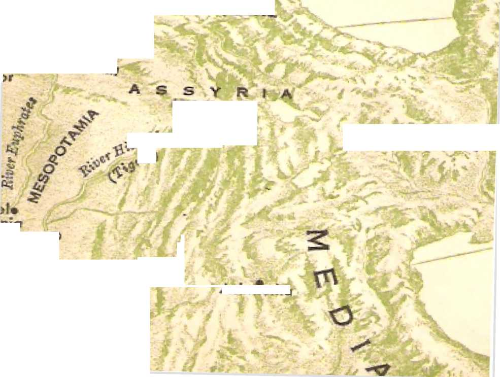
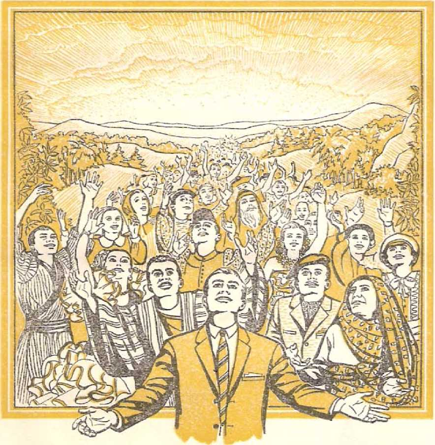
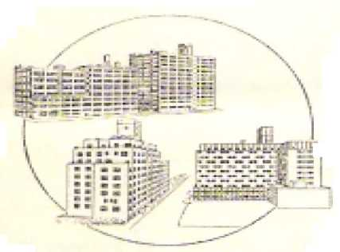
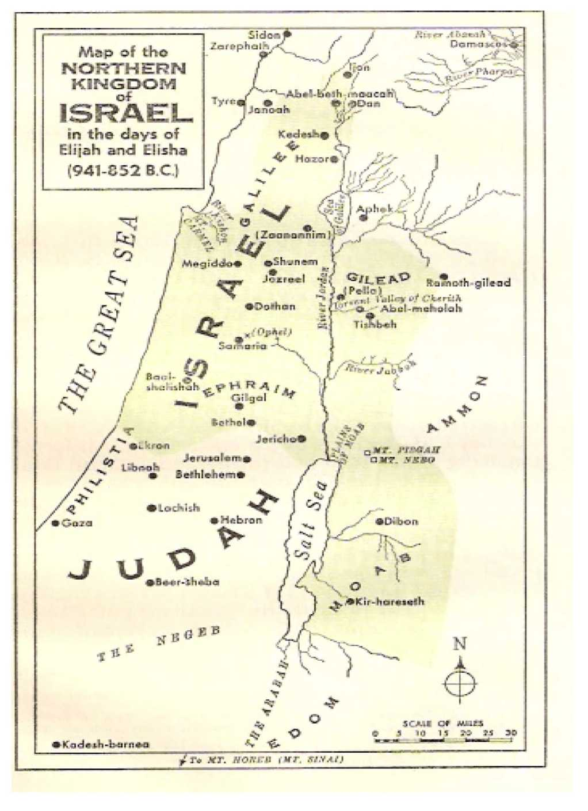
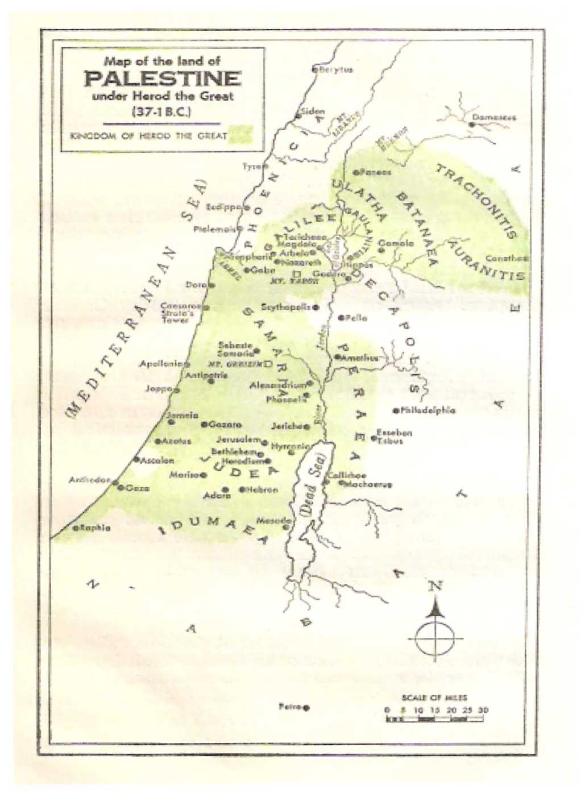
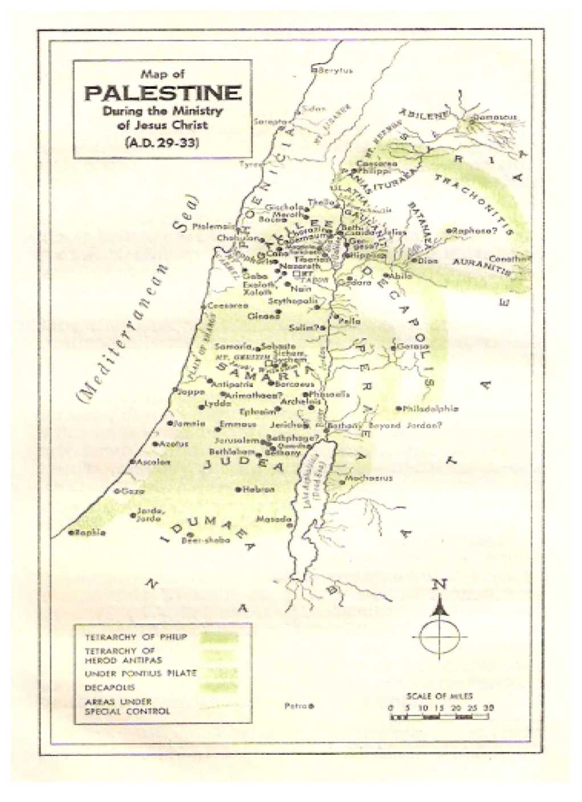
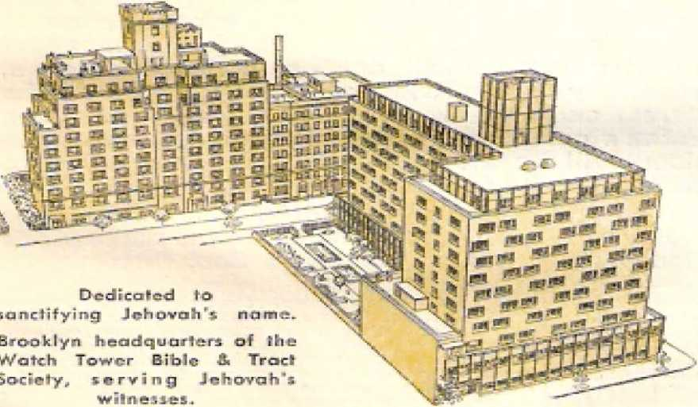

rodanim
KITTIM
Goto-* e
>Hebron
Ashteroth-Karnaim A * « Karnaim PHARAAH
EDOM
•Dumah
• Tema
THE WORLD of the HEBREW SCRIPTURES seen from the southeast
Tubal
Carchemish
•Horan
ah*
EDEN
(ASSHUR)
*Nineveh
*Calah
As)
PICT ACCAD
h
Ettasar
Susa
ARARAT
f/Vj
Achmetha
^AM
“Let
Ifour Name Be Sanctified”
“Our Father in the heavens, let your name be sanctified/’ —Matthew 6:9, New World Translation.
COPYRIGHT, 1961 by
Watch Tower Bible a.. Tract Society of Pennsylvamia
First Edition 2,250,000 COPIES
Pl. JSLJSll liltS
Watchtower Bible and Tract Society of New York, Inc.
Inter nation.al Bible Sti.’dents Assoctattom Brooklyn, New York, U.S.A.
Mude In the United States of America
dedicated to the <cKing fite/tnity, ike God o{| the whole ea/ttk.
Abbreviations of Bible versions quoted or cited in this book
AS — American Standard Version, by the American Committee of Revision
AT - An American Translation, by J. M. P. Smith and E. J. Goodspeed
AV - Authorized or King James Version of 1611
Da —The ‘Holy Scriptures,’ a New Translation, by J. N. Darby RS — Revised Standard Version, by the Division of Christian Education of the National Council of the Churches of Christ in the United States of America
Any quotation not followed by any specific abbreviation is from the New World Translation of the Holy Scriptures (NW). the revised edition of 1961. Other versions of the Bible are quoted or cited, but not with the name of the translations abbreviated.
CONTENTS
CHAPTER
1 The Greatest Name in the Universe
2 The Book of the Name
3 How It Came to Need Sanctification
4 Its Profanation Brings a World’s End
5 Calling upon It in Faith
6 Making a Name for Himself
7 The God Who Wrote IT is Own Name
8 National 1 Consequences from Profaning It
9 The True God versus Baal
10 (Tarrying Forward the Unfinished Commission
11 Executing Judgment upon Profaners of It
12 A Supporter of Sanctifying the Name
13 Turning Back Hearts to the Name
14 Prayer for It to Be Sanctified
15 Taking Out a People for His Name
16 The Promised Fore-runner Prepares the Way
17 Commissioning and Training a Successor
18 Present Education for Sanctifying the Name
19 How He Sanctifies 11 Ls Own Name
20 Will You Now Sanctify His Name?
Maps: Nori hern Kingdom of Israel
Palestine Under Herod the Great
Palestine During Ministry of Jesus
Moabite Stone with the Name
Pago 559 of Ph, gio Pidei with the Name
Index to Scriptures Cited
PAGE
5
12
27
45
65
81
100
114
133
165
178
192
202
236
264
292
317
334
361
373
137
204
217
113
19
379
TT his present living generation of mankind is about to witness the sanctification of the greatest name in the universe! Hundreds of millions of people are yet without knowledge of this most important name. Other hundreds of millions may have some form of religion but they willfully leave the name out of their concerns or despise it, profane it or put no faith in it, and reproach it. The fact of the matter is, the vast majority of mankind is against the name. Yet it will be sanctified in a marvelous way, before friend and foe alike. This will be in answer to the prayer offered for more than nineteen hundred years by sincere lovers of the name.
2 Why should you, the reader, be interested in the sanctifying of a name maybe as yet unknown to you? Well, if you desire to see all poverty wiped out by a never-ending era of plenty, you should be interested in the sanctifying of that greatest name. If you desire mankind’s ills and pains to be forever relieved by an eternity of perfect health for all living humans, you have cause for also desiring the sanctification of that most important
1. What important thing is to be sanctified in this generation, before whom and in answer to what?
2. Why should the reader be interested in the sanctifying of a name unknown as yet to countless people?
name. If you want injustice and wickedness to be ended, yes, if you want all grinding down of helpless masses of people by self-seeking men greedy for material riches and for power over others to be stopped and punished for all time, this coming sanctification of The Name is what you are really desiring. If you want a clean, incorruptible government higher than that of imperfect men; if you want the earth under such a righteous government to be healed and changed into a lovely garden, a delightful park everywhere; if, also, in hope of such an earth-wide paradise, you desire to live here to enjoy it in peace for all time, yes, to share its beauties and joys with your dead loved ones who have known only a life of hardship, suffering and sadness; that is, if you want the death to which we are now subject to be lifted off us and you want your dear ones to return from the realm of death to life, then you also want the sanctification of the greatest name in the universe. All those grand things depend on this long-prayed-for thing.
s The sanctifying of any thing means simply the making of it holy, the setting or it apart as sacred, the holding of it sacred, as being something not. to be used in a common, ordinary way that would make it unclean, impure, unrespectable and degrading. But today, ideas of what is holy differ the w orld around; and what is holy to one may be shocking to another. What is truly holy, however, has nothing to do with any unclcunncss, even when practiced in a religiously sincere way. The sanctifying of the greatest name in the universe will therefore make it shine in purest light, in a glory that will make men stand in awe of it, highly respect it and dread ever to use it in an unworthy, worthless way or speak reproachfully of it or bring reproach upon it. All will have any misunderstanding or misrepresentation of the name cleared up.
WJiat dot's cite sanctifying of anything mean, and. what will the sanctifying of th< great ust aame result in and mean?
All will have their appreciation of the name deepened. They will in a heartfelt way respect it for all it is worth, for all that it stands for. The greatest name of all deserves the full honor that is due to it.
* How precious it is to have a good name! Long ago a king in the Middle East who had the name for being the wisest man of ancient times wrote: *dA name is to be chosen rather than abundant riches.”* This king knew, for he was very rich; and the passing of time has not lessened the truth of his proverb. After he made a thorough study of all the empty ambitions and vain occupations of men, he made a report to the congregation of his people and said: “A name is better than good oil.” t He composed a song that ranks as “the song of songs/’ and in it he had the beautiful lover say of her beloved one: “For fragrance your oils are good. Like an oil that is poured out is your name.” * A good name has a fragrance surpassing that of a costly ointment, and mere money cannot buy it. It is better than having children to carry one’s family name into future generations. It has more power with heaven than material riches.
5 A good name brings more soothing satisfaction to its deserving owner, and more comfort and encouragement to people who Jove its owner. Those who do not want to live their lives in vain seek after a good name. There is a right and successful way of seeking after it.
G Each i*cadcr of this book respects his own
* Quoted from Proverbs, chapter 22. ver&e 1, ol The Holy Bible, according to the Wotj ci Trayr-aZaiion of
iAc Z/c>Z.V Scriptures, 1961 edition.
t Quoted from Ecclesiastes 7:1 in The Holy Bible, NW.
X Quoted from The Song of Solomon 1:3 in The Holy Bible, JVW.
4. How djd the wiwsL man of ancient times rate the predOUSMCSs of a name, and what ix>w<-r does it have with heaven?
5. How does a ffood name affect its t>wner and the lovers of its owner"
6. Why will the possessor of the greatest name lake action 5n its behalf, and how will this affect all creation in heaven and. earth ?
name, Ue craves to have it respected and held in good esteem by others, for this means so much to him, among righteous people. Likewise the possessor of the greatest name in the universe respects his own personal name. He respects it above every other name in the universe1 In fact, he is jealous for his name. Ever standing ready to defend it and to glorify it with all zeal and earnestness, he declares: 1T will be jealous for my holy name." 1 All creation in heaven and earth will be better off for it when he takes the due action to clear his name and makes it known in its true worth to all living creatures.
7 Who is this one whom all living creation must yet come to know? Who else could he be but the Creator of the universe? The visible heavens and the earth reveal him to be the Scientist in Chief. The scientists of this modern space age cannot catch up with him; they are finding that his knowledge and application of science are unfathomable. He is an eternity ahead of them. And since pure science is absolute truth, so he is truthful. He has displayed a complete mastery of science, not only in his created universe with which modern scientists are only slightly familiar, but also in the Book that he has caused to be written. He has a marvelous purpose concerning our universe into which each seeker of life in eternal happiness can fit. His purpose concerning the universe is stated in his Book, In it also his name is made known.
a He is not ashamed of the name he bears. He has supreme confidence in himself. He inspires his intelligent creatures to have the highest confidence in him. Hence, when declaring his purpose and when making his promises of future good things, he swears by himself or by his own name. Yes, in his inspired Book lie has given guarantees of things to come over his personal name. His name will never be besmirched by a failure to fulfill his stated purpose or to live up to his covenants or to make good all his promises. In the past he made a name for himself numbers of times. He will yet again make a glorious name for himself before all earth's swarming population.
=■ The Creator of the universe is a holy Person, and his personal name is holy. It has been known to man since the beginning of man’s history. Yet it is so little known or respected today. The reason why is well known; and the ones responsible for this are also well known. In ancient times the Creator had a people, an entire nation, for his name. He had a holy city upon which his holy name was called; and in this capital city was the temple that was built to his name, where its praises were sung and where it was called upon in prayer and thanksgiving. lie raised up mouthpieces, prophets, to foretell the future in his name and to write of coming events. He proved himself to be the greatest Fighter in the universe, and this was all for his name’s sake. Victories he won in battle for the deliverance of his people from their enemies. But the greatest battle in all human history and in all the history of the universe he will yet fight and win for his own name’s sake. Thus his name will become the most celebrated in heaven and earth.
From the very beginning he has been interested in preserving his name among his creatures in heaven and on earth. In harmony with this he has not let his people who bear his name die out. To this very year he has on earth a people who bear it as his true and devoted worshipers. In their case he has kept his own prophetic promise: “I S'. How long has the Creator's name been, known, bow was his name given prominence In ancient times, and how will his name become the most celebrated?
10. For preserving his name omontT creatures. whom has. he preserved til] now, and how is Ills, name b-eeomin# more known and. reverenced ?
will set them as a praise and as a name in all the land of their shame. At that time I shall bring you people in, even in the time of my collecting you together. For I shall make you people to be a name and a praise among all the peoples of the earth, when I gather back your captive ones before your eyes.” * By his use of these gathered ones he is becoming more widely known all around the earth. Millions today are hearing the name proclaimed. Hundreds of thousands arc coming to reverence it. They are hastening to make their peace with its Bearer now, before he stages his supreme fight.
11 The reader of this book may be among the millions of religious persons who for many centuries ignorantly prayed for the sanctifying of the Creator’s name. The religious leaders have kept them in ignorance of this holiest and greatest name in all the realm of the living. It is not strange, then, that many of those who prayed have been prejudiced against the very name for the sanctification of which they have so often prayed. But what sense is there in being prejudiced against it just because many men who were linked with it in the past proved unfaithful and unworthy? The Creator is still holy and true. He still has respect for what he is called. In his almightiness he will carry out his announced purpose and will sanctify his holy name in spite of anyone’s prejudice against it. After that he will never let it be profaned by mankind again. “And I shall certainly sanctify rny great name, which was being profaned among the nations, which you profaned in the midst of them,” says he in his unchangeable purpose, t Why, then, should we resist and fight against the best thing that could happen and will happen?
* Quoted from Zephaniah 3:19, 20 in The Holy Bible, A’W.
t Quoted from Ezekiel 36:23 in The Holy Bible, 2NW.
II. !:• ihr lace of what earnins: event is It not t'orxi sense to be nrf.iudk’iNl tss-ninst the name because of unworthy ones once linked with it?
32 Upon the sanctification of his name rest the life and happiness of all who desire to prove worthy of eternal life without pain, sorrow, hunger, imperfection, subjection, injustice and oppression. All of us who are his creatures owe it to him to worship him as God, the only living and true God. From him alone there comes to us the valid hope of a new world of perfect satisfaction for all lovers of right, of justice and of goodness, and he also makes it possible for us to realize that glorious hope in his due time. Its realization means a paradise established on earth, with peace among all peoples of whatever present-day language, race, nation, color and social or educational standing. Our realizing that hope means a happy, blessed, useful life of purpose forevermore, in full harmony with the Creator of the everlasting new world of righteousness.
:i The names of mon who arc the prejudiced or willful opposers of what Is in the highest interest of mankind will die out, rot away in reproach. “The remembrance of the righteous one is due for a blessing, but the very name of the wicked ones will rot/’ * The name of the righteous Creator will shortly be proved to be the greatest name in all the universe* It. is imperishable. After all the infamous oppressors of mankind have perished forever and the remembrance of them ceases for all time, the Creator’s name will survive in undying universal glory. Then great will be the reward and great the happiness of all those who pray and who sincerely live in harmony with the prayer: “Our Father in the heavens, let your name be sanctified.” t
Oh! As to the name itself, to learn what it is we must go to the Book of the Name,
• Quoted from Proverbs 10:7 in The Holy Bible, ATW, t Quoted from Matthew 6:9 in. The Holy Bible, NW.
12. Why do WC ftwss it to him to worship him ais God, and what ln»pr does he make it possible lor us to rruilixt-?
13. 14. tv hat will be the i.iuliisne with the names of the opposers and the nafiSf of the Creator, find where must we go to learn what the rut me is ?
naong the miraculous works of the Creator of the universe is a book. It is now tin old book. For nineteen centuries it has been called “the holy writings/’ or The Holy Scriptures; but today it is also called The Holy Bible. It may be rightly called The Book of the Name. Why so? Because to it we must go if we desire to learn the name of the Creator of the universe, the One who put us here on this earth.
-In tribute to its lifesaving power this Book of Holy Scriptures has been translated, in whole or in part, into more than one thousand one hundred and fifty languages and dialects spoken around the earth. The translating of the Book into more languages or dialects continues on, that the Book may reach more and more people whose eternal life is in danger. But from many of these translations we cannot learn the name of our Creator, because another word or a title has been used instead of his name. By such translations the name has not been respected, honored or held sacred; it has, in fact, been hidden from readers who need to know the nanie for their own salvation. But by going back to the Book in its original languages we can learn what our Creator calls himself, to make us acquainted with himself.
1, What may the book that God has created be rightly cabled, anil why so?
2. To what extent has this book been translated. and how have many such translatSans not respecteil or held sacred the Creator's name?
3 Hundreds of years before such well-known religious leaders as Buddha and Confucius and Mohammed appeared, the Holy Bible began to be written. That, was 1,513 years before the year that Christendom calls A.D. 1; or more than 3,470 years ago. Remarkably, it began to be written in a language that still lives today and is spoken by a nation of people. For various reasons that language was doubtless the language of the first man and woman on earth. It may therefore be called the Adamic language, since the first man's name was Adam, meaning “Man.” In other words, it was man’s language- But during all the thousands of years from Adam it has grown and developed, and today it is called the Hebrew language,
1 The most of the Bible was written in Hebrew. A small part of it, namely, some chapters or smaller portions of four of its books, was written in a related language called Ar-a-ma'ic (meaning Syrian). The last twenty-seven of its books were written in the common Greek of nineteen hundred years ago when it was the international language. All together, the inspired Holy Scriptures include sixty-six books in Hebrew, Arama'ic and Greek, so that these Scriptures may correctly lx? called the Bible, because our word Bible comes from the common Greek word biblia, meaning “little books?'
3 The Creator of the universe first revealed his name to man in what is today called Hebrew. That is why we must go back to the Hebrew Scriptures to leant what the name is. The first, book of the Bible is today generally called Genesis. This name is a Greek word, meaning “generation; origin; source”; and it is found in eleven significant places in the first Greek translation of the first book of
3. When, did the Bible begin to be written, and in what language?
4. How many books do the inspired IluJy Scripture^. include, and in what Sanj’uaK-es were 1.1 K-y written?
5. (a) Why must we back to ihc Hebrew Scriptures, to J earn what the Creator's name is? (b) Why the first Bible book called Genesis, and how many and how lun^ were the creative days uf Genesis?
the Bible, which fact is the reason for its being called Genesis. In Genesis, chapter one, the Bible gives us a brief account of God's creative work in preparing our earth Tor man and in finally creating man and woman. This creative work that reached its high point in creating our first earthly father and mother was performed in six great periods of time called “days.” From the Bible and the fulfillment of Bible prophecies in our own modern times it can be demonstrated that each of these days was seven thousand years long.
u In starting the Bible record by the hand of his prophet Moses the Creator of the universe does not give first his name. Instead, he gives his title, to set forth what he is. Thus verse one of chapter one of Genesis reads: *Tn the beginning God created the heavens and the earth.” (Genesis 1:1, ATcw WorZd Translation') Here the title God means a living Person, not natural law operating without a living lawgiver, not blind force working through a series of accidents to develop this or that thing. Here God is the Creator, the Universal Scientist, whose scientific knowledge, skill and power are manifested in all bis matchless creation. In the Hebrew language his title God is ELohim', In the ancient Greek translation of Genesis the title is ho The-os'. But does he not have a name?
1 He does. According to the style that was used in writing documents in those ancient days of the prophet Moses, God (Elohim', ho Theos') gives us his name at the end of the document on creation. Quite fittingly his name is given together with his title as his signature to the creation account, in Genesis 2:4, which reads (NW) : “This is a history of the heavens and the earth in the time of their being created, in the day that Jehovah God made earth and heaven.” His name is thus given in 6. In Genesis 1 ri what does the title God denote. and wTiat is tins title in the Hebrew and. In the Greek translation7
7- Where is God's personal name introduced, and why was It gotwl nod wise that there his name was given with his title English as Jehovah; and he is God the Creator of eardi and heaven. It was good and wise that he revealed to us his name. Why? Because that title is also applied to false gods. For example, the false god named Ba'al-be'rith is also called Elohim' in Judges 8:33; 9:27; and the false god Da'gon of the Philistines is called Elohim', in Judges 16:23, 24 and 1 Samuel 5:7; and the Assyrian god named Nis'roch is called Elohim'in 2 Kings 19:37. Another thing: though the pagan Greeks applied the title fto Theos' to their false gods such as Zeus and Hermes (or Jupiter and Mercury), the Christian Bible writers applied the same title to the Creator Jehovah.—See Acts 14:11-15,
s Also, when writing in the common Greek of his day, the Christian apostle Paul wrote to his fellow believers in the pagan city of Corinth, Greece: "We know that an idol is nothing in the world, and that there is no God I Greek, TAe os'l but one. For even though there are those who arc called ’gods’ j Greek, £foe.oi'], whether' in heaven or on earth, just as there arc many ’gods* | the.oi' | and many lords/ there is actually to us one God r77te.os'j the Father, out of whom all things are, and we for him.” (1 Corinthians 8:4-6) The fact that there is actually just one living and true God did not do away with the need for him to tell us his personal name. By giving us his name he distinguishes himself from all the false gods who are also called Elo-him' in the Hebrew Scriptures or ho Theos' in the Christian Greek Scriptures.
u How thoughtful and Tor esigh ted it was, then, that at the close of the account of creation he signed himself, in Genesis 2:4, as YcJio-uxih' Elohim' or Jehovah God! Thus when we hear that personal name we do not confuse him with 8? Because* as shown in 1 Corintnians there is just ©ne
living and true God, did this. do away with the need for Him to tell us hts personal name?
Q. Why was it thoughtful and foresight cd that at the close of the creation account he signed hjjib;: If as I'ei'iowtift Flu/tiiw,1 any other so-called god; we think only of the Creator of heaven and earth, the Creator of mankind.
1,1 Everyone would like his name to be not only treated with due regard but also pronounced correctly* For centuries there has been a great dispute over the correct pronunciation of the Creator’s personal name. Some modern translators of the Bible render it as Jah we h or Jahve, as if this was closer to the correct way of pronouncing it* However, Jehovah has been the popular way of pronouncing it in English. In the Roman Catholic translation known as The Westminster Version of the Sacred Scriptures, of which the Jesuit priest Cuthbert Lattey was the General Editor, the translator uses Jehovah, and in his note on Jona 1:1 he says:
In accordance with the preference of the general editor of the Westminster Version I employ the name ‘Jehovah’. It Is well known that this is certainly not the equivalent of the Hebrew Name: it was unknown to the Fathers, and, until our own times, was not found in Catholic commentaries. I should have preferred to write 4 Yah we’, which, although not certain, is admittedly Superior to ‘Jehovah’.
In his introduction to his translation of the First Book of Psalms, page xxiii, footnote 2, Jesuit priest Lattey says with regard to the form Yahweh:
Such is the form now commonly used, though it cannot be said to be certainly correct. In my translations I have preferred upon literary grounds to use the older English word 'Jehovah*, as consecrated in our poetry (for example, Milton, Paradise Z*ostf, Book i ,, verse 602), though it is based upon a misunderstanding of the Hebrew.—1939 edition.
11 The reason for the dispute is that in the Hebrew writings found in handwritten copies of 10. (n> How do some modern translators render the Creator’s name as to its pronunciation? (b) What has been the popular way <if pronouncing it. and what do translators of the Wesf-t»tn«tcr Version stiy about tikis way?
IX. (a> What is the reason for the dispute about the pronunciation of the divine name? (b> How did the pronunciation of the Tetragrammaton as Febowfb and yerJicowdjk come about?
before our Common Era, as in the famous Dead Sea Scroll of Isaiah, the divine name was written with only four letters, namely, its four consonants, but without any vowel signs between those consonants. These four consonants correspond with our English YHWH.2 After the last book of the sacred Hebrew Scriptures was written, the Jews or Israelites fell into the superstitious fear that it was uTong to pronounce God’s personal name, that it might be a sin to do so. When a reader of the Scriptures came to those four letters called the Tetragrammat on, Fie would read aloud a substitute word, El-o-him' in some places and (the
Lord) in other places. Finally the correct pronunciation of YHWH became generally unknown, the knowledge of the true pronunciation being held only by the priests. The vowel signs that are now used in Hebrew copies of the Holy Scriptures were invented quite late and came into use first in the seventh century of our Common Era. In harmony with the practice that had developed among the superstitious, the vowel signs for Elo-him' or for were inserted at the accustomed places in the text to warn the Hebrew reader to say those words instead of the divine name. By combining those warning vowel signs with the Tctragramma-ton the pronunciations Yehowah' and Yehovah' were formed.
135 In the Hebrew Bible the name of God is represented by the four letters nw (read from right to left), corresponding to YIIWII* Centuries before the Protestant rebellion of the sixteenth century against the religious authority of the popes of Rome, Roman Catholic clergymen were pronouncing the sacred combination of those four letters as /e/zuzru/z. All the available evidence is that Roman Catholic clergymen introduced that pronunciation, Says TTte Encyclopedia Americana, Volume 16, pages 8, 9 (1929 edition):
The reading "Jehovah” can be traced to the early Middle Ages and until lately was said to be invented by Peter Gallatin (1518), confessor of Pope Leo X. Recent writers, however, trace it to an earlier dale, being found in Raymond Marlin’s "Fugeo Fidel” (1270), It was doubtless due to the fact that Christian Hebraists regarded it as a superstition to substitute any word for the divine name. . ..
Raymond Martin (or, Raymundiis Martini) was a Spanish monk of the Dominican Order. In English the full title of his book means “Dagger of the Faith against Moors and Jews/' He was one of the censors appointed by the pope of Rome to dig up the passages In the Jewish Talmud objectionable to Roman Catholics.*
13 Another modern authority j calls our attention to the fact that in the ancient city of Tiberias on the Sea of Galilee the sacred four consonants (YHWH) came to be given two vowel signs so as to read
* Sec The Babylonian Talmud (The History of the Talmud), Volume I, by Michael L. Rodkinsan, pages 72, 73, of the 1918 edition.
t “The Cairo Gen iaa,” by Paul E. Kahle, based on The Schwcich Lectures of the British Academy of 1941, published in London. England, 1947, See Chapter HI, entitled
Yehowah', a fact that is shown in Hebrew manuscripts of the ninth, tenth and eleventh centuries
Ter tia Pars Dift.II. Cap. HI. §9 naro K'D rro ws rra?Mn im mnyh *rrw ntsto nhn rss |pon vaa nsrhr.ui if ib ribtna n5 “C'sS v'iWni yi?n j-e ^7 1—onrin W3 nxcn rAwSico mx rrpn pcM win.-i 5y fict-.a nr-W ftifp nW nmx nts n5 nnnnS prno pianrr □’ro crnhx -t-t* [2*1 t-*am Nh® i’HNrt p N*n rviip'o wnn nw g’wn p n5 jtsna r.'y? tin ri'xjp Nim ia-iW □lrn p wbi ttj'O'1 nfia nW huh J2 N”' rrzr-i* K33ipe±> shs: rrooiw nad nW bnn p nSt n’ctti’sico «m nW ta ;-r%473 n5 tWCD EZ2:pCr ir'N uiiy new t=znN*^ nyco Wsn n*iN2 yj;x pyM p nSi p-u hthimi rcoWi W n<w> mp’D n-fi rjm ^ijn-ifi :□ at’n iTVJJi yjw srjrvx ucn nm p«n p d-j'f m^ipccn W mipio w ,nrr. rnmni-o W N’pm W n'Njp nvt 'tff( qW jo tW Wnh nrs rirerp T^4,'n r>rn Sa'hi 50 Sm mirn ty:v£dd X'H 'in* i*n p nSt idsfo =irv asian hnf tz=r.xn *d2bm anS ra rr^n T'Otm h1” r— lb nxno's ~thi izco runburn du pn finSc nrnN itnai ■sb rwc-o rth’nro I’lin *'hv wpb nT-ro# nsto it evfirt pnt 'ten NWTi r—en “r-E rysj jit (i ^ualrSf r trit ; ft«<pw mertierit t crit /, J>.t/fchm.~
Seqvitur vcrCT^ Etfi>rmavtr Dominos Deus de rerra cmnia aninaalia agri t fit CKTirKrm avcm ccrli ,&add«Krrad Adam, &c. Et Adue non bn c-yiit adjurorium* xiurir zc. J, Str^t*tnt rfli^ cneC 1. v. 14- E* dixir Ucus^producar terra anirnaun vivensem fecundum fpccrcm fiidm >- is' < it./ , 5: fcrrnavir Dominus Deus>Gene£2. V/xit K. .'frb.t, .^'i/b.xis Oe-
its brntiiiftbits certtrtt Angela minifirrii &" w/ncrcj ,
Cf Aixif ftft t n'jjfrcn i^firju/&1 Mjcji-irtrnnt, ’ 1-ecrt bfti'Mr ea -
iff »; trjtnftrt cor.iw AJam dixit iih qi’od eft nvtnm ift txt ? tedrji &osr
(ft iHxfttfl f btt eft eq~tia f fs Jftc dexini. IjfXf/tt Dei-im: <', if tftb&A . ft
Ait ci, Adjfm , de terr a ere nt xs ft/fTi, Et ftbod eJi kwa-jt? j
IKtxm? S"‘^|7T’ Adtnjtyyft'iA Dotnsmex e t ammtirfi. Rnrftem trjn^
JtrefifitiQTAtMfpfeftftaxniMMiAhixti eiix-rt /■■>«« .■ Cta 9 bjibc .'st
cvftfxges - 0* tgt trtn hxttt ttxfxgem j ficus di£ixsn eftG Gen. 3 v v. 20v Et Adamo non inventt adjuronom, A/.'r-- res. nan trenrrtt t^fi f,ri-
Photograph of the top thirty lines of page 559, of Fart 3, nsst. 2. Cimptx'-r 3, of Haymond Martin's PUGIO adversus Judaeos
tri eftutaeos of A.D. 1270. as presented with, observations by Joseph de Voisin (Parts) and an introduction by J. H. Carpzov, and published In Leipzig. A.D. 1687. Copy In. Lhe New York Clly Public Library.
In the 4th line from the bottom, left, may be seen Martin’s use Ln 1270 (A.O.) of the popular pronunciation of the divine name, ■"Jehova.” See also page 31, footnote *+ of our Common Era. It was not before the year 1100 that a vowel sign for the letter “o’* was put in the middle, to make the combination read yt? JiO.wcr?i*. Says the Lexicon for the Books of the Old Testament, by Ludwig Koehler and Walter Baumgartner, Volume I, page 369, column 1, 1951 edition, under mn*: “The wrong spelling Jehovah (Revised Version: The LORD) occurs since about 1100,” and then it offers its arguments in favor of Kafr-weft' as “the correct and original pronunciation*** Still, this Lexicon offers Yahwah as a better form than Yahweh.
14 All the foregoing serves to show that even today the exact pronunciation of God's name is uncertain. But it is interesting to note that in 1531 the influential Roman Catholic cardinal, Thomas de Vio Cajetanus, constantly employed the form Jehovah in his Commentary on the Pentateuch. Eor example, in Genesis 2:4, his Latin translation has lehoua ItHohim; and in his note on Exodus 3:16 he says that according to the Hebrew it reads: “Ich&uah Eloke of your fathers has appeared to me.’*
3fl Also, the German Protestant ref ormer of the sixteenth century, Martin Luther, in his German translation of the Bible (1534) follows the religious practice of that day in rendering the Tetragram-rnaton (mm) as Her Herr (“The Lord”), But in his own writings he sometimes used Jehovah, as, for example, in his two sermons on Jeremiah 23:1-8, in which he says that this name Jehovah “The Translations of the Bible,” pages 172, 173. Footnote -1 say s i he pronunciation Ychwah? *'is preserved by the Samaritans up to the present day. Not before 1100 an o was added to the word (rnrr) and this seems to indicate the pronunciation ’ITR I’A-do-nay'J.”
14. What does ail the foregoing serve to show us to pronouncing the TetrafrramiEnaton, but to what pronunciation did Cardinal Thomas d<* Vio Ctdclanus stick?
15, Huw did Martin Luther render the Tetra&rainjmaton in Ills German Bible translation, but what rendering did he aotnc-tiroes use in his own writings’?
belongs alone to the true God; it means only God as he is in his divine being.*
1C The man responsible for introducing the word Jehovah into the English language was William Tyndale, the Roman Catholic preacher who became a Bible translator and who was strangled and then burned at the stake on order of the Roman Catholic clergy. In his translation of the Pentateuch (1530) he uses the word Jehovah. lie renders Exodus 6:3: “But in rny name Jchouah was I not known unto them?’ The whole succession of English Protestant translations of the sixteenth century, except that of Cbvrrd-ilc (1535), also used the divine name. Matthews* Bible of 1537 has a note in the margin, on Exodus 6:3, as follows: “Xehouah is the name of god wherewith no creature is named, and is as moch to say as one that is of hymselfc & dependeth or no thing?’' So it was that in 1557 the word “Jehova" got established in the dictionary, f
17 The Roman Catholic translation of the Bible of 1610, known as the Douay Version, does not contain “Jehovah?’ + It docs contain “Adonai” in Exodus 6:3 and Judith 16:16 (Apocryphal).
The Protestant translation of 1611 known as the Authorized or King James Version contains “Jehovah” in its main text in Exodus 6:3; Psalm
* Quoting from his sermons printed In 1527 (page 569): "Dieser nw/r jrt-y JZcrr, flreftdrt fitZZcinc de at
waren Cr-ott zu.'* nah-nie VcZtovaZt', T/jviv/Z,’
bedewtet a-Ztei^ Gotta wia cr 1st ynn vcincm G&ttlichcn iwesen? -
t See Old Tosltfinent ds Semiiia Studies, Volume I, under “Notes on the Name,” and JT. The Pronunciation Jehovah,” by George F. Moore.
1 Consult Cortcordaniie to tfte 2?ibZe (Douay Version), by Rev. Newton Thompson, S.T.D., and Raymond Stock. (1943 edition, St. Louis, Mo., and London, W.C.)
16. Who introduced the word Jehovah Into the English lan.ju.aflr and when did this word .get introduced Into the dictionary? 17, As to rendering the Tetra^rarnmatort, what does the Cath© lie ycraiort contain?
18. When! dues the jla^/jorireci or Xinxf James Version present ’“'Jehovah'' 2
83:18; Isaiah 12:2 and Isaiah 26:4; besides the compound forms of Jehovah-nissi (Exodus 17:15), Jehovah-jireh (Genesis 22:14), Jehovah-shalom (Judges 6:24), and, in the marginal reading for Jeremiah 26:3, Jehovah-tsidkenu.
The English Revised Version of 1885 retains the name in the same jJaces but introduces it also in Exodus 6:2, 6, 7, 8; Psalm 68:20; Isaiah 49:14; Jeremiah 16:21 and Habakkuk 3:19.
However, in the American Standard Version of 1901 the revisers used the popular form Jehovah wherever the Tetragrammaton (rnrr) occurred in the Hebrew text, the so-called Masoretic or traditional text3 In the Masoretic Hebrew text of the thirty-nine books of the inspired Scriptures the Tetragrammaton occurs 6,823 times.c
: 1 The Revised Standard Version, published in New York city, N.Y3, in 1952, omitted the sacred name altogether and used substitute words according to an unchristian tradition, the Jewish tradition.
-- Tn June of 1961 the 2Vew Worlzl Translation of the Holy Scriptures was published in one volume, in Brooklyn, New York. In loyalty to the divine Inspire i’ of the Holy Scriptures it presents His name according to the occurrence of the Tet ragrammaton (ntrp) in the Hebrew text, even in the 134 passages where the ancient Jewish copyists (Sopherim) say that they changed the primitive Hebrew text to
read A-do nay' instead of Ve-honvah'j in other passages was the word used as a substitute.
Also in a couple of places (Isaiah 34:16; Zechariah 6:8) the apparent abbreviations for the divine name were rendered in full. Thus it comes about that in the jVrw WorZti Translation of the Hebrew Scriptures “Jehovah" occurs, not 6,823 times, but 6,961 times. The highest number of times in any one book of the Bible is in the Psalms, with 742 occurrences of “Jehovah/7
One further outstanding mark about the 2Vt?w Wor?d Tiati.s7vt.io7f is its presentation of God*s personal name in what is commonly called the New Testament, that is to say, the Christian Greek Scriptures. Of course, the .JVertc IVorZd Translation was not first to do this, in English. In 1864 there was published in America a translation entitled “The Emphatic Diaglott containing the Original Greek Text of what is commonly styled the New Testament/’ by Mr. Benjamin Wilson, a newspaper editor of Geneva, Illinois, This Diaglott contains in its main text the word Jehovah a number of times, as in Matthew 21:42; 22:37, 44; 23:39 and Murk 11:9, where the Hebrew Christian writers quote verses from the Hebrew Scriptures in which the Tetragrammaton (mrr) is found.
- ‘ But as far back as 1385 a Spanish Jew named Shem Tob ben Shaprut translated the inspired book of Matthew into Hebrew, Where the apostle Matthew quoted from the Hebrew Scriptures the Jewish translator Shem Tob rightly entered the Tetragrammaton (mrr) into the inspired Christian Scriptures. Since then as many as nineteen translations into Hebrew have been made of books of the Christian Greek Scriptures or of the entire twenty-seven books; and all these translations into SSL Wliat further outstanding mark Is tKere about the iVesti TVo-Jif riwisfatioK with regard to jpttesenttng the divine name, t>u.t wlwl T-ji^iish translation was ahead or it In doing th.Es? 3HL Since 138S what tuts been done as !■> translating the Cftristlan Greek SttiptLires, and how has nil this furtUShca a gnoct basis fur the Jfew Woritf Trattsiaticmr
Hebrew present We Tetragrammaton (mm) in the so-called New Testament, These Hebrew translations furnished a good basis for the AViw IVorM T'ransZaffon in regard to Jehovah’s name.
25 With these Hebrew translations as a backing or support, the TVcw World Translation of the Holy Scriptures has rendered the divine name in the form **Jehovah” throughout the Christian Greek Scriptures. How many times? 237 times. Its authority for doing so was not merely those nineteen aforementioned Hebrew translations. Long before the Christian Greek Scriptures began to be written, certain Greek-speaking Jews of Alexandria, Egypt, under the reign of King Ptolemy Philadel-phus, began, about 280 to translate the
I -Iebrew Scriptures into Greek, for the benefit of Jews who could not read Hebrew. This translation, known us the Greek Scptuagint Version, was completed about- the first century B.C.E. Now what did those translators do when they came to the Tetragrammaton (mrr) in the Hebrew text? Did they translate it? Or did they use some substitute word for it in the Greek, such as Ky'ri-os (meaning “Lord”) or The-os- (meaning ’’God”) ? No! They inserted the Tetragrammaton in its old Hebrew letters right into the Greek text. Thus the divine name did appear in the Greek translation of the Hebrew Scriptures foi* the Jews.
-* Copies of the Greek translation containing the Tetragrammaton (him) were still in circulation in the days of Jesus Christ and his twelve apostles and were available centuries afterward. In the Foreword to the New IVorZd ITrans&ifion of the Christian Greek Scriptures, published in 1950, there is presented the proof of this.
25. Uw many times doos the JV*m? Worjrf TnjnrshifiOH present the divine nunie in the Christian Greek Scriptures. but when did the TetraRrurninnLon appear in u Greek translation of the Hebrew Sculptures., and for whose benefit?
2G. ir<iw Jong did sucEi kind nf Greek traralatiea circulate, unci where is good proof of this fact presented?
27 All twenty-seven of the inspired books written by apostles and other disciples of Jesus Christ were written in the common Greek of the first century, which was much like the Greek of the Septuagint Version of the Hebrew Scriptures. These inspired Christian writers who spoke, read and wrote Greek had at hand copies of the Sep-tuagint Version containing the Tctragrammaton (mrr). Conveniently, then, when they wrote the books of the Christian Greek Scriptures and felt inspired to quote from the Greek Septuayint, they would include in their quotation the Hebrew Tetra-grammaton, or, even when they quoted direct from the Hebrew Scriptures and found the sacred Tetra-grammaton there, they could follow the Septuagint custom and embody the letters of the divine name right in their inspired Christian Greek writings.* They had no superstitious fear of using God’s own name; no more than their Leader had had. They were no longer in fear of or under the influence of the Jewish priests, scribes and rabbis who took responsibility for putting to death the Jewish prophet of Nazareth, Jesus who is called Christ.
* Says Dr. Paul EL Kahle in Th# Cairo Guntea, pages 222, 224, of the 1959 second edition: “We now know that the Greek Bible text as far as it. was written by Jews for Jews did not translate the Divine name by fa/rios, but the Tctragrammaton written with Hebrew or Greek letters was retained in such manuscripts. It was the Christians who replaced the Tetragrammaton by Ari/jrios, when the divine name written in Hebrew letters v as not understood any more. , . . The papyrus containing fragments of Leviticus ii-v is written in a hand closely akin to that of Papyrus Fouad 266, characterized as already mentioned by the fact that the name of God is rendered by the Tetragrammaton in Hebrew square letters not by xvQiog as later in Christian manu
scripts of the Bible.1'
Whereas copyists began to substitute Kyrios (Lord) for the divine ruime in Greek copies of the Holy Scriptures, the Syriac translators used the word Marya jTI. when Christ's ;spasties and other disciple wrote the Giirls-tiitJi Greek Scriptures, how did they follow the early custonj. and why?
2® There was therefore no objection nor any obstruction to their putting in their inspired Christian writing the Tetra granimat on (run*) when they referred to God the Creator. Furthermore, if the Hebrew-Christian apostle Matthew first wrote his account of the life of Jesus Christ in Hebrew, as there is reason to believe, then he doubtless put the divine name, which is generally pronounced Jehovah, into the Christian part of the Holy Bible, just as those Jewish translators from Shorn Toh of Spain onward have done.
The committee who produced the 2Vew WorZrf Translation of the Holy Scriptures wore therefore justified in presenting at. least 237 times God*s personal name in the English translation of the Christian Greek Scriptures. This number, together with the 6,961 times in the translation of the Hebrew Scriptures, runs up a total of 7,198 times that “Jehovah*’ occurs in this translation of the entire Holy Bible.
30 The great Creator of the universe and of the Holy Bible has not left himself nameless on its pages. His Bible may correctly be called the Book of his name. By familiarizing ourselves with its contents we may get acquainted with him. We can learn why and how he will sanctify his holy name, and what it will mean for us in eternal blessings if we fear, honor, love and call on his holy name.
(JliSb) as a substitute, Says A Cyclopedia, by Dr. Syrian _Dictionary, by Dr. J. P. Smith, 1903 edition, On page column 1, concerning i 1 ; "The latter form is used
only of the Lord God, and in the Pcshita Version of the Old Testament represents the Tctragrammaton.” Hence in the Syriac translation of the Christian Scriptures this word stands for Jehovah, the same as
A"^no.$ now does in many cases in extant copies of the Greek Scriptures, as in Matthew 1:20.
28 Why Is there a special reason to believe that the apostle Matthew put the divine name in Sn the Christian part of the Bible? 2a. wust, therefore. was the New World Translation Committee ju.s: ilicd in filling, so that the divine name occurs how many times in. the entire Bible trrmsdatioat
30. Why may the Bible correctly be culled the Book of the Name, and by familiarizing aweelves with its contents what may we do?
son deserves to know and ought to know the name of his father. Did the first man on earth know who his father was and did he know his name? Yes, he did. But no, the name of his father was not Ape, as worldly scientists of our nineteenth and twentieth centuries want us to think* Who, then, wTas the first man’s father and what was his name? By going to the Book of the Name we can quickly find out. In the forty-second book of the Holy Bible, chapter three, verses 23 to 38, the writer Luke gives us the earthly line of descent of Jesus Christ all the way back to the first man. Counting from Jesus, we find a list of seventy-seven names, the last of which is Adam, who was the first man. But this last verse (Luke 3:38), which mentions Adam, does not stop the line of descent with him. It shows Adam’s origin, saying: “The son of Enos, the son of Seth, the son of Adam, the son of God.” Adam was the earthly son of God, because God made him in a special direct creation separate from that of the fish, the birds and the subhuman animals, and God gave him life, like a father.
1. What doct; a son deserve to know, and How do wc ascertain from Luke just who was the Hr&t man's father?
" The account of man’s special creation as given in the first book of the Bible, called Genesis, gives the name of his Creator* It was the name of the Creator of heaven and earth. (Genesis 1:1, 28; 2:4) The creation account says: "Jehovah God proceeded to form the man [Hebrew: a-dam'] out of dust from the ground and to blow into his nostrils the breath of life, and the man 1 a-dam' | came to be a living soul. Further, Jehovah God planted a garden in Eden, towaid the cast, and there he put the man [a-dam'J whom he had formed. Thus Jehovah God made to grow out of the ground every tree desirable to one’s sight and good for food and also the tree of life in the middle of the garden and the tree of the knowledge of good and bad/* (Genesis 2:7-9} So from the beginning Adam was the "son of God/* and his Father’s name was Jehovah, his heavenly Creator.
a A son likes to talk with his father, and a father enjoys talking to his son. He wants to talk to his son to advise him. Though Jehovah God the heavenly Father was invisible to his earthly son, he talked to him and gave him advice regarding the way to eternal life in the garden of Eden. For one thing, Adam had to imitate his heavenly Father and work. The garden of Eden was io be no place of lazy ease and aimless living. The "book of Adam’s history,” as it is called in Genesis 5:1, says: "And Jehovah God proceeded to take the man I and settle him in the garden of Eden
to cultivate it and to take care of it. And Jehovah God also laid this command upon the man | a-dam' : ‘from every tree of the garden you may eat to satisfaction. But as for the tree of the knowledge of good and bad you must not eat from it, for in the day you cat from it you will positively die/”—Genesis 2:15-17.
2. whom does the creation Eiccount in Genesis dw to he 1 he Talker i:r -111-!' tlri;*. I nan, and what does It give uy Jii-; r.-u ii.nn.--3, Why did the heavenly Father went m 1.;i’Jc to his earthly wei Adam, and how was Adam to imitate his Father -
4 Jehovah did not desire his son to die and leave the garden of Eden without a cultivator and caretaker. He did plant the tree of t he knowledge of good and bad in the garden of Eden; but the presence of that tree there in that Edenic paradise was nothing bad, for this tree was nothing bad in itself. Everything in this garden of Eden was good and perfect, as was also Adam himself- His heavenly Father did put, for the time being, an embargo or prohibition upon this special tree; but at the same time he warned his perfect son Adam, telling him why he should not eat of it. As Creator and Father, Jehovah God had the right to command and test the obedience of the son for the son’s good. He had the right to promise punishment for the son’s disobedience to his Father.
° Perfect obedience in even the smallest of things was possible for God’s perfect, son. Disobedience in but the smallest thing would break his perfection. Since his holy Father in heaven is perfect, he could not permit anything imperfect to live forever in the Edenic paradise. The son, willfully becoming imperfect by disobedience to his perfect heavenly Father, must die, deservedly. It was good advice,, therefore, that a later son of God on earth, namely, Jesus Christ, gave in his sermon on the mountain to his followers, saying: “You must accordingly be perfect, as your heavenly Father is perfect." —Matthew 5:48.
6 In all the “book of Adam’s history/’ from Genesis 2:5 to 5:1, the first man is not reported as saying his heavenly Father's name. However, his Father did gift Adam with the ability to name things. “And Jehovah God went on to say: Tt is
1. Why did Jehovah do nothing bad in putting the tree of the knowledge of good and bud In the garden of Kden. and what did he have a right to do as regards it?
5. Why would it be deservedly that Adam would die for dis-oV: die nre, and wh.il good advice therefore dirt Jesuji Christ jUvl as to being like the heavenly Father?
6. Is Adam reported as say ins his heavenly Father’s name*, but wliat ability did God give Adam that he used respecting wild beasts, domestic onlinftls a:;d flying treattire.-j?
not good for the man [a-ctam' 1 to continue by himself. I am going to make a helper for him, as a complement of him.’ Now Jehovah God was forming from the ground every wild beast of the field and every flying creature of the heavens, and lie began bringing them to the man [.a-dam'J to see what he would call each one; and whatever the man [a-dam' would call it, each living soul, that was its name. So t he man [a-dam'l was calling the names of all the domestic animals and of the flying creatures of the heavens and of every wild beast of the field, but for man there was found no helper as a complement of him.”-—Genesis 2:18-20.
7 It would be unreasonable to think that Adam would be able to call all those lower creatures by name and not also be able to call his heavenly Father by name. Not that Adam gave God his name. A son docs not name his father, God gave himself his own outstanding name. He had no father or mother to name him. There is no such thing as a “mother of God,” and such a thing is not mentioned in the inspired Word of God. God issued forth from no one’s womb, and received body, form and life from no one. The “prayer of Moses, the man of the true God,” says: “O Jehovah, you yourself have proved to be a real dwelling for us during generation after generation. Before the mountains themselves were born, or you proceeded to bring forth as with labor pains the earth and the productive land, even from time indefinite to time indefinite you are God.”—Psalm 90: superscription, 1, 2. ,
The word “father” is not a personal name; it is a title held by creatures today. The word “God” is also a title, and not a personal name. There are many so-called “gods” today, as 1 Corinthians
7. What would it therefore be unreasonable to think regarding Arb rn' .- ability, but what diH\s 1‘salrn 90 indicate that Adam could not do as to God*
8. Why was it fitting for Adam back there to know the personal name of His heavenly Father who was also God?
8:5, 6 reminds us. To distinguish between fathers and gods, they must be named. Although back there, six thousand years ago, there were no false gods, yet it was fitting for Adam as a son to know the name of his heavenly Father, God the Creator.
* Furthermore, the inspired account of earth’s creation as set forth so grandly in Genesis, chapter one, Weis doubtless given to Adam while he was perfect in the garden of Eden. He needed it to satisfy his inquiring mind as to how all things about him came to be and how he himself got into this lovely paradise of Eden. This creation account has a colophon as its conclusion, which names the author of this creation account with these words: “These are the histories of the heavens and the earth, when they were created, in the day that Jehovah Elohim made earth and heavens/’ (Genesis 2:4, Zto) In being given this creation account with its colophon, Adam would be given the name of its Author. God the Creator.
As the first man out of whom God was to produce all the rest of mankind, Adam in his perfection was made the spokesman or prophet for God to the human family* As head of the family he would be the visible means that God would use in communicating eating with mankind. As prophet, he would speak in God’s name, to show who had designated him and who had sent him, and by whose authority he spoke. So it must have been from Adam that his first human companion learned God’s name and also God’s will.* This
‘ Here it is appropriate to refer to the F.wr/io fi'idci written by the thirteenth-century Dominican monk, Raymond Martin, mentioned in chapter two, page 18. In this he translates a quotation from Bereshith Rabbah, a third-century Hebrew commentary expounding
9, To satisfy Adam's Inquiring mind, what account was doubtless given to him. and along with that account would go what information?
10. As the first man what was Adam made to the rest nr mankind, and how, then, does it come that his .first human companion is the first one reported using the divine name? accounts for the fact that she is the first one reported using the divine name.—Genesis 4:1.
11 Perfect Adam, the lone human in the paradise of Eden, continued to cultivate it and care for it and to have dominion over all the lower animals and to live at peace with them* Obediently he did not eat from the tree of the knowledge of good and bad; and so he kept on living in his human perfection. All the other fruit trees satisfied his needs for natural food, but he did not yet seek or find access to the “tree of life in the middle of the garden.” (Genesis 2:9} This tree was doubtless reserved for him to eat after he had fully proved a loving son’s perfect obedience to his heavenly Father. He worshiped his heavenly Father as God by obedient service and was perfectly happy.
12 The perfect, sinless Adam had sweet communion with his divine Father; and yet his Father saw that it was not good in the highest sense for his earthly son to continue by himself. AU the other creatures on earth, whom Adam named, had their companions, their complements, male and female, but “for man there was found
no helper as a complement of him." Adam noted this fact, hut he did not complain to his heaven J y the book of Genesis verse for verse, often word for word. M-artin quotes its commentary on Genesis 2:19 anti following verses, according to which Adam names the flying creatures and land animals. Here the Kerc-shit-h J&abbaJi (17,4) sets out a tradition of Rabbi Aeba, according to which God says to Adam: "And what is my name?" Adam answers: “mm Jefiova, ftivc Adonat/,qula JJominus since you are Lord.” That is to say, translated from the Latin of Martin: “mm Jehovah? or Adonay, since you are Lord of all.” This reference is also used to show that the form of the divine name, Jehovah, was used by Roman Catholic clergymen as far back as the thirteenth century. See photograph, page 19.
XL liow did Adam ihim- his obudiehtv while t>y himself in the garden <iT Kden, and. whut tree was doubtless tietct in reservation fur him to eat from ?
12. (a) Respite Atlanta communion with God. what did God see wits not good in Adam’s caser and why? (b> How did God proceed to balance matters?
Father about it. Out of love for his human son God now acted to suit Adam with a helpful complement.
"Hence Jehovah God had a deep sleep fall upon the man [a-dam'J andr while he was sleeping, he took one of his ribs and then closed up the flesh over its place. And Jehovah God proceeded to build the rib that he had taken from the man ishshahJ into a woman and to brine her to the man a-dam'. Then the man [a-daw'] said: This is at last bone of my hones and flesh of my flesh. This one will be called Woman because
from man [Hebrew: ishshah this one was taken/ ” ■—Genesis 2:21-23.
33 With complete satisfaction Adam called her his true complement. She was whereas
he was Iah. She was the first isftshah' (“female man”) of her kind on earth. Later Adam gave her a personal name: “After this Adam called his wife’s name Eve [that is, Living One], because she had to become the mother of everyone Jiving.” (Genesis 3:20) This was the first human marriage, and it was performed in paradise, the earthly garden of Eden. God the Creator performed this marriage of a perfect couple, ideally matched. They had one God, Jehovah; and, as head and prophet, Adam led Eve his wife in the worship of Jehovah, theii* Creator and Father.
1 ‘ God set before this young married couple a purpose in living. It was not to prepare themselves on earth to live in heaven with God their Father. Heaven is not man’s final home. Eternal life in an invisible spirit realm us not man’s destiny appointed by God. Tt is even so written: 'The first man Adam became a living soul/ . . . The first man is out of the earth and made of dust . . . As the one made of dust is, so those made of dust
13. (a> What did Adam call her as his complpsncnt, but what [W'rrsnnnl name did he Kive tier, and why 7 lb> What can be said with regard to this first human marriage, and what was the religious situation of the married couple?
14. (a) What scriptures arc given show that heaven is not man’s destiny a;; pul nt eil by God" i.b> According to Genesis 1:27, 2H, what was God's purpose set before Adam and Eve? are also; . . . flesh and blood cannot inherit GocFs kingdom*” (1 Corinthians 15:45,47,48,50) "As regards the heavens, to Jehovah the heavens belong, but the earth he has given to the sons of men [a-dam'].” (Psalm 115:16) So the purpose set before Adam and Eve was exclusively earthly, to live to see the whole earth filled with their big family, with billions of descendants, and then to keep on living with them forever in perfect happiness in a paradise that covered all the earth. Jehovah God told them that this was his purpose for them. Hence the creation account over God’s own signature says:
“God proceeded to create the man in his image, in God's image he created him; male and female he created them. Further, God blessed them and God said to them: 'Be fruitful and become many and fill the earth and subdue it, and have in subjection the fish of the sea and the flying creatures of the heavens and every living creature that is moving upon the earth? - Genesis 1:27, 28.
1S This opened up the opportunity for many more marriages in perfection in the paradise of Eden between the sons and daughters of Adam and Eve and between all the descendants of these sons and daughters. That is why, after Adam had accepted his wife in her beautiful marriage-day perfection, the “book of Adam’s history” says: "That is why a man [isA] will leave his father and his mother and he must stick to his wife and they must become one flesh.” (Genesis 2:24) Here we should not fail to note what that other perfect son of God on earth, Jesus Christ, said in his discussion of marriage. He said that God gave to his earthly son Adam but one wife, to fulfill this grand purpose for all the earth. I laving one wife, without divorce— that was the perfect marriage standard for man. That was the paradise standard.
15. Whut opportunity did that first human marriage open up for the paradise of Eden, and what was the paradise standard in tills regard as stated, by Jesus Christ?
10 Hence in reply to religious questioners about divorce Jesus Christ said: “Did you not read that he who created them from the beginning made them male and female and said, ‘For this reason a man will leave his father and his mother and will stick to his wife, and the two (not, three, or more; but, the two] will be one flesh*? So that they arc no longer two, but one flesh. Therefore, what God has yoked together Jet no man put apart. ’ ’—Matthew 19:4-6.
17 God had taken the woman out of man by building her up from a rib taken from Adam; and God reunited her with Adam by yoking her with him in marriage, to be man’s complement and helper. In harmony with this, “a man ought not to have his head covered, as he is God’s image and glory; but the woman is man’s glory. For man is not out of woman, but woman out of man; and, what is more, man was not created for the sake of the woman, but woman for the sake of the man. Besides, in connection with the Lord neither is woman without man nor man without woman. For just as the woman is out of the man, so also the man is through the woman; but all things are out of God.” (1 Corinthians 11:7-9, 11, 12) Marriage ties were to endure, and woman was to recognize man, God’s image, as her head.
PROFANATION OF THE NAME
1S As Adam and Eve joyously and harmoniously went about their occupations in the paradise of Eden, they showed the highest respect for the name of their heavenly Father. They held his name sacred, that is, they sanctified it, and they
16. What unity did God thus establish., and what should no man dr* rcsp<‘<d-irig It?
17. <a) What was the relationship between the man and the woman as regards glory, origin and the continuance of mankind? (b> 1 low long were marriage Ues to endure, and with whom as h*iad?
18. How, with Such a human start in the paradise of Eden, do we account tor mankind's attitude and actions toward God's name today, and what docs It need especially now?
called upon his name in worship. How is it, then, that among the about three billion descendants or Adam and Eve on earth today, the heavenly Father’s name is so little known and respected, so much taken in vain and treated with disdain, subjected to so much reproach, and almost banished from mention in religious circles? It is all because, in course of time, God's holy name was profaned back there in Eden’s paradise by three individuals who departed from their perfection. So what we see today in man's relation to God's name is merely the grand climax of the bad consequences that have flowed from that first profanation. If ever that holy name needed sanctification, it is now.
10 Back in Eden God had a name for speaking the truth. Adam and Eve accepted as truth God’s statement concerning the tree of the knowledge of good and bad: “In the day you cat. from it you will positively die.” (Genesis 2:17) What was Eve's surprise, then, to be faced with the statement that Jehovah God was a liar! No, it was not hei' husband Adam who made this statement, but a third individual in Eden did so by operating unseen through a serpent at the tree of the knowledge of good and bad, the forbidden tree.
20 Eve had never desired that fruit before. The serpent talking about it did not use the name Jehovah, but referred to him by his title God.
21 As if not certain that the information was correct and as if the information were really unbelievable, the serpent said: “Is it really so that God said you [two] must not eat from every tree of the garden?” To this Eve replied, according to the information from her prophet husband: “Of the fruit of the trees of the garden we may
13, How had Adam and Eve viewed Corl as to truthfulness .but how did a surprising statement with respect to that come to Eve? 20 How did the serpent refer to her heavenly rather?
21. How did the serpent lead off In talking to Eve. and according to what information did Kve reply?
eat. But as for eating of the fruit of the tree that is in the middle of the garden, God has said, ‘You must not eat from it, no, you must not touch it that you do not die? 11—Genesis 3:1-3.
22 Attacking God’s name for being truthful and honest, and also her husband's name for being a true prophet of Jehovah, the serpent said: “You [two] positively will not die. For God knows that in the very day of your eating from it your eyes are bound to be opened and you are bound to be like God, knowing good and bad.” (Genesis 3:4, 5) The serpent thus encouraged her, not to make a Jehovah of herself, but to make a goddess of herself, to make herself “like God, knowing good and bad.” The serpent's argument was, What is wrong with having the knowledge of good and bad? Does not God himself have it, and is that bad? But God is bad in trying to keep his earthly children from having such knowiedge. Thus they simply have to depend upon him to determine what is good and what is bad. To keep this ability for self-determination from his earthly children, God was threatening them with the extreme penalty of death.
By saying this, the serpent became the instrument for telling the first reported lie in the universe. The one behind the serpent made his own self a liar by branding Jehovah God a liar. Concerning that one the Son of God, Jesus Christ, said to men who wanted to kill him: “You are from your father the Devil, and you wish to do the desires of your father. That one was a manslayer when he began, and he did not stand fast in the truth, because truth is not in him. When he speaks the lie, he speaks according to his
22. (a) Whose name did the serpent attack, and what did. it cncourarre Eve to make of herself? (b) What was the serpent’s line of argument *
23. By saying that, what did the serpent become, and what did Jesus Christ say regarding the one behind the serpent?
own disposition, because he is a liar and the father of the lie/’—John 8:44.
24 Before this "father of the lie/' what should Eve do now? Why not ask her husband, who was not only her head responsible for making decisions but also the prophet of Jehovah? Ah, but this matter of self-determination like that of God had been suggested to Eve, and she was drawn to get into the spirit of self-determination. The power of self-determination was wrapped up in that fruit of the tree of the knowledge of good and bad. Instead of resenting the base slander that her heavenly Father was a liar who wanted to monopolize the knowledge of good and bad; instead of coming to the defense of His name, Eve kept looking at that forbidden fruit from the false standpoint. Now that fruit did not appear death-dealing; it looked more and more inviting the more she kept looking at it.
-B The process that cun draw even a perfect creature into sin against God was now in operation in Eve. The Christian disciple James must have had her in mind when he wrote: "When under trial, let no one say: T am being tried by God? No; for with evil things God cannot be tried nor does he himself try anyone. But each one is tried by being drawn out and enticed by his own desire. Then the desire, when it has become fertile, gives birth to sin; in turn, sin, when it has been accomplished, brings forth death/'—James 1:13-15.
24 Accordingly Genesis 3:6 reports: "Consequently the woman saw that the tree's fruit was good for food and that it was something to be longed for to the eyes, yes, the tree was desirable 24- What should Eve now have done, but by what independent thinking was she drawn to view that fruit from the false standpoint ?
25 What process toward sin ns described by the disciple James was now In operation in Eve?
2S. What feature about eating the forbidden fruit did Eve lOfSv slpht of. and what questions involved in the Issue did she blind herself io?
to look upon. So she began taking of its fruit and eating it.” Eve let her desire for the fruit and its newly advertised qualities unbalance her judgment, She lost sight of what her taking it and eating would mean: disobedience to her heavenly Father and God! She was blinded to the issue or the point now in question, the point now put in dispute: Was her own heavenly Father a liar? Was her husband a prophet of falsehood? Was it proper, was it theocratic, for her to be subject to her Father and God and to her husbandly head ? Would she continue to be a child of God or now become a child of the one who tore down her Father’s good reputation, namely, a child of the Devil, a member of the family of liars? By disobeying her heavenly Father, would she break her worship of him and move away from pure, true, clean and undefiled religion?—James 1:26, 27.
27 All this was bound up in the issue upon which Eve had to decide. God’s holy name was bound to be affected: yes, all her descendants down to us today were to be affected by Eve’s decision. The religious and moral condition of mankind today argues that the Bible record is true, that Eve did decide in favor of the Devil, the Slanderer of Jehovah God, and that she entered into transgression. But would her husband approve of this? She would see!
The plain Bible record continues: “Afterward she gave some also to her husband [isfo] when with her and he began eating it. Then the eyes of both of them became opened and they began to realize that they were naked. Hence they sewed fig leaves together and made loin coverings for themselves.” (Genesis 3:6, 7) Eve did not just hand her husband the forbidden fruit; she also talked to him and used her feminine
27. What does the religious and moral condition of mankind, tnday arpue us to Eve's decision ?
2S. Though Adam ate the fruit at Hve*s hand, what did she have to do toward him?
influence to persuade him to transgress God's law with her, to the reproach of God’s name.
To our sorrow today, Adam did not correct her and brand the Devil as a liar, the way the later Son of God on earth, Jesus Christ, did. As God’s prophet, Adam did not defend Jehovah’s name and reputation. He did not declare himself first, last and all the time in favor of God's pure form of worship, the clean, undefiled religion. Adam did not live up to his responsibility as a husband and head of the wife. He did not refuse to be led in the wrong direction by his wife, who now wanted to take the lead contrary to God’s arrangement. Regardless of the cost that, would have to be borne, Adam let the clearly recognized lie and slander against the name of his heavenly Father stand. Adam willfully brushed God’s law aside and listened to his lawbreaking wife, who wanted to make a goddess of herself, a prophetess, an oracle of a new religion or form of worship. According to the law of consequences the result of this would be that stated by the Christian apostle John: “Everyone that pushes ahead and does not remain in the teaching of the Christ does not have God.” (2 John 9) But Adam pushed ahead.
30 God’s holy name had now been profaned, in heaven by the unseen spirit creature behind the serpent., and on earth by the fl rst man and woman. It now came to need sanctification. Jehovah God, whose name is Jealous, according to Exodus 34: 14, at once decided for its sanctification. As a disowned Father and as a Judge, he now presented himself before his disobedient creatures. Adam confessed his breakdown regarding his husbandly headship and responsibility by saying: “The woman [ isJz-sZmJ?-' J whom you gave to be with me, she gave me fruit from the tree and so I ate it.” The
129. What obligatory th'ngs did Adam neglect to do. and what did his pushing ahead leave him without?
3D. I’xofnriattoss of what had now taken place, and for what did he decide and begin to act by bringing Adam and Eve to Judgment? would-be goddess Eve confessed to bad judgment and to being fooled by saying: “The serpent— it deceived me and so I ate.&qTot;—Genesis 3:8-13.
31 Jehovah God now made it plain that his name is holy or sacred and that it cannot be slandered and profaned without well-deserved punishment. To the original Slanderer, who had slyly held back from mentioning God’s personal name itself, he said: “Because you have done this thing, you are the cursed one out of all the domestic animals and out of all the wild beasts of the field. Upon your belly you will go and dust is what you will eat all the days of your life. And I shall put enmity between you and the woman and between your seed and her seed. He will bruise you in the head and you will bruise him in the heel?’ (Genesis 3:14, 15) Jehovah God thus made known that there would be one woman that would not have friendship with the Devil, the symbolic Serpent. That woman was God's own holy organization in heaven, which holy organization of spirit sons of God was unbrcakably wedded to Him and was subject to him as a godly wife should be to her godly husband. In God's due time this heavenly organization would bring Forh a Seed who would fatally bruise the symbolic Serpent in the head for profaning God’s name. This Seed would be the instrument to sanctify God’s holy name.
sa God now turned to the woman who wanted to start a new religion and who pushed ahead of her husbandly head and took the lead for the whole human family in defiling God’s name. He said: “I shall greatly increase the pain of your pregnancy; in birth pangs you will bring Forh children, and your craving will be for your husband [his], and he will dominate you.” (Genesis 31. Tn add resting thr- symbolic Serpent, how did Jehovah niakc it plain that hit nainc is holy and not to be profaned without punishment and that It will be sanctified in (luc time By n certain agent?
32. What did God say to Uro about woman's subjection. and hen-ee whet rule did Paul set Forh for the Christi ati CMigTeKatlion ?
3:16) Because of this divine declaration that the man was to dominate the woman, the Christian apostle Paul set Forh the rule for the congregation of pure worshipers: ‘*Let a woman learn in silence with full submissivcncss. I do not permit a woman to teach, or to exercise authority over a man, but to be in silence. For Adam was formed first, then Eve. Also, Adam was not deceived, but the woman was thoroughly deceived and came to be in transgression.” (1 Timothy 2:11-14) I^et it be noted that God did not tell Eve that she herself would be the mother of the promised Seed who should sanctify God's name.
M When now addressing Adam, Jehovah God as Judge did not weaken. He upheld the majesty of his own. published law. He did not use the modern Freudian psychology and argue that Adam had been insane when he violated the supreme law and hence was not responsible for his act and did not deserve to die. God has selfrespect—respect for his name and for his perfect law. In his perfect estimation of values he knew that the sanctification of his name before all heaven and earth was more valuable and important than the salvation of willful sinners. So to the responsible sinner Adam God said:
” Because you listened to your wife's voice and took to eating from the tree concerning which I gave you this command, ‘You must not cat from it/ cursed is the ground on your account. In pain you will eat its produce all the days of your life. And thorns and thistles it will grow for you, and you must eat the vegetation of the field. In the sweat of your face you will eat bread until you return to the ground [o-ctc^moA'], for out of it you [Adam] were taken. For dust you are and to dust you will return.”—Genesis 3:17-19.
S3. When add refl ag Adam. God -upheld and respected What things, and. what estimation of values did he muke known?
34. What did God say to the sinner Adam?
This meant that Adam would have to get out of the paradise of Eden and die outside. Out he went, for the divine Judge enforced the sentence. (4And Jehovah God went on to say: 'Hero the man has become like one of us in knowing good and bad, and now in order that he may not put his hand out and actually take fruit also of the tree of life and eat and live to time indefinite,—’ With that Jehovah God put him out of the garden of Eden to cultivate the ground from which he had been taken. And so he drove the man out and posted at the east of the garden of Eden the cherubs and the flaming blade of a sword that was turning itself continually to guard the way to the tree of life.&qTot; (Genesis 3:22-24) Adam was put in no prison to die. He was put out of Eden’s paradise so as to be kept away from the tree of life, and was given the free run of the earth outside.
ae If Adam did not deserve to live in paradise on earth and never got back into it, then he certainly did not deserve to live ever in heaven. He died outside the paradise of Eden and outside of heaven, while the superhuman cherubs and the continually turning flaming blade of a sword were guarding the way back to the paradise and its tree of life. The written record of the divine Judge mentions that fact, to notify all of us that the sentence of death was fully carried out: &qTot;So all the days of Adam that he lived amounted to nine hundred and thirty years and he died.&qTot; —Genesis 5:5.
S7 Where did Adam go? Not to heaven, not back to Eden*s paradise, but back to the ground (ada-mah') from which he had been taken. For nine hundred and thirty years a &qTot;living soul&qTot; on
35, L>L(1 Gud enforce the sentence upon Adam with imprisonment or huw?
36. What shows whether acLhui fii-scrved. to live ever in heaver*, and how are we notified o£ God's lull execution of sentence upon Ail am?
37. At death where did Adam go, and what did he become? earth, he now became a dead soul in the earth, in the ground.—Genesis 2:7.
ss What did that profaning of God's name by Adam result in to us today? The Christian apostle Paul sums it up for us in his letter to the congregation at Rome, Italy, saying: “Through one man sin entered into the world and death through sin, and thus death spread to all men because they had all sinned—. Nevertheless, death ruled as king from Adam down to Moses, even over those who had not sinned after the likeness of the transgression by Adam, who bears a resemblance to him that was to come. . . . through one trespass the result to men of all sorts was condemnation, . . . through the disobedience of the one man many were constituted sinners, . . . sin ruled as king with death/* (Romans 5:12, 14, 18, 19, 21) It is to be expected, then, that the sanctification of God’s name by the obedience of the one to whom Adam at first bore a resemblance will result in a reign of life for all those who hold God’s name sacred.
.’;J ■ j > 11 did F&ul Sum up r< - nlJ 60 UA Of |:r. ri:i_-
tion of Gud'-'i name? C.b} in contra^*, what should the sajictlfit'a-tLon of God's name result Un?
I n heaven and on earth outside the paradise of Eden the big question became, Who will be the Seed of God’s woman for bruising the head of the symbolic Serpent, the Devil or Slanderer, and thus removing the profanation of God’s name? The affairs in heaven and earth deserved close watching to learn the answer. Jehovah, of course, foreknew who it would be, for He “is doing these things, known from of old.”’—Acts 15:17, 18.
2 Marriage outside the paradise of Eden was not ideal, the way it had been for the perfect Adam and Eve in paradise. If ever Eve knew the domination of her husband, she knew it now outside paradise, now that her husband had become a condemned sinner. It was in fulfillment of God’s judgment upon her*—Genesis 3:16.
3 The time came for Eve to bear her first child. What was its name? For some reason Adam did not use his husbandly, fatherly right to name it. The “book of Adam’s history” reports: “In time she gave birth to Cain [meaning ‘Acquisition/ or, something acquired] and said: ‘I have acquired
1. What bensame the big question. Jn, heaven and earth, and who foreknew the a nswer ?
2. How was marriage Out of paradise, and what did Eve get to know in fulfillment ot God's judgment upon her?
3. How could Eve say she tiftd acquired a man with Jehovah's aid, and what fact did her exclamation at Cain's birth prove?
a man with the aid of Jehovah.’ ’* (Genesis 4:1) She could say that because, in his judgment upon her, Jehovah had said that he would greatly increase the pain of her pregnancy and that in birth pangs she would bring Forh children. By her exclamation at Cain’s birth Eve gave proof that she knew God's name. “Later she again gave birth, to his brother Abel.”—Genesis 4:2.
* Both Cain and Abel were born imperfect, dying, outside of paradise. The meaning of Abel’s name would suggest this, if we are correct in understanding it to mean, “breath; vapor; transitoriness.” No worship of Jehovah God by Adam and Eve outside of Eden is reported. They were condemned sinners and had no basis for approaching him. He had given Adam and Eve no hope of a resurrection from the dead. Outside the paradise of Eden they were not serving him. However, for personal reasons Cain and Abel felt the need to gain God’s favor, for his cherubs stood posted at the cast of the garden of Eden to block the way to the tree of life inside. Cain and Abel knew that they were alienated from him. Quite properly they brought gifts in approaching the God whom their parents had offended with reproach to His name. Still, Jehovah God had mentioned to the serpent the seed or offspring of the woman, and this allowed for the impression that there was some hope for the offspring of Eve.
Note the difference between the two men in the way in which they approached God, likely in the presence of those cherubs to the east of the garden of Eden. Both brought gifts, but Abel had a personal quality that made him acceptable to God. What was that? Faith. Regarding faith it 4. What did Cain and Abel feel the need of fcalnlng, and what basis was there for some hope of saLninjg Lt?
5. 6. (a) What dHFere-ricc was there between Cain and Abe] in how they approached. God, and why was what Abel presented superior to what Cain presented T <b> What could. Abel’s sac-rihft* well fiir<“-LiadowF and how did God Show the suitableness of the sacrifice f
was written thousands of years later: “Without faith it is impossible to please him well, for he that approaches God must believe that he is and that he becomes the rewarder of those earnestly seeking him/’ (Hebrews 11:6) Abel had such faith. To this the apostle Paul testifies, saying: “By faith Abel offered God a sacrifice of greater worth than Cain, through which faith he had witness borne to him that he was righteous, God bearing witness respecting his gifts; and through it he, although he died, yet speaks.” (Hebrews 11:4) Cain brought an offering; Abel brought a sacrifice. Cain offered “some fruits of the ground” that he had cultivated as a sweating farmer. Abel offered to God, who can give and take away life, a life. Not his own life, but that of some sheep of the Hock that he shepherded- “But as for Abel, he too brought some firstlings of his flock, even their fatty pieces.”—Genesis 4:3, 4.
6 Abel shed their blood., pouring out their life to God in representation of the life that was needed to be offered in order for life to be restored to the dying sons of Adam like Abel. This was why Abel’s offering had more worth than that of Cain, which was bloodless. Abel's sacrifice of some firstlings of his flock could well foreshadow the sacrifice of humtin life by one whom John the Baptist called “the Lamb of God that takes away the sin of the world.” (John 1:29, 36) God saw the suitableness of Abel’s sacrifice and approved it, and so he showed his acceptance of it. “Now while Jehovah was looking with favor upon Abel and his offering, he did not look with any favor upon Cain.”—Genesis 4:4, 5.
■ Both men doubtless called upon the name of Jehovah, which they had learned from their parents. But Cain did so without faith. He felt that, as the first-born of mankind. Jehovah God owed
7. How did. Cain call upon Jehovah's name, and what warning did he get from Jehovah^ nnd Wfty?
it to him to show him divine favor. When God favored Abel his younger brother, Cain was not humbled into copying Abers example and offering the sacrifice of a clean animal; “Cain grew hot with great anger, and his countenance began to fall?* (Genesis 4:5) God warned Cain that a great sin was lurking at his door, craving to pounce upon Cain, and he ought to get the mastery over it if lie wanted to win God’s favor.—Genesis 4:6, 7.
F Later Cain got his brother out into the field away from observation by Jehovah’s cherubs and assaulted him and killed him. (Genesis 4:8) That was no way for Cain to become a son of God; it was the way for Cain to become a son of the Devil, the seed of the Groat Serpent. Cain did not love God, whom Cain could not sec, for he did not love his own brother Abel, whom he could sec and upon whom God's favor rested. “He who carries on sin originates with the Devil, because the Devil has been sinning from the beginning. . . . we should have love for one another; not like Cain, who originated with the wicked one and slaughtered his brother. And for the sake of what did lie slaughter him? Because his own works were wicked* but. those of his brother wore righteous?’ —1 John 3:8,11,12; 4:20.
” Cain been me cursed like t he Great Serpent, the Devil, and was banished from the neighborhood or the garden of Elden. He was barred from making any approach to God with an offering. “The sacrifice of the wicked ones is something detestable to Jehovah, but the prayer of the upright ones is a pleasure to him. The sacrifice of the wicked ones is something detestable. How much more so when one brings it along with loose conduct?’—Proverbs 15:8; 21:27.
S, How did Cain show that he did not love the invisible God, ;nid wIkjso son did Go In make himself, according to John's comm ent?
9. How was Cain barred from making any further approach to Grid with an offering:?
10 Accordingly Cain “took up residence in the land of Fugitiveness I [Nod] to the east of Eden.” He dominated over his wife, one of Eve's daughters who had been given him as a wife; and he obliged her to come along with him into banishment. There she bore Cain a son named Enoch. Cain in fear built a city for his protection. He named the city, not in honor of Jehovah God, but in honor of his son Enoch. Cain’s great-great-greatgrandson, Lamech, departed from the paradise standard of marriage and married two women, Adah and Zillah. Like his forefather Cain, La-mcch killed a young man and then warned anyone against taking vengeance upon him, by threatening him with eleven times the amount- of punishment. —Genesis 4:9-24.
11 When Abel was murdered, there appeared to be no other man on earth having God's manifest approval at that time. Abel is the first one in the long list of names that the twelfth chapter of the book of Hebrews refers to in these words or encouragement: “So, then, because we have so great a cloud of witnesses surrounding us, let us also put off every weight and the sin that easily entangles us, and let us run with endurance the race that is set before us.” (Hebrews 12:1) Thus Abel is the first one named of the &qTot;so great a cloud of witnesses.” This means that Abel was the first approved witness of Jehovah God on earth, and that the “so great a cloud of witnesses,” which surrounded Hebrew Christians in the days of the twelve apostles, began to form with Abel, the first martyr. Abel is the first one of the long line of witnesses of Jehovah that has continued down through the millenniums to our day. So, then, Jehovah’s witnesses are not a mere phenom- 4 5 enon or religious sect formed in this twentieth century.—Hebrews 11:4-40; Isaiah 43:10-12.
13 In Adam’s family it seemed the proper thing to have some replacement of the approved, Godfearing Abel. Evidently soon after Abel’s death what is reported in Genesis 4:25 took place: “Adam proceeded to have intercourse again with his wife and so she gave birth to a son and called his name Seth (meaning ‘Set; Put; Appointed’J, because, as she said : ‘God has appointed another seed in place of Abel, because Cain killed him.’ ” How old was Adam then? Genesis 5:3-5 answers: “And Adam lived on for a hundred and thirty yeai-s. Then he became father to a son in his likeness, in his image, and called his name Seth. And the days of Adam after his fathering Seth came to be eight hundred years. Meanwhile he became father to sons and daughters. So all the days of Adam that he lived amounted to nine hundred and thirty years and he died.” Because of Adam’s age when he became father to Seth, after Abel’s violent death, it is thought that Abel may have been around one hundred years old at his death. In harmony with the substitution of Seth for Abel, the long line of descent down to the human birth of the promised Seed of God’s “woman” runs from Seth, not from Abel, although Seth is not named as a witness of Jehovah in Hebrews, chapter eleven.—Luke 3:23-38.
13 Seth had a son, in whose days something was started that was to prove disastrous to that ancient world. “Seth lived on for a hundred and five years. Then he became father to Enosh.” (Genesis 5:6) So this was two hundred and thirty-five years after Adam's creation. What was the bad thing that now came into existence? It was a noteworthy
12. Who was appointed os another seed in place of Abel. and so from whom docs the line of descent down to the promised Seed run*
13. What was started in the d;iys uf Seth*s son, and why was this net for the salvation of the human faintly?
profanation of God's name. Genesis 4:26 reports it: To Seth also there was born a son and he proceeded to call his name Enosh. At that time a start was made of calling on the name of Jehovah/' This was no calling on God in pure worship for the salvation of the human family. No; for, more than a hundred and five years before this, Abel had started calling on God's name as a witness of Jehovah, and had suffered martyrdom for it.
14 Hence what was started in the days of Adam’s grandson Enosh was a false form of worship, in which Jehovah’s name was misused or improperly applied. Either men applied His name to themselves or to other men through whom to pretend to approach God in worship; or else they applied His name to idol objects as a visible, tangible aid to their attempt at worshiping the invisible God. Away back there, of course, they did not have the Ten Commandments forbidding the having of any other gods than Jehovah, or forbidding the making of images for idol worship, or forbidding the taking of God’s name in vain. Despite that fact, those things were bad and ungodly in the days of Enosh, and they brought God’s further condemnation.
1;’This blasphemous “calling on the name of Jehovah” resulted in no real return to him. It resulted in the religious debasement of the people. Adam, who lived through six hundred or more years of it, did not or could not stop it. The people became so ungodly that God raised up a prophet to protest against it, Enoch, the seventh man in the line of descent from Adam, who was still living. If all the people reported as “calling on the name of Jehovah” had been walking with him, then there would have been no reason for 14. Wftatj really, was thus started In Enoch's day. rind why did this brim: farther c<jjsdei:ti tuition upan men although there were then no Ten Comnlandnicnts?
15 . Whom d5d G-od raise up to protest a£a.tns4 such '’‘calling on the ria-me Of Jehovah/' and what was Enoch distinguished tor under those condlclioris?
singling out Enoch as doing so. The Bible document known as the 11 history of Noah” singles Enoch out, saying: “And Enoch lived on for sixty-five years. Then he became father to Methuselah. And after his fathering Methuselah Enoch went on walking with the true God three hundred years. Meanwhile he became father to sons and daughters. So all the days of Enoch amounted to three hundred and sixty-five years. And Enoch kept walking with the true God. Then he was no more, for God took him.” (Genesis 5:21-24; 6:9) God took Enoch away sixty-nine years before the historian and prophet Noah was born, before the period known as the “days of Noah” began. —Matthew 24:37.
17 Enoch is named second In the list of witnesses of Jehovah as given in Hebrews, chapter eleven. After reporting on Abel, it says: “By faith Enoch was transferred so as not to sec death, and he was nowhere to be found because God had transferred him; for before his transference he had the witness that he had pleased God well. Moreover, without faith it is impossible to please him well.” (Hebrews 11:5,6) Evidently in Enoch's day the people “calling on the name of Jehovah” did not have faith and did not please him well. It is because they were idolatrous and ungodly that Enoch, who really walked with the true God,, was used as a prophet to denounce these false religionists and to warn them of corning judgment.
11 The Christian disciple Jude gives us this information, saving: “Too bad for them, because they have gone in the path of Cain, . , . Yes, the seventh man in line from Adam, Enoch, prophesied also regarding them, when he said: ‘Look! Jehovah came with his holy myriads, to execute 6 7 judgment against all, and to convict all the ungodly concerning all their ungodly deeds that they did in an ungodly way, and concerning all the shocking things that ungodly sinners spoke against him? ” (Jude 11,14,15) The religious pretenders must have desired to kill Enoch, just as Cain had killed Abel. But any such attempt on Enoch’s life was prevented by God's taking him away, so that those false worshipers who had wicked designs against Enoch's life could not find him. God did not transfer Enoch to heaven. (John 3:13) Enoch died like all other dying descendants of the sinner Adam; but Enoch was not aware that he was dying at three hundred and sixty-five years of age, a comparatively young age in those days, Enoch’s son Methuselah living for nine hundred and sixty-nine years. (Genesis 5:25-27) But while Enoch was in a trance he had a vision of the coming new world in which “death will be no more,” and during this vision God cut short Enoch’s life and took his dead body where religious enemies could not find it. In being one of the early witnesses of Jehovah, walking with the true God, Enoch served as an example to his greatgrandson Noah.
17 Sixty-nine years after Enoch’s transference Noah was born to Lantech the son of Methuselah, But religious conditions in the earth had not improved. The profanation of Jehovah’s name had continued and spread. During Noah’s days and one hundred and twenty years before the judgment disaster that marked Noah’s days, &qTot;Jehovah said: 'My spirit shall not act toward man indefinitely in that he is also flesh. Accordingly his days shall amount to a hundred and twenty years? ” (Genesis 6:3) This expression denoted a change of action on Jehovah’s part toward man, that would justify him or vindicate 18. (a) In Xoah's <iay how did God indicate he would resort to a ehan«e of action at a set time? (b) In conlrasc. with hi& -contemporaries, how did h’oah worship God?
him inasmuch as He is spirit and men arc mere flesh. This change of action on the part of the great Spirit, Jehovah, was to come by the end of a hundred and twenty years. Yet this generous allowance of time was an indication of great patience on Jehovah's part, inasmuch as already for so long a time men in general had not been worshiping him in a way worthy of his name. As God’s own Son said more than two thousand years later during a discussion of worship: “God is a Spirit, and those worshiping him must worship with spirit and truth.** (John 4:24) This was the way in which Noah worshiped him, for “Noah was a righteous man. He proved himself faultless among his contemporaries. Noah walked with the true God.”—Genesis 6:9.
19 In Noah's day there were men on earth who were making a name for themselves with men, not with God. That is why their names have not been preserved like Noah’s name dovvr to our day. They were “men of fame,” or, more literally, men of name. This was because of their special mightiness. The “history of Noah” calls them gibborim', that is, “mighty ones.” In what lay the secret of their great mightiness? In this, that they were the children of marriage between angels from heaven and the good-looking daughters of men. Men or women did not go to heaven to be with the angels. The opposite took place. The “history of Noah” tells what happened in these words:
20 “Now it came about that when men started to grow in numbers on the surface of the ground and daughters were born to them, then the sons of the true God began to notice the daughters of men, that they were good-looking; and they went taking wives for themselves, namely, all whom they chose. . . . The Nephilim proved to be in the earth in those days, and also after that, when
19, 20. (bl> Huw were some in Noahs duy irKiklng a name for themselves? (b> How did these come Into existence?
the sons of the true God continued to have relations with the daughters of men and they bore sons to them, they were the mighty ones who were of old, the men of fame [literally, men of the name].”-—Genesis 6: 1-4, 9.
21 Webster’s unabridged international dictionary calls these Nephilim a race of giants or demigods, that is, half-divine beings as the offspring of a deity and a mortal human, esteemed to possess Tess power than a god- The Hebrew word Nephilim literally means “Fellers,” that is, those who fell others or violently make them fall down. These Nephilim, these Fellers, were the mighty ones who made themselves famous. Their mothers were the good-looking daughters of sinful mankind, their fathers the &qTot;sons of the true God.”
22 The Alexandrine manuscript (of the fifth century) of the Greek Septuagint translation of the Hebrew Scriptures calls them “the angels of God.” The apostle Peter and the disciple Jude agree with that meaning of the expression &qTot;the sons of the Irue God.” For angel spirits the proper place of life was up in heaven in the spirit realm, where they had been even before the creation of our earth. For this reason Jehovah God could ask the patient. God-fearing Job of the land of Uz: “Where did you happen to be when I founded the earth? , . . Into what have its socket pedestals been sunk down, or who laid its cornerstone, when the morning stars joyfully cried out together, arid all the sons of God began shouting in applause?&qTot; (Job 38:4-7) But after looking with desire upon the good-looking daughters of men, some angelic sons of God chose to be down hcre on earth and to have marriage connections with women.
21 Telling how they left their assigned position in 21. How does Webster s dictionary define these Nephilim, and What does this. What does word mean?
22. What docs the Alexandrine manuscript of the Greek Greek call their fathers;. and what was their proper place
of life that they sot to desire less?
23. How does Jude 5-7 comment on these unappreciative angels?
God’s heavenly organization and preferred the earth as a dwelling place in order to have fleshly connections with sinful women, Jude 5-7 says: ('Jehovah, although he saved a people out of the land of Egypt, afterwards destroyed those not showing faith. And the angels that did not keep their original position but forsook their own proper dwelling place he has reserved with eternal bonds under dense darkness for the judgment of the great day. So too Sodom and Gomorrah and the cities about them, after they in the same manner as the foregoing ones had committed fornication excessively and gone out after flesh for unnatural use, are placed before us as a warning example.”
Connecting these angels up with Noah’s days, 2 Peter 2:4, 5 says: “God did not hold back from punishing the angels that sinned, but, by throwing them into Tartarus, delivered them to pits of dense darkness to be reserved for judgment; and he did not hold back from punishing an ancient world, but kept Noah, a preacher of righteousness, safe with seven others when he brought a deluge upon a world of ungodly people.” Peter also refers to those angels in Tartarus as “the spirits in prison, who had once been disobedient when the patience of God was waiting in Noah’s days.” —1 Peter 3:19, 20.
33 Like the Devil, the Great Serpent, those disobedient spirit angels lost their sonship of God. They were divorced from God’s faithful heavenly organization, which he referred to as his “woman” or wife in Genesis 3:15, the organization that would mother the Seed for bruising the Serpent’s head and sanctifying God’s name. For their disobedience those spirit angels wore thrust down to a debased state, called Tartarus. They were kept in the dark as to God’s purpose and out of 24. How does I’eter, in hi.*; Iwo letters, refer to these same angels7 25. Whul happened to the relationship of these angels with God and his orgardasiUon, and who became their prince and ruler? the light of his favor, and they were no longer used as his angelic messengers. Being no longer the sons or the true God, they became the invisible part of the “seed” of the Great Serpent, the Devil. They were condemned to be destroyed with him by the Seed of God’s “woman.” They no longer walked with the true God. They became the sons or children of the Devil. He became their prince or ruler, later on called Baal-zebub, or, “Beelzebub, the ruler of t he demons/’— 2 Kings 1:2,3; Matthew 12:24-27,
What wonder, then, that the moral influence of those materialized angelic sons of God was bad for the people in Noah’s day, and that their mighty sons had no regard for God’s holy name but made names for themselves, to compete with the name of God, Noah’s God!
■:T The “history of Noah” reports: “Jehovah saw that the badness of man was abundant in the earth and every inclination of the thoughts of his heart was only bad all the time.” Jehovah “felt regrets” over having made man in the sense that, his having made man had brought grief to him, and their profanely “calling upon the name of Jehovah” hurt him at his heart. And now too the thought of destroying them in a world disaster brought no real pleasure to his heart: “ LDo I take any delight at all in the death of someone wicked,’ is the utterance of the Lord Jehovah, ‘and not in that he should turn back from his ways and actually keep living?’ ” (Ezekiel 18:23) But Noah was a comfort to God’s heart, and he would take delight in saving Noah and his family. “But Noah found favor in the eyes of Jehovah. This is the history of Noah.” —Genesis 6:5-9.
* When N oah got to be five hundred years old, 26. What, then, is not to be wondered nt as rrg:anis the in oral influence of tha&e materialized angels ami as regards their sons? 27. why and how did God feel reurevs ovi-r having made man, b’jt who an would tic take a delight in saving:*
28. Whom djd Ttoah Lead Ln walking v. .th God. ami what did Ghd reveal to Noah to be His purpose;V
God began blessing him with children. By his one wife he had three sons, Shem, Ham and Japheth. These grew up, and Noah their father picked good wives for them. Noah led them all in walking with the true God. It was at this time, less than a hundred years before the coming world disaster, that Jehovah God revealed to Noah his purpose to drown all mankind except Noah and his family.
At that time there was far less water on the earth than there is today. By God’s power, from the second day of creation, the most of the water was in suspension high above the earth and had not yet fallen as rain or cloudbursts. The earth was watered by rivers and by a vapor that went up continually from the earth. (Genesis 1:6-8; 2:5, 6, 10’14) Noah knew this marvelous fact from the document known as the “history of the heavens and the earth” written over the signature of Jehovah God. (Genesis 2:4) God timed those suspended waters to fall in Noah’s sixth hundredth year, beginning on a certain day at a certain hour, to baptize the ungodly people in a deluge of destruction* God told Noah how he was to survive this.
■!* Noah needed a covered float. God himself drew up the plans for this* According to these Noah was to build an immense chest or ark, ■150 feet long, 75 feet broad and 45 feet high, with three stories inside, divided up into a number of stalls or cells* This was to be made thoroughly waterproof by pitchi t ig it with ta r inside and outside. On its completion and on the issuing of orders by Godt specimens of birds, animals and creeping things were to be brought into the ark to their assigned compartments. Finally Noah and his family were themselves to go in and stay in. This meant years of work for Noah and his family, 29. How was the earth, watered in those days, and how did God ’s purpose to baptize the ungodly people in destruction?
30. What, therefore, did Nflah need, and why would the marine ot this require a lot of explanation to a violent world?
its profanation brings a world's end 59 so tremendous was the Job, It was a work different from anything before in human history, and it would become the talk of all mankind through the years. It would need a great deal of explanation by Noah and his family, and this at a time when the earth was full of violence.—Genesis 6:13-21.
S1 What did Noah do? Did he fear what the neighbors would say and what the world would think? No! "Noah proceeded to do according to all that God had commanded him. lie did just so.” (Genesis 6:22) That required an unusual amount of faith, but Noah had it.
33! Listing Noah as the third prominent witness of Jehovah in history, Hebrews 11:7 reports: “By faith Noah, after being given divine warning of things not yet beheld, showed godly fear and constructed an ark for the saving of his household; and through this faith he condemned the world, and he became an heir of the righteousness that is according to faith.” Noah’s faith was not wrecked if unbelieving men mockingly asked him what God was going to do with all the water afterward if God was going to flood the whole earth and drown every living thing outside the ark. Noah had the document of the “history of the heavens and the earth.” From it he knew that once before the whole earth was covered with water and on the third day of creation God said: “Let the dry land appear,” and that the dry land upon which the world of people was then living did appear. To repeat this performance after the coming deluge would be nothing impossible for Almighty God.-••Genesis 1: 9-13.
33 Noah was a “preacher of righteousness" before ever he began building the ark. He continued to preach righteousness after he started building 31. How did Nunh. display unusual faith in this regard?
,12. As a witness of Jehovah how is Noah listed Ln Hebrews, chapter eleven, and why was tils faith not wrecked at mocking inquiries about tine disposing of all the water from a deluge ? 33- When did Noah prove himself n ’'preacher of
and how did. Jehovah show himself a perfect Timekeeper?
this ark of salvation, not that Jehovah God had given him any hope of converting anybody outside his family and saving such convert in the ark with his family. (2 Peter 2:5} Under God’s protection in that last century of the ancient world marked by violence, moral ruination and the presence of disobedient materialized angels and the mighty Nephilim, Noah and his family brought the ark to completion and stocked it with food enough to last over along-lasting flood. The final week began. As a perfect Timekeeper, Jehovah now said to Noah: 1 Tn just seven days more I am making it rain upon the earth forty days and forty nights; and I will wipe every existing thing that I have made off the surface of the ground.” There was no time to lose. Without delay Noah acted.
“And Noah was six hundred years old when the deluge of waters occurred on the earth. So Noah went in, and his sons and his wife and his sons* wives with him, into the ark ahead of the waters of the deluge. Of every clean beast and of every beast that is not clean and of the flying creatures and everything that moves on the ground, they went in by twos to Noah inside the ark, male and female, just as God had commanded Noah. And seven days later it turned out that the waters of the deluge came upon the earth. On this very day Noah went in, and Shem and Ham and Japheth, Noah*s sons, and the wife of Noah and the three wives of his sons with him, into the ark* . . . After that Jehovah shut the door behind him/’—Genesis 7:4-10, 13-16.
35 Then Jehovah God performed his first rainmaking with respect to mankind. After he had shut Noah and his family and the specimens of earthly creatures inside the waterproof ark he released the waters that had been suspended high 34. Hqw were the creatures to be saved brought into the ark, and whCh did Noftli and his family enter Lt to be shut In?
35. In. whnt Jehovah now did, how did he distinguish himself over the idol gods of the people?
above the earth for many thousands of years. None of the idol gods of the ungodly people of that preflood world had predicted rain or warned their worshipers. Noah and his family could well have used the words written much later: "Do there exist among the vain idols of the nations any that can pour down rain, or can even the heavens themselves give copious showers? Are you not the one, O Jehovah our God? And we hope in you, for you yourself have done all these things." —Je remiah 14: 22.
36 Through Noah and his family, both by word of mouth and by ark-building, God had patiently over many years given the ungodly people flood warning; but they had no faith. They were not moved by fear of "things not yet beheld." So they took no note and no heed. They kept living just as they normally did, eating and drinking, taking wives and giving daughters in marriage. The materialized sons of God continued to enjoy their married life with good-looking daughters of men, Their Nephi lim offspring continued to display their might and to make names for themselves. (Duke 17:26, 27) Thus the lone door of Noah’s ark closed with them on the outside.
37 "In the six hundredth year of Noah’s life, in the second month, on the seventeenth day of the month [hence in the first half of November!, on this day all the springs of the vast watery deop were broken open and the floodgates of the heavens were opened. And the downpour upon the earth went, on for forty days and forty nights. And the waters became overwhelming and kept increasing greatly upon the earth, but the ark kept going on the surface of the waters. And the waters overwhelmed the earth so greatly that all the tall mountains that were under the whole
How did God give the people flood warning, and how did ihev conduct themselves In the JTa.cc ef this warning?
37 'When and how dad the Flood come, and when did the waters drain off and the earth dry on ?
heavens came to be covered. Up to fifteen cubits the waters overwhelmed them and the mountains became covered. Everything in which the breath of the force of life was active in its nostrils, namely, all that were on the dry ground, died. And the waters continued overwhelming the earth a hundred and fifty days. After that God remembered Noah and every wild beast and every domestic animal that was with him in the ark, and God caused a wind to pass over the earth, and the waters began to subside. Now in the six hundred and first year, in the first month, on the first day of the month, it came about that the waters had drained from off the earth. ... in the second month, on the twenty-seventh day of the month, the earth had dried off?’—Genesis 7:11, 12, 1820, 22, 24; 8:1, 13, 14.
■ h- More than seven months before this the ark had grounded on one of the mountains of Ararat, in what is now Armenia in Asia. After safely spending a full lunar year and ten days in the ark Noah was commanded by God to go out with his family and the other living creatures. "According to their families they went out of the ark.” (Genesis 8:19} They were back on the same old earth again; it had not perished. It remained as God's creation, meant for man’s everlasting home. (Isaiah 45:12, 18) But a world of people that had existed at that time perished, a world of profs Tiers of God's name. The apostle Peter warns us people of today not. to let that fact escape our notice through any wishful thinking. Foretelling ridieul-ers in our twentieth century, Peter writes: "For, according to their wish, this fact escapes their notice, that there were heavens in ancient times and an earth standing compactly out of water and in the midst of water by the word of God; and by those means the world of that time suffered de-
38. (a) When and where Noah and his family out out or the ark? <b> What, then, was it that had perished, and how? struction when it was deluged with water.” (2 Peter 3:3-6) That is a warning example for us today. Noah and his God-fearing: family had survived the end of a condemned world. Who was responsible for this? Noah knew and acknowledged that One. Noah began life in the then new world with family worship of that One. The history of Flood survivorst “the history of Noah's sons, Shorn, Ham and Japheth/’ reports: '"Noah began to build an altar to Jehovah and to take some of all the clean beasts and of all the clean flying creatures and to offer burnt offerings upon the altar.” That smelled good to God. ““Jehovah began to smell a restful odor, and so Jehovah said in his heart: “Never again shall I call down evil upon the ground on man's account, because the inclination of the heart of man is bad from his youth up; and never again shall 1 deal every living thing a blow just as I have done. For all the days the earth continues, seed sowing and harvest, and cold and heat, and summer and winter, and day and night, will never cease? Genesis 8:15-22.
4I> God blessed Noah and his family and commanded them to fill the earth with their offspring; and then he caused a rainbow to appear in the cloud and declared his covenant toward all mankind as represented in Noah and his family. That covenant also applies today, for God said: ““This is the sign of the covenant that I am giving between me and you and every living soul that is with you, for the generations to time indefinite. My rainbow 1 do give in the cloud, and it must serve as a sign of the covenant between me and the earth. And it shall occur that when I bring a cloud over the earth, then the rainbow will certainly appear in the cloud. And I shall certainly remember my covenant which is between me and you and every
39 Hn-w did NoaJi be^ln life in the then ncwr world, and what did God say in his heart In appreciation?
40.What did God then command Noah and his. family to do, and whut covenant did he give that applies sti.il today?
living soul among all flesh; and no more will the waters become a deluge to bring all flesh to ruin/* —Genesis 9:1-15.
41 No flood like that has occurred during the forty-three centuries since then, and the lovely rainbow continues to remind us that none like it will ever occur again. His covenant is unbreakable. Over sixteen centuries later he declared his continued support of his anti-flood covenant, saying: "This is just as the days of Noah to me. Just as I have sworn that the waters of Noah shall no more pass over the earth . . . J’—Isaiah 54: 9.
■*-’ By that flood God sanctified his name Jehovah. He did not hold guiltless that ancient world, which kept profaning his name to the last. Ue destroyed the hybrid offspring of women and of disobedient sons of the true God. Ue made the name and fame of those mighty men, the Nephi-lim, to cease. He forced their unnatural fathers to give up their materialized human forms and to escape from the Flood back into the spirit world. There he downgraded them, as it were down to Tartarus, out of the light and blessing of his favor and of family relationship with him. He did not save their wives. Thus the profanation of God's name brought as a punishment the destruction of the ancient world.—2 Peter 2:5-
42 The sanctifying of God’s name by Noah and his family brought as a reward their preservation through the end of the ancient world. These eyewitnesses of the Flood could become witnesses of Jehovah, to their children. We today are descendants of those ancient witnesses of Jehovah. Before us lies an opport unity like theirs, that of surviving the end of a profane world into God’s new world.
•11. What continues to remind us of that covenant, und how did God state his contlnui d support of it 5n Isaiah's day?
42. In sanctification Of his name, how did God treat the pro-faiK-rs of his name in Noah’s days”
43. How was the sanctifying of God's name by Noah and his family rewarded, and how does an opportunity like theirs iie tie-fore us today?
he bearer of a name is meant or represented by his personal name. If we call upon his name, we are in fact calling upon the bearer himself. We are proclaiming him by means of his name. Long ago the calling upon the name of Jehovah hypocritically, beginning in the days of Adam’s grandson Enosh, led to destruction. Calling upon Jehovah's name in faith and in sanctification of it leads to everlasting salvation, as in the case of Abel, Enoch and Noah. To this day calling upon that name is vital for salvation.
■- One of the four men saved through the Noack ian deluge was called Name. He was Shem, whose name means “Name; Fame; Renown” Today he is called the ancestor of the Aramaeans (Syrians), the Arabs and the Hebrews. For this reason all these arc called Shemites or Semites, to distinguish them by race. Their languages arc called Semitic and are related to one another, having similarities. Noah, the patriarch of the human race, especially connected up his son Shem with the greatest name in the universe^ that of Jehovah. Shorn became the writer or owner of one of the histories contained in the book of Genesis: “This is the history of Shem.” (Genesis 10:1; 11:10) Two years after the Flood began, Shem became father to his first son, Arpachshad, His 1. (a) By calling upon a jinme, upon whom are we In fact, calling? (b) Culling upon whose name, and in what way, Is vital For salvation? . , .
2. <a) What does Shem’s Hiunt and to what rare did he
become father? (tiJ Whose son was Canaan, and in what bad thins: did lie get irnplJrated?
younger brother Ham had a son named Canaan, (Genesis 11:10-12; 10:6,15-19) This Canaan became implicated in an insult to his grandfather Noah.
s On a certain occasion farmer Noah became overtaken with wine and lay exposed to the gaze of his family. Canaan’s father Ham did nothing Outtalk about it disrespect fully, Shein and Japheth, however, with their faces turned away from looking at their father’s humiliation, covered over his nakedness. “Finally Noah awoke from his wine and got to know what his youngest son | Ham] had done to him. At this he said: ‘Cursed be Canaan. Let him become the lowest slave to his brothers/ And he added: ’Blessed be Jehovah, Shem’s God, and let Canaan become a slave to him. Let God grant ample space to Japheth, and let him reside in the tents of Shem. Let Canaan become a slave to him also? Genesis 9:20-27.
4 Under inspiration Noah sanctified the divine name (which he knew) by saying; 4‘Blessed be Jehovah, Shem’s God/' By this Noah also foretold that the line of Shem would have a particularly outstanding part in blessing the name of his God, Jehovah. Even so, it was Shem’s line of descent that led finally to the human birth of the Son of God, the Seed of God’s “woman” for bruising the head of the Great Serpent, the devilish Slanderer of God’s name. Shem’s line of descent also included that great man of faith, Abraham, whom Hebrews in its chapter eleven names fourth in the list of illustrious witnesses of Jehovah. (Hebrews 11: 7-19) Living for 502 years after the Flood through which he had survived, Shem lived to see his faithful descendant Abraham and also the marriage of Abraham’s son Isaac to Rebekah, a Shemite.—Genesis 11:10-31; 24:1-67.
3, How did Noih’s sons conduct themselves toward, his exposure, unci what blessings nnd curse did tie pronounce for this? ■a. How did Noah, at that time sanctify Clod's, name, and. In amird with that, what descendants was Shem privileged to have?
R However, the Great Slanderer, the Great Serpent. the Devil, was still alive and active in the invisible spirit realm. He was reinforced now with many demons, namely, the many fallen spirit sons of God, over whom he was ruler. Not yet bruised, in the head by any Seed of God’s ‘"woman/’ the Devil sought again to unsanctify God’s name among the inhabitants of the earth. He fixed upon the line of Shem’s brother Ham. not through the cursed Canaan, but through Ham's other son Cush. He found a willing tool in one of Cush’s sons named Nimrod. T ike the preflood Nephilim, Nimrod ambitiously made himself a mighty one in the earth; and the name 1 hat he made for himself has lingered with worldly men until this day, as a model hunter. Shein witnessed this; and the “history of Shem" reports:
“Cush became father to Nimrod. He made the start in becoming a mighty one in the earth. He displayed himself a mighty hunter in opposition to Jehovah. That is why there is a saying: ‘Just like Nimrod a mighty hunter in opposition to Jehovah.' And the beginning of his kingdom came to be Babel and Hrecti and Accad and CaInchT in the land, of Shinar. Out of that land he went forth into Assyria and set himself to bunding Nineveh and Rehoboth-Tr and Calah and Hesen between Nineveh and Calah: this is the great city."—Genesis 10:8-12; 11:10.
45 Nimrod’s name is thus Biblically said to be against that of the God of Shorn, for it was used to encourage rebels against Jehovah God. Nimrod the Cushite did something that his greal-gi-andfather NoahT who was still living, had never thought of doing himself. Noah never set himself up as king of mankind, all of whom were now his descendants. But Nimrod became the first to set up a
5. ia> Upon whose line of descent from Noah did tin1 IXwil Am U1 unSiljjrtity JeliOvzik’K name? Ch.) What tool did the Devil »nd, find what does the "history of Shem" say about him?
6. (a> Unlike Noah, the father of ali mankind, What did Nimrod boldly do? (.li) Nimrod's Opposition to God me<int also opposition to whom on earth?
kingdom on earth after the Flood. Nimrod's doing so was in defiance of Jehovah God; it was in revolt against the universal sovereignty of the Most High God. The chief power behind Nimrod, the one who invisibly moved Nimrod to oppose the sovereignty of Jehovah over the earth, was the Devil, the Great Serpent, who had slandered God’s holy name in the paradise of Eden. Nimrod's opposition to Jehovah meant also opposition to Noah and Shem, who were witnessing to Jehovah and who called upon His name and blessed it*
7 Nimrod’s hunting and campaigning and setting up of a kingdom and extending its rule into Assyria was without Jehovah's blessing. Hence Nimrod is not listed in with the seventy family heads that are named in Genesis, chapter ten. Nimrod was a visible, earthly tool of the Devil, “Beelzebub, the ruler of the demons,” (Matthew 12:24-27) Nimrod in particular was the man whom the Devil used in establishing the visible earthly part of the Devil’s organization.
s Nimrod’s spirit for making a name for himself at the expense of God’s name spread to his fellow huntsmen and followers. Was this for the benefit of mankind? By no means; and the United Nations organization of today is a modern product of the bad results of that selfish, God-dishonoring course of Nimrod’s associates and followers. The historian Shem notes this fact in his record of how Babel,'the capital of Nimrod’s kingdom, was founded* Back there, forty-three centuries ago, all mankind had what the United Nations does not have today, namely, oneness of language. Shem reports how the people who departed from the God of Noah and Shem tried to use this
7. Nimrod's exploits were without whose blessing, and how Is this shown in the genealogical record?
8. (aJ What international organization nt today is a product of that course of NJmrtxi and his followers? (b) with what advantage and how did they proceed to an. attempt to belittle God's name ?
oneness of language to belittle God’s name. Shem writes:
“Now all ttae earth continued to tie of one language and of one set of words. And it came about that in their journeying eastward they eventually discovered a valley plain in the land of Shinar, and they took up dwelling there. And they began to say, each one to the other: 'Come on! Let us make bricks and bake them with a burning process/ So brick served as stone lor them,, but bitumen served as mortar for them. They now said: 'Come on! Let us build ourselves a city and also a tower with its top in the heavens, and let us make a celebrated name r&kem] for ourselves, for fear we may be scaltered over all the surface of the earth? ” Genesis 11:1-4.
s In this political effort there was no religious thought of sanctifying the name of Jehovah, who had brought their forefathers out of the ancient, ungodly world and had preserved them through the Flood. Today look through the Charter of the United Nations, and it will become plain to the reader that the purpose of the United Nations is by no means the sanctifying of the name of the only living and true God, Jehovah. True, in the granite wall of the United Nations Flaza a prophetic saying is engraved as setting forth one of the objectives of the United Nations, but it is left nameless. It reads:
41 They .shall beat their swords into plowshares, and I heir spears into pruning hocks. Nation shall not lift up sword against nation, neither shall they learn war any more.”
Alongside this there is no inscription to show that this is quoted from Isaiah’s prophecy, chapter two, verse four, which words were inspired by Jehovah God. So the United Nations also ignores the name of mankind’s Deliverer from world catastrophe in Noah’s day* Likely Babel’s “tower with its top in
9. (a) llow, as In that ancient build inr: of a city and tower, rttH-.s the United Nations show its purpose not. to be thr- saneri-lylnr of God's name? W) Accu riling u> Sitvm's history, what befell that ancient building operation in Shlnar?
the heavens” had not yet reached the height of the thirLy-nine-story, 505-foot-high Secretariat Building when con fusion befell the building operation. The historian Shem reports what happened:
"And Jehovah proceeded to go down to see the city and the tower that the sons of men had built. After thaI. Jehovah said: ‘JLookl They are one people and them is one language for them all, and this is what they start to do. Why, now there is nothing that they may have in mind to do that will be unattainable for them. Come now! Let us go down and there confuse their language that they may not listen to one another’s language/ Accordingly Jehovah scattered them frojn there over all the surface of the earth, and they gradually left oil building the city. That is why its name was called Babel, because there Jehovah had confused the language of all the earth, and Jehovah had scattered them from there over all the surface of the earth. This is the history of Shem."— Genesis 1115-10.
10 That, was no Pentecostal outpouring of God’s spirit upon Christian witnesses of Jehovah to impart to them the gifts of foreign languages and interpretation. It was a miracle of God against his enemies to block the effort of the Devil to have a united diabolical religion, a united worship of the Devil by human rebels against the Sovereign of heaven and earth. But it served for wider cultivation of the earth; it made the families of the rebellious people spread abroad into Asia, Africa and Europe. These family groups had not chosen to keep Jehovah God in their knowledge. So they fell victim to the Devil and his demons and went making gods for themselves called by different names in their different languages. Their united effort to make a name for themselves in one language failed.
11 Noah and Shem were not mixed up with this
10. This confusing of the languages was against what effort of the Devil and. his worshipers, but how also did it serve in be-half of the earth itself?
11. Were Noah and Shem mixed up In that City project, and what Uecamo of their language?
city project in the land of Shinar. Their language did not suffer when God confused the human language at Babel. Their language remained the same one in which God talked with Adam and Eve in the paradise of Eden. It was the language in which Noah and Shorn wrote their histories, which were made part of God's inspired Word, the Bible. Their language survives as a living language to this day, whereas Nimrod’s city of Babel or Babylon lies moldering in the dust of Mesopotamia.
2 After the building of Babel and its tower Noah died at the age of 950 years. (Genesis 9:29) The son whom he blessed, Shemt lived on to see eleven generations from himself. Shem’s God did not depart from his line of descent. Shem had great happiness in seeing the tenth descendant in line from himself become a man of special name as a witness of Shem’s God Jehovah. That man was Abraham. Hebrews, chapter eleven, names him fourth among that “so great a cloud of witnesses .surrounding us." After telling of Noah, it says:
13 “By faith Abraham, when he was called, obeyed in going out into a place he was destined to receive as an inheritance; and he went out, although not knowing where he was going* By faith he resided as an alien in the land of the promise as in a foreign land, and dwrelt in tents with Isaac and Jacob, the heirs with him of the very same promise. For he was awaiting the city having real foundations, the builder and creator of which city is God?’—Hebrews 11:8-10; 12:1.
14 When Abraham is first reported on in the Holy Scriptures he is found in the land of Shinar, in the city named Ur of the Chaldeans, His name was then Abram, meaning “Exalted (Lofty) Father." Abram’s father wrote or possessed a
12. 13. <«) Showed through how many generations to see whut outstanding deiEcer.dant of hl&? {bj What does Hebrews 11:8-111 s.-iy of this descendant and his. awaiting a city?
14. Where was Abraham m when first reported W, What was his name then, and whose son. was he?
history called the “history of Terah,” which connects up with the “history of Shem/* It reports:
“Terah lived on for seventy years, alter which he became father to Abram, Nahor and Haran. And this is the history of Terah."- Genesis 11:10, 26, 27.
tis The next historical document reports how Haran became father to Lot and Milcah and how Abram married his half-sister Sarai. It then says:
“After that Terah took Abram his son and Lot, the son of Haran, his grandson, and Sarai his daughter-in-law, the wife of Abram his son, and they went with hixn out of Ur of the Chaldeans to go to the land of Canaan. In time they came to Haran and took up dwelling there. And the days of Terah came to be two hunthereed and five years. Then Terah died in Haran."- -Genesis 11:27-32.
10 Here Terah is said to have taken Abram to “go to the land of Canaan**; but it was really through the incitement by faithful Abram that this move was made toward the land of the cursed Canaan. Terah was here given the credit for the move because he was the patriarchal head of the family. It was Abram whom God called, not Terah. Says Stophen to the Jewish San'hctherein before it sentenced him to be stoned to death as a Christian: “The God of glory appeared to our forefather Abraham while he was in Mesopotamia, before he took up residence in Haran, and he said to him, ‘Go out from your land and from your relatives and come on into the land I shall show you.* Then he went out from the land of the Chaldeans and took up residence in Haran. And Tom there, after his father died, God caused him to change his residence to this land in which you now dwell.” (Acts 7:1-4; 22:20} Really, then, Terah, who was now near his death, merely agreed
15. Whom did Abram marry, and where did lie move with, his fat.Hit Tc-rzih?
16. (a) Why is Torah given the credit for making the move with his family out of Ur >»f the Chaldeans’? (bi However. who was the one called to go out, and about isow old was he then?
to accompany Abram, who purposed to obey God's call. Abram was now about seventy-five years old, for he was seventy-five years old when he left Haran after his father died at 205 years of age, in J043 B.C.EL—Genesis 12:4.
17 If we people today in this twentieth century desire an eternal blessing, then what God said to Abram when calling him is of the greatest importance to us. “Jehovah proceeded to say to Abram: 'Go your way out of your country and from your relatives and from the house of your father to the country that I shall show you; and I shall make a great nation out of you and I shall bless you and I will make your name great; and prove yourself a blessing. And I will bless those who bless you, and him that calls down evil upon you I shall curse, and all the families of the ground will certainly bless themselves by means of you/ ” —Genesis 12:1-3.
11 Abram was not interested in making a name for himself at Ur of the Chaldeans, near Babel or Babylon, Nimrod’s onetime royal city. For exercising faith in Jehovah and for proving his faith by works of obedience Jehovah promised to make Abram's name great. It would be a name that Jehovah himself would respect. Hence, if anyone called down evil upon Abram and his offspring, Jehovah would curse such evilspeaker* But if anyone called Abram and his offspring the blessed ones of Jehovah, then He would bless such blesser. By doing this such one blesses himself or procures a divine blessing. The great majority were bound to call down evil upon Abram and his offspring, but Jehovah God assured Abram that many out of “all the families of the ground** would bless themselves by means of him. It is therefore necessary to recognize the name of Abraham,
IT. What did Jehovah say to Abram when eallinn him out?
18. By whom was Abraham a name to to be made great, and why Is it necessary to reoogtuze the name of Abraham in a right way?
20 Abraham was not sent into the land of Canaan in order to convert the Canaanites. The Canaanites, as descendants of Canaan the son of Ham, were a cursed people, and God purposed that in his appointed time He would give their land to Abraham's descendants. Yet Abraham proved to be a faithful witness of Jehovah in the land of Canaan. When he crossed the Euphrates River from Haran to go south into the land of Canaan under God’s leadership, Abraham had quite an establishment, so that he had a household steward.
Abraham’s nephew Lot accompanied him, and Lot also had an establishment of his own. Some lime later Abraham was able to muster 318 trained men, slaves born in his household, to go in pursuit and rescue nephew Lot from marauders out of the north. (Genesis 14:14-16) Abraham and Lot "got on their way out to go to the land of Canaan. Finally they came to the land of Canaan. And Abram went on through the land as far as the site of Shechem, near the big trees of Moreh: and at that time the Canaanite was in the land. Jehovah now appeared to Abram and said: rTo j. onj- seed I am going to give this land/ After that he built an altar there to Jehovah, who had appeared to him?’—Genesis 12:5-8.
21 Childless at seventy-five years of age, Abraham had God's promise that he would have a seed or offspring. In the promised foreign land Abraham kept up his worship of the God of Shem, of Noah, of Enoch, of Abel. Abraham knew God's name and used it in prayer. He proclaimed it in thanksgiving and praise and in family instruction. In proof of this we read: **Later he moved from there to the mountainous I'egion to the east of Bethel and pitched his tent with Bethel on the west and 33 on the east. Then he built an altar 19 Why did Abram have a steward when crossing the Euphrates into the Promised JLancE, and what, did he prove to be in Canaan? 21 Who .-n.xx>ri!p;»riii-d A brom Into Canaan, and what djd God say to Abram nt Shcchem?
21- In Canaan how did Abram keep up his worship of Jehovah? there to Jehovah and began to call on the name of Jehovah.”—Genesis 12:8.
22 This was no hypocritical, presumptuous, profane calling on Jehovah’s name such as began in the days of Enosh. (Genesis 4:26) It was a calling upon Him in the faith for which Abraham became celebrated. Repeatedly Abraham is afterward reported as calling on the divine name beside an altar erected to Him. After a journey down to Egypt because of famine in the land of Canaan, Abraham came back to this altar between Bethel and 33 and called in a sanctifying manner upon Jehovah’s name. At Hebron in the mountains he did so, and at Beer-sheba in the Negeb he did so. He also taught his son Isaac to do so. (Genesis 13:18; 21:33; 26;25) Through this Abraham who called on God's name all the families of the ground are to bless themselves. Certainly we could never procure a blessing by means of Abraham unless we followed his example, unless we also acquainted ourselves with God’s name and called upon it in faith.
2: Jehovah especially revealed himself to Abraham as God Almighty. The patriarch was now ninety-nine years old and his wife Sarai was eighty-nine years old. She had not yet borne him a child. “Then Jehovah appeared to Abram and said to him: T am God Almighty [Hebrew: A7 8/tt^-aEa'iJ. Walk before me and prove yourself faultless. And T will give my covenant between me and you, that I may multiply you very, very much.* ” Then, speaking as Almighty God, Jehovah changed Abram’s name to Abraham, meaning "Father of a Multitude/* because, said he, “a father of a crowd of nations I will make you,” -—Genesis 17: .1 -14.
£2, Tn what way Abram call upon the name of Jehovah, and beside what? i.b? To procure a blessing by means of Abram, how should we follow his example?
23, As what did Jehovah reveal himself to Abram, and first on what occasion?
31 Almighty God also changed his wife’s name from Sarai to Sarah, meaning ’’Princess/* because, said he, ”1 will bless her and also give you a son from her; and I will bless her and she shall become nations; kings of peoples will come from her.” The idea of this caused Abraham to laugh, because at their ages their reproductive powers were dead. Almighty God then told Abraham to call his son Isaac, meaning ’’Laughter**’ Almighty God displayed that he could make dead persons alive, because the following year Sarah bore Abraham their son Isaac.—Genesis 17:15-21; 21:1-7; Romans 4:16-21.
25 When, at the age of 137 years, Isaac sent his son Jacob to his relatives in I Taran, he said: “God Almighty will bless you.” After Jacob had returned with a family from Ilaran, God appeared to him and reminded him that his name had been changed to Israel and then said: "I am God Almighty. Be fruitful and become many.” This was at Bethel, where over twenty years previously God appeared to Jacob in a thereeam in which Jacob saw a ladder reaching up to heaven, with angels ascending and descending upon it. Above it there was a representation of God, who said to Jacob: *T am Jehovah the God of Abraham your father and the God of Isaac. The land upon which you are lying, to you lam going to give it and to your seed. And . . , by means of you and by means of your seed all the families of the ground will certainly bless themselves.” (Genesis 28:3; 35:11; 28:12-14) Thus Jacob or Israel knew Almighty God by his personal name Jehovah. Jacob spoke about him as God Almighty to his twelve sons. —Genesis 43:14; 48:3; 49:25; Hebrews 11:21.
24. Why did God also change the name of Abraham's wife,, and hejw did Grid display that he Could make dead FiT.;iins ritive?
£5. {a} As what did Jehovah speak of himself to Isaac and Ja-eob? 4 bl What evidence is there as to whether Jacob knew the name Jehovah, and how did Jacoh speak. of him to hrs sons?
aa The almighty power of God had been displayed in the miraculous birth of Abraham’s son Isaac. When Isaac was about five years old God told Abraham: *Tt is by means of Isaac that what will be called your seed will be/’ (Genesis 21:12; Romans 9:7) But before Isaac got married and had chilthereen of his own God put a great test upon Abraham’s faith. Ue commanded Abraham to offer up Isaac as a human sacrifice upon Mount Moriah, which was near the city of Salem. In view of God’s promise concerning Isaac, Abraham had to exercise faith that God was almighty enough to raise the dead, in order to proceed with sacrificing Isaac* Hebrews 11:17-19 says:
=" “By faith Abraham, when he was tested, as good as offered up Isaac, and the man that had gladly received the promises attempted to offer up his only-begotten son, although it had been said to him: ‘What will be called “your seed” will be through Isaac,’ But he reckoned that God was able to raise him up even from the dead; and from there he did receive him also in an illustrative way.” But how did he receive Isaac back from the dead in an illustrative way?
27 Abraham had Isaac lying bound on an altar. He took the slaughtering knife and was about to slash Isaac’s throat and bleed him to death and then offer him up as a whole burnt offering. It was the climax in the test of his faith in Almighty God. Then Jehovah’s angel called out of heaven and stopped Abraham’s hand. By his angel Jehovah said: "Now I do know that you are Godfearing in that you have not withhold your son, your only one, from me.” Then Jehovah provided a ram in a nearby thicket and Abraham offered it up instead of Isaac. Hence Abraham called that 3G, 27. Uy meant of Isaac what would there be as regards Abraham, and what did Athereaham have to exercise to proceed to sacrifice Isaac ?
2K. (a> How did Abraham receive Isaac back from the dead in an illustrative way* (,h) By wiw did Jehovah then swear, and to do wiiatf
place Jehovah-jireh, meaning “Jehovah Will See to fit]/* or, “Jehovah Will Provide.*' Then Jehovah, because he could swear by no one higher or mightier, swore by his own self, promising to make Abraham’s seed or offspring of vital importance to all the nations of the earth. Jehovah swore:
“By reason of the fact that you have done this tiling and you have not withheld your son, your only one, I shall surely bless you and I shall surely multiply your seed like the stars of the heavens and like the grains of sand that are on The seashore; and your seed will take possession of the gate of hits enemies, And by means of your seed all nations of the earth will certainly bless themselves due to the fact that you have listened to my voice.”—Genesis 22:1*18,
2& Abraham did not realize that he was performing a prophetic thereama* In it he represented Jehovah God himself; and Isaac represented God’s beloved, only-begotten Son, who would come from heaven to die as a sacrifice for the blessing of otx’dient humankind with everlasting life. As Abraham had offered up Isaac, Isaac's place being taken at last by the miraculously provided ram, so the loving heavenly Father Jehovah would offer up his Son in sacrifice on earth. As Abraham had received Isaac back practically from the dead, so Jehovah would resurrect his Son from actual death and receive him back alive to himself-in heaven, from where he could be a blessing to believers out of all earthly nations, (Hebrews 6:13-18) In sanctification of his holy name God has lived up to what he swore to Abraham thirty-eight centuries ago.
30. When the Son of God was down here on earth as a man nineteen hunthereed years ago, he commented on God’s faithfulness to his oath,
29. 30. (a) in tiiis prop In ih- thereama, whom did Abraham and Isaac picture. and wnat did the order of events picture? (b) liow, then, will Jehovah carry out what he swore io do? saying: '‘God loved the world so much that he gave his only-begotten Son, in order that everyone exercising faith in him might not be destroyed but have everlasting life/* (John 3:16) On the third day after his death as a sacrifice Almighty God raised his Son, the counterpart of Isaac, from the dead. He had his Son return to heaven to present to him the value of his sacrificed perfect human life, in behalf of dying mankind. Through this Seed, his once-sacrificed Son, Jehovah God as the Greater Abraham will carry out his oath and bless all believers in all the nations of the earth.
33 Abraham's faithful course proves that it is most rewarding for us to call in faith upon the name of Jehovah. After Abraham died, Jehovah said to his son Isaac: “I will carry out the sworn statement that I swore to Abraham your father, ‘And I will multiply your seed like the stars of file heavens and I will give to your seed all these lands; and by means of your seed all nations of the earth will certainly bless themselves/ ”—Genesis 26:2-4.
31‘ Concerning Isaac Hebrews 1.1:20 says: “By faith also Isaac blessed Jacob and Hsau concerning things to come/* But to faithful Jacob, Isaac imparted the chief blessing, which transmitted to Jacob the honor of being the one through whose line of descent the Son of God, the promised Seed of God’s “woman/* would come according to the flesh. (Genesis 27:27-29) In harmony with this blessing God blessed Jacob with twelve sons, besides a daughter. Jacob’s twelfth child was Joseph, when Jacob was ninety-one years old. More than six years later, after Jaeob had left Ha ran and had returned to the land of Canaan, Joseph’s full-brother Benjamin. was born as the final and twelfth son of Jacob. So Joseph and
31 After Ab rah am'st death what did. Jehovah say to Isaac with respect to hJs sworn statement te Abraham?
32 . Whom dirt Isaac bless, and. how was the one rCCdivlivT the chief blessing Tavored with chilthereen?
Benjamin were sons of his old age and were dearly loved by him,—Genesis 30:24; 35:18.
4)5 Because of the envy of his half brothers, Joseph was sold into slavery in Egypt. For his faithful course here Jehovah caused him to become prime minister to the king of Egypt. Joseph was given a wife and became father to two sons, Manasseh the first-boro and Ephraim the second son. After their birth a seven-yearlong famine struck Egypt in fulfillment of Jehovah’s prophecy by the mouth of Joseph. The famine also affected the land of Canaan, to such an extent that Jacob was obliged to send his ten oldest sons down to Egypt for food. On their second journey to Egypt for food supplies they took along their youngest brother, Benjamin. It was then that Egypt’s prime minister and food administrator revealed himself to all eleven as their brother Joseph. O what a reunion and a forgiveness occurred! In view of five years more of the predicted famine Joseph sent for his hundred-and-thirty-year-old father to come down to Egypt to live, and, together, the whole family moved down there. At the order of Pharaoh, the king, they were settled in the land of Goshen. —Genesis, chapters 37, 39-47.
33 For seventeen years Jacob lived in the land of Goshen, Egypt. The time of his death approached. Prime minister Joseph went to see him, bringing along Manasseh the first-born and his brother Ephraim. Jacob gave Joseph to understand that these two boys were to become heads of two distinct tribes in the coming nation of Israel* Jacob said: **TTiey are mine. Ephraim and Manasseh will become mine like Reuben [my first-born} and Simeon [my second-boro].’*
.33. What was the order of events that led. to Jscob's moving with nil his household down to JSfcypt?
34. What did Jacob say Joseph's sor.s Ephraim end Manasseh were to become the tribes oi Israel?
3AThen, at Jacob’s request, Joseph brought his two sons to their grandfather Jacob to be blessed-But Jacob put his right hand, not upon the firstborn Manasseh, but upon Ephraim, and his left hand upon Manasseh. Jacob said: “His younger brother will become greater than he will, and his offspring will become the full equivalent of nations.” Then he added: “By means of you let Israel repeatedly pronounce blessing, saying, ‘May God constitute you like Ephraim and like Manasseh? ” Jacob persisted in putting the younger Ephraim before the first-born Manasseh* As representing Joseph, Ephraim was to become the more important tribe in the nation of Israel. (Genesis 48:1-20) As this blessing was of importance, Hebrews 11:21 says: "By faith Jacob, when about to die, blessed each of the sons of Joseph and worshiped leaning upon the top of his staff?’
Joseph was the first-born of Rachel, Jacob’s beloved wife; but Joseph was not Jacob’s firstborn son. By his other wife Leah he had six other sons, all older than Joseph, One of these sons, the fourth one, was Judah. (Genesis 29: 32-35; 30:17-21) Reuben, Jacob’s first-born by Leaht forfeited the right of the first-born through incestuous immorality. Hence the right of the first-born went over to Joseph, Jacob’s firstborn by his second wife Rachel.
37 After having blessed the two sons of Joseph, Jacob called all' his twelve sons to give them each one his final blessing. Fourth in Jine for a blessing camo Judah, and Jacob said prophetically: "As for you, Judah [meaning ‘Lauded’], your brothers will laud you. ... A lion cub Judah is. . . . like a lion, who dares rouse him? The scepter
35. Aecnrcilng: to Jacob's manner r>f blessing, how were Joseph’s two tons to rank in Israel, and how is the Jntpoj lance o.r tills Meaning shown in the Bible record?
3G. How and why dfed the right of the first-born pass over from Jacob'S son Reuben to Joseph?
37. What did Jacob say in ilnal blessing upon JuduU?
will not turn aside from Judah, neither the commander’s staff from between his feet, until Shiloh comes; and to him the obedience of the people will belong,”-—Genesis 49:1-10,
33'Jacob thus prophesied that the kingship in the nation of Israel would come to belong to the tribe of Judah; and that the kingship would remain in that tribe until the Lion that is of the tribe of Judah, called Shiloh, would come; and this one would wield the commander’s staff and his faithful subjects would yield him obedience.
39 Eleventh in order came the blessing upon Joseph, but it made no reference to kingship. Joseph, as represented by his sons Ephraim and Manasseh, was not to be a rival of Judah for the kingship. The blessing upon Benjamin, the younger full-brother of Joseph, came twelfth. At the close of this last blessing it was said: “All these are the twelve tribes of Israel, and this is what their father spoke to them when he was blessing them.”—-Genesis 49:22-28.
40 As regards the relationship of the tribes in the nation of Israel it is written: “Reuben the first-born of Israel—for he was the first-born; but for his profaning the lounge of his father his right as first-born was given to the sons of Joseph the son of Israel, so that he was not to be enrolled genealogically for the right of the first-born. For Judah himself proved to be superior among Tils brothers, and the one for leader was from him; but the right as first-born was Joseph’s,” (1 Chronicles 5:1, 2) True to prophecy, Judah proved superior in providing the royal One for permanent kingship. However, as the right of a first-born son went to Joseph, he got 3K. What did that final blessing upon Judah mean?
3S> How did the blessing upon. Joseph not set up any ri.va.jry with Judah, and after this blessing what were the twelve sons called ?
40. Who got the rlKht of first-born, but who proved superior atnonf; tils brothers, and ttow? (b> How did the one getting right as first-born get a double portion in Israel?
a double portion or two portions in Israel. That is, Joseph’s two sons, Ephraim and Manasseh, whom Jacob had claimed as his own, became two tribes in the nation of Israel and they were each given a distinct territory in the Promised Land of Canaan. As Jacob had said to Joseph: “I do give you one shoulder of land more than to your brothers.”—Genesis 48:22.
41 Joseph complied with his dying father’s request and buried Jacob in the Promised Land of Canaan in the cave near the city of Hebron, where Abraham, Sarah, Isaac, Rebekah and also Leah were buried. Fifty-five years later, in 1657 B.C.E., Joseph himself died, at the age of 110 years. Before his death he told his brothers that God would bring them and their families out of Egypt into the Promised Land; and he made them swear to take his bones along with them to the land of God’s promise. (Genesis 49:29 to 50:26) He died a faithful witness of Jehovah. For this reason Hebrews, chapter eleven, specifically names him with this comment: “By faith Joseph, nearing his end, made mention of the exodus of the sons of Israel; and he gave a command concerning his bones.”—Hebrews 11:22.
42 With the account of Joseph’s death the first book of the Bible, called Genesis, ends. It sets forth the judgment of destruction that came upon men who called upon the name of Jehovah hypocritically and the blessing upon men who called upon it in faith, to sanctify it.
41. Where did. Joseph bury his father Jacob, and how did Joseph show his faith In Israel's cw’jng <xodus out at Kgypt ?
42. What jadement anti bicsslnp upon opposite classes. .-; does the book of Genesis set forth?
Events in Egypt began building up for our Creator to make a great name for himself in connection with the twelve tribes of Israel. This was to be in fulfillment of his covenant with Abraham, to give Abraham’s descendants the land of Canaan. Abraham's descendants were to be enslaved in a foreign land, but, said Jehovah to Abraham, “the nation that they will serve I am judging, and after that they will go out with many goods. . . . they will return here," whore Abraham then was.—-Genesis 15: 12-19.
" The twelve tribes of Israel grew rapidly in the land of Goshen in Egypt. As long as Joseph the Hebrew served as prime minister of Pharaoh of Egypt the twelve tribes of Israel were respected, and the God of Joseph was respected. But Joseph did not convert Egypt to the faith and worship of Jehovah God. Egypt was then a land of false gods with'many idols for worship. After Joseph’s death the memory of how Jehovah had used him to save Egypt from the disastrous famine of seven years faded from mind, especially of the succeeding Pharaohs, Respect for Joseph’s God also vanished. Even the tribes of Israel began
1.. What did Jehovah tell Abraham was to be the experience of his descendants before beingt settled in the Jund of Canaan?
2. (a) How did rixspeet for Joseph's God fade- away |.n Esypt?
(b) How did the Israelites. themselves become soiled. religiously?
to be soiled by being in close touch with the idolatrous worship of Egypt. Ezekiel 20:5-10 points to this fact:
"This is what the Lord Jehovah has said; 'In the day of my choosiriji: Israel, 1 jilso proceeded to lift up my hand in an oath to the seed of the house of Jacob and to make myself known to them in the land of Egypt- Yes, I proceeded to lift up my hand in an oath to them, saying, "I am Jehovah your God.** In that day I lifted up my hand in an oath to them to bring them forth from the land of Egypt to a land that I had spied out for them, one flowing with milk and honey. Il was the decoration of all the lands. And I went on to say to them, "Throw away, each one of you, the disgusting things of his eyes, and with the dungy idols of Egypt do not defile yourselves. I am Jehovah your G-odT
" 'And they began to rebel against me, and they did not consent to listen to me. The disgusting things of their eyes they did not individually throw away, and the dungy idols of Egypt they did not leave, so that I promised to pour out my rage upon them, in order to bring my anger to its finish upon them in the midst of the land of Egypt.
“ ‘And I went acting for the sake of my own name that it might not be profaned before the eyes of the nations in among whom they were, because I had made myself known to them before their eyes on bringing them forth from the land of Egypt. So I brought them forth from the land of Egypt and brought them into the wilderness/ J1 a Since the twelve tribes of Israel as descendants of Abraham, Isaac and Jacob had come to be connected with His name, Jehovah had to deal with them in a way that would also show consideration for his own name. For the sake of his own name he was merciful with them and held true to his covenant with Abraham, which covenant was handed down to Isaac and Jacob and then to Jacob’s twelve tribes. In his covenant with Abra-
3, (ei> How did Jehovah have in order to bring Israel out or regard for his own name? <h> When did Abraham's seed began to undergo affliction, and when iind why did It set in for them in Egypt? ham he had promised to bring Abraham’s seed out of Egypt after a period of affliction. (Genesis 15: 13-21) Abraham’s seed had already undergone affliction since the day that his son Isaac was weaned, (Genesis 21:8,9) But now, after the death of Joseph in Egypt, affliction for Abraham’s seed, the twelve tribes of Israel, began to set in for them down there in the “land of Ham,” This was specially so when there arose in Egypt a king who did not know Joseph and all that Joseph had done for Egypt. By now the twelve tribes of Israel had increased at a seemingly miraculous rale, as a separate people.—Exodus 1:1-8.
4 The ungrateful, nationalistic Pharaoh of Egypt now set about oppressing the Israelites out of existence. In this course he was merely serving as a tool of the Devil, the Great Serpent, who was bent on bruising the heel of the promised Seed of God’s “woman?’ (Genesis 3:15) In spite of being enslaved, the Israelites, the offspring of Abraham the Hebrew, kept on increasing faster than the Egyptians. In desperation Pharaoh ordered the Hebrew midwives to put to death all sons bora to Israelite women. In fear of God the Hebrew midwives preserved the boy babies alive. Finally, to force the Israelite people to marry into the Egyptian nation. Pharaoh commanded that every boy baby be drowned in the Nile River and only Hebrew’ girl babies be p rese rved -al i ve »•—Exod us 1:9-22.
& Among the Israelites who feared the God of Abraham, Isaac and Jacob were Amram and his wife Jochebed. (Exodus 2:1; 6:16-20) Amram of the tribe of Levi already had a daughter, Miriam, and a son, Aaron. Now a second son came along, but Amram did not throw him into the Nile River to drown. The famous chapter on Jehovah's
4. How dill Pharaoh of Key pt try to oppress i.hr Israelite* out of (?jtistpsicif ;arn:| ld torc«u tin ni to mnrrv into the RLjvpttEin. ri-ttluu? 5- How did the bn.hy Moses escape drownini?. arid how did his adoption not keep him from being taught the faith of his fathers? witnesses says: “By faith Moses was hid for three months by his parents after his birth, because they saw the young child was beautiful and they did not fear the order of the king.” (Hebrews 11:23) At last: the babe’s mother Jochebed set him afloat in a waterproofed reed ark among the reeds of the Nile under the watchful eye of his sister Miriam. Pharaoh’s daughter found him there and was moved to adopt this "divinely beautiful” boy. She called him Moses, saying: “It is because I have drawn him out of the water.” Then Pharaoh’s daughter was maneuvered into letting Moses’ own mother nurse him and bring him up until Pharaoh’s daughter wanted to take him over. In this way the young Moses was taught the faith of his fathers so deeply that he never forgot it.—Exodus 2:1-10; Acts 7:17-22.
Moses’ adoptive mother brought him up in Pharaoh’s court. lie became “instructed in all the wisdom of the Egyptians” and was “mighty in his words and deeds/’ At forty years of age he made a violent demonstration to prove that he was still a Hebrew, an Israelite. For this he was obliged to flee for his life to the land of Midian on the Arabian peninsula. Here he married and became a shepherd for his father-in-law, Jethro the priest of Midian, in the neighborhood of the “mountain of the true God/’ Mount Horeb. —Exodus 2:11 -22.
7 At eighty years of age Moses was tending his flock at. Mount Horeb when he noticed what seemed to be an asbestos thornbush, a bush burning but not being consumed. The angel of Jehovah was at that burning bush. Moses was told not to come near. The voice from the bush said: “I am the God of your father, the God of Abraham, G. Where was Moses finally brought, tnjl. how did he happen to become a married shepherd in the land of Midian?
At what age and where was Moses given a commission involving Israel and Kgypt?
the God of Isaac and the God of Jacob.’* Then Moses was commissioned to lead the Israelites out of Egypt: “After you have brought the people out of Egypt, you people will serve the true God on this mountain.”—Exodus 3:1-12,
3 But Moses had been gone forty years from his people in Egypt. Suppose they asked him the name of this God who had sent him to them, this God of their forefathers. What should Moses say to them?
’In Hebrew God said to Moses: “Ehyeh' asher* ehyeh'” In English, what does that mean? Not “TAM THAT [or, WHO] I AM.” In this expression God by his angel used a form of the Hebrew verb hayah' (run). This Hebrew verb does not mean to exist; it means to come into existence, to happen, to occur; to become, to take on (an attribute), to enter wpon (a state), to constitute (somewhat). To quote from an authority:
“The Hebrew equivalent of J exisf, if the occasion for such a declaration could be conceived of by the Hebrew mind, would lie not httK but *ni*H I.Zfaj/rtMl (Perfect), I have come into existence and so am here. On the other hand, I am (something) as distinguished from / eacis^., would not make use of the verb mn Ihayah'l at all. Z am can only be expressed by means of a nominal sentence' I a sentence made up of names or words without a verbi. The Hebrew for I am (so and so) is Dini*-] followed by the predicate noun (or adverb) [not by a verb], Thus ihc Hebrew for I am that t am is not rrrs “it^K rrft&c fJtfh&eh' ash er' chyehfl, nor does it differ frorn. that clause only in the matter of the tense of the verb. A nominal instead of a verbal sentence is required. . . .
“HTIW IKft-j/eJi'J in this sentence can only mean f will be or &eww (something); for of course i urilJ be. or become (somebody) is not a -sensible alternative. Not merely the most natural, then, but the necessary construction of mns “ib*k rrriK LjEfcyeh/ asher' ehych'l is / -uaiZ be what I teifl be.
B, 9. (a) What Question did Mosra raise, and what did Jeho-vah/s ang*sl answer? <b) According to uie authority quoted. what does the Hebrew expression given In reply mcim in English?
So much for the literal meaning of the Hebrew clause.”—Journal of RiMicai Literature, Volume 23, published by the Society of Biblical Literaiure and Exegesis, 1904, on page 126.
Very correctly the New WorZd Translation of the Holy Scriptures reads: “At this God said to Moses: ‘I shall prove to be what I shall prove to be.’ And he added: 'This is what you are to say to the sons of Tsrael+ *T shall, prove to be has sent me to you.” * ”•—Exodus 3:14.*
11 God by his angel then gave his message for the twelve tribes of Israel, saying to Moses: “This is what you are to say to the sons of Israel, 'Jehovah the God of your forefathers, the God of Abraham, the God of Isaac and the God of Jacob, has sent me to you/ This is my name to time indefinite, and this is the memorial of me to generation after generation.”—Exodus 3:15.
15 To this very generation in the twentieth century, to our own generation since AT). 1914, the name of the eternal God is JEHOVAH. To all eternity this is his holy name, and, as the memorial of him, it is the name by which we are to remember him to all eternity. It is his unchangeable name. From the beginning of man’s existence to Moses* day it had not changed; and from Moses back there in 1514 B.C.E. till today that name has not changed. So after all these thousands of years of time it is fitting for us to use that name in a worthy way. The word Adonay' or Eloh im' or some other substitute word is not the name by which to remember the God
* It is argued that, prior to the fourth century B.C.E., the primitive Hebrew text of 11 is verse read: "At this God said to Moses: ‘Jehovah/ And he added: "This is what you arc to say to the sons of Israel, "Jehovah has sent me to you/’ 1 "
Hl. How. then, with correctness does the New World Translation of the Holy Scriptures read?
11. 12. (a> According to God's statement to Moses, what is his memorial name to this day? What is noL the way by which to memorialize or remember the God of the faithful patriarchs? of Abraham, Isaac and Jacob, It is rather the way to ignore and hide him and cause forgetfulness of him.* In view of his own declaration, Jehovah is the name by which to remember or memorialize him.
15 To Him Psalm 135:13 says: “O Jehovah, your name is to time indefinite. O Jehovah, your memorial is to generation after generation. ” Hosea 12:5 reminds us: “Jehovah the God of the armies, Jehovah is his memorial/’ His name is as immortal as He is: “As for you, Q Jehovah, to time indefinite you will dwell, and your memorial will be for generation after generation.” Our proper course today is to praise his memorial name: "Make melody to Jehovah, O you loyal ones of his, give thanks to his holy memorial.” —Psalms 102:12; 30:4,
14 There is a glorious history connected with that memorial name. The fact that today Hebrew scholars are not certain as to the exact meaning of the name itself docs not take away a thing from the praiseworthy history belonging to it; nor docs uncertainty as to what the memorial name actually means make it one bit less the outstanding means of identifying the true God. As to one suggested meaning The Encyctopedia Americana, Volume 16, page 9, says:
‘"Still others, with more probability, sec in it the causative form of the word ‘to be*—he who causes to be, that is the Creator. The passage of Exodus 3:14, where in answer to the quest ion 'What is his name?’ the reply is driven ‘I am that I am* emphasizes the idea of God as a living, active being, who
* See Exodus 6:3; Judith 16:16, in the English Douay Version of the Holy Scriptures, as examples of the use of Adonai. Consult also the footnote in the John Murphy Company (Baltimore, Maryland) edition of this Version.
13. How lour-.lasting is His nume. and what is our proper Course toward it?
14. (») The fact that scholars are not Certain as to the name's meaning does not detract, at ulj from what about It? (bj Whnt meaning of it does The Americana suggest?
was, is and ever will be, as many Jewish commentators interpret I he cited phrase, 'Ehyeh-asher-ehyeh." Compared with the lifeless gods of the heal hen, Ue is the over existing source of creation, illustrated by many passages of Holy Writ.”—1929 edition.
In giving the many suggested meanings another authority * gives Jehovah as the “hiphi'il [causative | of rrn [Jiar/aft/J equaling creator, fulliIler (of the promises)/* On such a basis the name Jehovah would mean “He Causes to Become [or, Occur; or, Come to Bej/* Being almighty and true to his word, he can bear such a name.
a0 With additional knowledge about God's name and with three miraculous signs to perform as credentials, Moses returned to Egypt. In the name of Jehovah he presented himself to the Israelites. Then he and his brother Aaron gained admittance to Pharaoh, king of Egypt. In behalf of the oppressed slaves of Egypt Moses said: “This is what Jehovah the God of Israel has said, ‘Send
* ZLeariccw for the Old Testament Books, by Turlwig Koehler and Walter Baumgartner, Volume 1, page 369, column 2, of 1951 edition.
In an article entitled “The Beginnings of the Worship of Yahweh—Con dieting Biblical Views," published in Fe/wA Testament itm as of October, 1956, Immanuel Lew', of New York, U.S.A., says, on page 433: “The Hebrew word Yahweh is the hiphil of rrn hayah, meaning ‘he causes to be'. That is an abridgment of [y’aft.-veft* tKcbar-twiyJ 'he causes things and events to be\ He is the maker of all that exists. Now fat Exodus 3:141 the author explains this not in the third person, but in the i irst person, having God speak. That suggests that the original text had: |4/we/V a^hcr' afttr/r'L That means: ‘I shall cause things to be which I want? . . . When under the Persian rule the Jews began to read Elohim or Adonai for the sacred name ot Yahweh, the scribes substituted a yod I>J for a vav ft] so that the people should not hear the vocalization of Yahweh. In this way HTIK replaced miw [AAveft'JJ*
15. What sunrres-ted meaning: does another authority Rive, a net so on tin* basis ol what could tied near such, a name?
16. (a) How did Moses present himself to the Israelites and thcr? to Fharaoti? ib> What was Pharaoh's response to Jehovah's demand on him?
my people away that they may celebrate a festival to me in the wilderness.* ’* Pharaoh flouted the name of the God of Egypt’s helpless slaves, saying: “Who is Jehovah, so that I should obey his voice to send Israel away? I do not know Jehovah at all and, what is more, I am not going to send Israel away.” In defiance of Jehovah he increased the burdens on Israel, causing their dissatisfaction with Moses.
17 God's name now became especially involved, lie had to act in order to magnify it as against all the gods of Pharaoh and Egypt. Also, his covenant with the forefathers or enslaved Israel was now due to receive attention. At this crisis he said to Moses: "I am Jehovah. And I used to appear to Abraham, Isaac and Jacob as God Almighty, but as respects my name Jehovah I did not make myself known to them.** (Exodus 4:1 to 6:3) How could God say such a thing?
lh True, Jehovah had introduced himself to Abraham as God Almighty; but a quarter of a century before this Abraham was calling upon his name Jehovah beside an altar of worship. (Genesis 12:8; 17:1) Also, Isaac and Jacob knew the divine name and called upon it in worship, besides using the expression God Almighty. (Genesis 28:3; 35:11; 43:14; 48:3; 49:25) Moreover, in the book of Genesis, which tells us of the lives of those patriarchs, the word Almighty occurs only six times,* whereas the personal name Jehovah occurs 171 times in the primitive
* In the Hebrew Bible the word Almighty
occurs forty-eight times from Genesis 17:1 to Joel 1:15. In the Christian Greek Scriptures the word Almighty (Pan tokra'tor) occurs ten Times, from 2 Corinthians 6: IS to Revelation 21:22.
17. What dici it now iM’n-omc necessary for Jehovah to rto re-gardinf: his name, and what did he say to Moses regarding his appearances to the patriarchs?
IS. In view of the fact that the patriarchs knew and used the name, in what way was it that God hail not wade himself known to them as regards his name Jehovah?
Hebrew Bible text. It is plain, therefore, that the Creator was telling Moses that he had manifested himself to Abraham, Isaac and Jacob in the capacity of Jehovah in only a limited way. To them he had demonstrated himself more as God Almighty, and not so much to set forth his qualities as Jehovah or to show all the meaning and implications of that name. He had not sent those patriarchs to the rulers of the earth in the name of Jehovah to make known his will and to serve his demands upon them. He had not particularly started, by means of the patriarchs* to make a name for himself in connection with his own personal name. He had not particularly enlarged the meaning of his name to the patriarchs.
w But now, beginning at Moses, God gave an extended explanation of his personal name to his prophet. Even among the enslaved Israelites in Egypt God's name had lost, some of its brightness and impressiveness. Hence he sent Moses as a prophet in Jehovah+s name to his own people and also to Pharaoh of Egypt. By the signs, portents and deeds performed in His name he gave it a brilliance that the patriarchs had never known regarding the name. He imparted to it a holiness, a sanctity, that it had never held before, so that men saw more clearly that to profane the name was specially punishable* It was to be called upon an entire nation of people. The covenant made with the patriarchs implicating their descendants was now due to be fulfilled. Such covenant was to be fulfilled now in the name of Jehovah, to its sanctification and glorification.
20 Said he: “I also established my covenant with them to give them the land of Canaan, the land of their alien residences in which they resided as aliens. And I, even I, have heard the groaning 19. In what way was the divine name now 1q be made known to the Israelite*? . . . . ,
20. As to the covenant resjaralniT their descendants, riuw had the patriarchs not known Jehovah?
of the sons of Israel, whom the Egyptians are enslaving, and I remember my covenant, Therefore say to the sons of Israel, T am Jehovah, . * - I shall certainly take you to me as a people, and 1 shall indeed prove to be God to you; and you will certainly know that I am Jehovah your God who is bringing you out from under the burdens of Egypt. And I shall certainly bring you into the land that I raised my hand in oath to give to Abraham, Isaac and Jacob; and I shall indeed give it to you as something to possess. I am Jehovah.’ ” (Exodus 6:4-8) The patriarchs had not known Jehovah to this extent.
£1 In spite of the credentials that Moses presented before Pharaoh to show the genuineness of Jehovah’s demand for the release of his people, Pharaoh refused to let the Israelites leave Egypt as a free people. Then, as announced by Moses in the name of his God, Jehovah went striking the land of Egypt with ten plagues. All these plagues did defiance to the false gods of Egypt but heightened the respect for the name of Jehovah. But why had he not shown that he was God Almighty and simply killed off Pharaoh and his advisers who had opposed letting Israel go free in order to worship their God without interference? Why did Almighty God let this devilish Pharaoh go on existing? Jehovah explained why he was so long-suffering.
22 Six plagues upon Egypt had repeatedly been followed by Pharaoh’s hardening his heart, and changing his mind. Jehovah was now about to show that he is a Rain Maker even in Egypt and can also send down fire from heaven, in between a rain of destructive hail. Before announcing this seventh plague Jehovah through
21. (a । Because of Pharaoh’s response, with what did Jehovah smite Ecypt, and Ln cie-flanec of whom ? (t>> Tn thlr respect what question arises its to CSlkI's bring alm ijfhty ?
22 Before the seventh piaKuv, how did Jehovah through Moses explain the matter to Pharaoh?
Moses said to Pharaoh: “By now I could have thrust my hand out that I might strike you and your people with pestilence and that you might be effaced from the earth. But, in fact, for this cause I have kept you in existence, for the sake of showing you my power and in order to have my name declared in all the earth/* (Exodus 9: 15, 16) Pharaoh had to be shown who Jehovah was by His display of divine power, so that Pharaoh would not die in ignorance. Also, because of the ten plagues and the further display of his power, Jehovah’s name was to be declared in all the earth by the witnesses of these divine deeds.
** The tenth and final plague killed off all Egypt's first-born ones, both of mankind and of beast. The false gods of Egypt could not prevent this plague. Even Pharaoh’s first-born son, dedicated to a false god, died, this shattering Pharaoh's power of further resistance. Not one of the first-born of the enslaved Israelites died. The Israelites had stayed indoors that night undo]’ the protective sign of a lamb’s blood splashed upon their doorways, and they had oaten indoors the first passover meal with the roast lamb and unleavened bread together with bitter herbs. For this act of faith and obedience Jehovah’s angel passed over their houses and stalls and plagued only the unmark cd Egyptian homes. Pharaoh, now broken and also under his people's insistence, ordered Israel to leave Egypt, saying: “Go, serve Jehovah, just as you have stated.” —Exodus 12:29-33.
24 “Directly the day after the passover the sons of Israel went out with uplifted hand before the eyes of all the Egyptians. All the while the Egyptians were burying those whom Jehovah
23 Huw, was. Pharaoh's power of further resistance bro
ken, why were the Israelites spared, and what iiid, rtiaraoh toll them to rto ?
24 . How wfis this deliverance of Israel a demonstration of power such as the patrleinctts had not known?
had struck among them, that is, all the firstborn; and upon their gods Jehovah had executed Judgments.** (Numbers 33:3, 4) Even Abraham and Jacob, when they were down in Egypt because of famine in the land of Canaan, had known no such demonstration of power in honor of the name Jehovah.—Genesis 12:10-20; 46:1-7.
51 To show further his powTcr over Pharaoh to the glory of the name Jehovah, God led the Israelites to the western shore of the Red Sea. ‘They have been trapped!* thought. Pharaoh. "Now I can massacre them by my war chariots and horsemen!’ In pursuit he went. But Jehovah’s angel kept the chariots and horsemen from reaching even the unarmed Israelites who were bringing up the rear. While the angel held Pharaoh’s military forces at bay. Jehovah commanded and Moses stretched out his hand over the Red Sea. A miracle! The sea waters were parted and a dry path was formed across the sea bed to the shores of the peninsula of Sinai on the eastern side! With a miraculous cloud protecting them above and behind and with the sea waters held back on right and left, the Israelites marched through dry-shod to the Sinaitic peninsula.—Exodus 13:17 to 14:22.
2C With a rain cloud above find behind and with water on both sides higher than their heads, the Israelites under Moses’ leadership had a baptism. The Christian apostle Paul calls it such a thing.
27 In a warning that, even after one is baptized, one could come short of doing God’s will and suffer destruction, Paul writes: “Now I do not want you to be ignorant, brothers, that our forefathers wore all under the cloud and all
25. How was Pharaoh rnar»euvere<1 into Roln.p 5n pursuit, and how did the Israelites; make st it> sofi-ty?
26- . now had the Israelites thus bad. a haptlsm?
27, Cft) According to- 1 Corinthians 1-0:1, 2, into whom were those Israeljtes iiaptiif.ed, and in. what sense thus? th) What, was required. of the 4'vast mbefrd company” with the Jsi'iselftes order to be saved ?
passed through the sea and ail got baptized into Moses by means of the cloud and of the sea,” (1 Corinthians 10:1,2) After coming up out of the Red Sea those Israelites had undergone a baptism in water, not for washing away their sins, but into Jehovah’s prophet Moses. They were made a body attached to a head, Moses. As the head directs the body, so Moses as their visible head ordained by Jehovah was to direct die nation of Israel, his body of Hebrew brothers. The “vast mixed company” that went up with the pure Hebrews out of Egypt and through the Red Sea also had to obey Moses as visible leader if they wanted to keep associating with Moses* people and be saved.— Exodus 12:38.
M For the Israelites it was a baptism for salvation, But what about their Egyptian pursuers? At a distance behind the last of the Israelites they dashed down into the dry roadbed through the sea. Jehovah made their progress most difficult. So their last words were an acknowledgment of Him: “Bet us flee from any contact with Israel, because Jehovah certainly fights for them against the Egyptians/* Yes, he fought for his name’s sake. At his command Moses stretched his hand out westward over the Red Sea, at morning’s approach. Miraculous holding back of the water's was released. They came rushing together, closing in upon the Egyptians. Some bodies got to the seashore, but dead! All had been baptized in destruction,—Exodus 14:23-30.
Safe on the shores of the Sinai tic peninsula, the Israelites, under Moses’ leadership, sang: “Jehovah is a manly person of war. Jehovah is his name.
Pharaoh's chariots and his military forces he has cast into the sea,
2H. For the Israelites, wlunt kind of baptism was it, but for the Egvpthri pursuers what kind did it prove to Ims?
29. What did the Israelites, led by Moses, sinyr as to Jehovah's deed and as to the effect of it upon peoples m Palestine?
And the choice of his warriors have been sunk in the Red Sea.
The surging waters proceeded to cover them; down they went into the depths like a stone. . * -
Who among the gods is like you, O Jehovah?
Who is like you. proving yourself mighty in holiness?
The One to be feared with songs of praise, the One doing marvels. . . .
Peoples must hear, they will be agitated; . . .
At that lime the sheiks of Edom will indeed be disturbed;
As for the despots of Moab, trembling will take hold on them.
All the inhabitants of Canaan will indeed be disheartened.
Fright and dread will fall upon them.
Because of the greatness of your arm they will be motionless like a stone,
Until your people pass by, O Jehovah,
Until the people whom you have produced pass by. You will bring them and plant them in the mountain of your inheritance,
An established place that you have made ready for you to inhabit, O Jehovah,
A sanctuary, o Jehovah, that your hands have established.
Jehovah will rule as Icing to time indefinite, even
forever. ’'—Exodus 11:31 to 1 : 21.
30 At this <iisplay of power to save and power to destroy, God’s name began to be “declared in all the earth.” Its fame preceded the Israelites into the Promised Land to which they were headed* Jehovah made a name for himself that has not been wiped out today after more than three thousand. four hundred years.
•l King David of Jerusalem spoke of it, saying: “What one nation in the earth is like your people Israel, whom God went to redeem to himself as a people and to assign himself a name and to do for them great and fear-inspiring things—to drive out because of your people, whom you have redeemed to yourself from Egypt, the nations and their gods?”—2 Samuel 7:23; 1 Chronicles 17:21.
30. What began to be declared now In all the earth, and what did God make for himself T
3L. How did David speak of God's thus making for hintself a name?
" Later the prophet Isaiah asked about Jehovah, saying: “Where is the One that put within him His own holy spirit? The One making His beautiful arm go at the right hand of Moses; the One splitting the waters from before them in order to make an indefinitely lasting name for his own self . . , Thus you led your people in order to make a beautiful name for your own self,” (Isaiah 63:11-14) In a special prayer to Jehovah it was later said: “You saw the affliction of our forefathers in Egypt, and their outcry at the Red Sea you heard. Then you gave signs and miracles against Pharaoh and all his servants , . . and you proceeded to make a name for yourself as at this day.” —Nehemiah 9:9, 10
33 All this is not just dead ancient history. It lives; it talks today with prophetic meaning. We need to take heed, even if we claim to be Christians. The apostle Paul, after telling of Israel’s baptism into Moses at the Red Sea and of later events in Israel’s history, says: "Now these things went on befalling them as examples, and they were written for a warning to us upon whom the ends of the systems of things have arrived?’ (1 Corinthians 10:1-11) We have today many unmistakable evidences that also upon us the “ends of the systems of things” have arrived. It is wisdom on our part, to join in 'declaring Jehovah’s name in all the earth? in the sure expectation that the day is getting closer when he will show his power on a scale never before known since the days of the Noachian flood and will make an everlasting name for himself, Happy shall we be if afterward, like Moses, we can join in singing its praises.
32. I low did Isaiah and the prayer in Nehemiah's time speak rn" (Jud’s accomplishment there?
33. (a) Why Ls the roregolng net Just dc.id ;irielent history fur us today? (V) IJojnfi wmtL thing today will be wisdom on our part and lead to a isuppy result?
Creator gifted man with the ability to write. The account of the creation of the heavens and the earth and of man, as set forth by Moses in the book of Genesis, was written in the Creator's name, Jehovah, to verify it. (Genesis 1:1 to 2:4) But the time came when he himself wrote his own name for man to read. This occurred on the pen insula of Sinai to which the Israelites had miraculously crossed the Red Sea. It occurred at the mountain where Jehovah appeared to Moses at the burning bush.
a As a sign to Moses that Jehovah had sent him to free his people from Egypt this was to occur: “After you have brought the people out of Egypt, you people will serve the true God on this mountain/* (Exodus 3:12) On the fifteenth day of the Jewish lunar month Nisan, the day after the passover, Moses led the Israelites out of Egypt.
1, O) m whose name was the creation account m Genesis written? (b) In the mountain, ol God Tn Arabia, what did be himself du as to writing ? _
2. At the mountain of God what was to occur as a sign that he had sent Moses?
3 In the third month after that they came into the wilderness of Sinai and encamped at Mount Sinai (or Horeb) toward the southern tip of the peninsula. Jehovah by his angel now called Moses up into this “mountain of God” and talked to him of making a covenant or sacred contract with Israel. Moses as the mediator between God and Israel was to tell his people these words of God : “If you will strictly obey my voice and will indeed keep my covenant, then you will certainly become my special property out of all other peoples, because the whole earth belongs to me. And you yourselves will become to me a kingdom of priests and a holy nation.”—Exodus 19:1-6.
* The Israelites agreed to make a sacred contract with God on those terms. On the third day after that, the people stood at the base of the mountain, trembling at the heavy cloud upon the mountain and the very loud trumpet sound. “Mount Sinai smoked all over, due to the fact that Jehovah came down upon it in fire; and its smoke kept ascending like the smoke of a kiln. - . . When the sound of the horn became continually louder and louder, Moses began to speak, and the true God began to answer him with a voice.” Moses was then sent to tell them that the mountain was to be held sacred and that they should not come near and touch it. To do so meant death.—Exodus 19:7-25.
5 Then the whole nation of Israel heard God speak from the mountaintop to give them the basic set of laws (the Ten Commandments) for their covenant with him. (Exodus 20:1-17) He said to Israel:
3. Ai the mountain what fliil he talk about with Moses, and what words introductory to this was Motes to tell the Israelites? 4. How was (loti's presence upon the mountain manifested, how dfed the people feel.' and how were they to treat that mountain? 5. What did, God then Kive, spealcinjj ircm the mountaintop, and what the davit-ions of this say?
*1 wm Jehovah your God. who have brought you Out Of the land of Egypt, out of the house of slaves. You must not have any other gods against my face.
“You must not male® for yourself a carved image or a form like any thing that is Jn the heavens above or that is on the earth underncatli or that is in the waters under the oarth. You must not bow down to them nor he induced. to serve them, because I Jehovah your God am it God exacting ox-elusive devotion, torinjgfing punishment for the error of fathers upon sons, upon the third generation and upon the fourth generation. in the case of those who hate me: but exercising loving-kindness toward the thousandth generation in the case at those who love me and keep my coni mandments.
■"Tmi must not take up the niime of Jehovah yCur Clod tn a worthless way, for Jehovah will not leave the one unpunished who takes up his name In a worthless way.
‘' ftenicmbcrlnK the sabbath/ ! ., ; r: 111 .1
you are to render service and you must do nil your
work six days. But the seventh day Is £i sabbath to Jehovah your God. You must not do any work, Sou nor your son nor your aughter, your slave man nor your slave girl nor your domestic animal nor your alien resident, who Is inside your gates. For in six days Jehovah mode the heavens and the earth, the sea and everything that in in them, ana he proceeded to rest on the seventh, day. That is why Jehovah blessed the sabbath day and proceeded to make It sacred.
'"Honor your father and your mother in order that your days may prove long upon the ground that Jehovah your God is giving you.
"‘You must nut murder.
"'You must not commit adultery.
"You must not steal.
“You mtifil. not testify falsely as a witness against your fellow num.
“You must not desire your fellow man's house. You must not desire your fellow man's wife, nor his slave man nor his slave girl nor his bull nor his ass nor anything that belongs to your fellow man."
c In the first five of those Ten Commandments Jehovah spoke his name eight times, and the whole nation heard how it was correctly pronounced by God himself. his name hud never been made known to Abraham, Isaac and Jacob in such a setting as this. Those patriarchs had not been given this set of Ten Commandments, for they had not been brought out of the house of
6. Hart Cod's nume ever bften mnilo known to the patriarch*? In such a set Up;-- us this. and what statement is there tu show whether th* Ten Commandments had been given to the patriarchs Y slaves in Egypt nor been actually given the Promised Land of Canaan. Said Moses to the Israelites forty years later: “Jehovah our God concluded a covenant with us in Horeb. It was not with our forefathers that Jehovah concluded this covenant, but with us, all those of us alive here today. Face to face Jehovah spoke with you in the mountain out or the middle of the fire.” (Deuteronomy 5:14) Not loss so, the Ten Commandments were not given to Egypt or any other non-Israelite nation of the ancient world. The nation of Israel alone was bound by these foundation laws of its covenant with Jehovah through Moses. People of the nations not worshiping Jehovah as God merely do some things contained in the Ten Commandments by the force of conscience, which the Creator implanted in mankind.—Romans 2:14, 15.
J The Third Commandment did not say that God’s covenant people must never pronounce his holy personal name. The way in which they were to show respect for it and sanctify it was by never taking it up in a worthless way, for no good purpose, in a common, blasphemous manner that would bring injury to the name, misapplying it.
“ More than a thousand years later when Jewish religious leaders called it a sin even to pronounce the sacred Tetragrammaton, it did not keep the sacred name from being taken up in a worthless way. Putting a taboo upon the name and making it something mysterious led magicians to take it up and use it in magical formulas as something very potent," Making the name a religious secret
* Says TJfce Brtfanrtictt, Volume 15,
eleventh edition (1911>, pages 311.312: “Various motives may have concurred to bring about the suppression of the name. An instinctive feeling that a proper name for God implicitly recognizes the existence of other gods may have bad some influence; reverence and the fear 7, TTnw was God's name not to bo tnkc-n up in a worth!*ss way? S. (a} Futtinx n iubuo on the pronouncing of the name had actually whnt effect? (bi Among those keeping the name a secret, who were the worst breakers or the Third Commandment?
for only a select few to know prevents God’s personal name from being called upon in faith for eternal salvation. The very few who insist upon keeping the name secret from others for the sake of not having the Third Commandment broken may themselves be the worst breakers of the Third Commandment. In the days when the Son of God was on earth the Jewish high priests Annas and Caiaphas pronounced the name in benediction daily at the temple of Jerusalem and also ten times on the annual Day of Atonement, but in a low indistinct tone. Yet those high priests were the ones who condemned the Son of God for blasphemy and who insisted that the Roman Governor Pontius Pilate execute him on a torture stake.—John 18:13-24; Luke 3:1, 2; Matthew 26:59-68.
° Jehovah himself illustrated that the right way to stop the taking up of his name in a worthless way was, not to forbid the pronouncing of it at all, but. to punish the misusers of it.
10 This was in the case of a member of the “mixed company” that came out of Egypt with lest the holy name should be profaned among the heathen were potent reasons; but probably the most cogent motive was the desire to prevent the abuse of the name in magic. If so, the secrecy had the opposite ciTect; the name of the god of the Jews was one of the great names in magic, heathen as well as Jewish, and miraculous efficacy was attributed to the mere utterance of it. . . . Nor was the knowledge confined to these pious circles; the name continued to be employed by healers, exorcists and magicians, and has been preserved in many places in magical papyri. The vehemence with which the utterance of the name is denounced in the [Jewish 1 Mishna—'He who pronounces the Name with its own letters has no part in the world to come]* suggests ihat this misuse of the name was not uncommon among Jews. ... In an Ethiopic list of magical names of Jesus, purporting to have been taught by him to his disciples, Vd-ww is found."
9. 10. How did God declare and have carried out the right way to stop the taking up Of his name in. a worthless way? the Israelites, His father was an Egyptian, but his mother an Israelites^. In a struggle with an Israelite in the camp this half Egyptian “began to abuse the Name and to call down evil upon it." Now how serious was this offense? The offender was put in custody “till there should be a distinct declaration to them according to the saying of Jehovah/’ The saying of Jehovah came to Moses: “Bring forth the one who called down evil to the outside of the camp; and all those who heard him must Jay their hands upon his head, and the entire assembly must pelt him with stones. And you should speak to the sons of Israel, saying, In case any man should call down evil upon his GodT he must then answer for his sin. So the abuser of Jehovah’s name should be put to death without fail. The entire assembly should without fail pelt him with stones. The alien resident j such as this half Egypt ian | the same as the native should be put to death for his abusing the Name. . . . One judicial decision should hold good for you. The alien resident should prove to be the same as the native, because I am Jehovah your God.' ” (Leviticus 24:10-23) The Name’s abuser was stoned.
11 The breaking of the First and Second Commandments forbidding the having of any other gods against Jehovah’s face and the making of idol images for worship, such as an image of the false god Molech, was punished with death. It was in effect a profaning of God's name. God said: “As for me, I shall sot my face against that man, and I will cut him off from among his people, because he has given some of his offspring to Molech for the purpose of defiling my holy place and to profane my holy name/' “You must not profane my holy name, and I must be sanctified in the midst of the sons of Israel. I am Jehovah who is sanctifying you.” (Leviticus 20:1-3; 22:32)
11. The breaker of the First and. S^ond Commandments was in effect doins what to Gofl'5 name. and how was he to be punished.? What if someone “should go and worship other gods and bow down to them or to the sun or the moon or all the army of the heavens, a thing that I have not commanded”? The idolater should be put to death at the mouth of two or three witnesses. “You must, clear out what is bad from your midst/’—Deuteronomy 17:2-7.
l- People today who think they are under the Ten Commandments and who feel self-satisfied because, as they claim, they are keeping those Commandments, should think soberly on how serious it was to break the Decalogue, the Ten Words. (Deuteronomy 5:6-22) When Jehovah proclaimed these Ten Commandments from Mount Sinai, from which also proceeded thunders, lightning flashes, trumpet sound and smoke, they became afraid and said to Moses: “You speak with us, and let us listen; but let not God speak with us for fear we may die?1, (Exodus 20:18, 19) When Moses presented this request to God, God agreed to use Moses as a mediator between Him and Israel. At the same lime God revealed to Moses that he was to serve as a type or a prophetic representative of a s1 ill greater prophet in the future, a Greater Moses. So Moses later told Israel:
175 “A prophet from your own midst., from your brothers, like me, is what Jehovah your God will raise up for you—to him you people should listen —in response to all that you asked of Jehovah your God in Horeb on the day of the congregation, saying, +Do not Jet me hear again the voice of Jehovah my God, and this great fire do not let me see any more, that I may not die.* At that Jehovah said to me, 'They have done well in speaking what they did. A prophet. I shall raise up for them from the midst of their brothers, like you; and I shall indeed put my words in his mouth, 12, 13. (ft) When Jehtwah spake- the Ten Coin m and mem _c friirn Mount. Sintii, whal did l-Tre people request of Moses? (b) With regard to this request, what did Jehovah fifty, fts later reported by Mb&es?
and he will certainly speak to them all that I shall command him. And it must occur that the man who will not listen to my words that ho will speak in my name, T shall myself require an account from him? ”—Deuteronomy 18:15-19.
’■* Tliis coming prophet, this Greater Moses, was to speak God’s words in the name of Jehovah. This was to be one of the proofs that he was the true prophet that was promised to be raised up from the nation of Israel. Accordingly anyone who claimed to him that prophet but who did not speak in Jehovah’s name could not lx? the promised one, the Greater Moses. Likewise a would-be prophet who misused the divine name and attached it to a false prophecy would not have his prophecy come true and he would prove to be a false prophet,
15 God said: “However, the prophet who presumes to speak in my name a word that I have not commanded him to speak or who speaks in the name of other gods, that prophet must die. And in case you should say in your heart: ‘How shall we know the word that Jehovah has not spoken?’ when the prophet speaks in the name of Jehovah and the wo I'd does not occur or come true, that is the word that Jehovah did not speak. With presumptuous:ness the prophet spoke it. You must not get frightened at him.”—Deuteronomy 18:20-22.
HiThe false prophet profanes God’s name and breaks the Third Commandment, and for this he must die. The true prophet, the Greater Moses, will not just speak Jehovah’s words in Jehovah’s name but his prophecy will come true. Thus he will sanctify Jehovah’s name and teach his hearers to sanctify it or hold it sacred. He is
IL An regards Ilie Greater Moses. who would prove to be the true one and who the false ones, with reTcre uce to the Kame? 15. When a prophet dneft speak in Jehovah’s name, how will the true prophet and the false prophet too proved?
16. Why must the false prophet be puL to death, but what will the true Greater Moses do respecting God’s name? the real prophet to be frightened at and to listen to with obedience.
*’ The day came when Israel formally entered into the covenant with God on the basis of the Ten Commandments and other laws* After Moses had read to the people the laws that God had already given him, they said: “All the words that Jehovah has spoken we are willing to do.” The next morning animal sacrifices, young bulls and goats, were offered up to God. “Then Moses took half the blood and put it in bowls, and half the blood he sprinkled upon the altar* Finally he took the book of the covenant and read it in the ears of the people. Then they said: ‘All that Jehovah has spoken we are willing to do and be obedient*’ So Moses took the blood and sprinkled it upon the people and said: ‘Here is the blood of the covenant that Jehovah has concluded with you as respects all these words? ” Moses also sprinkled the “book of the covenant” as representing God# the other party to this covenant.—Hxodus 24:3-8; Hebrews 9:19,20.
“•Thus Jehovah God entered into covenant relationship with the nation of Israel and did so on the basis of the shed blood of animal sacrifices. It was binding, valid: “For a covenant is valid over dead victims, since it is not in force at any time while the human covenanter is living. Consequently neither was the former covenant inaugurated without blood.”—Hebrews 9:17,18.
111 After that Moses went up into the mountain of God and “continued in the mountain forty days and forty nights,” without eating and drinking. To him as mediator God gave many laws and instructions concerning the clean, it. With. what victims und what procedure did Moses inauguirate the i covenant of God's Law with Israel?
18. Thus on the basts of what did God enter into covenant relationship with Israel ?
10. (a) While up in the mountain receiving God’s Law. with whom was Moses realty dealing? (h) What did God then give Moses, and wh;i.l was the rorr men-Ruble thlnp about whatwas given? acceptable worship. While in the mountain, Moses was really dealing with God’s angels, **The Law' . . . was transmitted through angels by the hand of a mediator." (Galatians 3:19) Jewish lawbreakers were spoken to as “you who received the Law as transmitted by angels but have not kept it." (Acts 7:53) At the close of the fortyday period of communion with God regarding the Law of the covenant with Israel, a remarkable thing occurred, Moses" record says: “New as soon as he had finished speaking with him on Mount Sinai he proceeded to give Moses two tablets of the Testimony, tablets of stone written on by God’s finger.” (Exodus 24:18 to 31:18) Moses later told Israel about it in these words:
“When I went up the mountain to receive the stone tablets, the tablets of the covenant that Jehovah had concluded with you, and I kept dwelling in the mountain forty days and forty nights, (I neither ate bread nor drank water,) then Jehovah gave me the two tablets of stone written upon with God’s finger; and upon them were all the words that Jehovah had spoken with you in the mountain out of the middle of the fire in the day of the congregation. And it came about that at the end of the forty days and forty nights Jehovah gave me the two tablets of stone, the tablets of the covenant."—Deuteronomy 9:9-11,
20 Meantime the Israelites down below had got discouraged about seeing Moses their leader again. Forgetful of the Ten Commandments, they asked Moses’ brother Aaron to make them a “god who will go ahead of us."* From the gold that the people donated, Aaron made them a golden calf. Then they held a feast and worshiped the idol, saying: “This is your God, O Israel, who led you up out of the land of Egypt.” From on high Jehovah God saw this and was minded to kill the covenant breakers, but Moses as mediator
hj. (a> What did the Israelites do during Modes' and
what did he have to do In behalf of them? (b> With what did Moses descend the mountain?
pleaded for him to spare them. At God’s orders Moses went down the mountain with the two tablets. “And the tablets were the workmanship of God, and the writing was the writing of God engraved upon the tablets.”—Exodus 32:1-16.
On the way toward the camp Moses met his faithful attendant, Joshua the son of Nun of the tribe of Ephraim. When coming within sight of the idol calf and the dancing Israelites, Moses’ anger grew so great that he “threw the tablets from his hands and shattered them at the foot of the mountain,” a fitting symbol of their breaking the sacred Law of God- Moses had the idol calf completely destroyed, after which he cried out: “Who is on Jehovah’s side? To me!” The men of his tribe, the tribe of Levi, gathered themselves to Moses. The penalty for-breaking the Law of the covenant had to be executed. Without hesitation Moses sent out these loyal sons of Levi to execute the idolatrous covenant breakers, about three thousand men. Jehovah himself plagued the surviving people, because they had made and worshiped the calf. —Exodus 32:17-35.
To do what he could for them Moses went up the mountain again and mercifully pleaded for Israel. Jehovah told Moses: “Carve out for yourself two tablets of stone like the first ones, and I must write upon the tablets the words that appeared on the first tablets, which you shattered,*’ At Moses’ request to sec? God’s glory, God put him in a hole in the rock and screened over Moses till his glory passed by. Now came a moment for God's name to be made known as never before, for “Jehovah proceeded to come down in the cloud and station himself with him 21. (a> At the sig hl. of what was happening, what did Moses do, and what did he tell those who took, their stand on Jehovah's side to do? (h> What did Jehovah do to the survlvlnj; people? (aj Ik*Tort! coming up into the mountain again, what was Moses told to do? fb> What did Moses reques! w sec, and what did God declare to him. us no other god could?
there and declare the name of Jehovah. And Jehovah went passing by before his face and declaring:
" 'Jehovah. Jehovah, a God merciful and gracious, slow to anger and abundant in loving-kindness and truth, preserving loving-kindness for thousands, pardoning error and transgression and. sin, but by no means will he give exemption from punishment, bringing punishment for the error of fathers upon sons and upon grandsons, upon the third generation and upon the fourth generation/ ”
What other god could describe himself like that? Moses prostrated himself in worship.—Exodus 33:18 to 34:8.
23 After that the Ten Commandments were reproduced upon the stone tablets. Moses describes it, saying: *T made an ark of acacia wood and carved two tablets of stone like the first ones and went up into the mountain, and the two tablets were in my hand. Then he wrote upon the tablets the same writing as the first, the Ten Words, which Jehovah had spoken to you in the mountain out of the middle of the fire in the day of the congregation; after which .Jehovah gave them to me. Then I turned and went down from the mountain and placed the tablets in the ark that I had made, that they might continue there, just as Jehovah had commanded me.” —Deuteronomy 10:1-5.
God wrote his own name—for a second time, on the tablets prepared by Moses to replace the ones broken. In the first five commandments God wrote his name eight times, not in the modem square Hebrew characters of today, but in the early Hebrew characters* which were quite different. Then the Teti'agrammaton may 23. (a) What did Gud do with the newly carved tablets? lb) Where did Moses place them?
24. (a) Thus how many times did Jehovah. write tits own name, and in what alphabetic -characters? (to) Where did the two tablets conic w be kept?
112 "LET YOUR NAME BE SANCTIFIED"
have appeared something like that on the Mesha (Moabite) Stone of the ninth century B.C.E., namely, , and not mn- of today. But what
a remarkable thing, that the Most High God, the Creator, should himself write his ten principal laws, including his own name eight times! The tablets were exceptionally precious, and with good reason they were preserved in a sacred ark or chesL When Moses constructed the tabernacle for divine worship in Israel, these two tablets of the Law were kept in a golden-covered ark in the holiest compartment, the Most Holy, The ark came to be called the ark of the covenant. —IJeuteronoiny 10:5; 1 Kings 8:9.
as Centuries later, when King Solomon completed and inaugurated the glorious temple of Jehovah at Jerusalem, the two tablets inscribed by God himself were taken inside the ark of the covenant, into the temple’s Most Holy. There was nothing in the Ark but the two tablets that Moses had given at Horeb, when Jehovah covenanted with the sons of Israel while they were coming out from Egypt.” (2 Chronicles 5:7-10) At the time of the destruction of Solomon’s temple in 607 B.C.E. the Ark with its precious contents disappeared.
When Moses with the two tablets in hand came down from Mount Sinai (Horeb) after communion with God, the skin of his face emitted rays. He did hot know it till his brother Aaron and the other Israelites meeting him grew afraid at his glorious face. After conveying God’s message to the Israelites, Moses covered his face with a veil. But when Moses went into the sacred tent to appear before God to speak with him, 25, In King Solcmon'a day wherp wore those tablets lakon* (b) What finally hopjMMicd tv those r-iiblcta?
26. (a) When Moses came down with, the second. set of tablets, why was tie obliged: to veil tits face? ctij Haw does the rclory of the Greater Mof&es compare witfi that, ami with what is his Elory cortncet.ed?
/? >V?V’;’'-P7<7M-Y. \
•. -r 774*1 ».*5 J-< ■**lYi<7fW
'=i r - iy., v^-,1. A^tr^xyj**’-,’:
'SY.»*f7^ 1-f.f/A*.? « hHjif rpl.jrj r*rYli ’•' '■■ 1145-^N:' <o •J&SX4 v
7f !*
it*
/VW y« t/uv; ATI'-rf^l
*«n u<¥*’^r-l’o*“jS-'L> •,
*W<1* y £> 1 $ Ff -Ki <tt=c.t.£ ■;
Y '•-•• T "i Pl/W 3.1 w t-tM’T-
xtiir n
Enlargement of the Tetragrammaton in an ancient letter-inR, thus appearing in the eighteenth line, to the right.
Copy of the Moabite (Mesha) Stone (original in the Louvre of Paris), with the letters in ‘transcription, in a language which is virtually Hebrew. This Inscription is the oldest known in the Uehrcw-Ehocnician form of writing.
Moses took the veil off his face. Moses’ facial glory passed away with him. It could not compare with the glory that has become the possession of the promised prophet like him. The glory of the Greater Moses is everlasting. (2 Corinthians 3:7-16) It is connected with giving us everlasting life, by the loving-kindness of the God who wrote his own name in stone.
Self-respect will induce a responsible person on whom others depend to do many right things for the sake of his worthy name. This was true of Jehovah God, upon whom all creation depends, in his dealings with the nation of Israel.
-In Israel’s case it became a question: Could Jehovah have an entire nation that would be an. honor and credit to his name? Yes, if the chosen nation would be faithful and would obey his commandments, keeping its covenant with him. So if the nation of Israel obeyed, then the result would be as Moses said to them: +lJehovah will establish you as a holy people to himself, just as he swore to you. . . . And all the peoples of the earth will have to see that Jehovah’s name has been called upon you, and they will indeed be afraid of you/' (Deuteronomy 28:9, 10) Jehovah himself spoke of the nation of Israel as “my people upon whom my name has been called/’ (2 Chronicles 7:14) They were therefore his name people. The worldly nations that were not in covenant relationship with Jehovah and over whom he did not rule as King were called “those
1. In dealing with Israel, what was Jehovah induced to do, and for the sake of what?
2. (a) What became a question In Israel’s case, and what was the- Seri plural answer? (b.) What was .Tehovah’s dealing with Israel bound to affect as respects himself, and what on Israel's part would therefore have national consequences?
114
upon whom your name had not been called/* (Isaiah 63:19) What God Almighty could do with this nation and make out of it was bound to affect his reputation tremendously among all other nations. Also, if Israel profaned God’s name, this was sure to have national consequences*
3 The Ten Commandments, the basic law of Israel’s covenant with Jehovah, obliged the nation to worship only Him as the one living and true God, the Creator* To lead them and guard them in the worship of Him the male members of the family of Moses1 brother Aaron were sanctified or set apart to be the priests of the nation, with Aaron himself as their first high priest. Aaron was of the tribe of Levi. So all the rest of the tribe of Levi was appointed to serve as Levites who assisted the priesthood in caring for the spiritual needs of the nation. The tribe of Levi was one of the original twelve tribes, but now it was taken out of the nation for God’s special use. However, as the patriarch Jacob’s son Joseph was given the inheritance of a firstborn son, namely, a double portion, in Israel, Joseph now got to be represented by two tribes in Israel, the tribes of his two sons Ephraim and Manasseh. This made up for the taking out of the tribe of Levi as God’s special property, and it kept the total number of the tribes of Israel at. twelve. Joshua, Moses’ successor as leader, was of the tribe of Ephraim.
* The tribe of Levi served specially at the sacred tabernacle or tent. During the remainder of their first year after coming out of Egypt, Moses supervised the construction of this tabernacle in the wilderness of Sinai, following the specifications set out in the terms of God’s cov-3. (a) To aid Israel in worshiping God according to the Ten Commandments, what was; done with the tribe of Levi;? (b) How. then, was the total number of tribes of Israel kept at twelve? 4. (a) How was the rest of that first year from the exodus occupied 7 (b) How did Jehovah sanctify the newly constructed tabernacle?
enant with Israel* On the very first day of the second year since their exodus from Egypt Moses had the “tabernacle of the tent of meeting** set up there under the shadow of the mountain of God, Mount Sinai. All the furnishings were installed in it, and the ark of the testimony was put into the innermost compartment, the Holy of Holies, the Most Holy. Finally Moses clothed Aaron and his four sons in their official priestly garments and anointed Aaron as the nation’s first high priest.
5 Everything being set in working order, then, according to Moses' account, “the cloud began to cover the tent of meeting, and Jehovah’s glory filled the tabernacle?* In this way he sanctified the newly constructed tabernacle to his worship.—Exodus 40:1-35.
a Moses then carried out the installation ceremony. On the eighth day Aaron himself began to officiate as high priest* After the final sacrifices for the occasion had been placed upon the anointed altar in the court, Moses and Aaron went into the tent of meeting and came out and blessed the unlocking people. Then, without the aid of a mechanical flame thrower, God sent forth fire from his presence aimed directly at those sacrifices on that copper altar, just five cubits (seven and a half feet) square. Says Moses: “Then Jehovah’s glory appeared to all the people, and fire came out from before Jehovah and began consuming the burnt offering and the fatty pieces upon the altar. When all the people got to see it, they broke out into shouting and went falling upon their faces." (Leviticus 8:1 to 9:24) This was a visible proof that Jehovah is the true God and that he had accepted Aaron the Levite as his high priest and his four sons
6. How did Jehovah show that he had accepted Aaron and his sons as the priests for Israel?
NATIONAL CONSEQUENCES FROM PROFANING IT 117 as underpriests. The nation’s worship at his holy tabernacle was now fully authorized-
7 ‘'Jehovah's cloud was over the tabernacle by day, and a fire continued upon it by night in the sight of all the house of Israel During all their stages of journey/* Whenever the cloud would lift and move forward, the Israelites would break camp and follow toward the Promised Land of Canaan.—Exodus 40:36-38.
-At Kadesh-barnea in the wilderness of Paran, near the bolder of the Promised Land, the older responsible men of Israel showed a disgraceful lack of faith in Almighty God’s ability to give them the land as he had sworn to them in his own name. For this reason the nation of Israel was condemned to wander forty years in the wilderness, to correspond with the forty days During which the spies had searched out the land in advance. Also, the Israelites twenty years old and upward were to die in the wilderness. The two faithful spies, Joshua of the tribe of Ephraim and Caleb of the tribe of Judah, together with the tribe of Levi that had sent out no spy, were made exceptions and were to enter the Promised Land.
u Mediator Moses had to plead with Jehovah God to spare the faithless nation, saying: “Were you to put this people to death as one man, then the nations who have heard of your fame would certainly say this, ‘Because of Jehovah’s not being able to bring this people into the land about which he swore to them he proceeded to slaughter them in the wilderness? ’* Then Moses asked Jehovah to Jive up to the meaning of his name as he had declared it to Moses up in Mount Sinai after the Israelites had sinned with the 7. Wtiflt was present. visibly with. the Israelites and determined 1 heir movements townrrl Canaan?
8. Why were the Israelites made to wander rorty years in the wildernCsM. and who were made cjiccpliotts to dyinK in the wilderness 7
9. How did Mows plead with Jehovah to spare israeL and to keep true to what declaration did Jehovah do so?
idolatrous golden calf. (Exodus 34:5-7) To keep true to that declaration concerning his name, Jehovah agreed to forgive and spare the nation. Then, to guarantee that his name would yet be sanctified in all the earth, he swore by his own life, saying; “As I live, all the earth will be filled with the glory of Jehovah."—Numbers 13:1 to 14:38.
3B Throughout the forty years of Israel's wandering through the wilderness, it might have gone otherwise if Clod had not lived up to what he had declared himself to be. His own reputation for the good of ah creation in heaven and earth was at stake. Ref erring back to his dealings with them in the wilderness before he brought them into the Promised Land, he said: “The sons began to rebel against me. . . . So I promised to pour out my rage upon them, in order to bring my anger to its finish upon them in the wilderness. And I drew back my hand and went acting for the sake of my own name, that it should not be profaned 'before the eyes of the nations, before whose eyes 1 had brought them out." (Ezekiel 20:21, 22) Tn this way Jehovah did nothing for which the nations could reproach him.
11 In the fortieth year of their wandering in the wilderness with God’s pillar of cloud guiding them, the Israelites marched northward through the land of Moab, east of the Dead Sea, to the plains of Moab on the eastern side of the Jordan River and opposite Jericho, “the city of the palm trees/’ (Numbers 22:1; Deuteronomy 34:3) Here they came in close touch with the worship of the false god named Baal. The king of Moab hired a reward-hungry prophet named Balaam
lb. How and why did Jehovah iln nothing to Israel in the wilderness for which the nations could reproach him'.*
11, 12, (a) Where, opposite what city, did Israel corrie in the fortieth, year of wandering. and how did God thwart Xing Balak's cdfort to have Israel cursed? (b) How did the prophet Balaam try to have Israel itself bring God’s curse, but what happened?
to curse the invaders, but Almighty God controlled Balaam's tongue to turn the intended curse into a blessing upon Israel.
i; Failing to doom Israel with a cui’se, Balaam advised the king of Moab to bring Jehovah's own curse upon his people by luring them into idolatry through fornication with female idol worshipei's. (Numbers 22:2 to 24:25; Revelation 2:14) So there, on the high plains of Moab at Shittim, east of the upper end of the Dead Sea, thousands of Israelites yielded to the temptation to break the Ten Commandments. The shameful record says: “Then the people started to have immoral relations with the daughters of Moab. And the women came calling the people to the sacrifices of their gods, and the people began to eat and to bow down to their gods. So Israel attached itself to the Baal of Peor; and the anger of Jehovah began to blaze against Israel/’ Hence the judges of Israel were ordered to kill the men who had held an attachment with this false god Baal of Peor. Jehovah also sent a scourge among the covenant breakers, and twenty-four thousand Israelites died from the scourge.—Numbers 25:1-9.
in prior to this, Moses’ brother Aaron died and Eleazar his son succeeded him as high priest. (Numbers 20:22-29) Moses also, since on a certain troublesome occasion he and Aaron had failed to sanctify Jehovah God before the people, was forbidden to enter the Promised Land- The time approached for him to die, and he gave his final talks to the nation. According to God's instructions Moses commissioned Joshua the son of Nun of Ephraim to be his successor in leading Israel. —Numbers 27:15-23; Deuteronomy 31:23,
11 In Israel’s hearing, Moses said, in an inspired song: “I shall declare the name of Jehovah. Do you attribute greatness to our God! The Rock,
13. Why did Moses have to die ouLsidc the Promised -Land, and whom did he commission as his successor ?
14. What did Moses now say in the opening of his inspired song? perfect is his activity, for all his ways are justice. A God of faithfulness, with whom there is no injustice, righteous and upright is he.”—Deuteronomy 32:3. 4.
15 Moses also gave an inspired prophetic blessing to the original twelve tribes of Israel, including Levi and Joseph, whose two sons, Ephraim and Manasseh, Moses likened to the two horns of a first-born bull. In closing his blessing upon the twelve tribes Moses said: “Happy you are, O Israel! Who is there like you, a people enjoying salvation in Jehovah?”—Deuteronomy 33:1-29.
16 Indisputable it is that the prophet Moses was a witness of Jehovah. In the list of the “so great a cloud of witnesses” the book of Hebrews, chapter eleven, names Moses next after Joseph. (Hebrews 11:23-29; 12:1) Moses was made a type or prophetic figure or a greater prophet to come, a Greater Moses, who could therefore be expected to be a still greater witness of Jehovah. — Deu teronomy 18:13-19.
1T In obedience to the divine command, aged Moses now left the Israelites on the plains of Moab and climbed Mount Nebo, “to the top of Pisgah, which fronts toward Jericho” to the west of the Jordan River in the Promised Land of Canaan. From the mountaintop Jehovah showed his faithful prophet all the land. Although he was now 120 years old, Moses’ undimmed eyes could take it all in. With satisfied eyes he slept away in death. Jehovah buried him somewhere in a valley in the land of Moab, no one knows where. (Deuteronomy 34:1-7) This must have been over the opposition of the Devil, the Great Serpent, for we read: “When Michael the archangel had a difference with the Devil and was disputing about Moses*
15. l-’lnally. whom did. Moses bless. and why was there no people like them ?
16. Among wi5i>rn is Moftes Scripturally listed, and of whom w&s he made a type?
17. Where did Muses die. where was he burled, and evidently 3n the face of whose opposition 7
NATIONAL CONSEQUENCES FROM PROFANING IT 121 body, he did not dare to bring a judgment against him in abusive terms, but said: ‘May Jehovah rebuke you.’ ** (Jude 9) Thus no shrine could be built over Moses’ burial place; nor were relics of his body preserved for religious leaders to idolize in violation of the Ten Commandments.
THE CONQUEST OF CANAAN
18 According to the will of God, Joshua came into the visible leadership over Israel. The fuller form of his name is Jehoshua. (Numbers 13:16; 1 Chronicles 7:27) The name has a grand meaning. Webster's New International Dictionary, second edition, unabridged, of 1943, on page 1341, gives the meaning: “1. Literally, Jehovah is deliverance/’ Of course, this name does not mean that Joshua was Jehovah God himself. The Greekspeaking Jews of Alexandria, Egypt, who produced the Greek Septuagint Version of the Hebrew Scriptures, rendered the name as or Jesus.
Many Latin-American boys today are named Jesus instead of Joshua. (Acts 7:45; Hebrews 4:8, AV) Joshua the son of Nun was the one who said to the assembled representatives of Israel: “Choose for yourselves today whom you will serve, . . . But as for me and my household, we shall serve Jehovah.” (Joshua 24:15) Till he died he was a witness of Jehovah.
10 After the mourning over Moses* death was past, Jehovah commanded Joshua to load the nation of Israel and the vast mixed company with them across the Jordan River. Just then the Jordan River was at flood stage. It was the time for the barley harvest in Canaan, and “the Jordan overflows all its banks all the days of harvest.” In symbol Jehovah God led the march to the flooded river, for his priests who carried the ark 18. What does Joshua's name mean, and what declared choice of his? proves him a witness of Jehovah till death * 19. Who. in symbol, Led Israel's marcti to the Jordan River, and how and when?
of his covenant containing God's own handwritten tablets of the Ten Commandments went ahead of the people.
As soon as the priests* feet dipped in the edge of the waters^ a miracle occurred. It reminded one somewhat of the miracle at the Red Sea. “The waters descending from above began to stand still. They rose up as one dam very far away at Adam, the city at the side of Zarcthan [about fifteen miles upstream, northward], while those descending toward the sea of the Arabah, the Salt Sea, were exhausted,” The ark of the covenant was then carried to the middle of the Jordan river bed, where the priests stood still until all of God’s people had marched through to the opposite bank.
-l When finally the priests carrying the ark of the covenant came out and their feet got on the western bank above flood stage, “then the waters of the Jordan began returning to their place and went overflowing all its banks as formerly?’ This was on the tenth day of Abib or Nisan, four days before the first passover celebration of Israel in the Promised Land of Canaan. What a name this made for Jehovah God’—Joshua 1:10 to 4:19,
-- At a place called Gilgal on the eastern border of the city of Jericho the Israelites encamped. The place was called Gilgal because there they had a national circumcision of their males. After that national purification they carried out their first passover in Canaan, (Joshua 5:2-12) The beginning of the conquering of the land of Canaan must now be made. Jericho must fall first. It was to be destroyed with all its idol-worshiping inhabitants as being the first fruits of the land to Jehovah. God's instructions in this regard were followed by
20. What miracle bow occurred, and how did Israel get to Jordan's opposite shore?
21. When, now, did i.hc Jordan wutcra return to their place, and what did this miracle make lor Jehovah?
22. {a) After wEiat national purification did Israel celebrate Its first in Gunasm? (bj How was Jericho dealt with hu
God's fame?
Joshua and all Israel; and on the final march with the sacred ark of the covenant around Jericho on the seventh day the marching people shouted, and Almighty God caused the walls of the condemned city to fall down flat. Now the Israelites acted as Jehovah’s executioners in destroying the disobedient inhabitants except Rahab and her relatives. Finally they burned the city. All this had called for much faith in Jehovah, especially on Joshua's part. “By faith the walls of Jericho fell down after they had been encircled for seven days. By faith Rahab the harlot did not perish with those who acted disobediently, because she received the spies sent into Jericho by Joshua] in a peaceable way/' (Hebrews 11:30, 31) This miracle added to God’s fame. - - Joshua 6:1-27.
20 Under Joshua the conquest of the land of Canaan went forward successfully with superhuman help, “because it was Jehovah the God of Israel who was fighting for Israel?' (Joshua 10:14, 42) Israel was fighting in God’s name; for their victories they would properly boast in his name. “Make your boast in his holy name. Tx?t the heart of those seeking Jehovah rejoice/’ (Psalm 105:3; 1 Samuel 17:45; 2 Chronicles 14:11) God was really fighting for his own name, for in his covenant with Abraham more than 470 years previously Jehovah had sworn by his own self that he would give Abraham’s descendants this land of Canaan. He kept himself above reproach and sanctified his name as a faithful God who keeps his covenants.
24 Joshua was the first of a series of visible judges over Israel in the land of Canaan. Jehovah God was the nation’s invisible King. Moses had
23. tn.) When r'onquering (.Canaan, why could Israel hoast In God’s name? (b) In relation to what, covenant was Jc-hovait really l ing for his own name?
24. (a) Who During the period of the judges was Israel's king, »n<l what tribe was appointed to take the lend after Joshua s death? tb) Wh;il wns the principal thing that made the period of the judges start off well?
said so in song at the Red Sea. (Exodus 15:18) Later Judge Gideon refused to be made king over Israel, saying: *'Jehovah is the one who will rule over you.” (Judges 8:23) After Joshua of the tribe of Ephraim died, the Israelites inquired and God told them that the tribe of Judah was now to take the lead in fighting against the Canaanites. The tribe of Benjamin captured only part of Jerusalem from the native Jebusites, and they left it for King David of the tribe of Judah to take the rest of the city centuries later. (Judges 1:1-21; 2 Samuel 5: 4-10) Thus there was a period of hundreds of years in which human judges whom God raised up cared for the affairs of Israel. The beginning of this long period started out well. Much of the land was conquered, but the principal thing was this: the worship of the one Jiving and true God was faithfully kept up throughout the nation. We read:
25 “The people continued to serve Jehovah all the days of Joshua and all the days of the older men who extended their days after Joshua and who had seen all of Jehovah’s great work that he did for Israel. Then Joshua the son of Nun, the servant of Jehovah, died at the age of a hundred and ten years [about 1454 B.C.E.J. So they buried him in the territory of his inheritance in Timnath-heres in the mountainous region of Ephraim, on the north of Mount Gaash. And all that generation too were gathered to their fathers, and another generation began to rise after them that did not know Jehovah or the work that he had done for Israel/’—Judges 2:7-10.
What happened now when that older generation that had seen and known the works of the God of Israel passed away and their example, influence, guidance and advice were gone? Judges 25. During the life of what men did the Israelites continue .serving Jehovah, and why?
26. What happened when that older generation of faithful men passed away, and what was even Judge Sarriucl Obliged to tell the Israel Ues to do?
NATIONAL CONSEQUENCES FROM PROFANING IT 125 2:11-13 answers: “The sons of Israel fell to doing what was bad in the eyes of Jehovah and serving the Baals. Thus they abandoned Jehovah the God of their fathers who had brought them out of the land of Egypt and went following other gods from among the gods of the peoples who were all around them and they began bowing down to them, so that they offended Jehovah. Thus they abandoned Jehovah and took up serving Baal and the Ash* toreth images/* Even centuries later in the days of Israel’s last judge, Samuel the prophet, it was necessary for him to tell the Israelites to put away such false foreign gods. “At that the sons of Israel put away the Baals and the Ashtoreth images and began serving Jehovah alone/* After that Jehovah gave them victory over their enemies.—1 Samuel 7:2-17.
BAAL
27 But who was this Baal? His name literally means “Owner; Possessor/’ It was also applied to a husband, the possessor of a wife. The god Baal was supposed to be the son of El and Asherah and to be the brother of the goddess Anath. His wife was Ashtoreth or Astarte. He was supposed to be the lord of sky and weather. The Canaanites, the descendants of Ham the son of Noah, worshiped Baal and Ashtoreth. Each city of the Canaanites was a state in itself, and each such citystate had its own Baal and Ashtorcth. So in the land of Canaan there were many local Baals and Ashtoreths with their corresponding idol images. But officially, among Canaanites, it was understood that there was actually just one god Baal and one goddess Ashtoreth.
29 In discussing the mythology of the gods of
27. Who was this Baal that was worshiped, and why were there said to lx* Hauls ?
28. According to the authority quoted, what was tli# moral level of the Baal and of the features, of worship of the Cartaan5te.=i then?
Canaan, one authority* speaks of the
extremely low level of its religion. . . . Eaal was the personification of those forces in nature which produce rain and vegetation. . . . The amazing thing about the gods, as they were conceived in Canaan, is that they had no moral character whatsoever. Tn fact, their conduct was on a much lower level than that of society as a whole, if we can judge from ancient codes of law. Certainly the brutality of the mythology is far worse than anywhere else in the Near East at that time. Worship of these gods carried with it some of the most demoralizing practices then in existence. Among them were child sacrifice, a practice long since discarded, in Egypt and Babylonia* sacred prostitution, and snake-worship on a scale unknown among other peoples, , . .
Mount Carmel on the Mediterranean seacoast became famous as the location of an ancient sanctuary of Baal. When the Israelites became farmers in Canaanland they had to resist such nature worship, or Baalism, which is Devil worship.
The loose moral conduct connected with Baal worship we recall from Israel's experience with it on the plains of Moab opposite Jericho. In Canaan itself the Israelites suffered for letting the local Baal worshipers remain. “They went mingling with the nations and took up learning their works. And they kepi: serving their idols, and these came to be a snare to them. And they would sacrifice their sons and their daughters to demons. So they kept spilling innocent blood, the blood of their sons and their daughters, whom they sacrificed to the idols of Canaan; and the land came to be polluted with bloodshed. And they got to be unclean by their works and kept having immoral intercourse by their dealings.” (Psalm 106:35-39) Dur
* The Westminster Historical Atlas to the Bible (1956 edition), page 36, column 2.
29. (a) What location tweanw? famous; as a sanctuary of Baal? <b) Because of becorniriK farmers, what worship clkl Israel have to resist ?
30. How did Israel suffer for letting Baal worshipers remain in. their God-given land, even to the days of Jeremiah the prophet? ing the last forty years of Jerusalem, the prophet Jeremiah uttered these words of Jehovah: "They have filled this place with the blood of the innocent ones. And they built the high places of the BaaJ in order to bum their sons in the fire as whole burnt offerings to the Baal, something that I had not commanded or spoken of, and that had not come up into my heart?’—Jeremiah 19:4, 5.
30’ Inasmuch as the Israelites were a people having God’s name called upon them, such Baal worship and its offering up of human sacrifices were a terrible profanation of the name of Jehovah. (Leviticus 20:1-5) Israel reaped sad national consequences from profaning the name of Jehovah in this horrible way.
■ After Judge Samuel had had the Israelites put away the Baals and Ashtoreth images in order to return to Jehovah with all their hearts, the faithless Israelites asked him to appoint a visible human king over them. Jehovah then told Samuel: "It is not you whom they have rejected, hut it, is I whom they have rejected from being king over them.” Still, Jehovah granted their request and had Samuel anoint Saul of the tribe of Benjamin as king over Israel. (1 Samuel 8:4 to 13:1) Saul proved to be a disobedient king, and Jehovah had Samuel anoint the shepherd boy David of the tribe of Judah for the post of king. After King Saul’s death in batt le with the Philistines, Davidas the anointed one of Jehovah was made king over all Israel- The following year he took the rest of the city of Jerusalem out of the hands of the Canaanite Jcbu-sites. lie made its citadel, Zion, his capital. There he pitched a tent near his palace and had the sacred ark of the covenant put inside it, with priestly attendants.—2 Samuel 5:1-19.
31. Such Baal wors-htp, with Its sacrifices, on Israel's part was a profanation. of what, and why nu?
32. (a) TIuw tiEdi Israel come to >ret a human king? (bJ How diil Klon come to be the capital of the kingdom and the location of God’s ark of the covenant ?
” In the course of time David desired to build a glorious palace or temple to house the ark of the covenant, where Jehovah might dwell in symbol as the real King of Israel. However, David had been a man of blood in fighting the **wars of Jehovah.” For that reason Jehovah did not favor David himself with this privilege. He assigned it to David’s son Solomon. In appreciation of King David's zeal for God’s worship Jehovah of his own accord made a covenant for kingship with David. This covenant decreed that the kingship over God’s people would remain in the family line of David forever. In stating this kingdom covenant Jehovah said concerning David’s royal successor: “He is the one that wrill build a house for my name.”
** Here Jehovah meant, not just Solomon, David's first successor, but the distant descendant of David, namely, the Son of God who should be born on earth in David’s line and who should build an everlasting spiritual palace or temple for Jehovah the King of eternity. With this latter one in mind. Jehovah continued: “I shall certainly establish the throne of his kingdom firmly to to time indefinite. I myself shall become his father, and he himself will become my son. . . . And your house and your kingdom will certainly be steadfast, to time indefinite before you; your very throne will become one firmly established to time indefinite.”—2 Samuel 7:1-18.
The kingdom covenant by Jehovah with David of the tribe of Judah gave force and support to the blessing that dying Jacob had pronounced upon his fourth son Judah, about 700 years previously, saying: “The scepter will not turn aside from Judah, neither the commander’s staff from bc-
33 What covenant did Jehovah ninkc with King David, and why? 34. In his covenant with King: David, of whom was Jehovah particularly EpeakixiFr as the builder of a house for His name, and how long was this one’s kingdom to be established ?
35. (n) To what blessins pronounced by Jacob did this khigdom covenant give force and support? <b.i Till whenf therefore, did David’x royal Jine have to keep existing?
NATIONAL CONSEQUENCES FROM PROFANING IT 129 tween his feet, until Shiloh comes; and to him the obedience of the people will belong/* (Genesis 49:10) So David's royal line had to keep existing to the coming of the real Son of God, and then this One would become the permanent heir of God’s kingdom covenant.—1 Chronicles 17:1-14.
** David sat on Israel's throne in Jerusalem in the name of Jehovah. So David sat on His visible throne. In old age, near his death, David abdicated his throne in favor of his beloved, son Solomon. But before doing so, David began gathering great quantities of building materials for the proposed temple and also setting aside considerable quantities of precious metals to build it. Jehovah also pointed out to David where the temple should be built, namely, on Mount Moriah, where eight hundred years previously Abraham had attempted to offer up his beloved son Isaac as a sacrifice to God.
Tn a final appearance before the people of Israel King David blessed God and said: 14Yours, O Jehovah, are the greatness and the mightiness and the beauty and the excellency and the dignity; for everything in the heavens and in the earth is yours. Yours is the kingdom, O Jehovah.” Accordingly when Solomon sat down on the throne formerly occupied by his father David, then, as it is written, “Solomon began to sit upon Jehovah’s throne as king in place of David his father and to make a success of it, and ail the Israelites were obedient to him.”—1 Chronicles 28:1 to 29:23.
SANCTIFYING THE TEMPLE
In the fourth year of his reign King Solomon began building Jehovah’s palace or temple on 36. <a> Really on whose throne did King DavJd. sit? (b) For what had he make preparation, und what did Jehovah show him? 37. (a) Tn <■ linsi! appearance before Israel, what did David Nay ribciut kingdom? <b} Sc upon whose throne did David's succcs-k o r sit ?
38. (nJ When atul by whom was the temple bP5Jt on Mount Moriah? (b) When -nd how did Jehovah «ive visible evidence that he had sanctified this temple iJuiU for ids name?
Mount Moriab in Jerusalem. In the eleventh year of his reign he completed the temple. (1 Kings 6: 37, 38) On the day of dedicating the temple Solomon had the ark of the covenant brought out of i is tent on Mount. Zion and deposited by the priests in the innermost compartment of the temple, the Most Holy, on Mount Moriah. ‘‘There was nothing in the Ark but. the two stone tablets which Moses had deposited there in Horeb, when Jehovah had covenanted with the sons of Israel?* Jehovah now gave the evidence that he had accepted and sanctified this temple built for his name: for, when the priests came out, "the cloud itself filled the house of Jehovah. And the priests were unable to stand to do their ministering because of the cloud, for the glory of Jehovah filled the house of Jehovah?’ Then Solomon offered a lengthy prayer in behalf of worship rendered at or toward this temple.—1 Kings 8; 1-54.
®& Again a miracle occurred, like that which occurred when Moses dedicated the tabernacle of the tent of meeting in the wilderness of Mount Sinai, We read: “Now as soon as Solomon finished praying, the fire itself came down from the heavens and proceeded to consume the burnt offering and the sacrifices, and Jehovah’s glory itself filled the house. And the priests were unable to enter into the house of Jehovah because Jehovah’s glory had filled the house of Jehovah. And all the sons of Israel were spectators when the fire came down and the glory of Jehovah was upon the house, and they immediately bowed low with their faces to the earth upon the pavement and prostrated themselves and thanked Jehovah, Tor he is good, for his loving-kindness is to time indefinite? ** —2 Chronicles 7:1-3*
** Afterward, in a vision by night, Jehovah said 39 What mirarJe happened when King Solomon tinlsheil praying, and. what did the on lookers do?
40. What did Jehovah in vision say to Solomon about his attitude toward that temple. but what warning did he also give Solomon regarding that tempik?
NATIONAL CONSEQUENCES FROM PROFANING IT
10 King Solomon: “Now I do choose and sanctify tiiis house tliat my name may prove to be there to time indefinite, and my eyes and my heart will certainly prove to be there always.” At the same time Jehovah warned King Solomon against falling away from the true religion and warned him that this glorious temple would be destroyed if Israel and its kings turned away from worshiping Jehovah.—2 Chronicles 7:11-22*
In spite of his superior wisdom and in spite of what Jehovah had prescribed for kings of Israel in Deuteronomy 17:14-17, King Solomon took hundreds of wives to himself, many of these being non-Israelite pagan women for the sake of State alliances. He allowed them to carry on their pagan worship of foreign gods. These wives gradually turned Solon ion’s heart away from the Ten Commandments and from Jehovah’s worship. “It came about in the time of Solomon’s growing old that his wives themselves had inclined his heart to follow other gods; and his heart did not prove to be complete with Jehovah his God like the heart of David his father. And Solomon began going after Ashtorcth the goddess of the Sidonians and after Milcom the disgusting thing of the Ammonites. . * . Solomon proceeded to build a high place to Cliemosh the disgusting thing of Moab on the mountain that was in front of Jerusalem, and to Molech the disgusting thing of the sons of Ammon. And that was the way he did for all his foreign wives who were making sacrificial smoke and sacrificing to their gods.**—1 Kings 11:1-8.
*’Jehovah grew indignant at this profaning of his name by the king of his name people* He told Solomon that he would rip the kingdom of Israel away from his royal house, except the tribes of 41. TTqw did King Solomon gr> contrary to the advice lor kings Kiven in Dculeronorny 17:; 4-17. iind what was he finally induced to do as a result of this?
42. <u) Because of Solomon’s unfaithfulness, what did Jehovah say he would do about the kingdom of Israel? (bj Why was Jeroboam of the tribe Of Ephraim obliged to flee to FTgypt?
Judah and Benjamin, the tribe of Levi being, of course, attached to the temple at Jerusalem, Mindful of his blessing that the dying Jacob had pronounced upon his son Joseph and Joseph's sons Ephraim and Manasseh, Jehovah now chose Jeroboam of the tribe of Ephraim to lake charge of the ten tribes that would be ripped away from King Solomon’s successor on the throne- To escape King Solomon’s murderous designs Jeroboam had to flee to Egypt.—1 Kings 11:9-40.
+:| When Solomon's son Rehoboam succeeded his father to the throne, Jeroboam the Ephraunite came back from Egypt. He headed a delegation of Israelites who asked King Rehoboam to lift the oppressive burdens that unfaithful Solomon had laid upon them. But King Rehoboam listened to proud, young, inexperienced counselors and refused to grant relief. lie threatened to be more oppressive than Solomon. even “with scourges." At this the ten tribes of Israel broke away from the kingship of the house of David and made Jeroboam their king, with their national capital at Shechem in the territory of Ephraim. Jehovah God prevented Rehoboam king of Judah from fighting to bring the ten tribes back to himself. —1 Kings 12:1-25.
Thus, relentlessly, after four hundred years, the consequences from this series of profanations of Jehovah’s name by the Israelites in the land of Canaan reached a climax in a divided nation. This is a historic national example of warning to Jehovah’s “holy nation" of today, upon whom his name is called and who are his witnesses. Let them avoid like con sequences by never profaning his name.—1 Corinthians 10:6, 11; 1 Peter 2:9.
43. After tlrr.iJi. how <1 i<1 the* trn Lril>c kinijiJciiji oi
Jsrwcl Kt-i starred, and with xvhat city as its capital?
44. <a) The divided nation was tr.c? cunsoquence or what acticin on Israel's part? (hi To whom today 5$ that an example of warning?
he ten-tribe kingdom of Israel was the first to revive the issue, The true God Jehovah or Baal, which? And a woman was involved! This took place more than a half century after the twelve-tribe kingdom of Israel broke up in the days of King Rchobuam of the house of David* Jeroboam, the king of the ten-tribe kingdom of Israel, became afraid that his subjects would revolt and go back to the house of David if they continued going up to Jerusalem, the capital city of the two-tribe kingdom of Judah, to worship Jehovah at his temple there. So King Jeroboam decided to set up a rival worship that would keep his people away from Jerusalem, where the house of David reigned. He tried the same device that the Israelites resorted to during Moses’ absence for forty days in the mountain of God, that of representing the mighty God Jehovah as a young bull. This was, of course, a breaking of the Ten Commandments,
2 Jeroboam had two golden calves made. One he had set up at the far northern city of Dan. The other he had set up in Bethel, This was twelve miles north of Jerusalem and was in the territory of Ephraim, near where Jacob the grandson of Abraham had had his drcam of the ladder between
1. (a) Which kingdom revived the Issue. The true God Jehovah or Baal, which7 <b> I low did King Jeroboam reason himself into .selthtg up calf worship in the land?
2. Where did Jerobeam set up the calf idols, whom did he make the priests of these, and whom did he say the catf represented ?
m
heaven and earth, upon which God's angels went up and down. The priests of the tribe of Levi stayed loyal to Jehovah's worship at Jerusalem, Hence King Jeroboam appointed his own priests to lead the false worship before his. idol calves at Dan and BetheL He told his subjects that it was too much of a task for them to go up to Jerusalem for worship, and that the calf represented the God who had brought them up out of Egypt.
a In this way King Jeroboam caused the ten-tribe kingdom of Israel to sin and profane God's name. Jehovah condemned this calf worship and, by his prophet Abijah, he notified King Jeroboam that the kingdom would not remain in his house, Anyone of his descendants dying in the open held the carrion birds would eat. A king of another house in Israel was to cut off all the house of unfaithful King Jeroboam. True to prophecy, Ba as ha of the tribe of Issachar rose up against Jeroboam's successor, his son Nadab, and wiped out all the royal house of Jeroboam.—1 Kings 12:26 to 14:20; 15:25-31.
1 Baasha reigned as king in Tirzah as his capital for twenty-four years and kept Up the calf worship. For this reason his royal house was condemned to the same terrible end as that of Jeroboam. Charioteer Zimri rose up against Haasha’s son and successor Fl ah and wiped out all the house of Baasha. Zimri reigned for only seven days in Tirzah, because the majority of the Israelites made army chief Omri their king. When Omri captured Tirzah. Zimri committed suicide. Omri established himself on the throne and reigned six years in Tirzah. Then he bought the hill of Samaria and built Samaria on it and made this his capital
a. (a) In condemnation. ot calf worship, what did God notify King1 Jeroboam would happen to his royal home? (t>) now was this prophecy fulfilled?
4. (a) -How did. King: Baasha’s royal house come to an end, and why? How did oniri become king instead of Zimri. and
what did he finally make his ■capital city?
city because of its strongly fortified position. He also kept up calf worship.—1 Kings 16:1-28.
& In 941 B.C.E. Ahab the son of Omri became ruler over the ten-tribe kingdom of Israel, with the city of Samaria as his capital, about, forty miles north of Jerusalem. King Ahab of Israel became notorious for his wickedness in matters of religion. Ile not only kept up the calf worship installed by apostate Jeroboam but did worse. How? He introduced Baal worship.
° Upward of fifty miles north of Mount Carmel in the territory of the tribe of Asher lies the seaport of Sidon, There in King Ahab’s day the Phoenician king named Ethbaal ruled a section of the Mediterranean seacoast. Melkart was the god of the city; in fact, the name of this false god means “King of the City,1’ This god was the same as Baal, in whose favor the king of the Sidonians was supposed to be, for Ethbaal means “With Baal/’ that, is, in the favor of Baal. According to 1hc Jewish historian Josephus, King Ethbaal was the priest of the goddess Ashtoreth (Astarte) -Very much devoted to worship of Ashtorcth was King Etlibaal’s daughter named Jezebel. By marrying this idolatrous Jezebel King Ahab of Israel entered into a political alliance with her father King Ethbaal. Self-willed Jezebel dominated her husband Ahab, even religiously.
7 Concerning the effect of this God-forbidden marriage of. King Ahab to Jezebel the record in 1 Kings 16:31-33 says:
" “As if it were the most trivial thing for him to walk in the sins of Jeroboam the son of Nebat, he now took as wife Jezebel the daughter of Ethbaal the king of the Sidonians and began to go and 5. Who succeeded King Omri, and how did he become notorious for wickedness in matters of religion?
<», (n) In Alirib'i day, who was the kJnp of Sidon, and what does this one's name mean? (b) How did Ahab enter Into a nnHthvt] alliance with Kink Ethbaal?
7.8. As a follow-up to his marriage to Jezebel, What did King Ahab do relkxJously Bn Israel?
serve Baal and to bow down to him. Further, he set up an altar to Baal at the house of Baal that he built in Samaria. And Ahab went on to make the sacred pole [or, the Asherah]; and Ahab came to do more to offend Jehovah the God of Israel than all the kings of Israel that happened to be prior to him.”
& Jezebel used her position to promote her father's worship in Israel, the worship of Baal and of the sacred pole or Asherah. There came to be hundreds of priests of Baal in Israel, as many as four hundred and fifty oi" them. There were also four hundred of the “prophets of the sacred pole1* who ate at Jezebel's table, or at her expense. Baalism became more prominent in Israel than calf worship, which was practiced in the name of Jehovah. (1 Kings 18:19) Yet there was a remnant of some thousands in Israel that did not bow the knee to Baal or wave a kiss to his idol image.
A PROPHET FROM GIT.EAO
Suddenly, unannounced, a strange figure appeared in Israel, with solemn words for King Ahab and Queen Jezebel. The first words reported out of his mouth were: “Hfoa'i Yekowah'.*’ That is to say: “As Jehovah is alive!” The man was a prophetical witness of Jehovah. His very name honored the one living and true God, for it was Elijah, which name means ”Jehovah Is God.” lie came from east of the Jordan River, from the land of Gilead, from the village of Tishbeh about ten miles north of the Jabbok River, a tributary of the Jordan. Hence he was called Elijah the Tishbite.
31 The dry summer season that lasts six months, from April to September, was ending. The rainy season of winter was expected. But in giving his 9, in) Wr.nt ilkl Jezebel promote in Israel, anti what t>ecame more prominent than worship? (h) What did a. remnant Ln Israel not do?
ID. Who now appeared with a message for Ahab and Jezebel, with what opening v.'ordj., and what did his name mean?
11. What season was then about to end, but what did Elijah say would follow as surely as Jehovah lived ?
I Z&ofcDrinim!
#D> bon
ISRAEL tn the days of Elijah and Elisha (941-&52 B.C|
Map of tho NORTHERN KINGDOM
Sidcn ZarephathX
/ Aiie’.-t'eih i-'imcjiK jo^h ■
Wlachhh X
<-Htbron
5 kt. J’J'iajilf a m?
fchrtioih qilead
CMwretaJt
Aki clui-JIb
H eukro-n
J?irux<jl«m ■■
L ’ « Sefhlehvnri*
first message to Israel Elijah says: “As Jehovah the God of Israel before whom I do stand is living, there will occur during these years neither dew nor rain, except at the order of my wordl” (1 Kings 17:1) Elijah had prayed that, as an expression of Jehovah's indignation at the government-promoted Baa) worship, there should be no rain for the following three years in Israel* Until he again prayed to Jehovah God for it, rain and the dews of the dry summer season would not return. —James 5:17, 18.
12 Drought now had to occur in Israel to prove Elijall a true prophet of the Most High God. (Deuteronomy 18:21, 22) Elijah did not produce the drought; he merely announced it after his prayer to Jehovah God* But the length of the drought depended upon Elijah’s prayer, the order of his word. His God Jehovah was to be a drought maker as well as a rain maker for Elijah. ■—Jeremiah 14:22.
13 The drought was to prove that Israel was ostracized from God for its Baal worship. Yet it was not Elijali who brought ostracism upon Israel but King Ahab, who had turned to shameful Baal worship* The drought with famine was to be a long one. It was an answer to the prayer of faith of a man with feelings like ours, but a righteous man: “Elijah was a man with feelings like ours, and yet in prayer he prayed for it not to rain; and it did not rain upon the land for three years and six months.” (James 5:17) The prayer was merely prayer for God to bring his promised curse upon Israel for breaking their solemn covenant with him.—Deuteronomy 28:23, 24.
*• How would Elijah himself survive the drought
12. Uy whom was the drought produced, and to prove what point, and to depend upon what for its length"
13. Who had brought this ostracism upon Israel, and in answer to what was the drought produced, and in expression, of what curse ?
14. How did TStij«h survive part of the drought and. famine while un the east of the Jordan ?
and famine called for by his own prayer? Almighty God can feed ceremoniously unclean ravens that cry to him for food; and he could just as easily feed Elijah, even inside the drought-stricken land of Israel, (Job 38:41; Psalm 147:9) Jehovah said: "Go away from here, and you must turn your way eastward and conceal yourself at the torrent valley of Cherith that is east of the Jordan. And it must occur that from the torrent valley you should drink, and the ravens I shall certainly command to supply you food there.” Elijah obeyed. Over there in safe hiding the ravens shared with Elijah. They brought him bread and meat both morning and evening, and the waters of the torrent valley supplied him drink. But the water stream kept getting smaller and smaller. Finally it ceased. “There had occurred no downpour upon the earth.”—1 Kings 17:2-7.
Over Israel’s land the skies became like copper. The earth below became like iron. Instead of moisture from the skies there were gusts of powder and dust. The wintertime torrent valleys kept dry; they thirsted for the seasonal waters. Farmers felt shame at the yield of the ground. Vinedressers howled. Desolation clothed the country. The animals of the land felt the burden of the guilt of Baal-worshiping Israel. The domestic animals sighed; droves of cattle wandered in confusion, but no food! The droves of sheep followed their shcpheids in vain.: 1x4. all these poor creatures cry to Baal! Was he not the lord of sky and weather, the lord of rain and vegetation? Were there not 450 priests of Baal in the land of Israel? Why could not the prayers of the Baal priests along with slashings of themselves with
* Compare Deuteronomy 28:23, 24; Psalm 107:33, 34; Joel 1:4-20; Haggal 1:10; 31.
15. tci> How did Liu- drought and food situation become in Israel? (b) According: to their religious worship, who was the one for me stricken Israelites anxi their livestock to appeal to for relief
daggers and lances to their cod Baal overcome the prayer or Elijah to his God Jehovah? Why did not Baal display himself as a rain maker and vindicate the powers attributed to him by his priests? Why did their sponsor. King Ahab, have to have search made for vegetation to save his mules and horses?
1C His god Baal proving helpless, King Ahab blamed Elijah for this ostracism from the rainmaking God. He instituted a search for this wrecker of Israel’s economy. He made inquiry of kingdoms far and near; but none could discover where Elijah was and hand him over to King Ahab. His queen, Jezebel, was furious against, the God of Elijah. As many of Jehovah’s prophets as could be found she killed off* AU of them she did not track down. Right in the household of her lord the king there was a worshiper of Jehovah, Obadiah, whose very name means “Servant of Jehovah?’ He took a hundred prophets of Jehovah and hid them by fifties in caves, supplying them with bread and water. Micaiah may have been one of these prophets.
17 It was now time for Elijah to move to another place. God sent him to a widow, no, not one in Israel, but one outside Of Israel, up near where Jezebel’s father ruled at Sidon. God told Elijah: “Rise up, go to Zarephath, which belongs to Sidon, and you must dwell there. Look! I shall certainly command there a woman, a widow, to supply you food.” Without prejudice, Elijah went. At Zarephath he came upon the widow. He asked for a bit of bread, besides water.
** The widow acknowledged Elijah’s God: “As Jehovah your God is living, I have no round cake, but a handful of Hour in the large jar and a little 16. Wiifit wldespr&ati seareli did King Ahab have made, and what furious action, did Queen Jezebel take and with what limited success?
17. To whom did God now send Elijah to dwell and. Rd food? 18. How did KLljfth put the widow's hospitality to a Lest, and in>w did Jehovah. make it possible for Elijah io live there Lilt the drouirht was to end?
oil in the small jar.” She was picking up sticks to make a fire and bake something for herself and her son and cat it and die. Elijah asked her to put hospitality to a stranger before her own and her son’s needs. For Jehovah promised that flour in the large jar and oil in the little jar would not get exhausted till Jehovah gave a downpour upon the surface of the ground. In faith the widow did as told; and Jehovah fulfilled his promise to her. So Elijah stayed with her and her son till the drought was to end.
ln However, was Elijah’s presence really meant to drag her sins out into the open for punishment? For her son died! Elijah asked for the dead boy and laid him upon the couch in Elijah’s chamber on the roof- After prayer to God he stretched himself three times upon the dead boy, calling out: “O Jehovah my Godt please, cause the soul of this child to come back within him.” God answered Elijah, and the boy became a living soul again. “See* your son is alive,” said Elijah as he gave the boy to his widowed mother. At this she said: “Now, indeed, 1 do know that you are a man of God and that Jehovah’s word in your mouth is true.” (1 Kings 17:8-24) This non-Israelite widow had exercised faith in caring for Jehovah’s prophet. She had not betrayed this hunted man to the Baal-worship!ng King Ethbaal of Sidon nor to his son-in-law King Ahab of Israel. Now her faith was rewarded by the first reported case of a resurrect ion of the dead, that of her son.
THE TEST BY FIRE FROM HEAVEN
40 King Ahab had no success in tracking down Elijah, for God had hid him. In the third year after Elijah made his prediction of a long drought,
I*J. How did Elijah pitwiw appear to bring misfortune to the widow, but how was her faith in earing for him remarkably rewarded?
20. When. did. God xi-ml Elijah back to Israel, and. to whom did Elijah iirat present himself?
God said: “Go, show yourself to Ahab, as I am determined to give rain upon the surface of the ground.” Elijah now returned to the land of Israel, although the famine was still severe in Samaria. King Ahab and his household steward Obadiah went hunting grass to preserve the royal horses and asses alive. King Ahab went one way in search, and Obadiah went another. Suddenly a man stood in Obadiah*s path. Elijah! Mis appearance identified him—that garment of hair, the leather belt girded about his loins!
21 Obadiah prostrated himself. Elijah said: “Go> say to your ford, TIere is Elijah.’ ” But Obadiah voiced fear that. Elijah would disappear after he went to tell King Ahab; and would Elijah want one of Jehovah’s witnesses killed? Obadiah had “feared Jehovah from his youth/’ and had proved it by hiding Jehovah’s prophets in caves from Queen Jezebel’s murderous vengeance. If Elijah vanished after being announced to King Ahab, then, said Obadiah, “he will be bound to kill me-** So Elijah swore: “As Jehovah of armies before whom I do stand is living, today I shall show myself to him?’—1 Kings 18:1-15.
2- Thus Elijah sent, for King Ahab, and not King Ahab for Elijah, and this by means of one of Jehovah*s witnesses, one of the thousands in Israel who had not bowed the knee to Baal. King Ahab came eagerly. At meeting Elijah he said: “Is this you, the bringer of ostracism upon Israel?’* Elijah countered this charge, saying that King Ahab and his father’s house had brought the ostracism: “because you men have left the commandments of Jehovah, and you went following the Baals.’* Elijah then asked the king to collect together to him at Mount Carmel Baal’s four hundred and fifty prophets and Jezebel’s four hundred prophets
21. Whnt did Elijah tell Obadiah to do, and how did he have to rr-nwure Obadiah to so?
22. What did King Ahab accuse Elijah of being, but with what request or FJIJbJi did he comply?
of the sacred pole, the Asherah. King Ahab complied with this request.—1 Kings 18:16-20.
The name Carmel means ‘“Orchard.’' But after three and a half years of drought Mount Carmel, famous for its olive trees and fruit trees, did not look like a prosperous orchard. Mount Carmel's headland rises 556 feet above the Mediterranean Sea. Some distance in from this the contest between Elijah and the priests of Baal was staged before King Ahab and representative men of Israel. Elijah took the lead, for he had called for this assembly. Said he: “llow long will you be limping upon two different opinions? If Jehovah is the true God, go following him; but if Baal is, go following him.’* But how were the people to decide? Elijah would help them. The odds were 450 to 1, against Elijah. So let Baal's 450 priests get a sacrifice all ready to be burnt on an altar and then let them call upon Baal to light the wood under the sacrifice. Elijah also would prepare a bull for sacrifice, and not light the wood himself. Ue would call upon Jehovah to do so. “And it must occur that the true God that answers by fire is the true God?’ The people agreed to this test of godship.—1 Kings 18:21-24
Now under obligation, the priests of Baal as the majority got their sacrifice ready first, but lit no fire. **O Baal, answer us!” they cried out from morning till noon. Elijah mocked the Baal priests: 4‘Call at the top of your voice, for he is a god; for he must be concerned with a matter, and he has excrement and has to go to the privy* Or maybe he is asleep and ought to wake up!” As the priests kept calling in vain, they became frenzied and followed their custom of cutting themselves with daggers and lances. Blood flowed out upon them. High noon passed and they kept on behaving
23, What exhortation did. fclUjah make to the gathering there cm Mount Carmel, «rnj what test of gods hip did: he propose?
21. How did Elijah took occasion to trwnt the Baal priests, and what proof was made of Baal's godship?
like prophets, yes, till the time for the daily grain offering to be burnt in the temple of Jerusalem far to the southeast. Baal did not answer with miraculous fire. He was not the true God! —1 Kings 18:25-29.
wNow at Elijah’s request the people got near to inspect his movements. “So Elijah took twelve stones, according to the number of the sons of Jacob, to whom Jehovah’s word had come, saying: ‘Israel is what your name will become.’ And he went on to build the stones into an altar in the name of Jehovah and to make a trench, of about the area sowed wilh two seah measures of seed, all around the altar. After that he put t he pieces of wood in order and cut the young bull in pieces and placed it upon the pieces of wood.” Then for three times he had them pour four large jars of precious water Upon the burnt offering and the wood underneath. “Thus the water went all around the altar, and the trench also he filled with water. ’* Now, at the time when the grain offering was burnt on the temple altar over fire that God lighted in Salomon’s day, Elijah prayed:
-4J “O Jehovah, the God of Abraham, Isaac and Israel, today let it be known that you are God in Israel and I am your servant and it is by your word that. I have done all these things. Answer me, O Jehovah, answer me, that this people may know that you, Jehovah, are the true God and you yourself have turned their heart, back/*
27 Without delay down came the fire of Jehovah from heaven. It consumed the drenched animal victim and wood, yes, the altar and the dust. It hotly licked up the water that was in the surrounding trench. Blue transparent crystals found three thousand years later in the neighborhood of this fire test argue that it was atomic fire, channeled down 2H5, 2E. (a} I tow did Elijah prepare his sacrifice and make it proof against all trlrkery? tin Wiiat did Elijah then pray?
27. What response- was there to Elijah's prayer, and what did the people cry out?
without injury to the nearby onlookers, directly hitting the target.* So awesome was the sight that the people fell upon their faces and cried out: “YeJiowah' hu- Tui-Elohim-'/” *‘Jehovah is the true God.1” repeatedly. He had answered by fire.
2& Death therefore to the priests of the false god! “Then Elijah said to [the people]: ‘Seize the prophets of Baal! Do not let a single one of them escape!’ ” Stirred by the convincing demonstration of Jehovah's godship, the people seized the 450 Baal prophets. Elijah now had them brought down the eastern slope of Mount Carmel, to the torrent valley of Kishon. There, taking the lead in destroying Baal worship out of Israel, Elijah had those priests slaughtered.—1 Kings 18:25-40.
£U The time had come for the drought to be broken, in further proof that Jehovah is the true God. Elijah, as if hearing the turmoil of a downpour of rain, told Ahab to go and enjoy a meal. But for Elijah it was a time to pray in faith to the great Rain Maker. With an attendant he climbed to the top of Mount Carmel. There he began crouching to the earth, with his face between his knees. He expected an early answer to prayer. To his attendant he said: “Go up, please. Look in the direction of the sea.” The attendant looked westward across the Mediterranean Sea. “There is nothing at all,” he said. “Go back,” said Elijah repeatedly. On the seventh look the attendant’s eyes brightened. “Book! There is a small cloud like a man's palm ascending out of the sea/’ he cried. Ah! Jehovah answers prayer! Elijah sent
* Sec Awake! as of December 22, 1948, page 19, under the title "Atomic Energy on Mount Carmel.”
The traditional scene for the fire test is the height of el-Mahrakah (ebMuhrcgah), "the place of burnt sacrifice/' a place still held sacred by the religious Druses. It is over 1,680 feet high.
2S. What did. Elljnh now do to the 450 priests of Baal?
25K How did Elijah now pray for rain, rnid what showed up? (b) What did Elijah send word to King Ahab now to do? the attendant at once to notify King Ahab to hitch up his chariot for a fast drive to his city of royal residence, Jezreel in the valley of Jezreel (Greek, Esdraelon).—1 Kings 18:41-44.
sr’ The heavens darkened up with clouds, a high wind arose, the smell of rain was in the air, O how refreshing! In his chariot King Ahab went driving southeastward through the valley. Past the city of Megiddo he sped. But he had a runner ahead. It was the prophet Elijah. “The very hand of Jehovah proved to be upon Elijah, so that he girded up his hips and went running ahead of Ahab all the way [some twenty-five miles] to JezreeL” A great downpour of rain followed them, (1 Kings 18:45, 46) Faithfully, about a thousand years later, the Christian disciple Janies said concerning that man of prayer, Elijah: ‘'And he prayed again, and the heaven gave rain and the land put forth its fruit,”—James 5:17, 18.
not the time to die
21 Unimpressed by the providential break in the long drought, Queen Jezebel was infuriated when her husband Ahab told her of the test of true godship on Mount Cannel and of how Elijah had killed all the prophets of the god of her royal priestly father Ethbaal with the sword. By messenger she said to Elijah: *'So may the gods do, and so may they add to it, if at this time tomorrow I shall not make your soul like the soul of each one of them!”—1 Kings 19:1, 2.
Elijah did not like the idea of becoming a “dead soul,” (Leviticus 21:11; Numbers 6:6) He became afraid. With his attendant he lied eighty-five miles southwestward to a place named by 30. (a) Ln advance of what but preceded by whom d*d King Ahab drive to Jezrecl? (b) What did the disciple James write about this prayer of Elijah?
31. How was Queen Jezebel affected by these events, and what did she* send to FMLhih"
32. What did Elijah do at this, and what did he pray before falling asleep ?
his forefather Abraham , namely, Beer-sheba, about thirty miles west of the lower Dead Sea, Here he left his attendant and continued on south for a day's journey. Sitting under a broom tree, “he began to ask that his soul might die,** of course, not at Jezebel's hand. Said he: “It is enough! Now, O Jehovah, take my soul away, for I am no better than my forefathers." He fell asleep, but not in death.—1 Kings 19:3-5.
aa An angel waked Elijah up and told him to eat- There at his head was a round cake baked upon heated stones and a jug of water. Then he lay down and slept again. Jehovah's angel woke him again, with news that a journey was ahead of him: “Rise up, eat, for the journey is too much for you," Elijah did so and then got on the move. “He kept going in the power of that nourishment for forty days and forty nights as far as the mountain of the true God, Horeb." On the two-hundred-mile journey along into the wilderness of Sinai, Elijah fasted for forty days, just as the prophet Moses had fasted for forty days when receiving the Ten Commandments.
-■s “What is your business here, Elijah?”’ This was Jehovah’s question to Elijah while spending the night there in a cave. Elijah seemed to have no prospects of further business as a prophet, as he said: “I have been absolutely jealous for Jehovah the God of armies; for the sons of Israel have left your covenant, your altars they have torn down, and your prophets they have killed with the sword, so that I only am left; and they begin looking for my soul to take it away." But Jehovah's word said to Elijah: “Go out, and you must stand on the mountain before Jehovah." Elijali did so.—1 Kings 19:5-11.
33. What miraculous provision was made for Elijah, and where cHd he pc, and cm a fast of how many days?
34. What inquiry now came to Elijah, what answer did Ite make, and what was he told to do?
35 Frightful must have been the phenomena of nature that Elijah now experienced. “Look! Jehovah was passing by, and a great and strong wind was rending mountains and breaking crags before Jehovah. (Jehovah was not in the wind.) And after the wind there was a quaking. (Jehovah was not in the quaking.) And after the quaking there was a fire, (Jehovah was not in the fire.)” How was that? If Jehovah was passing by and was responsible for those terrifying manifestations of nature, how was it that he himself was .not in those manifestations? In that Jehovah is not a nature god, or just natural forces that are personified and idolized. The crashing wind, the earthquake and the flaming fire were not themselves God, Jehovah, and therefore were not to be personalized like Baal, the false god of sky, storm, weather and vegetation. The wind, earthquake and fire were merely expressions of Jehovah's active force. This was very different from when Jehovah covered Moses in a cleft in the rock of Sinai and passed by and proclaimed his name so fully.—1 Kings 19; 11, 12.
a* For Elijah it had just been a roaring, shaking Lime. What a contrast to what followed I After the fire there was a “calm, low voice,” or a voice of gentle cairn, of motionlessness. It was Jehovah's voice talking. “As soon as Elijah heard it, he immediately wrapped his face in his official garment and went out and stood at the entrance of the cave; and, look! there was a voice for him, and it proceeded to say to him: ‘What is your business here, Elijah?' ” To this question Elijah replied as before. No business prospects!
*T Jehovah set business before his discouraged prophet. To the north of Israel lay the country of .15. waist phenomena of nature did Elijah now experience, and in w!nat way was Jehovah, not in tin-se?
36. What follow* d those phenomena pf nature. and what Question was put to Elijah. with what response by him 7
3T. What business was set before discouraged JElUnii, and How was he- assured: that he was not left al-one- tn Israel
Syria, with its capital at Damascus, It had gained its independence from Israel and had its own king, at that time Bcn-hadad. Syria was like a king of the north to Israel. Elijah was to promote great changes in government, including that of Syria. Jehovah said to him: “Go, return on your way to the wilderness of Damascus; and you must come in and anoint Hazael as king over Syria. And Jehu the grandson of Nimshi you should anoint as king over Israel; and Elisha the son of Shaphat from Abel-meholah you should anoint as prophet in place of you. And it must occur that the one escaping from HazacFs sword, Jehu will put to death; and the one escaping from Jehu’s sword. Elisha will put to death. And I have let seven thousand remain in Israel, all the knees that have not bent down to Baalt and every mouth that has not kissed him. (1 Kings 19:12-18) No, Elijah was not left alone in Israel.
ss With renewed purpose in life Elijah came hack north from the peninsula of Sinai. He crossed the Jordan River and came into his home country of Gilead, cast of Jordan. The town of Abel-meholah? He knew it well. It was just a few miles northeast of his own home town of Tishbeh. Elijah now proceeded to anoint as his successor Elisha, whose name means “God Is Salvation/’ How? Elijah found him plowing with twelve spans of bulls before him, he himself being behind with the twelfth span. “So Elijah crossed over to him and threw his official garment upon him.” Elisha then understood this anointing or appointment. He left plowing and ran after Elijah and said: “Let me, please, kiss my father and my mother. Then I will go following you.” Elijah’s words: “Go, return; for what have I done to you?” were not a rejection o£ this Elisha, who
38, 39L tai Whom did Elijah “anftlnt'’ first, and how? (bi What did the ajnolntedi one ilrst do, und then what ministry did he undertake?
was one of the remnant of seven thousand in Israel who had not bowed down to Baah
After having a farewell meal with the people, including the fellow plowmen, Elisha “rose up and went following Elijah and began to minister to him,” (1 Kings 19:19-21) lie came to be known as “Elisha the son of Shaphat, who poured out water upon the hands of Elijah,” when Elijah washed his hands,—2 Kings 3:11.
CO.NDEMKATION UPON AHAB A2SO JEZLBEL
40 After this King Ben-hadad of Syria committed aggression upon Israel. A certain man of the true God, one of the remnant of seven thousand still loyal to Jehovah, twice predicted victory for the king of Israel, in the course of two years. King Ahab did not follow up his victory but compromised with his enemy* In view of this another one of the remnant, a certain man of the “sons of the prophets,” told King Ahab that his soul must go for the soul of the king of Syria whom he had let escape, and King Ahab’s people for King Ben-hadad*s people* This caused King Ahab great dejection of spirit.—1 Kings 20:1-43.
Be it here noted that Elijah did not lose his prophetic oil ice after he lied in fear from murder-minded Jezebel. At Horeb, the mountain of God, Jehovah did not discharge Elijah. And after anointing Elisha by throwing his official garment over Elisha,- lie did not step out of prophetic service. Elisha did not keep wearing the official garment, but Elijah resumed wearing it. So Elijah had a further encounter with King Ahab.
12 Besides Queen Jezebel, King Ahab had other
40. naw did King Ahab tali In hljs dealing with the kimc of Syria, and mxwwdlng to one of the ■"sons of the prophets" what were he and his people to suffer?
41. What is to be noted with regard to whether Elijah. was discharged from prophetic service at Mount Horeb or after anoint i tig 3£11-sha ?
■12- (a) What children did King Ahab have, and by what menus? (to) What cuurrlarre alliance did he have with the king of Judah, and with what offset on the royal hou.se of Judah? wives, with concubines, no doubt. Two of his sons named in the record were Ahaziah and Jehoram. Besides these there came to be seventy other sons, along with daughters, including Athaliah, who had the same spirit as her mother Jezebel. Athaliah was the tie in a political alliance between the kingdom of Israel and the kingdom of Judah; for King Ahab married off his daughter Athaliah to Jehoram the son of King Jehoshaphat of Judah. Thus Athaliah was in line to become queen of Judah. (2 Kings 8:16-18,26, 27; 2 Chronicles 22: 2-4; 2 Kings 10:1, 6} This was a religiously dangerous marriage! And before long the kingdom of Judah suffered for this poor marriage as arranged for by King Jehoshaphat of Jerusalem. When AthalialTs son Ahaziah became king of Judah, Athaliah as queen mother counseled him in doing what was wicked in Jehovah’s sight.—2 Chronicles 24:7.
43 King Ahab of Israel had a God-fearing neighbor living to the east of his royal residence in Jczrecl. This man was Naboth the Jezreelite, who had a vineyard. It was on ground that was a family inheritance, a hereditary possession from his forefathers according to the law of Jehovah God. King Ahab began coveting it, that, he might turn it into a garden of vegetables for himself. Ue proposed to Naboth either to make an exchange for it or buy it outright. Naboth stuck to the law and arrangement of God, saying: “It is unthinkable on my part, from Jehovah's standpoint, for me to give the hereditary possession of my forefathers to you,”—1 Kings 21:1-3.
** King Ahab felt so bad at not getting the property that he lay down on his couch with face to the wall and would not eat. His wife Jezebel asked why. When he told her, she said: “Is it 43. What property did King Ahab begin to covet, and what did the propertv owner say to Ahab's offers?
44. jSriw dirt Ahab act about his failore, atifl how dJd Queen Jezebel arrange to have matters, handled?
you that now exercise the kingship over Israel? Rise up, eat bread and let your heart be merry. I myself shall give you the vineyard of Naboth the Jezrcelite.” Ignoring that Ahab himself was king over Israel, she took matters in hand. She wrote letters in Ahab's name and sealed them with his official seal. These she sent to elderly men and nobles that were fellow citizens of Naboth. She instructed these in the king’s name to “frame” Naboth and to have two false witnesses on a public occasion say to Naboth: “You have cursed God and the king!” Then on this charge of blasphemy and sedition by the false witnesses they were to stone Naboth to death.—1 Kings 21:4-10.
45 The elderly men and nobles looked at the royal seal on the letters, and chose to obey man (in this case really Jezebel) rather than the God of the Ten Commandments. They brought about Naboth’s murder as ordered, and stray dogs licked up the blood from his battered body. His sons and heirs were also killed. “They now sent to Jezebel, saying: 'Naboth has been stoned so that he is dead.’ ” In turn, Jezebel said to her husband: 4'Rise up, take possession of the vineyard of Naboth the Jezreelite, which he refused to give you for money; for Naboth is no longer alive, but dead.” Without grief for Naboth’s death, but in covetousness, King Ahab took possession of the vineyard.—1 Kings 21:11-16.
** His pleasure at taking possession was quickly changed to despondency. Uninvited, the prophet Elijah confronted him in the vineyard. The all-seeing Jehovah had sent Elijah to say: “ 'Have you murdered and also taken possession?' . . . This is what Jehovah has said: Tn the place where the dogs licked up the blood of Naboth, the dogs will lick up your blood, even yours.’ ” Like a caught ■45. How were the instructions carried out, and what ilid Jezebel tell Ahab to do T
46. Who confronted. Ahab at Naboth'S Vineyard, und. with what message ?
criminal, Ahab said to Elijah: “Have you found me, O enemy of mine?"—1 Kings 21:17-20.
41 Yes, Elijah had found him, and that with a message of judgment from Jehovah. Jehovah would cut off every male descendant of King Ahab, and make his royal house like that of King Jeroboam the introducer of calf worship in Israel and like that of Baasha the conspirator who wiped out Jeroboam’s house but who kept, up the calf worship in Israel. “And also as regards Jezebel Jehovah has spoken, saying, ‘The very dogs will eat up Jezebel in the plot of land of Jezreel. Anyone of Ahab’s that is dying in the city the dogs will cal up; and anyone dying in the field the fowls of the heavens will eat up. Without exception no one has proved to be like Ahab, who sold himself to do what was bad in the eyes of Jehovah, whom Jezebel his wife egged on. And he went acting very detestably by going after the dungy idols, the same as all that the Amoritcs had done, whom Jehovah drove out from before the sons of Israel? ” (1 Kings 21:21-26) Listening to this at Naboth’s vineyard were Ahab’s army chieftain, Jehu the grandson of Nimshi, and his adjutant named Bidkar, riding their chariot teams behind the king. However, Elijah did not anoint Jehu the grandson of Nimshi at that time. Jehu’s work .must begin later.
At this terrifying pronouncement from Elijah’s God, King Ahab humbled himself, fasting and sitting and walking despondently in unroyal sackcloth. On this account Jehovah told Elijah that he would bring this announced calamity on Ahab’s house, not in Ahab’s days, but in the days of a son of Ahab.—1 Kings 21:27-29.
47. (a) What was to happen to Ahab's royal house, and what to Jezebel? <b) What, two army men were listening to this judgment message. but why was there no anoJrilhijj of one df them then?
48. Till when was extermination of Ahab’s royal house postponed, and why?
Three years went by without the words of Jehovah through Elijah taking effect. King Ben-hadad of Syria had not resumed war on Israel, hut he still held the Israelite city of Ramoth-gilead, some twenty miles northeast of Elijah’s home town of Tishbeh. Now there came a visit by King Jehoshaphat from Jerusalem. Jehoshaphat had taken Athaliah, the daughter of King Ahab and Queen Jezebel, to be the wife of his son Jeho-ram, so that a family relationship then existed between the two royal houses. On this state visit Ahab proposed that. King Jehoshaphat join him in a military campaign to recapture Ramoth-gilcad across the Jordan River. King Jehoshaphat agreed. But lie asked, first to have some word from his God Jehovah.
1,0 King Ahab did not send for Elijah. What would bo the use, as Elijah had already pronounced destruction upon him? King Ahab summoned about four hundred professed prophets. These presumed to speak in Jehovah’s name, to suit the occasion. To Ahab’s question about a campaign against Ramoth-gilcad, they said: “Go up, and Jehovah will give it into the king’s hand.** Unsatisfied, King Jehoshaphat asked to inquire of still another “prophet of Jehovah.” This time Ahab suggested, no, not Elijah, but Micaiah the son of Tmlah. His name means “Who Is Like Jehovah?** He was one of the remnant of seven thousand in Israel who had not bent the knee to Baal. Ahab hated Micaiah, because he backed up Elijah’s prophecy and predicted only bad things against King Ahab. Before Micaiah came, he said to the king’s messenger: “As Jehovah is Jiving, what Jehovah will say to me, that is what I shall speak.”—1 Kings 22:1-14.
4&. What relationship was thrrr betw-ren Ahab and Kinjr Jehoshaphat of Judah, and wtiat proposal did Ahab make to him on a state visit ?
BO. C.a> What prophets did Ahab first send for, and what did they say reEardlns; tins military venture 7 (b) Whom was Ahab then obliged to rsiJT, and what did this one s^y heforo coming?
91 In mockery Micaiah imitated what the four hundred false prophets had told the king. So Ahab put Micaiah under oath to speak nothing but the truth in Jehovah’s name. Micaiah respected the oath and now predicted disaster for the king. The Israelites would be scattered like sheep without a royal shepherd. Furthermore, Jehovah God had let go a deceptive spirit into the mouths of those four hundred prophets who had predicted success, to bring about Ahab’s death; “but Jehovah himself has spoken calamity concerning you.” King Ahab listened to the majority and ordered Micaiah to be imprisoned until, said he, “I come in peace.” Micaiah submitted himself to the test of a true prophet of Jehovah and said: *If you return at al! in peace, Jehovah has not spoken with me.*' And he added: “Hear, all you peoples,”
5- Despite this, King Jehoshaphat of Jerusalem went along with King Ahab, but, in doing so, he did not please Jehovah God. (2 Chronicles 19:1, 2) With their combined military forces they crossed the Jordan River and moved against Ramoth-gilcad. Feeling insecure, especially in view of Micaiah’s prophecy, Ahab disguised himself to avoid becoming a target of attack. The battle was joined outside the Syrian-held city, but Ahab’s disguise did not shield him. A Syrian arrow, guided in its course by Jehovah God, struck Ahab at a hard place to hit, between the appendages and the coat of mail* Ahab had to be held up to keep his standing position in his chariot with his face toward the Syrians. “Gradually he died in the evening; and the blood of the wound kept pouring out upon the interior of the war chariot.” At sunset the battle was halted, and they took
51. (a) Under what obligation. WM Micaiah finally put. ;tnd what did be predict ? (bj What did Ahab order to be done to MlCEiLuh, and what did Micaiah say?
52. la) How did the military caxnpaiffji proceed, and how did Kim? Ahab’s dhssuise fall? (b) Did Ahab conic buck to Sitmariu in peace, and who proved, to Lx? a. true prophet, apcaklnf in God's name?
the king's corpse back across the Jordan River and buried it in Samaria- He did not come back in peace and prosperity. His four hundred prophets were proved to have taken up Jehovah’s name in a worthless way and Micaiah was proved a true prophet who genuinely spoke in Jehovah's name. Micaiah was a true witness of Jehovah. —1 Kings 22:15-37.
M But what about fulfillment of Elijah’s words three years previously to King Ahab in the vineyard of Naboth? The king's chariot had to be washed. “And they begun to wash off the war chariot by the pool of Samaria, and the dogs went ticking up his blood (and the prostitutes themselves bathed there), according to Jehovah's word that he had spoken.” (1 Kings 22:38) This fulfillment or Elijah's words about King Ahab gave promise that all the rest of the prophecy that he spoke in the vineyard of Naboth respecting Ahab's royal household and his queen, Jezebel, would be fulfilled also. Just wait!
M Ahab's death left behind Queen Jezebel, as a widow; but “Ahaziah his son began to reign in place of him.1*—! Kings 22:39,40.
46 The mother of the new king Ahaziah continued to influence him religiously. ”He kept doing what was bad in Jehovah’s eyes and went walking in the way of his father and in the way of his mother ] Jezebel I and in the way of Jeroboam the son of Nebat, who had caused Israel to sin. And he continued serving Baal and bowing down to him and kept offending Jehovah the God of Israel according to all that his father had done.” (1 Kings 22:52, 53) It was not extraordinary, then, that when King Ahaziah fell down through the grating in his roof chamber and got sick, he finally sent to 53. How was Elijah's prophecy concerning- Ahab's blood futflilrd, and. what promise did this fulfillment give as to the rest, or the proplus-y ?
54. 55. l.:.O Wild •Stidi'i'i■CLi'i.l KUSt Ahtib, ririd after whose Cx sample and. counsel did he prrnvcd n-iigiimsry ? Cb) After his aocldent^ to wftom did h-e send to Inquire about Ids recovery?
the nearest Philistine city to the southwest, Ekron, to inquire of its local god, Baal-zebub, about recovery from his sickness.—2 Kings 1:2.
&a However, Jehovah’s word against the house of Ahab could not be ignored and set aside. By his angel Jehovah sent Elijah to meet the king’s messengers. Elijah said to them: “Is it because there is no God at all in Israel that you are going to inquire of Baal-zebub the god of Ekron? So therefore this is what Jehovah has said: ‘As regards the couch upon which you have gone up, you will not come down off it, because you will positively die/ ” When the messengers went back and reported to King Ahaziah the son of Ahab, he asked about the prophet’s appearance. They said he was a “man possessing a hair garment, with a leather belt girded about his loins/’ The king recognized the description: “It was Elijah the Tishbite”—2 Kings 1:3-8,
To arrest Elijah King Ahaziah sent out a chief of fifty with his fifty men. These never returned. He sent out another group like that. These too never returned. What had happened?
•" In each case the chief of the fifty found Elijah sitting on the top of the mountain. He addressed him as “Man of the true God” and commanded him to obey the king and come down. In each case Elijah replied that, if he was in fact a man of God, “let fire come down from the heavens and eat up you and your fifty/* As at Mount Carmel, “fire of God came descending from the heavens and went eating up him and his fifty.” The king defied Jehovah by sending out a third group, but the chief of this fifty did not defy Jehovah. He pleaded with Elijah that he and his company might be spared from fiery death. “At that the angel of
56. Whom did Jehovah send with a message to King Ahaziah's messengers, and how did Ahaziah recognize the message bearer? 57. 555. <a) What ntt< inpt--; did King Ahaziah make to arrest ;±Jid how did HJljuh finally i.’ontc to deliver Gnd’.s message personally to Aiiazkah? <b} How long? after fulfilling his
commission al Mount Horeb did this, happen?
Jehovah spoke to Elijah: ‘Go down with him. Do not. be afraid because of him.* ” Fearlessly Elijah went with the group and personally delivered Jehovah's message to King Ahaziah. I^ater the king did die, “according to the word of Jehovah that Elijah had spoken.1’ He died without a son to succeed him on the throne of Israel. Accordingly his brother Jehoram began to reign in place of him. (2 Kings 1:9-17) At this time also in Jerusalem a king of the same name was reigning, Jehoram the son of Jehoshaphat, this Jehoram being also the brother-in-law of the king of Israel by having married the king’s sister Athaliah. The time now was not less than six years after the prophet Elijah had received his commission at Mount Horeb and had anointed Elisha to be his successor.
ASCENT IN A WlNDSl'OIO! TO THE HEAVENS
°* The beginning of the reign of King Jehoram of Israel in Samaria finds the prophet Elijah at Gilgal, about seven miles north of Bethel or about nineteen miles north of Jerusalem. At this Gilgal in the mountains there appears to have been a company of prophets, called “the sons of the prophets.” (2 Kings 4:38) Years before this, one of such “sons of the prophets” had told King Ahab that he was to lose his own soul for having let the soul of King Ben-hadad of Syria escape. (1 Kings 20:35-42) These were not sons of other prophets, but were members of a society or organization of prophets, possibly a school for prophets. Some or many of these may have been hidden by Obadiah in caves for protection from Jezebel. They were of the remnant of seven thousand in Israel who had not bowed the knee to Baal. These “sons of the prophets” were associated with Elijah,
39. At (hlpal with whcuTi docs Elijah appear to have been associated. arid what did. the way in which they were designated indicate?
who doubtless served them and helped them in their ministry as prophets of the true God Jehovah.
60 The time came for Elijah to part permanently from the prophets at Gilgal up in the mountains. By now his attendant, Elisha the son of Shaphat, had had years of training in prophetic work. It was revealed to Elisha that his master Elijah was about to be taken from him in a supernatural way. “And it came about that when Jehovah was to take Elijah in a windstorm up to the heavens, Elijah and Elisha proceeded to go from Gilgal. And Elijah began to say to Elisha: "Sit here, please, because Jehovah himself has sent me clear to Bethel? But Elisha said: ‘As Jehovah is living and as your soul is living, I will not leave you.’ So they went down to Bethel.’* (2 Kings 2:1, 2) This Bethel is 3,000 feet above the Jordan River where the Israelites crossed it dry-shod, near Jericho, in the days of Judge Joshua.
Here at Bethel the sons of the prophets asked Elisha: “Do you really know that today Jehovah is taking your master from headship over you?” At this Elisha said: “I too well know it. Be silent.” After a farewell visit with the prophets at Bethel Elijah said: “Elisha, sit here, please, because Jehovah himself has sent me to Jericho/* Again Elisha refused to let his master go on alone. So down they went to Jericho, near the Jordan River but some miles up above where it empties into the Dead Sea. Here also the sons of the prophets asked Elisha if he knew that Jehovah was taking Elijah from him. Elisha told them: “I too well know it. Be silent.” After a farewell visit with these prophets, Elijah had to move on. He said to
60. <a> When When Elijah and Elisha began their last journey together. Flow much prophet ir training had Elisha had? (b) How is it thitt Elijah arrived from Gilgal and at Bethel accompanied by Elisha Y
61. (a) What dirt the sons of the prophets at Bethel n:id at Jericho asic Etishn, and what d'd he answer? <b) What did Elisha answer to Elijah’s requests to -Stay behind. and so where did they arrive together?
Elisha: “Sit here, please, because Jehovah himself has sent me to the Jordan.” Again Elisha refused, saying: “As Jehovah is living and as your soul is living, I will not leave you/* So together they went toward the western bank of the Jordan River.—2 Kings 2:3-6.
<:-What would happen at the Jordan? Fifty of the sons of the prophets stood at a distance to watch. They saw Elijah and Elisha reach the Jordan and stand on the bank. They witnessed Elijah’s final miracle. “Then Elijah took his official garment and wrapped it up and struck the waters, and gradually they were divided this way and that way, so that both of them went across on the dry ground.” (2 Kings 2:7, 8) Near there, over five hundred years before, the nation of Israel had crossed the Jordan from the opposite bank by a miraculous parting of the waters. It was by the power of the God of Elijah.
** “As soon as they had gone across Elijah himself said to Elisha: *Ask what 1 should do for you before I am taken from you? To this Elisha said: ’Please, that two parts in your spirit may come to me? ” Elisha desired to have a spirit like that of Elijah. He did not ask for all of Elijah's spirit nor for twice as much as Elijah had. A part is a part, a mere part of the whole; and Elisha asked for two parts in Elijah's spirit, as though he were the first-born son of Elijah to whom an extra part- was due above the respective parts going to other sons. Elisha desired the other prophets to have their due part in Elijah’s spirit also. However, if he was to be Elijah's successor and take the lead as Elijah had done, then he needed twice as much of Elijah’s spirit as any of the other prophets. How, then, could Elisha get the first-born’s two parts?
62. KOW did the two get to the other side of the Jordan?
63. On the other side, what did Elisha ask from Kjijah, and how are wo to understand his reqiiost?
*J4 Elijah, still wearing his official garment, told Elisha: “You have asked a difficult thing. If you sec me when taken from you, it will happen to you that way; but if you do not, it will not happen." (2 Kings 2:9, 10) This meant that it was really God who imparted the spirit in any measure; and if God favored Elisha with the privilege of seeing Elijah taken away miraculously, it would signify that God would also favor Elisha with two parts of his master’s spirit. It became necessary, therefore, for Elisha to keep at Elijah’s side to the end.
11 ■ “And it came about that as they were walking along, speaking as they walked, why, look’ a fiery war chariot and fiery horses, and they proceeded to make a separation between them both; and Elijah went ascending in the windstorm to the heavens. All the while Elisha was seeing it, and he was crying out: ‘My father, my father, the war chariot of Israel and his horsemen!’ And he did not see him any more. Consequently he took hold of his own garments and ripped them into two pieces/*—2 Kings 2:11, 12.
In this remarkable way Elijah ended his public career in the ten-tribe kingdom of Israel as a prophet of the true God Jehovah. He is reported as ministering in Israel more years after the fire test on Mount Carmel and his flight to Horeb than before. He had not served as a witness of Jehovah in vain. He restored the name of Jehovah to an honorable place in Israel, at least with the remnant of seven thousand who had not bowed the knee to Baal. At least their hearts he, as Jehovah’s agent, turned back to the one living and true God, the God who could bring down fire from heaven and who is also a Rain Maker*
6 1, What did ICIi.'wh suy in answer to Elijah, and what did this require Elisha tn do?
U5, How was hjlijah ported from Misha, and what did EUshu cry out?
B6. (a) Thus how ions? otter his flight to Horeb did Kiijah end his public career. and what had he really accomplished? <b) In what state of relationship with God was MJiJak when taken away, and In. whose equipment dkti Elisha see him. taken up?
(1 Kings 18:37, 38, 45) His ascension to the heavens was no fearful flight from Queen Mother Jezebel as in the days when her husband King Ahab was alive, Elijah was not separated from his successor Elisha during any time of divine disfavor, a time of God's anger against him. Elijah was taken away by an ascent heavenward under God’s approval, shortly after God had used Elijah to perform one of the greatest miracles of his career. This occurred loss than fifteen miles from where the prophet Moses had died on Mount Nebo, east of the Jordan River. Elijah ascended in the windstorm along with the fiery war chariot and fiery horses, which Elisha called "the war chariot or Israel and his horsemen!” It was the miraculous war equipment of Jehovah of armies.
FT The gift that Elijah left behind with his successor Elisha was not a spirit of fear and of despondency at God’s disfavor. It was “two parts” of a spirit of courage and of being "absolutely jealous for Jehovah the God of armies,”—1 Kings 19:10, 14.
flS In grief Elisha tore his garments in two because of being parted from his beloved master; but it was no time for mourning inasmuch as Elijah had gone away aZwe. Elisha held no period of mourning for Elijah’s being taken away. Elisha went to work immediately after, so that there was no break in the prophetic ministry to which Elisha had succeeded. Elijah departed alive in a supernatural glory,, leaving the work in good trained hands.
Elijah did not go to heaven in the sense of going into the invisible spiritual realm in which God and his only-begotten Son and the heavenly angels live. Nine hundred and fifty years later the 6?. What Rift did Elijah leave behind, to his successor?
SH. Why tEirl Klisha held no mournliLt! period over Klijuh?
©B. 70. (a) How do we know whether fcliiuh ascended into the invisible presence- o£ Jehovah. God.’? (b) What did the letter to i<ln£' Jehorant of Judah say. and thus SliOah proved to be a prophet to what kingdom also?
Son of God from heaven was here on earth as a man, and he said to the Jewish ruler Nicodemus: “No man has ascended into heaven but he that descended from heaven, the Son of man.” ( John 3:13} Furthermore^ the evidence is that Elijah did not die right after he was parted from Elisha. More than seven years after his ascension Elijah the prophet sent from somewhere a letter to King Ahab’s son-in-law, King Jehoram of Judah at Jerusalem. We read:
to ^Eventually there came a writing to him from Elijah the prophet, saying: ‘This is what Jehovah the God of David your forefather has said, “Due to the fact that you have not walked in the ways of Jehoshaphat your father or in the ways of Asa the king of Judah, but you walk in the way of the kings of Israel and cause Judah and the inhabitants of Jerusalem to have immoral intercourse the same way that the house of Ahab caused the having of immoral intercourse, and even your own brothers, the household of your father, who were better than you, you have killed; look! Jehovah is dealing a great blow to your people and to your sons and to your wives and to all your goods. And you will be with many sicknesses, with a malady of your intestines, until your intestines have come out because of the sickness day by day?’ ' ” (2 Chronicles 21:12-15) Elijah was thus not a prophet to Israel merely, but after his ascension he became also a prophet to the kingdom of Judah.
11 Elijah had eight reported miracles to his credit. They were: (1) Shutting heaven from rainfall; (2) keeping the flour and oil supply of the widow of Zarephath renewed; (3) resurrecting the widow’s son; (4 J having fire fall from heaven in answer to prayer; (5) having rain break the drought In answer to prayer; (6) calling down fire on King Ahaziah’s captain and his fifty men;
7E What miracles did! Elijah perform, and! liaw Is he tn in iiibrew.-. chapter eleven?
(7) calling down fire on a second captain and his fifty; (8) parting the Jordan River by smiting it with his official garment. His ascension to the heavens was miraculous, but was the direct act of God. In Hebrews 11:2 to 12:1, which gives a list of ancient witnesses of Jehovah, reference is unquestionably made to Elijah when it says: “The time will fail me if I go on to relate about . . . Samuel and the other prophets, who through faith . . . effected righteousness . , . Women received their dead by resurrection.” Elijah thus performed an important part toward the sanctifying of the name of Jehovah.
7J Elijah’s history must be significant, according to what is written in 1 Corinthians 10:11, It appears that he was enacting a prophetic drama. This must be true in view of the last book of the Hebrew prophets, written more than four hundred years after Elijah, namely, Malachi. In Malachi 4:4-6 it is written: “Remember, you people, the law of Moses my servant with which I commanded him in Horeb concerning all Israel, even regulations and judicial decisions. Look I I am sending to you people Elijah the prophet before the coming of the great and fear-inspiring day of Jehovah. And lie must turn the heart of fathers back toward sons, and the heart of sons back toward fathers; in order that I may not come and actually strike the earth with a devoting of it to destruction/*
73 According ' to the Bible time schedule and according to the fulfillment of Bible prophecy, the time is not far distant Tor Elijah himself to be raised from the dead to live again here on earth. This, however, is not the thing to which Malachi 4:5, 6 just quoted refers. It is left for later pages in this book to explain.
72. According to 1 Corinthians sml Malachi 4:4-6. whiit was Klijuh cr.Lic?.inK of reign itlcuncC Id les?
73. Haw is Hl I j ah shortly to return personally; and Is this what Malachi 4:5. 6 refers to?
E lijah personally executed hundreds of profaners of the sacred name of Jehovah God at the torrent valley of Kishon on the eastern flank of Mount Carmel. He also pronounced Jehovah’s sentence of destruction upon other profaners of it, including King Ahab of Israel and his son King Ahaziah. At Mount Horeb Jehovah had given Elijah this commission: “Go, return on your way to the wilderness of Damascus; and you must come in and anoint Hazael as king over Syria. And Jehu the grandson of Nimshi you should anoint as king over Israel; and Elisha the son of Shaphat from Abel-meh oiah you should anoint as prophet in place of you. And it must occur that the one escaping from Haza el’s sword, Jehu will put to death; and the one escaping from Jehu’s sword, Elisha will put to death.” (1 Kings 19:15-17) Years before his ascension to the heavens Elijah had anointed (appointed) Elisha as his successor, but he had not fulfilled the rest of this commission. He had to leave this for his successor to do, as it were in the name of Elijah.
2 Elisha was promised that if he saw Elijah when taken away he would receive two parts in Elijah’s spirit. Elisha did see him when taken
1. How had Elijah dealt with profaners of Jehovah’s nnme. and tu>w was the unfinished portion of his commission to be carried out?
2. What did Elisha pick, up, what did he do with It, and with what result?
heavenward. As Elijah was taken aloft in the windstorm, his familiar official garment fell from him, the one that he had thrown upon Elisha when appointing him as successor. Now it became EH* sha’s official garment to wear in carrying out the rest of the commission in place of Elijah, a sign of successorship. "After that he picked up the official garment of Elijah that had fallen off him, and went back and stood by the shore of the Jordan. Then he took the official garment of Elijah that had fallen off him and struck the waters and said: 'Where is Jehovah the God of Elijah, even He?' When he struck the waters, then they were gradually divided this way and that way, so that Elisha went across.”—2 Kings 2:9-14*
H Where was Jehovah, the God of Elijah? Why, with Elisha. This first miracle by Elisha proved it. By Elisha Jehovah could perform miracles like those performed by Elijah, for now Elisha was truly his successor and Fie had got two parts of Elijafi’s spirit.
4 Elisha crossed the Jordan from the east bank to the west bank, in the direction of Jericho, "‘the city of the palm trees.'7 Fifty of the sons of the prophets at Jericho, with whom Elijah had just had a farewell visit, had stood at a distance watching Elijah and Elisha go to the Jordan River. Now Elisha returned alone. '‘When the sons of the prophets that were at Jericho saw him some way olT, they began to say: 'The spirit of Elijah has settled down upon Elisha.’ Accordingly they came to meet him and bowed down to him to the earth.” Whether they had viewed Elijah's ascension is not stated; but they said: "Here, now, there are with your servants fifty men, valiant persons. Let them go, please, and look for your master. It may be .3. With whom was Elijah's God thus proved to b*e, and what position did this fine now occupy?
4. To the sons of the prophets or what city did KESshii now come, what remark did they make about hira. and what reaucst did they make?
that the spirit of Jehovah has lifted him up and then thrown him upon one of the mountains or in one of the valleys.”
- They kept urging Elisha till at last he said: “Send.” The fifty men sent to scour the country on the other side of the Jordan searched for three days* They came back to Elisha at Jericho without Elijah's corpse. Elisha said: “Did I not say to you, *Do not go’?” (2 Kings 2:15-18) Had they found Elijah's corpse they would likely have hold thirty days of mourning. But tins was no time for mourning. It was a time for work!
While staying at Jericho* less than ten miles from the Dead Sea or Salt Sea, Elisha performed bis second miracle* He healed the bad water supply of the place right at its source. Hundreds of years later this water source was reported still healed. (2 Kings 2:19-22) From the low Jordan Basin, there far below sea level. Elisha decided to go back to the city of Bethel* about 3,000 feet h igher, where there was also a company of sons of the prophets.
: “As he was going up on the way, there were small boys that came out from the city and began to jeer him and that kept saying to him: ‘Go upf you baldhead] Go up, you baldhead I’ Finally he turned behind him and saw them and called down evil upon them in the name of Jehovah. Then two she-bears came out from the woods and went tearing to pieces forty-two children of their number.”—2 Kings 2:23, 24.
- They had seen a bald-headed man wearing Elijah's familiar official garment. They did not want any successor of Elijah around. Ue should either keep going on his way up to Bethel or get off 5. After making the desired search,, why did the wr>$ or the prophets hold no mourning over Elijah?
8. Whnt was the second miracle that Elisha performed, and from Jericho where did he proceed to go?
7. on. his way up what Experience did. Elisha have. mid how did Fils curse result to the (iLsros-pectful ones?
S What did. those Jeers mean, ana what proof did Elisha give of his pro phot ship els Eli Juli’s SUCCCsSur?
the earth altogether by making an ascent into the heavens as the former wearer of that, official garment had done. To answer this challenge of his being Elijah’s successor and to teach these young people and their parents proper respect for Jehovah’s prophet, Elisha called down evil upon the jeering mob in the name of the God of Elijah. It was a test of his prophetship. Two she-bcars as fierce as if they had been bereaved of their cubs came out of the nearby woods and cornered forty-two of the jecrers. Their jeers turned to shrieks! Their parents were or no help. Judgment was executed in the name of Jehovah!
- From Eethel Elisha went to Mount. Carmel, where Elijah had prayed for fire from heaven to prove that Jehovah, is the true God. From there he returned to the city of Samaria, the capital or the then-reigning King Jehoram the son of Ahab. —2 Kings 2:25.
10 After King Ahab had died and while his son Ahaziah was reigning, Mesha the king of Moab revolted and refused to pay tribute any longer to the king of Israel. This is the King Mesha who erected the black basalt stele that was found in 1868 at Dibon in Moab and which has been called the Moabite Stone. In the inscription on this King Mesha praises his god Chemosh and speaks of capturing the altar hearths of Jehovah. King Jehoram of Israel, King Jehoshaphat of Judah and the king of Edom joined in a military expedition to put down King Mesha’s revolt. Their armies got trapped in a waterless wilderness. King Jehoshaphat asked for a prophet of Jehovah. A servant of King Jehoram said: “There is here Elisha the son of Shaphat, who poured out water upon the hands of Elijah.” In faith King Jehoshaphat said: “The word of Jehovah, exists with him.”
1?. From Bothel where did Elisha go, und then finally?
10. What now Bed up to hJisha's- upptarance before KBijl Jehoshaphat or Judah?
31 Out of respect for King Jehoshaphat, who was still in Jehovah’s favor, Elisha gave instructions on how to proceed to obtain water from Jehovah. Next morning when the water was provided in the ditches that had been dug in faith for water, it deceived the rebellious Moabites into making an attack that resulted in disaster for themselves. —2 Kings 3:1-27
1S Elisha continued his close association with the various companies of the sons of the prophets. He protected their interests- A widow of one of these prophets found herself in debt and in danger of having the creditor seize her two sons as slaves. Elisha now worked his fifth miracle. An abundant quantity of edible oil was miraculously provided for her in her own home. Elisha then said to the widow: "Go, sell the oil and pay off your debts, and you and your sons should live from what is left?’—2 Kings 4:1-7.
11 Elisha used to pass through the town of Shunem in the valley of Jezreel, not far from Jez-reel the city of royal residence of the king of Israel. There a childless Shunammitc woman, the wife of an aged man, showed kindness to Elisha and his attendant Gchazi by providing for his regular lodging at her home. One day Elisha told her that she would be rewarded with a son- Elisha’s word was realized. Years later she came riding to him the twenty -fl ve miles from Shunem to Mount Carmeh Something was wrong with her miraculously given boy. Gehazi the attendant was sent ahead Lo inspect, and Elisha and the Shunammitc followed. On the way there they were met by Gehazi with the report: “The boy did not wake up.”
11. What miracle did Elisha naw perform, with what result to the rebellious Moabiley?
12. In whose interest cild Eliahu perfurm ‘Us fifth miracle, and 11GW T
13. 11. (a) How did Elisha reward the kindness of the childless woman of Shunem? <b} How did Elisha perform his sixth miracle, and what result toward her?
11 On arriving at the Shunammite’s home Elisha himself found the boy dead. Likely he now remembered how his master Elijah had raised the son of the widow of Zarephath, Like Elijah, Elisha was a man of prayer. ,;He came in and closed the door behind them both and began to pray to Jehovah. Finally he went up and lay down upon the child and put his own mouth upon his mouth and his own eyes upon his eyes and his own palms upon his palms and kept bent over him, and gradually the child’s flesh grew warm, Then he began walking again in the house, once this ivay and once that way, after which he went up and bent over him. And the boy began to sneeze as many as seven times, after which the boy opened his eyes. He now called Gehazi and said: “Call this Shunammite woman.’ So he called her and she came in to him. Then he said: ’Lift up your son/ And she proceeded to come in and fall at his feet and bow down to him to the earth, after which she lifted up her son [from Elisha’s couch] and went out/'—2 Kings 4:8-37; 8: "1-6*
15 This woman is one of the women meant when the account of Jehovah's witnesses and of their exploits in Hebrews, chapter eleven, says: ‘‘Women received their dead bv resurrection/*—Hebrew’s 11:35.
10 Elisha returned to Gilgal in the mountainous region, where he and his master Elijah had had a farewell visit with the sons of the prophets there, it was now a time of famine. On one occasion, after a meeting with the sons of the prophets, Elisha ordered a meal to be prepared. A stew was prepared. But one man of the kitchen force had gathered some unfamiliar wild gourds and had sliced them in with the stew. After tasting of the stew at meal, the sons of the prophets cried out: “There is death in the pot, O man of the true 15. EJrw is this woman of Sliunem referred ti> in iTebri-tvs 16, ’IT'. Jkt thus how did Elisha save.uve csjoRed food. from beinK wasted during The famine without harm to the eaters?
CARRYING FORWARD THE UNFINISHED COMMISSION God.H Fearing death through food poisoning, they stopped eating.
17 Food could not be wasted during the famine, and so Elisha asked for some flour and threw it into the stew pot. Then he said: “Pour out for the people that they may eat.” They served the stew, everybody ate and now “nothing injurious proved to be in the pot.”—2 Kings 4:38-41.
Ifl During the famine the sons of the prophets needed material support. A remnant in Israel who appreciated Jehovah’s true prophets and did not bow the knee to Baal aided the prophets in behalf of their spiritual work. Thus from the town of Baal-shalishah, about fourteen miles northwest of Gilgal, a man came bringing food supplies to Eli-sb a. A hundred men were with Elisha at the time. He told his waiter to set the gift of twenty barley loaves and some new grain before these people for them to have a meal. Dismayed, the waiter asked: “How shall I put this before a hundred men?” But Elisha said: “Give it to the people that they may eat, for this is what Jehovah has said, 'There will be an eating and a having of leftovers/ ” So the wailer served the food gift, and the hundred ate to the full, and yet “they had leftovers according to the word of Jehovah.” It was a miraculous multiplication of food!—2 Kings 4:42-44.
A CHILD'S WITNESS LEADS TO RESULTS
1& Part of the commission that Elisha had to carry out had something to do with Syria to the north of Israel; but the time had not yet come to perform it. Syria was now independent of Israel and still held Ramotb-gilead, about twenty miles northcast of Elisha's home town. One who had helped to gain Syria’s independence was an army chief named Naaman. But he had contracted
18, Under what cLrcurnstnnccs at Gllgal did Kltsha produce a neCftssnty miraculous multiplication of food?
19. How did a witness concern! he: Elisha come to be divert by an Israelite chili! in Syria?
leprosy* Naaman's wife had a little girl as a maidservant. Syrian marauder bands had taken her captive from the land of Israel* This Israelite girl knew about Elisha's miracles, and she had faith in his God Jehovah. She bore witness of her faith by saying to her mistress, Naaman's wife: "If only my lord were before the prophet that is in Samaria! In that case he would recover him from his leprosy." This witness of the Israelite girl was reported to the king of Syria.—2 Kings 5:1-5.
The king now sent his army chief Naaman with a letter to King Jehoram of Israel asking him to cure Naaman of his leprosy.
21 On receipt of the letter King Jehoram was dismayed. When Elisha heard of this he sent word to the king: "Why did you rip your garments apart? Let him come, please, to me that he may know that there exists a prophet in Israel/’ Naaman was directed to Elisha's home. Elisha sent, out word for him to bathe seven times in the Jordan River and be clean. Naaman felt indignant that Elisha had not personally appeared and called "upon the name of Jehovah his God” and moved his hand over the affected part and cured the plague. To Naaman Syria's rivers were better than all the waters of Israel, and he could just as well bathe in them and get clean. But Naaman’s servants helped him to the right viewpoint: “My father, had it been a great thing that the prophet himself had spoken to you, would you not do it ? I low much more, then, since he said to you, 'Bathe and be clean’?'* Naaman now humbled himself. He plunged into the Jordan, Six times—no cure! Ah, but after the seventh plunge “his flesh came back like the flesh of a little boy and he became clean/' —2 Kings 5:6-14.
20, 21. (a) Why did Elisha had King Jehoram send Naaman to him. and how did Kliisha put Naaman’s humility and faith to the test? (b) How did Naaman’s cure come about?
Naaman returned with his horses and war chariots to the house of the man of the true God. Elisha appeared. Naaman made a confession of faith; "Here, now, 1 certainly know that there is no God anywhere in the earth but in Israel/" Gratefully he offered Elisha a blessing gift. Elisha swore that he would not accept pay for the healing: "As Jehovah before whom I do stand is living, I will not accept it,” Naaman now expressed his desire to worship Elisha’s God, but it should be on Israel’s soil. So Naaman said: "If not, please, let there be given to your servant some ground, the load of a pair of mules; because your servant will no more render up a burnt offering or a sacrifice to tiny other gods but to Jehovah.” —2 Kings 5:15-17.
33 Yet he had to return to the service of the king of Syria and accompany him into the house of the king’s god named Rimmon; and as the king would be leaning upon Naaman's arm Naaman would have to bow down with the king before the idol of Rimmon. But now this would be merely mechanical on Naaman’s part. So he said to Elisha: "May Jehovah, please, forgive your servant in this respect.” Elisha believed Naaman's sincerity. “Go in peace,” he told Naaman.—2 Kings 5:18, 19.
Naaman and his bodyguard had got a good stretch of land away when he saw Elisha’s attendant Gehazi running after them, In Elisha’s name Gehazi asked for a gift. Naaman gave him two talents of silver instead of one, together with two changes of garments. This gift was brought to Gehazi’s house, at Ophel. Empty-handed, Gehazi later stood before Elisha. He denied that he had gone anywhere. Then Elisha said to his greedy 22,23. (a) What confession ot faith did Naaman make "bvrore Elisha., and what request did he mke In Elisha of the true worship? Ch) in regard to what mechanical action did he ask to be excused and whm. did Elisha MJty"?
24- What selfish advantage did Elisha's attendant Gehazi take of Naaman, and how was ne punished for this?
attendant who had misrepresented his master: “Did not my heart itself go along just as the man turned to get down off his chariot to meet you? Is it a time to accept silver or to accept garments oi* olive groves or vineyards or sheep or cattle or xnenservants or maidservants? So the leprosy of Naaman will stick to you and your offspring to time indefinite.” Gehazi left at once, "a leper white as snow."—2 Kings 5:20-27.
25 Elisha got himself another attendant. The sons of the prophets with whom he was then associated felt their quarters were too cramped, and they suggested preparing larger quarters at the Jordan River. At the Jordan they began cut ting down trees for building operations. One of the cutlers had borrowed an axhead. As he was chopping away, it fell into the water. To Elisha he cried out: “Alas, my master, for it was borrowed’" lie pointed out to Elisha where it had dropped out of sight. Elisha cut off a piece of wood and threw it at the place. The axhead came up and floated alongside. “Lift it up for yourself," Elisha said to him. He did. (2 Kings 6:1-7) It is to be expected that the building operations continued on to success.
Elisha still favored the kingdom of Israel against the king of the north, Syria, When the king of Syria planned a surprise attack at a certain place, Elisha warned King Jehoram of Israel, yes, on two occasions. King Bcn-hadad of Syria asked who of his troops was betraying the secret maneuvers of his military forces to the king of Israel. “One of his servants said: ‘None, my lord the king, but it is Elisha the prophet who is in Israel that tells the king of Israel the things that you speak in your inner bedroom.’ ” Where is this Elisha? The report is: "There he is in Dothan.”
25. How did Elisha miraculously recover the borrower of a utensil during building operations by sons of the prophets?
36. How were Kinf? Ben-hadad's ambushments against Israel foiletl. and where was the one responsible reported to lx?
(2 Kings 6:8-13) Dothan in Israel was about a hundred miles southwest of Damascus and was on the main caravan mute from Damascus, capital of Syria, to Egypt* It was about nine miles northeast of Israel’s capital, Samaria.
2T One morning Elisha’s attendant rose up early and went out. Dock! A military force of Syrians was surrounding Dothan with horses and war chariots, to get Elisha. When reporting this, the attendant said to the man of the true God: “Alas, my master! What shall we do?” Elisha said: “Do not be afraid, for there are more who are with us than those who are with them?' Elisha prayed for a miracle: “O Jehovah, open his eyes, please, that he may see,” Jehovah did open his eyes to a supernatural sight, “Look! The mountainous region was full or horses and war chariots of fire all around Elisha.”—2 Kings 6:14-17.
±f As the Syrian hosts closed in upon him, Elisha prayed for the opposite kind of a miracle: “Please, strike this nation with blindness.” They did not recognize Elisha, but let him be their guide through Israel to apparently the man they were looking for. Elisha led them away from Dothan and nine miles southwest to Samaria, There Elisha prayed: “O Jehovah, open the eyes of these that they may see.” What must have been their feelings when they found themselves in the heart of enemy territory! Elisha would not permit King Jehoram to strike them down. At Elisha’s instructions, they feasted these enemy invaders and sent them back, without Elisha, to King Bcn-badad. He set no more ambushments against, the Israelites.—2 Kings 6:18-23.
SB Sometime afterward King Den-hadad invaded
27. What miracle did Elisha perform for his frightened attendant at Dothan?
2£L What miracles did Elisha perform on the Syrian hosts, and without whom were they sent back to Syria?
29. During the siege Of Samaria, whom did King Jehoram blame for the severe famine, and what did EHsfaa tell the king; and his adjutant?
Israel in force and laid siege to Samaria. Famine resulted inside the city, so that the king learned of at least one case of cannibalism. Blaming Elisha, who happened to be in the besieged city, he swore to take E3isha*s head off. When the king and his adjutant arrived at Elisha’s house, the king declared he had lost all hope of relief from Jehovah. Elisha promised a break in the famine the next morning, with foodstuffs selling cheap, in the very gateway of Samaria. The king’s adjutant burst out: “If Jehovah were making floodgates in the heavens, could this thing take place?” Elisha said: “Mere you arc seeing it with your own eyes, but from it you will not eat.”—2 Kings 6:24 to 7:2,
Evening darkness was coming on. “Jehovah himself had caused the camp of the Syrians to hear the sound of war chariots, the sound of horses, the sound of a great military force, so that they said to one another: 'Look! The king of Israel has hired against us the kings of the Hittites and 1 he kings of Egypt to come against us!* Immediately they got up and went fleeing in the evening darkness and leaving their tents and their horses and their asses—the camp Just as it was— and they kepi, fleeing for their soul?’ After they had thus fled, four starving lepers, possibly including Gehazi, came to the fringe of the camp. Nobody was there! But food was there! They helped themselves to it, and then began pillaging the tents for valuable things. Finally, feeling guilty and selfish, they reported the flight of the Syrians to the gatekeepers of Samaria. Suspecting a ruse by the Syrians, the king sent out only two chariots of soldiers to investigate. The scouts returned and reported. Yes, the Syrians had truly fled!
31 In the morning when the gates were opened, there was a stampede of the people to go out and 30. Now did Jehovah cause the sudden lifting of the
Samaria, and how did Lt come to be reported to the klnjc Inside? 31. Next i Homing. how did Elisha’s prophecy come true regarding Vie King's adjutant?
Carrying forward the unfinished commission 177 plunder the Syrian camp. Food was found in abundance. It could now be sold cheap. The king’s adjutant was assigned to take charge of the gate. In the stampede the people trampled him to death, before he could eat of the food. Elisha's prophecy had come true.—-2 Kings 7:3 to 8:20.
32 The presence of those four Israelite lepers outside the gates of Samaria while Elisha the healer of the non-Israelite leper, Naaman the Syrian, was inside reminds one of the words of the Son of God nine hundred years later in the same region. He was preaching in the synagogue at Nazareth, about thirty miles northeast of the city of Samaria. To his fellow townsmen in the synagogue the Son of God said by way of reproof: “Also, there were many lepers in Israel in the time of Elisha the prophet, yet not one of them was cleansed, but Naaman the man of Syria.” This showed a lack of faith in the man of the true God in the land of Israel in Elisha’s day. It added further proof to Jesus Christ’s statement: “No prophet is accepted in his home territory/’-—Luke 4:24, 27.
Prior to this siege of Samaria in connection with which the four lepers featured, Elisha’s reported miracles had numbered fifteen. These are to be compared with the eight reported miracles of his master Elijah. In the light of tills there can be no doubt that he was the successor of Elijah. He had indeed received two parts of the spirit of Elijah, a first-born son's share. But there was still unfinished business according to God’s commission given to Elisha's master. To this serious business Elisha turned his attention. Profaners of God’s name were to be brought to account. The executioners of them now needed to be anointed.
32. The presence of those lepers, there while Hlisita was inside Samarin reminds us of wtuit eoininent by Jesus Christ, and backs up what obsvr-vni ion by him Y
33. Kvirlenee of wiial had multiplied by now rcffardlns HILsha/s. position^ but to what did lie hereafter turn his attention?
The time for the executing of divine judgment upon Israel by the named executioners of Jehovah God was drawing near. The twelve-year reign of King Jehoram of Israel was nearing its end. Elisha had called him “this son of a murderer/’ because he was the son of bloodstained King Ahab of Israel and during the famine in Samaria he wanted to take off Elisha’s head. (2 Kings 6:32, 33) Elijah’s prophecy against the royal house of King Ahab had to be fulfil led, and its fulfillment must take in King Jehoram. About eighteen years previously Jehovah God had commissioned Elijah, at Mount Horeb, saying: “Return on your way to the wilderness of Damascus; and you must come in and anoint Hazael as king over Syria. And Jehu the grandson of Nimshi you should anoint as king over Israel/’ (1 Kings 19:15, 16) Elisha as successor made the trip outside the land of Israel to Damascus the capital of Syria.
- King Bcn-hadad of Syria was sick at the time and anxious about his recovery. It was reported
1 , Whose reljKn was now coming to a close in Israel. and why did Klisha have to maKe a trip outside of Israel?
2 Who sent to Elistui for informution. and what reply dfd he give?
ITS
to him: “The man of the true God has come as far as hero.” King Ben-hadad sent his chamberlain, Hazael, to Elisha to ask: “Shall I revive from this sicknessThough Hazael came with an impressive gift, the load of forty camels, Elisha was not bribed into giving him a favorable answer for King Ben-hadad. Elisha said: “Go, say to him, ‘You will positively revive; and .Jehovah has shown me that you will positively die? ”—2 Kings 8:7-10.
3 After that Elisha gave way to weeping. Hazael asked: “Why is my lord weeping?” Elisha now answered with the commission to Haza cl to execute judgment upon idolatrous Israel: “Because I well know what injury you will do to the sons of Israel. Their fortified places you will consign to the fire, and their choice men you will kill with the sword, and their children you will dash to pieces, and their pregnant women you will rip up.” Not inclined to believe that he, a mere chamberlain of King Ben-hadad, should do such things. Hazael asked: “What is your servant, who is a mere dog, that he could do this great thing?” He would do it as king, for Elisha said: “Jehovah has shown me you as king over Syria/*—2 Kings 8:11-13.
1 King Ben-hadad asked Hazael what Elisha had said to him. Hazael answered only in part, saying: “You will positively revive/’ He designed to tell the king the rest of Elisha’s answer by violent action. The very next day he took a coverlet and dipped it in water and went to the sick king and spread it over his face. The king suffocated to death. Hazael began to reign in his place as king. Also, Jehovah’s judgment work upon Israel through Hazael began.—2 Kings 8:14, 15.
c King Jehoram of Israel came into his twelfth
3. How did Elisha state the comnLlssion of judgment execution to Hazael the kind’s chamberlain?
4, How riscl Hazael give Ben h.tdad the full answer of ElLsha, and so what now bejran respecting Israel?
5. Ln what relationship to the dynasty o£ King Ahab of Israel was King Ahaxlah of Judah?
year of rulership in Samaria. In that year Ahaziah, the grandson of King Jehoshaphat, became king of Judah. Ahaziah was also the grandson of King Ahab, for his father Jehoram of Judah had married Athaliah the daughter of King Ahab and Queen Jezebel. So King Ahaziah oi: Judah was realty a nephew of King Jehoram of Israel. Also, King Ahaziah hs grandmother, Queen Mother Jezebel, was still living in Israel.
e Such bad family connections proved harmful to King Ahaziah of Judah; for 2 Kings 8:27, 28 reports: “He went walking in the way of the house of Ahab and kept doing what was bad in Jehovah’s eyes, like the house of Ahab, for he was a relative of the house of Ahab by marriage. Accordingly he went with Jehoram the son of Ahab to the war against Hazael the king of Syria at Ramoth-gilead/* To this 2 Chronicles 22:3-5 adds; "He himself also walked in the ways of the house of Ahab, for his mother herself I Athaliah | became his counselor in doing wickedly. And he went on doing what was bad in Jehovah’s eyes, the same as the house of Ahab, for they themselves became counselors to him after the death of his father, to his ruination. It was also in their counsel that he walked, so that he went with Jehoram the son of Ahab the king of Israel to the war against Hazael the ktng of Syria at Ramoth-gilead."
7 One of the military chiefs who also went along with King Jehoram to this war was the Israelite Jehu the son of Jehoshaphat the son of Nimshi. Army chief Jehu had served under King Ahab, the father of King Jehoram, thirteen years prior to this, and be had personally seen and heard the prophet Elijah speak to King Ahab.
6. How did such famHy connect ortr prove tor King AtanzLah rtf Judah, and on what military venture did he go with King Jctu ?
7. What army chirr went along with King Jeharani, and wh;ii miLLtJiry record did he have?
181
5 King Ahaziah himself was not hurt in fighting against King Hazael of Syria at Ramoth-gilead, east of the Jordan River* But what about his ally, King Jehoram of Israel? Syrian archers had inflicted a mortal wound on Jehoram’s father. King Ahab, right here at Ramoth-gilead. What now about Ahab's son here at Ramoth-gilead? “The shooters got to strike Jehoram.” (2 Chronicles 22:5) “The Syrians struck down Jchoram. So Jehoram the king returned to get healed at Jezreel from the wounds that the Syrians [under Hazael' got to inflict upon him at Ramah when he fough Hazael the king of Syria. As for Ahaziah the son of Jchoram the king of Judah, he wont down to see Jchoram the son of Ahab in Jezreel, for he was sick/’ (2 Kings 8:28, 29) Here at the royal residence city of Jezreel west of the Jordan River Jehoram hoped to recover. He had escaped from the sword of Hazael. Also his nephew, King Ahaziah of Judah, had escaped from the sword of Hazael. Would they succeed in “escaping from Jehu's sword”? (1 Kings 19:17) King Jchoram of Israel had left his military chief Jehu behind at the battle front at Ramoth-gilead,
3 However, King Hazael of Syria kept up his aggressive operations against idolatrous Israel. Of his days it is recorded: “In those days Jehovah started to cut off Israel piece by piece; and Hazael kept striking them in all the territory of Israel, from the Jordan toward the rising of the sun, all the land of Gilead, the Gadites and the Reubenites and the Manassites, from Aroer, which is by the torrent valley of Arnon, even Gilead and Bastian.” —2 Kings 10:32 , 33.
Jc Hazael even threatened to capture Jerusalem,
8. (a? 1 low did King Jehoram fare at liamotls-^llead, nnd tviw came down tv visit him al hi* reeupera.l5<?n place? (b) What military chief wats left bchSnd til Bamoth .jilcud ?
Si. ITow did King Hazael of Syria keep up his aKJsresalve actions ajKftlnat Israel cast of the Jordan ruver?
10. (a) What capital city west of the Jordan did Ilaead threaten ? (b) Who did not escape from '’’Jehu's sword.anti why not? but was bought off with, a valuable compensation. (2 Kings 12:17, 18) Because the Israelites kept on worshiping the golden calves at Dan and Bethel, *+Jehovah‘s anger became hot against Israel, so that he gave them into the hand of Hazacl the king of Syria and into the hand of Ben-hadad the son of Hazael all their days/’ “As for Hazael the king of Syria, he oppressed Israel all the days of Jehoahaz. Finally Hazael the king of Syria died, and Ben-hadad his son began to reign in place of him.” (2 Kings 13:2, 3, 22, 24) Thus many were the idolatrous Israelites who did not escape Hazael’s sword but who fell by the execution of Jehovah’s judgment by means of Hazael king of Syria_
11 Of course, Hazael did not do this executional work out of love and zeal for Jehovah as God. He acted out of hatred for Israel, He was merely used as an instrument of Jehovah God, whose time for executing judgment upon his unfaithful people had come. Hazael, who reigned at Damascus of Syria, was, as far as he himself was concerned, committing transgressions against Jehovah’s people, unfaithful though these were. This, together with the injury that the Syrians inflicted upon idolatrous Israel, is made clear to us in the later prophecy of Amos, in these? words: “This is what Jehovah has said, * “On account of three revolts of Damascus, and on account of four, 1 shall not turn it back, on account, of 1 heir threshing Gilead even with iron threshing instruments. And I will send a fire onto the house of Hazael, and it must devour the dwelling towers of Ben-hadad. And 1 will break the bar of Damascus and cut off the inhabitant from Bikath-aven [in Syria], and the holder of the scepter from Bcth-cdcn [in Syria], and the people of Syria will have to go as exiles to Kir/’ Jehovah
11 <-t> Out of what mollv<* illd Hazael do th3s cxecutEonia.1 work against Israel? (b) What Judgment message did Jehovah’s prophet Amos pronounce against Syria and the royal house or Hazael? has said? ” (Amos 1:3-5) Though done in judgment, what Syria did to Israel was enough to make "Elisha weep!
J- Elisha returned from his mission to Damascus and resumed his association with the sons of the prophets. The final part of Jehovah’s commission to his master Elijah remained yet to be carried out, the anointing of Jehu as king over Israel. The time became due for this. Elisha did not seek to put himself in special favor with Jehu, neither did he arouse King Jehoram’s suspicions by going himself to Ramoth-gilead. He sent an unnamed representative to perform the anointing for him. “Elisha the prophet, for his part, called one of the sons of the prophets and then said to him: *Gird up your loins and take this flask of oil in your hand and go to Ramoth-giiead. When you have come in there, see Jehu the son of Jehoshaphat the son of Nimshi there; and you must come in and make him get up from the midst of his brothers and bring him into the innermost chamber. And you must take the flask of oil and pour it. out upon his head and say, “This is what Jehovah has said: T do anoint you as king over Israel? " And you must open the door and flee and not wait? And the attendant, the prophet’s attendant, got on his way to Ramoth-giiead.”—2 Kings 9:1-4
33 At the battle front before the city of Ramoth-giiead Elisha’s attendant was ushered in before the chiefs of the military force while in sessionlie said: “There is a word I have for you, O chief?' Jehu spoke up: “For which one of all of us?” The reply was: “For you, O chief?’ The two now went into the innermost room there, and Elisha's representative poured the flask of oil upon Jehu's head and said to him: “This is what
12. (a) Wiuii further pjtrt oi God’s commission to Elijah rc-malneil to toe done? (h) How did Elisha proceed to have this done?
13. How did the sent one of the "sona of the prophets" carry out Elisha’s's orders nt Ramoth-gilead ?
Jehovah the God of Israel has said, J do anoint you as king over Jehovah's people, that is, over Israel, And you must strike down the house of Ahab your lord, and I must avenge the blood of my servants the prophets and the blood of all the servants of Jehovah at the hand of Jezebel, And the whole house of Ahab must perish; and I must cut off from Ahab anyone urinating against a wall and any helpless and worthless one in Israel, And I must constitute the house of Ahab like the house of Jeroboam the son of Nebat and like the house of Baasha the son of Ahijah. And Jezebel the dogs will cat up in the tract of ktnd at Jczrcel, and there will be no one burying her.’ —2 Kings 9:5-10.
16 Without waiting, Elisha’s representative opened the door and fled. Jehu returned alone to his army chiefs. Curious, they asked him: “Is everything all right? Why did this crazy man come in to you?” Jehu replied: “You yourselves well know the man and his sort of talk.” The chiefs said: “It is false! Tell us, please.” Jehu now said frankly: “It was like this and like that that he talked to me, saying, "This is what Jehovah has said: T do anoint you as king over Israel?* ’ ” No longer believing Elisha’s representative was crazy, the chiefs hurriedly took each one his garment and put it under Jehu upon the bare steps, and they blew the horn and said: 4 Jehu has become king!” Having received his commission from Jehovah, Jehu as the anointed one of Jehovah at once began thinking how to carry out the execut ional work upon Ahab’s house and Queen Mother Jezebel. He must first proceed against Jehoram the son of Ahab, who was then recovering from his wounds in the royal residential city of Jezreel, forty miles west by air route. Word of warning must be kept
14. (a) How did Uic array chiefs act o» Lite jnfr»rniri.lion they jjot out <ol JeliuT tb> whom did Jehu think ol proecrii-
ing first, and so what, order did h? i.ssut? to his array staff? from reaching Jehoram at Jezreel. Hence Jehu said to his army staff r “If your soul agrees, do not let anyone go out in escape from the city [of Ramoth-gilead I to go and make report in Jezreel.” ■—2 Kings 9:11-15.
Ii’ Jehu now mounted his chariot and began his historic ride. Such riding! Was the man mad? Westward through the mountainous region of Gilead lie dashed and down to the Jordan River, not far from Pella. He is not alone; Bidkar and Other charioteers are with him. He crosses and comes up on the southeastern end of the valley of Jezreel. Now for Jezreel itself, about fifteen miles up the valley, where King Ahaziah of Judah is visiting his sick uncle, Jehoram! On the tower of Jezreel the watchman looks eastward down the valley, past the former vineyard of Naboth the Jezreelite. “And he got to see the heaving mass of Jehu’s men as he was coming, and he at once said: ‘There is a heaving mass of men that I am seeing? At that Jehoram said: ‘Take a cavalryman and send him to meet them, and let him say, “Is there peace?” ’ Accordingly a rider on a horse went to meet him and said: ‘This is what the king has said, “Is there peace?” * But Jehu said: ‘What do you have to do with “peace”? Get around to my rear!’ ” —2 Kings 9:16-18.
The watchman on the tower of Jezreel repo? ted what he saw take place. So Jehoram sent out a second rider on a horse, who also asked Jehu: “Is there peace?” Jehu asked what business that was of his and told him to got around to the rear. The furious drive resumes, and the watchman at Jezreel reports: “He came as far as to them, but he has not returned; and the driving is like the driving of Jehu the grandson of Nimshi,
15, (a) Toward what city did Jehu now ride like mad? (b) Who was sent out to meet him, and what did Jehu, tell this one"' 36. (a :> Who was now sent out from Jcwrecl. find what did the watchman report at Jezreel ? (!>} Who now went out to meet Jehu, and where dhl the meeting take place?
for it is with madness that he drives?’ Jehoram now feels it necessary to drive out and ask for himself! His nephew King Ahaziah should come along. “At that Jehoram said: ‘Hitch up!* So his war chariot was hitched up and Jehoram the king of Israel and Ahaziah the king of Judah went out, each in his own war chariot. As they continued on out to meet Jehu, they got to find him in the tract of land of Naboth the Jezre elite/’—2 Kings 9:18-21.
17 The chariots of both parties halted opposite one another. "Is there peace, Jehu?” asked Jehoram. .Jehu answered: "What peace could there be as long as there arc the fornications of Jezebel your mother and her many sorceries ?” At once Jehoram made a turn with his hands to flee and said to his nephew Ahaziah: “There is trickeryt Ahaziah!” Ahaziah did turn to flee, but Jehu devoted his attention to the uncle, Jehoram the son of Ahab and Jezebel. ‘.Jehu himself filled his hand with a bow and proceeded to shoot Jehoram between the arms, so that the arrow came out at his heart, and he collapsed in his war chariot/* —2 Kings 9:22-24,
How convenient, it was just then that they were at the tract of land formerly belonging to Naboth the Jezreelite, whose murder Queen Jezebel had brought about ! Concerning Jezebel's dead son Jehoram, Jehu now said to his adjutant Bid-kar: "Lift-him up; throw him into the tract of the field of Naboth the Jezreelite, for remember: I and you were riding teams behind Ahab his father, and Jehovah himself lifted up this pronouncement against him: ‘ "Certainly the blood of Naboth and the blood of his sons I saw yesterday/’ is the utterance of Jehovah, “and I shall certainly repay you in this tract of kind/1' is the utterance of
17_ (a.) What ilici King Jehoram ask, and what did. Jehu reply? (b) What flight was oiic-rnpted, but what did John dp?
30,, WttS thfi location ttir-n convenient,. a»d what did. Jehu tell ElcLkar to do, and why act?
Jehovah/ So now, lift him up; throw him into the tract of land according to the word of Jehovah.*' (2 Kings 9:25, 26) There the “fowls of the heavens’* might eat him up.—1 Kings 21:24.
w The prophetic word of Jehovah had to be fulfilled. Hence Jehoram of the house of King Ahab did not escape the executions! sword of Jehu. King Ahaziah, Ahab’s grandson, would get attention later.—2 Kings 9:27-29.
40 It was now a short ride for Jehu to Jezreel itself. But word preceded him into the city to Queen Mother Jezebel about the killing of her son. Jehu could take over the dead king’s household, including her also. With wily designs she painted her eyes with black paint and did her head up beautifully and Trained herself in a window up above the square and looked down. As Jehu and his chariot forces rattled in through Jezreel’s gate, the hungry scavenger dogs of the city must have barked at all the excitement.
-- Jezebel's voice from above sounded down to Jehu below as she gave him a reminder to be careful, saying: “Did it go all right with Zauri the killer of his lord?” Jehu raised his face to the window and asked: “Who is with me? Who?” Two or three court officials looked down at Jehu. They saw their new lord and master. “Let her drop!*1 Jehu ordered them. They showed they were with King Jehu. “Then they let her drop, and some of her blood went spattering upon the wall and upon the horses; and he now trampled upon her.” —2 Kings 9:30-33.
-- Leaving Jezebel dead in the city street King Jehu went into the house and ate and drank. Then 19. Why did King Jehoram not escape Jehu's sword, and what about his nephew King Ahaziah?
20, 21. (a> Informed in advance, what did Jezebel do in side Jezreel ? (b) What reminder did she give Jehu in warning, but what then happened to her?
22. (a) After he ate and drank, what did Jehu order to be done, and why this too late? (b) What comment did Jehu make on this ?
he remembered Jezebel and said: “You men, please, take care of this accursed one and bury her, for she is the daughter of a king.** They went out. Horrors! "They did not find anything of her but the skull and the feet and the palms of the hands?’ They returned and told King Jehu. He commented on the fulfillment of Jehovah’s prophecy, saying: It is the word of Jehovah that he spoke by means of his servant Elijah the Tishbite, saying, Tn the tract of land of Jezreel the dogs wilt eat the flesh of Jezebel. And the dead body of Jezebel will certainly become as manure upon the face of the field in the tract of land of Jezreel, that they mav not say: "This is Jezebel.”*” —2 Kings 9:34-37.
-a Jezebel had perished forever. No memorial tomb was to be built for people to remember that murderous Baal worshiper. She does not lie in a memorial tomb waiting to hear the voice of the Son of God calling forth the dead. (John 5:28, 29) Proverbs 10:7 says: “The very name of the wicked ones will rot.”
=« However, the most of Ahab’s royal house remained. By all his wives and concubines Ahab had had seventy other sons, besides daughters. These sons or their caretakers could challenge King Jehu’s right to the throne of Israel by refusing to recognize him as the anointed one of Jehovah, To settle the issue at once, Jehu sent from Jezreel to the capital city of Samaria, to the caretakers and advisers of these seventy remaining sons of Ahab, who had died about fourteen years previously. They should choose the best from all these growing sons and then come out and fight against Jehu for the house of their lord! The winner of the fight should rule!
23. Why Is It Scripturally apparent that Jezebel has iJfrjshed forever?
24. How many of the royal house or Ahab yet remained, and what proposal did Jehu make to their tiirx-Utkei t and advisers, and why?
"* The men in charge at Samaria got frightened at the challenge. They remembered that two kings. King Jehoram of Israel and King Ahaziah of Judah, had not stood against Jehu. How, then, could they expect to do so? They answered Jehu: “We arc your servants, and everything that you say to us we shall do. We shall not make anyone king [from Ahab’s sons]. What is good in your own eyes do?*—2 Kings 10:1-5.
K* King Jehu wrote them to show proof for their words: *If you belong to me, and it is my voice that you are obeying, take the heads of the men that are sons of your lord and come to me tomorrow at this time at JczrceL” In obedience the distinguished men of Samaria who were bringing up Ahab’s seventy sons joined in the executional work upon Ahab’s house. They beheaded the seventy sons and sent their heads in baskets to Jezreeh When these were delivered, King Jehu said: “Put them in two heaps at the entrance of the gate until morning,” When Jehu went out. in the morning and saw the two heaps, he again commented upon the sureness of fulfillment of Jehovah’s prophecy. He said to all the people: “You are righteous. Here I myself conspired against my lord, and I got. to kill him; but who struck down all these? Know, then, that nothing of Jehovah’s word will fall unfulfilled to the earth that Jehovah has spoken against the house of Ahab; and Jehovah himself has done what he spoke by means of his servant Elijah,”—2 Kings 10:6-10.
wr Jehu thoroughly carried out his commission from Jehovah. “Moreover, Jehu went on to strike down all who were left over of the house of Ahab in Jezreel and all his distinguished men and his
25. What reply did these men make to Jehu, and Why?
26. (a) Jehu ordered. them to prove their words in what winy? (b) When Jehu saw the proof, what comment did he make?
27. To what extent did Jehu carry out his commission from Jehovah?
acquaintances and his priests, until he had let no survivor of his remain.1’ They did not escape Jehu’s sword.—2 Kings 10:11.
51 Even that grandson of Ahab and Jezebel, namely, King Ahaziah of Judah, did not escape the executioner’s sword. Ahaziah was the son of their daughter Athaliah, who acted as an evil counselor to him. She advised him to join his uncle. King Jehoram of Israel, in fighting against Hazael of Syria at Ramoth-gilead. When Jehu was anointed king at that city, Ahaziah was visiting wounded Jehoram his uncle at Jezreel. He rode out with his uncle to meet Jehu. When Jehu shot Jehoram to death, King Ahaziah fled. 'Ahaziah the king of Judah himself saw it and took to Flight by the way of the garden house. (Later Jehu went in pursuit of him and said: 'Him also! Strike him down!' So they struck him down while in the chariot on the way up to Gur, which is by Ibleam. And he continued his flight to Megiddo and got to die there. Then his servants carried him in a chariot to Jerusalem, and so they buried him in his grave with his forefathers in the city of David.)”—2 Kings 9:27, 28.
a* This was all part of Jehovah’s execut ional work against the profaners of his name. “It was from God that the downfall of Ahaziah occurred by his coming to Jehoram; and when he came, he went out with Jehoram to Jehu the grandson of Nirnshi, whom Jehovah had anointed to cut off the house of Ahab. And it came about that as soon as Jehu had entered into controversy with the house of Ahab, he got to find the princes of Judah and the sons of the brothers of Ahaziah, ministers of Ahaziah, and he proceeded to kill them. Then he went looking for Ahaziah, and they finally
28. How did King: Ahuziah of Judah himself fall to escape Jehu's sword, and why did he?
28. (a) Why was the execution of King: Ahaziah ??
<t>) Flow did the execution of JudKmcut reach Athaliah. the daughter of Ahab?
captured him, as he was hiding in Samaria. and brought him to Jehu, Then they put him to death and buried him, for they said: ‘He is the grandson of Jehoshaphat, who searched for Jehovah with all his heart? And there was no one of the house of Ahaziah to retain power for the kingdom [of Judah J.” (2 Chronicles 22:7-9} Ah aziah’s mother, Athaliah, the daughter of Ahab and Jezebel, also met a violent death seven years later, not by Jehu*s sword, but at the order of Jehovah’s high priest at Jerusalem.—2 Chronicles 22:10 to 23:15.
M Brothers or sons of the brothers of Ahaziah, the son of Athaliah, did not escape Jehu’s sword. They had not yet learned what had happened to King Jehoram, the uncle of Ahaziah. So they wore open to expressing their friendship for King Jehoram t he son of Ahab, They thus came into the way of Jehovah’s executioner, King Jehu, who was going to the city of Samaria. “And he proceeded to rise and come in, then get on his way to Samaria. The binding house of the shepherds was on the way. And Jehu himself encountered the brothers of Ahaziah the king of Judah. When he said to them, ‘Who are you?’ then they said: ‘We are the brothers of Ahaziah, and we are on our way down to ask if all is well with the sons of the king and the sons of the lady? Immediately [JehuJ said: 'Seize them alive, you men!1 So they seized them alive and slaughtered them at the cistern of the binding house, forty-two men, and he did not let a single one of them remain?’ Certainly Jehu did all he could to wipe out Ahab’s house. (2 Kings 10:12-14; 2 Chronicles 22:8) What strengthened Jehu for this thorough executing of judgment uj>on such profaners of God’s name was the commission he had received from Jehovah. In this regard he was an example of devotion to duty.
3t>. How dSd AFtuz.iuhrs brother#, sympathizers with Klnc Jehorn_m, meet up with execution?
I he kingdom of Israel had profaned Jehovah’s name by adopting Baal worship, the religion of King Ahab’s wife, Jezebel. Years before King Ahab’s reign in Samaria ended, the prophet Elijah had killed four hundred and fifty prophets of Baal after fire had fallen from heaven at Mount Carmet Yet the temple of Baal that Ahab had built for Jezebel was still standing in the capital city, Samaria, when Jehu as the anointed of Jehovah took the throne away from the condemned house of Ahab. Jezebel’s religion needed to be wiped out of Israel, just as she herself had been wiped out. King Jehu set himself to this task. lie had a fiery zeal for his heavenly Commissioner, Jehovah God, Jehu’s name meant “Jehovah Is He.”
- In Israel at,that time there was a circumcised proselyte to KJehovah’s worship. His name was Jehonadab and means “Jehovah Is Liberal.” He was the son of Rechab the Kenite, who, in turn, was a descendant of the faithful patriarch Abraham, although not by his wife Sarah or by his
1. (a) By adopting what religion had Israel profaned God’s name, and, dv-spJf.r Elijah, hnw loti- did It persist in Israel r (b) What, Slicri-roFe, did zeal for Jehovah oblige Jehu to do?
2. Who was Jehonadab the son of Rechab the Kenite, and How did Moses? co3«e to be ra llc-cl the rion-in-lcw of i'-,c Ku nite?
son Isaac. Abraham had had a secondary wife or concubine named Keturali* One of Abraham’s six sons by Keturah was Midi an. (Genesis 25:1-6) When Abraham’s descendant named Moses fled from Egypt to the land of Midian he married a daughter of the priest of Midian. (Exodus 2:15 to 3:1; 18:1-27; Numbers 10:29-33) The priest was of the Midianite elan of the Kenites, meaning “Metal Smiths/* Accordingly Moses was said to be a son-in-law of the Kenite.—Judges 1:16.
3 The Kenites associated themselves with the tribe of Judah when the Israelites came into the Promised Land. The Kenites did not all stick together. We read: “Incidentally Heber the Kenite had separated from the Kenites, the sons of Hobab, whose son-in-law Moses was, and he had his tent pitched near the big tree in Zaanannim, which is at. Kedesh/* (Judges 4:11) Kedesh was near the northern edge of Israel. The wife of Heber the Kenite was Jael, who killed Israel's oppressor, the Canaanite captain S i sera. (Judges 4:17-22) In the days of King David there were reported to be “the Kenites that came from Hammath the father of the house of Rechab.” (1 Chronicles 2:55) This Rechab was Jehonadab’s father.
< Jehonadab was a worshiper of Jehovah God. He was a good father and a faithful instructor of his children, so that his descendants won the approval of Jehovah. (Jeremiah 35:1-19) Jehonadab approved of Jehovah’s judgment that King Jehu was executing upon the house of Ahab. At a critical moment Jehu met him, as he was riding along in his chariot. Jehu said to him: “Is your heart upright with me, just as my own heart is with your heart?** Jehonadab replied: “It Is/’ 3. With what tribe did the Kenites associate, but how far north did some of them locate in Israel?
4 . {a I What kind of fattier and instnictor was Jehonadab the son of Rechab? (b) Huw did ho get to ride with King Jehu In his chariot?
Then Jehu said: “If it is, do give me your hand.” Jehonadab gave Jehu his hand of support- “At that he made him get up into the chariot with him. Then he said: 'Do go along with me and look upon my toleration of no rivalry toward Jehovah.’ And they kept him riding with him in his war chariot. Finally he came to Samaria. Now he went striking down all who were left over of Ahab’s in Samai'ia, until he had annihilated them, according to Jehovah’s word that he had spoken to Elijah.”—2 Kings 10:15-17.
3 King Jehu used strategy for uprooting Baal worship from Israel. “Jehu collected all the people together and said to them: ‘Ahab, on the one hand, worshiped Baal a little. Jehut on the other hand, will worship him a great deal. So now call all the prophets of Baal, all his worshipers and all his priests to me. Do not let a single one be missing, because I have a great sacrifice for Baah Anyone that is missing will not keep living.’ As for Jehu, he acted slyly, for the purpose of destroying the worshipers of Baal.*’—2 Kings 10:18, 19.
13 All the Baal worshipers in Israel were now under pressure to declare themselves. “And Jehu went on to say: ‘Sanctify a solemn assembly for Baal.’ Accordingly they proclaimed it. After that Jehu sent through all Israel, so that all the worshipers of Baal came in. And not a single one was left over that, did not come in. And they kept coming into the house of Baal, and the house of Baal came to be full from end to end.” —2 Kings 10:20,21.
T However, Jehu wanted the Baal worshipers to identify themselves still more sharply; in fact, for their own execution. “He now said to the
5, 6. J tow did Jehu use strategy m getting the Baal worshipers tog«h<-r for worship? (b) What wile LricLr response to Jehu's arranK®ment
7. How did Jehu make the Baal worshipers; identify themselves still more Sharply, and how did he make sure no worshipers? of Jehovah were ainon^ them?
one who was over the wardrobe: ‘Bring out garments for all the worshipers of Baal/ So he brought the attire out for them. Then Jehu entered with Jehonadab the son of Rech ah into the house of Baal. He now said to the worshipers of Baal: ‘Search carefully and see that there may be here with you none of the worshipers of Jehovah, but only the worshipers of Baal.*” (2 Kings 10:22,23) In this way it was made public that not a single one had come there from the remnant of seven thousand in Israel who refused to bend the knee to Baal or to wave a kiss to his idol. Jehu was at last satisfied.
H "Finally they came in to render up sacrifices and burnt offerings, and Jehu himself stationed eighty men outside at his disposal and went on to say: ‘As for the man that escapes from the men whom I am bringing into your hands, the one’s sou! will go for the other’s soul.’ ” (2 Kings 10:24) These armed guards and the adjutants over them now understood that it was a case with them of either kill or be killed.
D The worshipers of Baal not only robed themselves but look an active part in the worship. "And it came about that as soon as he finished rendering up the burnt offering, Jehu immediately said to the runners and the adjutants: ‘Come in, strike them down! Do not let a single one go out.* And the runners and the adjutants began to strike them down with the edge of the sword and to throw them out, and they kept going as far as the city of the house of Baal. Then they brought out the sacred pillars of the house of Baal and burned each one. Further, they pulled down the sacred pillar of Baal and pulled down the house of Baal, and they kept it set aside for privies down to this day. Thus Jehu annihilated Baal out of Israel,” 8. How did Jehu naw preimrc for the execution of the Baalltes? 9. (a) When did Jehu order the eighty armed men to their work, and what did they do'’ (b> Who was a personal eyewitness of this execution, and with what attitude?
(2 Kings 10:25-28) Jehonadab the son of Rechab was a persona] eyewitness of this extirpation of Baalism out of Israel. He was pleased at Jehu*s display of jealous zeal for Jehovah. He favored and supported the sanctifying of the name of Jehovah.
, Since no Baal worshipers, f rom Queen Mother Jezebel on down to the lowliest Baalist, had escaped Jehu’s sword, this left, none for the prophet Elisha himself to put to death. (1 Kings 19:17) To this full extent Jehu carried out his commission from Jehovah and acted as the executioner in Israel. He reigned in the capital Samaria over the kingdom of Israel for twenty-eight years. “It was only the sins of Jeroboam the son of Nebat, with which he caused Israel to sin, that Jehu did not turn aside from following, that is, the golden calves of which one was in Bethel and one in Dan.’* But Jehu had not been commissioned to wipe out the calf worship. He had, though, completed the execution of Jehovah’s judgment upon the bad house of Ahab. For this. Jehovah rewarded King Jehu. “Jehovah said to Jehu: ‘For the reason that you have acted well in doing what is right in my eyes, and according to all that was in my heart you have done to the house of Ahab, sons themselves to the fourth generation will sit for- you upon the throne of Israel? 2 Kings 10:29, 30.
11 King Jehu was thus to begin a dynasty of rulers over Israel. However, Jehovah did not thus establish with King Jehu a covenant for an everlasting kingdom in his family. More than a hundred years before this Jehovah God had established his covenant for an everlasting kingdom with David the king of Jerusalem, according to which the everlasting ruler of all mankind, the promised Shiloh, must come.—2 Samuel 7:11-16; Genesis 49:10.
10. 11. ta> Why did Elisha not have tx> kin any Baalists., and liencf what promise did Jehovah tfinke to Kin ft Jehu" (b) Why was it not an evcrlastihjK covenant for the iunj^dom that. God established with Jehu?
Likely, in order to keep the ten-tribe kingdom of Israel distinct from the kingdom of Judah with its temple of Jehovah at Jerusalem, King Jehu let the calf worship remain in Israel with its centers at Dan and Bethel. “And Jehu himself did not take care to walk in the law of Jehovah the God of Israel with all his heart. He did not turn aside from the sins of Jeroboam with which he caused Israel to sin?’ But we are not to take this religious failure of Jehu into account, when considering him as Jehovah’s executioner of the vile house of Ahab, for calf worship was not charged to King Jehu but was charged to King Jeroboam. (2 Kings 10:31,34-36) Jehovah’s prophecy concerning Jehu’s dynasty came true. Four descendants of Jehu’s family succeeded him to the throne of Israel, namely, (1) Jehoahaz, (2) Jehoash, (3) Jeroboam II, and (4) Zechariah.
™ As for King Jehu’s friend Jehonadab the son of Rechab, Jehovah God did make a covenant with his descendants about two hundred and fifty years later, long after Jehu’s dynasty had ceased and after the kingdom of Israel itself had been overthrown. This covenant was that the household of Jehonadab should never be without a living member. This covenant was in the days of the prophet Jeremiah, about eleven years before Jerusalem was destroyed for the first time. Even to that. late time Jehonadab’s household obediently kept his command. These Rechabites told Jeremiah that the reason why they did not break the rules for simple living was this: “Jehonadab the son of Rc-chab, our forefather, was the one that laid Ilie command upon us. ... So we keep obeying the voice of Jehonadab the son of Rechab ouib forefather in everything that he commanded us.” 12. («> Why did King Jehu not choose to remove calf worship also from Israel? (b) How iltcl Jehovah's prophwy concerning Jehu’s royal house come true?
13. When did Gud establish a covenant with Jehonadab’s descend-and why does the reason for this reflect well upon Jehonadab?
11 The obedience of these proselytes to Jehovah's worship contrasted with the disobedience of the Israelites themselves. Hence Jehovah sent this message to the Rechab ites by the prophet Jere* miah: “This is what Jehovah of armies, the God of Israel, has said, ‘For the reason that you have obeyed the commandment of Jehonadab your forefather and continue keeping all his commandments and doing according to all that he commanded you, therefore this is what Jehovah of armies, the God of Israel, has said: “There will not be cut oil from Jehonadab the son of Rechab a man to stand before me always.**’” (Jeremiah 35:1-19) One would expect, therefore, that some of the descendants of Jehonadab the son of Rechab were in the land of Israel when the Son of God, the everlasting Heir of King David, was here on earth as a perfect man; and that after his death, resurrection and return to heaven some of these Rechabites became faithful, successful members of the Christian congregation.
AGAINST THE KING OF THE NORTH TO THE LAST
lf' As for the prophet Elisha, there is no Bible record that anyone escaping the sword of Hazael the Syrian and the sword of Jehu the grandson of Nimshi was put to death by him. Elisha outlived both King Hazael of Syria and King Jehu of Israel. He thus saw the completion of the work by these two executioners of Jehovah’s judgments; and he himself as Elijah’s successor completed Jehovah’s commission to Elijah. Elisha lived to see the second generation after Jehu sit on the throne of Israel. Elisha bad no spectacular departure in a windstorm with a fiery chariot and fiery horses as Elijah had, at the sight of which Elisha cried 14. (a) With what did the Obedience of the Rechabites contrast, 4ind what d?d God's covenant with them state? (b) What was to be expected of the Rechabites with regard to Christianity? 15. (a) VV hat cnmmLssion did Kiishci carry to completion, and what work did he sec carried out? (b> What kind ©f death did he die, and during: whose relfrn?
out: "My father, my father, the war chariot of Israel and his horsemen.r” Elisha died a natural death during the reign of Jehu's grandson Jehoash, This name meaning “Jehovah Is Strong/* or, “Jehovah Ilas Bestowed.*’
Despite the meaning of his name, King Je-hoash did not take away calf worship from Israel. For this failure he had to fight the Syrians both under Hazael and under his son Ben-hadad. He had no success against Jehovah's executioner, King Hazael of Syria. When Jehoash became king of Israel, executioner Hazael had oppressed Israel so much that he had left Israel with only fifty horsemen, ten chariots and ten thousand soldiers on foot, "because the king of Syria had destroyed them, that he might make them like the dust at threshing.” (2 Kings 13:1-7) But after executioner Hazacl had died and after King Jehoash had made a final visit upon Elisha, things changed somewhat for the better.
” “As regards Elisha, he had taken sick with the sickness with which he was to die. So Jehoash the king of Israel came down to him and began to weep over his face and say: ‘My father, my father, the war chariot of Israel and his horsemen!’ ” Elisha had used these farewell words toward Elijah, and now King Jehoash uses them in farewell to Elisha. The words appear to be an appeal to Elisha in behalf of military help to Israel against the Syrians, who still occupied Israelite territory to the east.—2 Kings 13:14.
1 A bow and arrows were a symbol of warfare. So Elisha said to King Jehoash: “Take a bow and arrows.” Jehoash did so. Then Elisha said: “Put your hand to the bow.” Jehoash did this. “Elisha 16. <a> Fer not removing calf worship, what did the khiKdom or Jehoash. have to suffer? (b) When did things change somewhat for the bettor for Israel ?
17. What words did King Jehoash repeat over Elisha. In his sickness, and what kind or appeal was tills?
IS. How did Elisha have King Jehoash shoot an * 'arrow of salvation,*' and against whom?
laid his hands upon the hands of the king. Then he said: ‘Open the window to the east? So he opened it. Finally Elisha said: ‘Shoot? So he shot. [Elisha] now said : ‘Jehovah’s arrow of salvation, even the arrow of salvation against Syria! And you will certainly strike down Syria at Aphek I east of the Jordan] to the finishing point." ”
19 Elisha now wanted an indication of how much persistence King Jehoash would display against the enemy Syrians. “Take the arrows,” he said to Jehoash. The king did so. Then Elisha commanded: “Strike on the earth.” How many times, he was not told. “So he struck three times and stopped. And the man of the true God grew indignant at him; hence he said: It was meant to strike five or six times! In that case you would certainly be striking down Syria to the finishing point, but now it is three times that you will strike down Syria? ” (2 Kings 13:15-19) That prophecy was fulfilled.
M The record says: “Finally Hazael the king of Syria died, and Ben-hadad his son began to reign in place of him. And Jehoash the son of Jehoahaz proceeded to take back again from the hand of Ben-hadad the son of Hazael the cities that he had taken from the hand of Jehoahaz his father in war. Three times Jehoash struck him down, and he got to recover the cities of Israel?’—2 Kings 13:24, 25.
21 On his very deathbed, after about sixty years of ministry by himself alone, Elisha announced Jehovah’s victory, Jehovah’s salvation. He sanctified Jehovah's name. By Jehovah’s spirit Elisha had been powerful with fifteen recorded miracles during his life; but even after his death he was still powerful by Jehovah’s spirit. The record says:
IS. At Elisha’s request what did Jehoash do xvEUi the batch of arrows, and what prophetic meaning d id EJis. ha place on this? 20. liow was this prophecy fulfilled?
21, 22. (cU How after death was Eljsha still powerful by Jehovah's spirit ? (b) What number of miracles was this in connection
with Klisha, and among what .sanctifiers of God's name is he |ncLudi*r1 ?
“After that Elisha died and they buried him. And there were marauding bands of the Moabites that regularly came into the land at the coming in of the year [ in spring 1. And it came about that as they were burying a man, why, here they saw the marauding band. At once they threw the’man into Elisha’s burial place and went off. When the man touched the bones of Elisha* he immediately came to life and stood upon his feet.”—2 Kings 13:20, 21.
:: This resurrection of the dead Israelite is credited to Elisha as the sixteenth miracle, the second resurrection performed through him. Till death he was a faithful one of Jehovah’s witnesses. His resurrection achievements put him among the “so great a cloud of witnesses” named or referred to in Hebrews 11:2 to 12:1.
13 Elisha is not mentioned again in the Hebrew Scriptures. He had been a faithful understudy of Elijah and he did not fail Elijah as his successor. He faithfully used the two parts in Elijah’s spirit that he had received. Therefore if Eli jab’s prophetic activity was a prophetic drama prefiguring things to come, then that of Elisha must also be such, the one following the other in succession.
** In the last book of the Hebrew prophets, not Elisha, but his predecessor is the one whom Jehovah promised to send at the most critical time in human history, in these words: “Look! I am sending to you people Elijah the prophet before the coming of the great and tear-inspiring day of Jehovah. And he must turn the heart of fathers back toward sons, and the heart of sons back toward fathers; in order that I may not come and actually strike the earth with a devoting of it to destruction.”—Malachi 4:5, 6,
23. How did Elisha use Ills two parts tn Elijah's spirit, and whv should his prophetic activities prefigure things to come? 24. Who. IhoUr'.ri, is the one Klven mention as due to be sent in the most critical time of human history?
jA/^alachi was the last of the inspired Hebrew prophets before our Common Era. In his name the final letter, is understood to be an abbreviation for the divine name. Hence the name Malachi is understood to mean the same as Malachijah (Greek, Malachias), that is, “Messenger [or, Angel ■ of Jehovah." If his prophecy about the sending of Elijah the prophet was written about the year 442 ELCLE., then it was about 470 years till this prophecy began to be fulfilled. In the third chapter of his prophecy, evidently with reference to the same one to be sent, Malachi had written those words of Jehovah: “ ‘Look! I am sending my messenger, and he must clear up a way before me. And suddenly there will come to His temple the true Lord, whom you people are seeking, and the messenger of the covenant in whom you are delighting. Look! He will certainly come,’ Jehovah of armies has said," (Malachi 3:1) That is why the scribes who made handwritten copies of the Hebrew Scriptures said that Elijah must come first before the promised Messiah, the Son of David who was to be king forever.—Matthew 17:10.
1. (a) What does Malachi's name mean, and what had he prophesied concerning: Elijah? lb) How did he also prophesy evidently with n■ rei'<*:ice to the same one, and who were cxpeetlnj; his prophecy to be Iwlflllcd?
“0 j!
* Malachi, who foretold the coming of this Elijah the prophet, was merely by name “Messenger [or, Angell of Jehovah,” But an actual angel of Jehovah was the one who announced that Malachi’s prophecy was about to be fulfilled. This angel’s name was Gabriel, meaning “An Able-bodied One of God.” This was in the spring of 3 B.C.E.
3 By this time great changes had taken place in the land of Palestine. The land was no longer divided up into the territories of the twelve tribes of Israel. There were no longer a ten-tribe kingdom of Israel and a kingdom of Judah. No longer was a king of the house of David reigning at Jerusalem. The land had now become a part of the Roman Empire, which at this time was ruled by Caesar Augustus of Rome. The land had been broken up into regions known as Judea and Samaria and Peraea and Galilee and other regions under King Herod the Great, with the Decapolis to the east.
' Herod was a circumcised Idumaean or Edomite, a descendant of Esau (or Edom), the twin brother of the patriarch Jacob, and he was appointed by the Roman Senate to be king over the land. In the summer of 37 B.C.E. Herod took possession of Jeiusalem by assault and seated himself as king over the Jews or Israelites. We now come to the thirty-fourth year of his reign since his capture of Jerusalem. Syria still lay to the north as an imperial province, and the Romans kept four legions of soldiers there to guard the forntier of the empire. That means forty thousand troops, with many centurions, each centurion being in charge of a hundred men.
* The angel Gabriel was sent to Jerusalem to the temple. This was not the temple built by King 'Z. Who was sent to announce that fulfillment of Malachi's prophecy regarding .Elijah was near, and when was this?
3. By this chne what changes had taken place in the land! of Palestine. and who was ruling regions of it?
4. Who was Eicrod the Great, and now did he become king at Jerusalem?
5. Where was the angel Gabriel sent, and. where did the aged priest Zechariah believe in his birth?
Solomon, That temple had been destroyed by the Babylonians in the year 607 B.C.E., when Jerusalem was destroyed for the first time- This was the second temple of Jehovah at Jerusalem, which King Herod had begun to remodel and transform into a new temple in 17 B.CLEL,. really a glorious third temple. As an angel, Gabriel, in the spring of 3 B.C.E.t entered invisibly into the Holy of the temple, where the golden altar of incense stood. It was the hour of prayer and ollering the incense. The aged, childless priest named Zechariah left the praying people outside in the temple courtyard and came in to offer the incense. Then Zechariah’s eyes beheld Gabriel standing at the right side of the incense altar.
4: The angel said: “Have no fear, Zechariah, because your supplication has been favorably heard, and your wife Elizabeth will become mother to a son to you, and you are to call his name John. And you will have joy and great gladness, and many will rejoice over his birth; for he will be great befoi'e Jehovah.* But he must drink no wine and strong drink at all, and he will be filled with holy spirit right form his mother's womb; and many of the sons of Israel will he turn back to Jehovah* their God. Also, he will go before him with Elijah’s spirit and power, to turn back the hearts of fathers to children and the disobedient ones to the practical wisdom of righteous ones, to get ready Lor Jehovaha prepared people.” —Luke 1:5-17*
■ Zechariah felt that he and his wife were too old for this. So the angel said: “I am Gabriel, who stands near before God, and I was sent forth
* Eleven published Hebrew translations of the book of Luke in the Christian Greek Scriptures read fJehovah” iflTHO here. See pages 22-26 of Chapter 2, ’‘The Book of the Name,” in this book.
6. what did Gabriel say to him. with mention of Elijah?
7, Why did Zechariah lose his power of speech, for the time?
to speak with you and declare the good news of these things to you. But, look! you will be silent and not able to speak until the day that these things take place, because you did not believe my words, which will be fulfilled in their appointed time.**—Luke 1:18-20*
H This angelic prophecy was to be fulfilled just as surely as Malachi’s prophecy (4:5, 6) was to be fulfilled. As soon as he was released form his duties at the temple at the end of the week, Zechariah went home to his wife in the mountainous country of Judea, probably to the city of Hebron, which used to be a priest city. In faith he had relations with his aged wife Elizabeth. -—Luke 1:21-25.
& In the sixth month of Elizabeth’s pregnancy God's angel Gabriel was sent north to a city of Galilee named Nazareth. Here a relative of Elizabeth, a cousin, lived* She was a virgin girl of the tribe of Judah, whereas Elizabeth was of the priestly family of Aaron the Levite. Of her birth we know nothing form the inspired Scriptures. Her birth had not been foretold like the birth of Abraham’s son Isaac, or like the birth of the strong man Samson or like the birth of King Josiah of Judah, or like John’s birth or even like the birth of Jesus Christ. The virgin had been referred to namelessly in the prophecy of Isaiah 7:14, in these words to King Ahaz of Judah: “Jehovah himself will give you men a sign: Look! The maiden herself will actually become pregnant, and she is giving birth to a. son, and she will certainly call his name Immanuel.” But there was nothing miraculous or immaculate about Mary’s birth, for Luke 3:23 makes her out to be the daughter of Heli of the royal line of King David; and this Heli became the father-in-law of the car
er How did Zechariah act In faith after that?
9, To whom w;is Gabriel I sent about six months Later, and what was the relationship of this one to God's covenant with. David for the kingdom ?
penter Joseph, who was also of the royal line of King David. By being the daughter of Heli, Mary was also of the royal household or David, and she could pass on to her first-born son the natural right to the throne of King David, in harmony with the covenant that Jehovah God made with David for an everlasting kingdom.—2 Samuel 7:11-16*
10 Mary the virgin Jewess had been born at Bethlehem in Judea, the birthplace of King David. At This time she was living up north in Nazareth of Galilee, about thirty miles north of the city of Samaria. Here her father Heli engaged her to marry the carpenter Joseph, who also had been born at Bethlehem, more than sixty miles to the south. He had not yet taken Mary to his home as his wife.
11 The angel Gabriel now appeared to Mary the virgin, saying: "Good day, highly favored one, Jehovah is with you.” Seeing that Mary was disturbed, Gabriel explained: "Have no fear, Mary, for you have found favor with God; and, look! you will conceive in your womb and give birth to a son, and you arc to call his name Jesus. This one will be great and will be called Son of the Most High; and Jehovah God wall give him the throne of David his father, and he will rule as king over the house of Jacob forever, and there will be no end of his kingdom/’—Luke 1:24-33.
13 Mary asked how this could be ‘since she was having no intercourse* with a husband. Gabriel explained the coming miracle: "Holy spirit will come upon you, and power of the Most High will overshadow you. For that reason also what is born will be called holy, God’s Son. And, look! Elizabeth your relative has also herself conceived a son, in
10 . Where had Mary been born, and where had her flanctf been born ?
11 . What message with reference to the throne of David dtil ■Gabriel give to Mary?
12 How was Marys motherhood to bo brought about, and what was Mary's response to tills arranKcment?
her old age, and this is the sixth month for her, the so-called barren woman; because with God no declaration will be an impossibility/’ Mary then exercised faith and said: “Look! Jehovah’s slave girt May it take place with me according to your declaration.*’ At Mary’s acceptance of God’s will Gabriel left.—Luke 1:34-38*
13 Jehovah’s active force went into operation toward Mary and his power overshadowed her, and Mary became miraculously pregnant, Then Mary went south to visit for a few months the prospective mother of John. The child in Elizabeth’s womb was now about six months old. “As Elizabeth heard the greeting of Mary, the infant in her womb leaped; and Elizabeth was filled with holy spirit> and she called out with a loud cry and said: 'Blessed arc you among women, and blessed is the fruit of your womb! So how is it that this privilege is mine, to have the mother of my Lord come to me? For, look! as the sound of your greeting fell upon my ears, the infant in my womb leaped with great gladness. Happy too is she that believed, because there will be a complete performance of those things spoken to her form Jehovah? ” (Luke 1:39-45) God’s spirit thus operated upon John even before he was born.
14 Then Mary herself gave way to an inspired expression, in which she again referred to herself as Jehovah’s slave girl, She also referred to Jehovah’s covenant with Abraham promising that his seed would take possession of the gate of his enemies and by means of his seed all the nations of the earth would bless themselves. (Genesis 22 :15-18) Mary stayed with Elizabeth about three months and, shortly before Elizabeth was about to give birth, Mary went back to Nazareth,—Luke 1:46-56.
13. After that whom did! Mary j>o t-n visit, nmd Tiow dirt God's spirit then operate upon John even before he was torn* 1«. To what-Inspired cxpn^JSion did Mary herself then i-rlve way, and when did she leave Elizabeth?
,K Shortly after Mary left, Elizabeth gave birth to her son. On the eighth day Jehovah God's law required the boy, not to be baptized in water, but to be circumcised. That was the time also to give him a name. Others wanted to name the boy after' liis father Zechariah, but Elizabeth insisted that ho be called John, which means "'Jehovah Mas Been Gracious/’* Zechariah could not talk, but he remembered angel Gabriel’s command and so he wrote on a tablet: “John is its name?’ Instantly Zechariah’s speech was restored.
Filled with holy spirit, Zechariah blessed Jehovah, He spoke as if already the promised Deliverer had been raised up, the “horn of salvation for us in the house of David his servant J' in harmony with the covenant that Jehovah had made with Abraham concerning a Seed that would take possession of the gates of the enemies and be a means of blessing to all 1 he nations of the earth. Then Zechariah turned his attention to his newly named son John and said: “But as for you, young child, you will be called a prophet of the Most High, for you will go in advance before Jehovah to make his ways ready, to give knowledge of salvation to his people by forgiveness of their sins, because of the tender compassion of our God. With this compassion a daybreak will visit us form on high, to give light to those sitting in darkness and death’s shadow, to direct our feet prosperously in the way of peace?? (Luke 1:57-79) Zechariah thus foretold that his son John was to be a forerunner of Jehovah’s “messenger of the covenant,” as foretold in Malachi .3:1.
• According to American College Dictionary,
page 659, column 1, under “John." Also, page 1431. column 2, under “Masculine Names.”— 1948 edition.
15. What was done to Elizabeth's son on the oishtb day. and what is thr meaning of the name given to him?
1G. How did Zechariah sp«-ak under inspiration, and how did he foretell i hat his son would take part In fulfilling Malachi 3:1?
1T During the next six months events developed for Mary. Her fiance Joseph was horrified to learn that she had become pregnant! He was thinking of secretly divorcing her as an adultercss, when Jehovah’s angel appeared in a drcam, saying: “Joseph, son of David, do not be afraid to take Mary your wife home, for that which has been begotten in her is by holy spirit. She will give birth to a son, and you must call his name Jesus,* for he will save his people form their sins.” In this way Joseph learned how the prophecy of Isaiah 7:14 was to be fulfilled, namely: “Look! The virgin will become pregnant and will give birth to a son, and they will call his name Immanuel.’* When translated form Hebrew into English, this name means “With Us Is God?*
On rising form his sleep Joseph did as directed and took Mary to his home as his wife. But in view of the coming miraculous birth of Mary’s son Jesus, Joseph had no sex connections with her, that he might not appear to be the child’s natural father.—Matthew 1:18-25.
w At die temple of lierod in Jerusalem the chief priests and religious scribes expected their Messiah, whom the Greeks called Christ, to be born about six miles south of Jerusalem, in the Judean town of Bethlehem. As ground for their expectation they referred to the prophecy of Micah 5:2, which reads: “And you, O Bethlehem Ephrathah, the one too little to get to be among the thousands of Judah, form you there will come out to me the
:t Under “Jesus," TAc Amcricatt College T>ictit>naryt 1948 edition, page 656, says: "Taken form Greek: modification of /taenia, taken form Hebrew: modificai ion of ycs/r?7afj earlier FehfisMea*, literally, Jehovah is salvation."
17, 1H. 4a) 1 low was Mary’s fiance restrained form divorcing her secretly as an adulteress? <b} After taking her to his home, why did Joseph then have no sex connections with Mary?
19. 4a) According to prophecy, was Messiah Christ to be born up in Nazareth when* friary was. or whore? <t>) I Law did Mary’s son came to be born in the predicted place?
one who is to become ruler in Israel, whose origin is form early times, form the days of time indefinite.” (Matthew 2:3-6) But Mary was up in Nazareth of Galilee. Yet the prophecy could not fait By a decree form the Roman Emperor, Caesar Augustus, Joseph and Mary were obliged to go south to their native town of Bethlehem to be registered there. While there in the city of David's birth, her child came into this world. “She gave birth to her son, the first-born, and she bound him with cloth bands and laid him in a manger, because there was no place for them in the lodging room.” Micah's prophecy had been fulfilled!—Luke 2:1-7.
Thal, same night Joseph and Mary were surprised to have shepherds form the nearby fields come to see the newborn Jesus. How did they know? While they wore in the fields watching their flocks, “suddenly Jehovah’s angel stood by them, and Jehovah’s glory gleamed around them, and they became very fearful. But the angel said to them: 'Have no fear, for, look! I am declaring to you good news of a great joy that all the people will have, because there was born to you today a Savior, who is Christ the Lord, in David’s city. And this is a sign for you: you will find an infant bound in cloth bands and lying in a manger.’ And suddenly there came to be with the angel a multitude of the heavenly host, praising God and saying: ‘Glory in the heights above to God, and upon earth peace among men of good will? ” This is what the shepherds told Joseph and Mary. After that the shepherds bore witness to what they had seen and heard, but not to the Edomite King Herod at Jerusalem.—Luke 2:8-20.
21 On the eighth day afterward Joseph and Mary were still in Bethlehem. The time had come, no, 20. How il5d Joseph and Mary come to be visited that same night by shepherds. and to whom did these bear witness afterward ? 21. On the eighth day where was Mary, what was done to her buby. and what name was he Riven?
not to baptize Mary’s baby in water, but to circumcise him as a Jew. “Now when eight days came to the full for circumcising him, his name was also called Jesus, the name called by the angel before he was conceived in the womb.”—Luke 2:21.
B‘ On the fortieth day f rorn Jesus’ birth Mary had to go up to Jerusalem, to Herod’s temple, to purify herself according to the Jewish law through Moses, and also to present the babe Jesus to Jehovah, because he was her first-born son. “Also, when the days for purifying them according to the law of Moses came to the full, they brought him up to Jerusalem to present him to Jehovah, just as it is written in Jehovah’s law?* (Luke 2: 22-24) Thus form babyhood this miraculous child belonged to God. Jehovah God was really his father, but Joseph as Mary's husband adopted the child and was supposed to be its natural father. Thus by Joseph, Jesus had a legal tie-in with the house of King David; but by his earthly mother Mary he had a natural tie-in with that royal house. In a twofold way he was the Son of David. (Leviticus 12:1-8; Exodus 13:11-13) King Herod was evidently not aware that the babe Jesus was there in Herod's temple that day. If Herod did know, he knew nothing about that forty-day-old baby to frighten him as king.
3a In the second year after Jesus’ birth King Herod the Great at Jerusalem heard through some magi or astrologers form the east that a future “king of the Jews” had been born in the land. He had not been born in Herod’s household at that time, although Herod had had ten wives. The Jewish high priests and scribes quoted to Herod the prophecy of Micah 5:2 as locating the birthplace of the promised king at Bethlehem. Herod 22. (at What was done with the baby Jesus on his fortieth day, wild why? (bi What tie-in. with the royal house of Z»avld did Jesus have, .?rid why, therefore, did norod not try th<*n to kill him? 23. How did Herod. come to be moved with the desire to kill Jesus, anti what cruel attempt did Herod make to that end?
the Great was near death and wanted the kingship to remain in his own family. Hence he secretly purposed to kill the recently born heir to the kingship of the Jews* Later, ‘Tierod, seeing he had been outwitted by the astrologers, fell into a great rage, and he sent out and had all the boys in Bethlehem and in all its districts done away with, f rom two years of age and under, according to the time that, he had carefully ascertained form the astrologers. Then that was fulfilled which was spoken through Jeremiah the prophet, saying: ‘A voice was heard in Ramah, weeping and much wailing; it was Rachel wet i for her children, and she was unwilling to take comfort, because they are no more/-Jeremiah 31:15.
-1 However, Herod the Great was too late. Before he got his baby killers on the way to Bethlehem six miles south, where the young Jesus still was, "look! Jehovah’s angel appeared in a dream to Joseph, saying: 'Get up, take the young child and its mother and flee into Egypt, and stay there until I give you word; for Herod is about to search for the young child to destroy it/ So he got up and took along 1 he young child and its mother by night and withdrew into Egypt, and he stayed there until the decease of lierod, for that to be fulfilled which was spoken by Jehovah through his prophet, saying: ‘Out of Egypt I called my son/ ” —-Matthew 2:1-18; Hosea 11:1.
Herod the Great had a son named Arch elans, by bis fourth wife named Malthace, who was a Samaritan. Archelaus was thus half Samaritan and half Idumaean (Edomite}. Malthace had another son who was named Herod Antipas, who was also thus half Samaritan and half Idumaean. Archelaus and Herod Antipas were in this way full brothers. Their father, lierod the Great, had as 2*1. How TOR Herod.rs attempt on Jesus' life Tolled, and to the fuLftHnient of what prophecy did this lead?
2o, Who succeeded Herod. the Great, find over what regions d:c! he become ruler ?
his third wife a Jewess named Mariamne, daughter of High Priest Simon. By this Mariamne (H) Herod the Great had a son named Herod Philip (I) * This Philip was thus a half Jew and half Idumaean. He was a half brother to Arehelaus and Herod Antipas. Their fattier, Herod the Great, had as his second wife a Jewess named Mariamne (I) the granddaughter of High Priest Hyrcanus 11 of the Maccabees. By this Jewess Herod had two sons, Alexander (H) and Aristobulus (ill). This halfJew Aristobulus became the father of a daughter named Herodias. So Herodias was part Jewish, and Herod Philip X the half Jew and Herod Anti-* pas the half Samaritan were her uncles. Her other uncle Arehelaus the half Samaritan was the one who succeeded Herod the Great to the rulership over Judea, Samaria and northern Idumaea, but not Galilee.
£a “When Herod had deceased, look! Jehovah's angel appeared in a dream to Joseph in Egypt and said: uGet up, take the young child and its mother and be on your way into the land of Israel, for those who were seeking the soul of the young child are dead/ So he got up and took the young child and its mother and entered into the land of Israel- But hearing that Arehelaus ruled as king of Judea instead of his father Herod, he became afraid to depart for there. Moreover, being given divine warning In a dream, he withdrew into the territory of Galilee, and came and dwelt in a city named Nazareth, that there might be fulfilled what was spoken through the prophets: ‘He will be called a Nazarene/ ”—Matthew 2:19-23,
37 Concerning Jesus the Son of God it is written: “And the young child continued growing and getting strong, being filled with wisdom, and God’s favor continued upon him?1—Luke 2:40.
26. When was Jr-sixs Brought out of Tqgypt, and where was l» taken and brousht up. to fulfill prophecy?
27. What brief record. La there o.f Jesus’ growing up?
However, down south in Judea, Jesus’ older second cousin, John the son of priest Zechariah, was also growing up, first under Herod Archelaus and then under Roman procurators. Of John it is written: “And the young child went on growing and getting strong in spirit, and he continued in the deserts until the day of showing himself openly to Israel?’—Luke 1:80.
On August 19, A.D. 14, when John was fifteen year’s old, the Roman Emperor Caesar Augustus died, and Tiberius Caesar became ruler of the Roman Empire, including Palestine. Fourteen years passed, and after that the spring of A.D. 29 came. “In the fifteenth year of the reign of Tiberius Caesar, when Pontius Pilate was governor of Judea, and He roti I Antipas, the half Samaritan, son of Herod the Great I was district ruler of Galilee [including NazarethL but Philip his [half brother, the half-Jewish son of Herod the Great] was district ruler of the country of Ituraea and Trachonitis, and Lysanias was district ruler of Abilene [near Damascus of Syria], in the days of chief priest Annas and of Caiaphas, God’s declaration came to John the son of Zechariah in the wilderness.”
5,1 John was by now thirty years old and of age to undertake the full duties of a priest in Herod’s temple at Jerusalem.—-Luke 3:1,2.
:J1 John got. a disciple named John the son of Zebedee, and this disciple John wrote of his master: “There arose a man that was sent forth as Ei representative of God: his name was John. This man came for a witness, in order to bear witness about the light, that people of all sorts might believe through him. He was not that light, 2K. Meantime, where was John grosvln.gr up, anil llnally In what Silace did be take up living;?
!_L (a) How phi was John when Emperor Caesar Augustus il 'ed ? (Ti> In what year of his successor did God's, word come to John? 30. lJr>w old was John then, and for wtint duties was he
31. How Is John stated to he one at Jehovah's witnesses by John, the son of Zebedee?
but he was meant to bear witness about that light. The true light that gives light to every sort of man was about to come into the world/* Thus John was one of Jehovah’s witnesses-—-John 1:6-9.
ssr Why was John the son of Zechariah out in the wilderness instead of at the temple of Jehovah in Jerusalem? It was in order to fulfill prophecy. Up to this time John had never drunk wine or any strong drink at all, like a Nazirite. The angel Gabriel had forbidden that. (Luke 1:15; Numbers 6:1-4; Matthew 11:18,19) “But this very John had his clothing of camel’s hair and a leather girdle around his loins; his food too was insect locusts I Greek, a/trfdes [ and wild honey.”—Matthew 3:4; Leviticus 11:21, 22.
33 “In those days. John the Baptist came preaching in the wilderness of Judea, saying: ‘Repent, for the kingdom of the heavens has drawn near/ This, in fact, is the one spoken of through Isaiah the prophet in these words: 'Listen! Someone is crying out in the wilderness, "Prepare the way of Jehovah, you people! Make his roads straight/* ’ ’* (Matthew 3:1-3) As God’s Sent One, John appeared in the wilderness to fulfill the prophecy of Isaiah 40:3-5: “Listen! Someone is calling out in the wilderness: “Clear up the way of Jehovah, you people! Make the highway for our God through the desert plain straight. Let every valley be raised up, and every mountain and hill be made low. And the knobby ground must become level land, and the rugged ground a valley plain. And the glory of Jehovah will certainly be revealed, and ail flesh must see it together, for the very mouth of Jehovah has spoken it/ **
: ’ The angel Gabriel had told priest Zechariah that Jolm would turn many of the sons of Israel :sa. 33. (a) What dirt John eat and drink out in the v..-Hr1rTnc$^"' i h> Why svus Jolie there and not in the temple as a priest?
34. Cel> Accordlnjr to the umjjel Gabriel's prophecy to John's father, what was John to do, and how did he fulfill that prophecy ? What did tiMS Israelites need to do, in hannuny with
Lulucha s words just before prophesying of Elijah’.1: coming:
back to Jehovah their God and that he would go before Jehovah with Elijah's spirit and power, “to turn back the hearts of fathers to children and the disobedient ones to the practical wisdom of righteous ones, to get ready for Jehovah a prepared people?* (Luke 1:16, 17; Malachi 4:5, 6) How did John fulfill that prophecy? J3y preaching: that the Israelites should repent of their sins against Jehovah God, with whom their forefathers had made a national covenant through the prophet Moses at Mount Sinai in Arabia. As sons of their forefathers, their hearts had to be turned back to a condition like that of their forefathers when they said: “All that Jehovah has spoken we are willing to do and be obedient.” (Exodus 24:1-7) In this connection it is enlightening to note that, just before the prophet Malachi foretells the sending of Elijah the prophet to transform hearts, God says: “Remember, you people, the law of Moses my servant with which I commanded him in Horeb concerning all Israel, even regulations and judicial decisions/’ (Malachi 4:4-6) The Israelites now needed to repent, because they had followed the traditions of men, their religious leaders, which really transgressed God’s laws.—Matthew 15:1-9.
3B Hence the Israelites really needed God's forgiveness of their sins. And at John’s circumcision his father had said about him: "You will go in advance before Jehovah to make his ways ready, to give knowledge of salvation to his people by forgiveness of their sins, because of the tender compassion of our God J* (Luke 1:76-78) True to prediction, then, “John the baptizer turned up in the wilderness, preaching baptism in symbol of repentance for forgiveness of sins. Consequently all the territory of Judea and all the inhabitants of Jerusalem made their way out to him, and they
35. In harmony with the world of John's follower. Of what were the Israelites In need? (b) What kind, of baptism did John preached, did in symbol of what were the Israelites baptized? were baptized by him in the Jordan River, openly confessing their sins?' (Mark 1:1-5; Luke 3:3-6) Their baptism was a symbol of their repentance.
£e The Pharisees and the Sadducees were the two main religious sects among the Israelites at that time, and they misled the people by human traditions and otherwise. When John saw any of these come to be baptized, he remembered that he had been sent in advance of a great and fearinspiring day of Jehovah, at which time the earth, or its inhabitants, would be devoted to destruction. ‘"When he caught sight of many of the Pharisees and Sadducees coming to the baptism, he said to them: ‘You offspring of vipers, who has shown you how to flee from the coming wrath ? So then produce fruit that befits repentance; and do not presume to say to yourselves, 44As a father we have Abraham." For I say to you that God is able to raise up children to Abraham from these stones. Already the ax is lying at the root of the trees; every tree, then, that does not produce fine fruit is to be cut down and thrown into the fire. I, for my part, baptize you with water because of your repentance; but the one coming after me is stronger than I am, whose sandals I am not fit to take off. That one will baptize you people with holy spirit and with fire. His winnowing shovel is in his hand, and he will completely clean up his threshing floor, and will gather his wheat into the storehouse’, but .the chaff he will burn up with fire that cannot be put out.’”—Matthew 3:7-12.
i? Thus the One coming would bless some and destroy oi hers. The symbolic trees producing fine fruit that befitted their repentance symbolized by water baptism would be blessed and would be baptized with holy spirit. The symbolic trees that produced no such fruit were to be cut down and 36. On pharisees and Sadducees come to be to be baptized. of
what was John to be unidentified., and so what did he say in warning? 37. According to John's symbolic now was the One
coming to bless some and destroy others?
thrown into a destruction as if by fire. Whereas the fruitful class, like wheat, were to be gathered safely into the symbolic storehouse, the unfruitful class, like chaff, were to be winnowed out and baptized with destruction as if by fire.
All sorts of Israelites came to John to be baptized: harlots or prostitutes, tax collectors, soldiers and religious sectarians. It was a time to produce the fruitage of repentance in the form of unselfishness and generosity and laying off from oppression. Accordingly when the listening crowds would ask: “What, then, shall we do?’* John would say: “Let the man that has two undergarments share with the man that has none, and let him that has things to cat do the same.” When tax collectors asked: “Teacher, what shall we do?,J John said: “Do not demand anything more than the tax rate/*
”1, At that time the Israelites were under their law covenant with Jehovah God. This covenant allowed for them to be soldiers and engage in carnal warfare, as the Maccabees had done. So John did not tell soldiers to quit the army. “Those in military service would ask him: ‘What shall we also do?* And he said to them: ‘Do not harass anybody or accuse anybody falsely, but be satisfied with your provisions.’ ” (Luke 3:10-14) John also taught his baptized followers to fast aside from the national fast, days and also to pray to God with whom they were in covenant relationship. The record says: “The disciples of John fast frequently and offer supplications/* His teaching to pray was recalled in this request: “Lord, teach us how to pray, just as John also taught his disciples/’ (Luke 5:33; 11:1) His baptism was called “John’s baptism /’—Acts 19:3.
38. The fruitage of repentance to take what form, according to what John told the inquiring crowds, Including tax coflcctors ?
39. fa) What did John tell men in military service. and why? Whai practices did John also tearh his disci pies to carry on?
Just what place John the Baptist filled in the purpose of God the people were not able to make sure, “Now as the people were in expectation and all were reasoning in their hearts about John: ‘May he perhaps be the Christ?* John gave the answer.” He showed that he was not the Messiah or Christ. “Therefore he also gave many other exhortations and continued declaring good news to the people/’ (Luke 3:15, 16, IS) The Jewish scribes said that Elijah must come til's! before the Messiah. The religious leaders were also expecting the promised prophet who was to be like Moses. John did not pretend to be that promised prophet, nor to be Elijah reincarnated or resurrected from the dead. John was a faithful witness.
41 “Now this is the witness of John when the Jews sent forth priests and Levites from Jerusalem to him to ask him: 'Who are you?’ And he confessed and did not deny, but confessed: T am not. the Christ.’ And they asked him: ‘What, then? Are you Elijah?’ And he said: T am not.’ ‘Are you The Prophet?’ And he answered: ‘No!’ Therefore they said to him: ‘Who are you? that we may give an answer to those who sent us. What do you say about yourself?’ He said: ‘I am a voice of someone crying out in the wilderness, “Make the way of Jehovah straight,” just as Isaiah The prophet said/
4- “Now those sent forth were from the Pharisees. So they questioned him and said to him: 'Why, then, do you baptize if you yourself arc not the Christ or Elijah or The Prophet?’ John answered them, saying: T baptize in water. In the midst of you one is standing whom you do not know, the one coming behind me, but the lace of whose sandal I am not worthy to untie/ These things took place in Bethany across the Jordan, where John was baptizing.”—John 1:19-28.
;o. V. hat jifCtfitlftns were general at that time, and how did John prove to be n faithful witness wir.li regard to these* 41 What questions did priests and UevHes from JcriLsulcm ask John, and how did he identify himsetr tn them?
42. What did John tell them as to w)iy hr baptized?
*■ John stated the reason for the urgency of repentance. He said: "Repent, for the kingdom of the heavens has drawn near;” That is, the kingdom of God, the expression "the heavens” being used sometimes for God, who thrones in the heavens. (Daniel 4:25, 26) John was careful to identify the kingdom that he preached as not being a restoration of the kingdom of the Maccabees, which the Roman government overturned in 63 B.C. by General Pompey. John was not stirring up revolt against the Roman Governor Pontius Pilate in Jerusalem nor against the Roman representative, Herod Antipas, the district ruler of Galilee- John preached God’s kingdom and was merely announcing the coming of God’s royal representative. He was sent to baptize that one. John’s baptism was from heaven—a fact that Jewish leaders would not acknowledge.—Matthew 21: 23-27,
It got to be in the sixth month of John’s work of baptizing, toward the middle of the seventh Jewish month Tishri or Ethanim, about our October 1, A.D. 29. John’s second cousin, Jesus, was carpentering up in Nazareth in Galileo under the jurisdiction of district ruler Herod Antipas and was now becoming thirty years old.
’ “Then Jesus came from Galilee to the Jordan to John, in order to be baptized by him. But the latter tried to prevent him, saying: T am the one needing to be baptized by you, and are you coming to me?1 In reply Jesus said to him: 'Let it be, this time, for in that way it is suitable for us to carry out all that is righteous.’ Then he quit preventing him. After being baptized Jesus immediately came up from the water; and, look! the heavens were opened up, and he saw descending like a dove God’s spirit coming upon him. hook! Also, there 43. (a) According to John, why was there urgency to repent? <b) What Ikind of kingdom did John preach, rand lionce from what source was his baMiKin ?
44. Into what month of John's work of baptizing did Jesus keep on earnenti-rlne:. and so how old was Jesus, .getting to be?
45. How does Matthew describe the event of Jesus' being baptized? was a voice from the heavens that said: ‘This is my Son, the beloved, whom I have approved/ ” —Matthew 3:13-17; Mark 1:9, 11.
<e Jesus was praying, but not confessing sins, when John dipped him under the waters. "Now when all the people wore baptized, Jesus also was baptized and, as he was praying, the heaven was opened up and the holy spirit in bodily shape like a dove came down upon him, and a voice came out of heaven: 'You are my Son, the beloved; I have approved you.’ Furthermore, Jesus himself, when he commenced his work, was about thirty years old, being the son, as the opinion was, of Joseph, the [son-in-law i of Heli.”—Luke 3:21-23.
17 By his baptism in water .Jesus had not become another one of John's disciples. Instead, now to his disciples John could point out Jesus to be the Son of God. This opportunity came to John some forty days later. Although John taught his disciples to fast, he himself never fasted forty days in a stretch, as the prophets Moses and Elijah had done. However, the baptized Jesus did so immediately after John baptized him, for God’s spirit upon Jesus drove him into the wilderness, where he fasted forty days and was tempted by Satan the Devil, the Tempter. (Matthew 4:1-11; Mark 1:12; Luke 4:1-13) When John baptized Jesus, no other human was present. But John had been sent to “get ready for Jehovah a prepared people,” and by now John had quite a number of disciples from the “lost sheep of the house of Israel.” Those had been gathered into Jehovah’s fold on earth, and John the Baptist was acting as a doorkeeper of the fold, waiting to turn these sheep over, not to Jehovah God himself, but to Jehovah's representative, the Son of God, Jesus Christ. To this effect we read:
46, What $Fiows the seriousness of Jesus at the time that he was baptized. and how old was he, and whose son was he?
IT. (a) md Jesus r.ist as a disciple of John, or under what other circumstances? (b) Whom had John been sent to get ready, and how was ho like the doorkeeper of a sheepfold?
‘ He that enters through the door is shepherd of the sheep. The doorkeeper opens to this one, and the sheep listen to his voice, and he calls his own sheep by name and leads them out.” (John 10:2, 3; Matthew 10:6} Among John’s disciples, these sheep in the fold, were John ben Zebedee and Andrew the brother of Peter.
Tiie day after the priests and Levites from Jerusalem had visited him, John the Baptist “beheld Jesus coming toward him, and he said: "See, the Lamb of God that takes away the sin of the world! This is the one about whom I said, Behind me there comes a man who has advanced in front of me, because he existed before me. Even I did not know him, but the reason why I came baptizing in water was that he might be made manifest to Israel.’ John also bore witness, saying: T viewed the spirit coming down as a dove out of heaven, and it remained upon him. Kven I did not know him, but the very One who sent me to baptize in water said to me, “Whoever it is upon whom you see the spirit coming down and remaining, this is the one that baptizes in holy spirit.” And I have seen it, and I have borne witness that this one is the Son of God? ”—John J : 29-34.
,,r John bore witness, not that Jesus was Jehovah God himself, but. that Jesus was the Lamb of God, the Son of Jehovah God. And John’s own disciple, namely# John the son of Zebedee, said: “No man has seen God-at any time; the only-begotten god who is in the bosom position with the Fattier is the one that has explained him.”—John 1:18.
"" After John the Baptist had for the first, time proclaimed Jesus to be God’s Son, “the next day John was standing with two of his disciples [Andrew and John ben Zebedee], and as he looked at '■H, 49. (a> Who had sent John to baptize, and for what outstanding reason? n>> To what facta about Jesus' relationship did John bear witness?
50. To wliat two disciples did John introduce Jesus as God’s Son. and what action did these tmnucrfiately lafce on this Jtact?
Jesus walking he said: ‘See, the Lamb of God!* And the two disciples heard him speak, and they followed Jesus. Then Jesus turned and, getting a view of them following, he said to them: ‘What are you looking for?’ They said to him: ‘Rabbi, (which means, when translated, Teacher,) where are you staying?’ Ue said to them: ‘Come, and you will see/ Accordingly they went and saw where he was staying, and they stayed with him that day; it was about the tenth hour, Andrew the brother of Simon Peter was one of the two that heard what John said and followed Jesus.”—John 1:35-40.
51 John thus began turning his disciples to the Lamb of God, the Son of God, the representative of Jehovah God, because they were a “prepared people” who had been got “ready for Jehovah/' The passover of A.D. 30 went by. (John 2:12-23) After that Jesus enlarged the work of John the Baptist. How? The account answers: “After these things Jesus and his disciples went into Judean country, and there he spent some time with them and did baptizing. But John also was baptizing in Aenon near Salim [up the Jordan toward Galilee], because there was a great quantity of water there, and people kept coming and being baptized; for John had not yet been thrown into prison.” (John 3:22-24) It was John’s baptism that was performed, for Jesus was not baptizing in his own name. ” Indeed, Jesus himself did no baptizing but his disciples did.” A number of Jesus’ disciples had been personal disciples of John the Baptist. “Jesus was making and baptizing more disciples than John.”—John 4:1, 2.
:i Those baptized by Jesus’ disciples as well as those baptized by John were baptized in the name of Jehovah God, for He had sent John to baptize.
51. uu Thu.!; what did John begin doittE in fulfillment of his commission? (b) How did Jesus enlarRe the work of John, and with what results?
52. In whose name were all those repcnlant ones baptized and by what miracle wits their baptism not followed because of being John's baptism?
It was fi baptism of Israelites in symbol of repentance for forgiveness of sins. (Luke 3:3) However, after baptizing the repentant Israelites, Jesus8 disciples did not lay their hands on them and impart to them any gifts of the holy spirit. Such spiritual gifts did not accompany John’s baptism.—Acts 19:1-7.
®a Certain disciples, at least new ones whom John had not been able to ini reduce to Jesus, were still found with John. "Therefore a dispute arose on the part of the disciples of John with a Jew concerning purification. So they came to John and said to him: ‘Rabbi, the man that was with you across the Jordan, to whom you have borne witness, see, this one is baptizing and all are going to him.’ In answer John said: ‘A man cannot receive a single thing unless it has been given him from heaven. You yourselves bear me witness that I said, ‘I am not the Christ, but, I have been sent forth in advance of that one. He that has the bride is the bridegroom. However, the friend of the bridegroom, when he stands and hears him, has a great deal of joy on account of the voice of the bridegroom. Therefore this joy of mine has been made full. That one must go on increasing, but I must go on decreasing.8 ’8—John 3:25-30.
John was getting a "prepared people” ready for Jehovah’s representative, whom John now spoke of as the Bridegroom. He knew that this "bride” class, this prepared people, had to be turned over to the Bridegroom, Jesus, whom Jehovah had anointed. John did not put himself in this "bride” class that was to be married in due time to the Bridegroom, Jesus, but he was happy to serve as the "friend of the bridegroom” to present the “bride” class to the Bridegroom. When, after his 53. What comment did John make on the tact that Jes-u?; was leaving tHiptism per fort tied und all apparently were going to hlrn Instead of to John?
54. Thus into what class did John not put and In per-
lormlnK what service in that connection did John have his joy made full?
own efforts, he heard Bridegroom Jesus speaking to tile first members of the 8 9brideTJ class, John found his anticipated joy to be full. Ue was not jealous, hut he rejoiced at accomplishing his mission from Jehovah God.
GJ When Jesus heard that the religious Pharisees learned that he was baptizing more disciples than John the Baptist, Jesus left Judea and departed for Galilee, making his way there through Samaria- (John 4:1-54) It was at this time that John the Baptist, after Jess than two years of active ministry, was forcibly taken out of the field, leaving Jesus and his disciples to carry on the work. Matthew 4:12 locates the time, saying: “Now when he heard that John had been arrested, he withdrew into Galilee." Who had arrested John, and why? The Jewish historian, Flavius Josephus of the first century, assigns a political reason for arresting John/ However, the Holy Scriptures, in accounts by three of Jesus’ disciples, assign a moral question, a violation of God's law, as the leading reason*
5* More than nine hundred years previously the prophet Elijah had incurred the hatred of a woman, Queen Jezebel. John the Baptist, the man who came with Elijah’s spirit and power, likewise incurred the hatred of a woman, the wife of the district ruler of Galilee, Herod Antipas the halfSamaritan son of King Herod the Great. The woman, however, had been the wife of her half uncle, the half brother of Herod Antipas, namely, Herod Philip the half-Jew son of King Herod the Great. Both Herod Philip and his half-brother Herod Antipas were circumcised proselytes to the Jews’ religion and were therefore Under God’s law through Moses. Moreover, the woman in this picture was the granddaughter of King Herod the Great and, on her grandmother’s side, she was the great-great-granddaughter of the Jewish High Priest Hyrcanus II. Being thus part Jew as well as part Idumaea n. this woman, Herodias by name, was likewise under God’s law through Moses* In Leviticus 18:16 this law forbade such an incestuous marriage, saying: ’’The nakedness of your brother’s wife you must not lay bare. It is your brother’s nakedness/’ Both Herod Antipas and Herodias were violators of God’s law, back to which John the Baptist was directing the Jews and Jewish proselytes.^
M Mark 6:17-20 says: “Herod himself had sent out and arrested John and hound him in prison on account of Herodias the wife of Philip his brother, because he had married her. For John had repeatedly said to Herod: Tt is not lawful for you to be having the wife of your brother/ But Herodias was nursing a grudge against him and was wanting to kill him,, but could not. For lierod stood in fear of John, knowing him to be a righteous and holy man; and he was keeping him safe. And after hearing him he was at a great loss what to do, yet he continued to hear him gladlyLuke 3:18-20 says concerning John: “He also gave many other exhortations and continued declaring good news to the people. But Herod the district ruler, for being reproved by him concerning Herodias the wife of his brother and concerning all the wicked deeds that Herod did, added also this to all those deeds: he locked John up in prison.*'
ss The Jewish historian Josephus says that Herod and pas locked Up John in the prison at Machaerus fortress, which overlooks the northeastern shores of the Dead Sea. However, today it is held unlikely that John was imprisoned there, near the southern tip of Herod Antipas’ territory of Peraea (now Jordan), so far from Jerusalem. As for Jesus, “when he heard that John had been arrested, he withdrew into Galilee. Further, after leaving Nazareth, he came and took up residence in Capernaum beside the sea | of Galilee] . . . From that time on Jesus commenced preaching and saying: ‘Repent, for the kingdom of the heavens has drawn near.’ " “Then he went around throughout, the whole of Galilee, teaching in their synagogues and preaching the good news of the kingdom and curing every sort of disease and every sort of infirmity among the people/" (Matthew 4:12-17, 23; Mark 1:14, 15} Yet John the Baptist stayed bound in prison*
5U “Now John's disciples reported to him about all these things. So John summoned a certain two of his disciples and sent them to the Lord to say: ‘Arc you the Coming One or are wo to expect a
58. Where was John imprisoned. and whnt message did Jesus commence* pmiriilng after John's imprisonment?
59. What inquiry did John In prison make ot Jesus, and whnt impressive i>u.t safe answer did Jesus give there in the territory of Herod Antipas ?
different one?* When they came up to him the men said: Mohn the Baptist dispatched us to you to say, *Are you the Coming One or are we to expect another?’ In that hour [Jesus] cured many of sicknesses and grievous diseases and wicked spirits, and granted many blind persons the favor of seeing. lienee in answer he said to the two: 4Go your way, report to John what you saw and heard: the blind are receiving sight, the lame are walking, the lepers are being cleansed and the deaf are hearing, the dead are being raised up, the poor arc being told the good nows. And happy is he who has not stumbled over me.’” (Luke 7:18-23) Thus Jesus did not say publicly, there in Herod Antipas’ territory, that he was the Messiah or Christ who was to come. He did not give the people or the ruler the mistaken idea that he was about to restore the earthly kingdom of David over all Israel. On a later occasion the Pharisees told Jesus: "Get out and be on your way from here, because' Herod wants to kill you.” Jesus said: "Go and tell that fox, ‘Look! 1 am casting out demons and accomplishing healings today and tomorrow, and the third day I shall be finished.’ ”—Luke 13:31, 32.
00 After John’s two messengers left to tell him what they had seen and heard in answer to his question, Jesus said to the crowds respecting John: “What did you go out into the wilderness to behold? A reed being tossed by a wind? What, then, did you go out to see? A man dressed in soft garments? Why, those wearing soft garments are in the houses of kings. Really, then, why did you go out? To sec a prophet? Yes, I tell you, and far more than a prophet. This is he concerning whom it is written, ‘Look1. I myself am sending forth my messenger before your face, who will prepare
60. Aflci* Jnlm'5 r:iuEsenj-jers. left, what- measure of greatness did Jesus- siiy that John had. and what prophecies did he say John 1 ul filled ?
your way ahead of you’* Truly I say to you people, Among those born of women there has not been raised up a greater than John the Baptist; but a person that is a lesser one in the kingdom of the heavens is greater than he is. But from the days of John the Baptist until now the kingdom of the heavens is the goal toward which men press, and those pressing forward arc seizing it. For all, the Prophets and the Paw, prophesied until John; and if you want to accept it, This is 'Elijah who is destined to come.' —Mtitthew 11:7-15.
According to these words, neither the prophet Moses nor the original prophet Elijah was greater than John the Baptist. Yet for all John’s greatness he will not equal one of the ‘'prepared people” got ready for Jehovah, one of the "bride” class, who will be with the Bridegroom Jesus Christ in the kingdom of the heavens, in the invisible heavens of the spirit realm. John began a fulfillment of the books of the Law and of the Prophets; for Jesus said that John was the "messenger” of Jehovah foretold in Malachi 3: L and was also the prophet Elijah foretold in Malachi 4:5, 6. This was what made John the Baptist the equal of any prophet before him.
Jesus defended John as being filled with God’s "holy spirit right from his mother’s womb” rather than as being in the service of Baahzebub the "ruler of the demons.” Jesus said: “With whom shall 1 compare this generation? It is like young children sitting in the market places who cry out to their playmates, saying, ‘We played the flute for you, but you did not dance; we wailed, but you did not beat yourselves in grief.’ Correspondingly, John came neither eating nor drinking, yet people
61. Why was John not equal to a lesser one in the kingdom of the heavens, but what made him the equal ot any prophet prior to him?
62. How did Jesus shew that that generation was inconsistent in claiming that John hail a demon and. was In the service ot Bcuil-zcbub?
say, "He has a demon’; the Son of man did come eating and drinking, still people say, ‘Look! A man gluttonous and given to drinking wine, a friend of tax collectors and sinners.’ All the same, wisdom is proved righteous bv its works.”—Matthew 11: 16-19; 12:24-28; Luke 7:24-35; 2 Kings 1:2-6.
Sometime after that the opportunity arrived for Herodias the wife of Herod Antipas to have her revenge on John. “A convenient day came along when Herod spread an evening meal on his birthday [contrary to the then Jewish custom [ for his top-ranking men and the military commanders and the foremost ones of Galilee. And the daughter of this very Herodias came in and danced and pleased Herod and those reclining with him. The king said to the maiden: 4Ask me for whatever you want, and I will give it to you/ Yes, he swore to her: ‘Whatever you ask me for, I will give it to you, up to half my kingdom.* And she went out and said to her mother: ‘What should I ask for?’ She said: 'The head of John the baptizer? Immediately she went in with haste to the king and made her request, saying: ‘I want you to give me right away on a platter the head of John the Baptist? Although tie became deeply grieved, yet the king did not want to disregard her, in view of the oaths and those reclining at the table. So the king immediately dispatched a body guardsman and commanded him to bring his head. And he went off and beheaded him in the prison and brought his head on a platter, and he gave it to the maiden, and the maiden gave it to her mother. When his disciples heard of it they came and took up the corpse and laid it in a memorial tomb?* (Mark 6:21-29) They also reported it to Jesus. Jesus then looked for an isolated place, going away by boat.—Matthew 14:143.
63. How did Herodias have and take advantage of an opportunity to have her revenge on John We Baptist, and how did this alTeet Jesus?
a* Jesus resumed his public activities. At the report of his miracles the guilty conscience of lierod Antipas revealed itself. "Now it got to the ears of King Herod, for the name of Jesus became public, and people were saying: 'John the baptizer has been raised from the dead, and on that account the powerful works are operating in him/ But others were saying: ‘It is Elijah/ Still others were saying: ‘It is a prophet like one of the prophets/ But when Herod heard it he began to say: 'The John that. I beheaded, tills one has been raised up/ ” (Mark 6:14-16) Not being too sure of his conclusion, Herod wanted to see Jesus. (Luke 9: 7-9) He did get to see Jesus, but then under arrest. Disappointed at Jesus, Herod, whose father had tried to kill Jesus as a baby, made fun of Jesus and returned him to Governor Pontius Pilate to put him to death. (Luke 23:6-12) Later Herodias tried to gain royal honor from the Homan Emperor Caligula for her husband Herod Antipas, but in vain. A.D. 39 he was deprived of his dominions and banished to Lugdunum (Lyons, France). Of her own accord Herodias shared exile with him.
*c Thus John the Baptist did not have any glorious exit from his earthly activity as Elijah held. John performed no miracles, whereas Elijah has eight recorded to his credit. When Jesus went across the Jordan River to the place where John did his first baptizing, many persons who came to Jesus said; "John, indeed, did not perform a single sign, but as many things as John said about this man were all true.” (John 10:40,41) John, however, was honored with baptizing Jesus in water in symbol of Jesus* dedication of himself to the foretold service of Jehovah God. John did not ordain Jesus to become Jehovah’s minister. But
64 When Herod Antipas heard of Jes-tts’ miracles, what did his guilty eoriscienre lead him to say, and when did he get ins desire luiiilled to see this miracle worker?
65. How did John and Jesus compare as to miracles, and what special honors did Jcilirt enjoy?
John did witness the ordination of Jesus by Jehovah by the anointing with the holy spirit, so that Jesus became the Messiah or Christ, the Anointed One. John also foi'etold the baptism with the holy spirit that God was to perform through Jesus Christ. John saw such a baptism with holy spirit performed upon Jesus at the Jordan River.
e'* John did fulfill his commission from heaven, as foretold. As Jehovah’s messenger, he did go before Jesus and prepare the way before Jesus according to Jehovah’s instructions. Ue did go in advance before Jesus Christ as Jehovah’s "messenger of the covenant” came to Jehovah’s temple in Jerusalem and cleansed it of commercialism. (Luke 7:27; Malachi 3:1) John did get ready for Jehovah a prepared people, and these he introduced and turned over to Jesus Christ as Jehovah’s visible representative.
*7 As the Elijah foretold in Malachi 4:5, 6, John did turn the hearts of a remnant of Israelite fathers back toward sons, that is, toward becoming the sons of God, these also becoming like young children in their religious attitude. (Matthew 18:1-3) John turned their hearts back to the name of Jehovah God. (John 1:23) He also turned a remnant of the sons of Israel back to their faithful forefathers Abraham, Isaac and Jacob, with whom Jehovah God had established the covenant for a seed by means of whom all the nations (not merely natural Jews) would bless themselves; and this remnant of believers thus became, each of them, in fact a "son of Abraham” by the exercise of faith like that of Abraham. (Luke 19:9) John was also sent to Israel before the "coming of the great and fear-inspiring day of Jehovah.” This day came
66. How did. John the Baptist fulfill his commission from heaven according to the prophecies?
ST. How, then, did John turn hearts to fathers back toward sons and the hearts of sons back toward their fathers? Ch) Before what "great and fear-inspiring day of Jehovah” hud John been sent?
TURNING BACK HEARTS TO THE NAME 235
about thirty-nine years after John's beheading, namely, A. D. 70, when the baptism of fire came upon the unbelieving Jews in Judea as foretold by John himself. Then Jerusalem and her glorious temple built by King Herod the Great were destroyed by the Roman legions. Like chaff, like a fruitless tree, the faithless Jews were burned up. —Luke 19:41-44; 21:5, 6. 20-24.
Nonetheless, the prophetic Scriptures speak of a still greater "fear-inspiring day of Jehovah.” The “day” that came upon the Jews A. D. 70 was preceded by a forerunner, namely, John the Baptist. How much more would a greater and more fear-inspiring day of Jehovah deserve to be announced and preceded by a forerunner! Those upon whom the “day of Jehovah” came nineteen hundred years ago were only a nation, a small one. The yet future “great and fear-inspiring day of Jehovah” is to come on the nations of Christendom and all the nations tied in with Christendom; that day will bring the striking of the whole earth, not just the land of Judea, but the whole inhabited earth with a “devoting of it to destruction.” The social, political, commercial, religious structure of earth’s inhabitants will be destroyed to make way for something better. In view of that, what? It is only reasonable, as well as Scriptural, to expect a still larger and final fulfillment of the prophecy concerning the coming of Elijah the prophet. John the Baptist lived only a miniature fulfillment of this prophecy of Malachi 4:5, 6. But in himself John served to be a living prophecy of this Greater Elijah the prophet, and John's own work foreshadowed a similar work by this greater one. This we shall see.
68. Why Is it reasonable and Scriptural to expect a :-:LEll Jurgcr fulfillment of Malachi 4:5, 6 and what did John and his work in themselves serve as?
O hortly after the district ruler Herod Antipas imprisoned John the Baptist, Jesus, whom John had baptized and whom he had announced as the Lamb of God and as the Son of God, came to Nazareth in Galilee. This is where Jesus was brought up and got the name Nazareno. There he had worked as a carpenter until he reached thirty years of age. He had left there as a carpenter, but now he came back both baptized in water and baptized with the holy spirit of his heavenly Father, Jehovah God. He felt obligated to make his change of vocation known to his fellow townsmen. While he was teaching in the synagogues of Galilee, he did not neglect the synagogue in the obscure town of Nazareth, on the slope of a hill that terminates in a precipice. “lie came to Nazareth, where he had been reared; and, according to his custom on the sabbath day, he entered into the synagogue, and he stood up to read. So the scroll of the prophet Isaiah was handed him, and he opened the scroll and found the place where it was written:
- “ 'Jehovah’s spirit is upon me, because he anointed me to declare good news to the poor, he sent me forth to preach a release to the captives
1. 2. <a> What had Jesus whwi he left Nazareth, but what rharurcs In h.5m had taken place when he returned to Nazareth? (b) What Scripture text did he read to the synagogue there?
23S
and a recovery of sight to the blind, to send the crushed ones away with a release, to preach Jehovah’s acceptable year?”—Luke 4:16-19; Isaiah 61:1,2*
If the scroll that the synagogue attendant handed to Jesus was like the Dead Sea Scroll of Isaiah (DSIa) that was discovered in 1947, then Jesus bad to do considerable unrolling from right to left, to find column-page 49, where the prophecy of Isaiah 61:1, 2 is recorded by hand. Since Jesus read the Hebrew text, of the Holy Scriptures, he must have read the divine name (represented by the Hebrew Tctragrammaton mn’) three times. He did not cover over the name by reading /Ldonci?/ or instead of Adonai. In the Hebrew text the word Adonai already occurs before the first Tctragrammaton in verse 1; and in Jesus* day the Hebrew text had no accent marks or vowel points written in to direct the reader to read Adonay or when he came to the sacred Tctragram-maton. There was then no qer& perpetuwn or ^perpetual reading” written in with the Tetragram-maton to direct the reader not to read Yehowdth. So Jesus did not have vowel points inserted in the Hebrew text to tell him what to read or how to read.
4 On this momentous occasion was Jesus going to hide or cover over the name of God, his own heavenly Father, just to please the Jewish scribes, Pharisees and Sadducees bound by human traditions?
c On a later occasion Jesus said to the Jews: '‘I have come in the name of my Father^ but you do not receive me; if someone else arrived in his own name, you would receive that one. . . . Do not think
3. When reading IsMah 61:1, 2. what did Jesus do when he came to the divine name, nnd what markings in that respect were then missing from the Hebrew scroll?
4. To please them, what mljfht Jesus have done then about the name?
5. In whose name did Jesus say he came, and. only how cnuld Lt be known that he came In that name?
that I will accuse you to the Father; there is one that accuses you, Moses, in whom you have put your hope. In fact, if you believed Moses you would believe me, for that one wrote about me/’ (John 5:43-46) How could it be known that Jesus came in his Father’s name, if he did not use his Father's personal name Jehovah? It is a poor son that docs not know his father’s personal name or that is ashamed to speak it out in public for fear of offending others.
4 Furthermore, Jesus said that Moses had written about him. Yes, when Moses wrote to the Israelites that Jehovah their God would raise up for them a prophet like Moses and would put his own words in the mouth of that prophet, Moses was writing about Jesus Christ. (Deuteronomy 18:15-19; Acts 3:20-23; 7:37) Moses was sent to the Israelites in Egypt to declare to them the name of the God of their forefathers and to make that personal name of God known in a way and to an extent- that it had not been known before. In the five books of Moses (from Genesis to Deuteronomy) Moses used that divine name (mrv) 1,833 times. If Jesus Christ was to be a prophet ’"like** Moses, then he too had to declare that divine name and make it known as it had never been before.
■ Jesus Christ was a prophet greater than Moses. Jesus Christ was the sinless Son of God, whereas Moses was the imperfect servant of God. Moses was only the prophetic type, whereas Jesus Christ was the antitype, the reality. Therefore Jesus Christ supplanted Moses. Moses acted as mediator for the Old Covenant of the Law, whereas Jesus Christ acts as the Mediator of the New Covenant. Jesus Christ performed far more miracles than
6. in what ilircet rore.ren<*c had Moses written, about Jesus, and lr> fulfil] this prophecy what would. Jesus have to do rc^urdlnij the divine name?
7. firiw did Jesus prove to he a prophet RTeater than Moses, and hence in m> ha,t n-spwt here pertinent would he not prove to l>c less ?
Moses and even raised the dead. If Jesus Christ is a prophet greater than Moses, would he do less than Moses? Would he, therefore, fail to declare the name of the One whose name he bore, when the ancient prophet who foreshadowed Jesus said: “I shall declare the name of Jehovah. Do you attribute greatness to our God”? (Deuteronomy 32:3) No! He would not fail to be like Moses in this important respect.
& That Jesus did not fail to declare and make known the name of his heavenly Father is borne out by his own testimony on the night before the end of his human life. In his last prayer with his faithful apostles he said to his Father above: “I have made your name manifest to the men you gave me out of the world, . , . Also, I am no longer in the world, hut they are in the world and 1 am coming to you. Holy Father, watch over them on account of your own name which you have given me, in order that they may be one just as we are. When I was with them I used to watch over them on account of your own name which you have given me; and I have kept them,. ... I have made your name known to them and will make it known, in order that the love with which you loved me may be in them and I in union with them,” Down til] then all of Jesus’ works he had done in that sacred name, just as he said when asked to prove that he was the Christ: “The works that I am doing in the name of my Father, these bear witness about me.” (John 17:6, 11, 12, 26; 10:25) It is very evident, therefore, that when Jesus Christ read aloud Isaiah 61:1, 2 in the synagogue of Nazareth, he read the name Jehovah.
3 “With that he rolled up the scroll, handed it back to the attendant and sat down; and the eyes 8. That Jesus rtid not fall in this respect is proved how by his last prayer with his faithful apostles before his death, and &u what must hi? have read aloud iu the Nazareth synagogue? €?, When Jesus sat down, what did he say regarding Isaiah til:i, 2 Just read, and what was the full meaning of his remark? of all in the synagogue were intently fixed upon him. Then he started to say to them: 'Today this scripture that you just heard is fulfilled.* ” —Luke 4:20, 21.
10 If Isaiah 61:1, 2 was fulfilled, as Jesus said it was, what did this mean? It meant that Jehovah had anointed him with his spirit to declare good news to the poor, and that he was therefore the Anointed One or Christ. It meant that Jehovah had sent him forth to preach and that he was therefore Jehovah’s Sent-forth One or Apostle* (Hebrews 3:1) It meant that he had been sent forth, not to be a carpenter there in Nazareth, but to “preach a release to the captives and a recovery of sight to the blind, to send the crushed ones away with a release, to preach Jehovah’s acceptable year.” He was already following up that change of vocation. “And they all began to give favorable witness about him and to marvel at the winsome words proceeding out of his mouth, and they were saying: 'This is a son of Joseph, is it not?’ ”—Luke 4:22.
11 Then Jesus verified to them the genuineness of the historical account of the prophets Elijah and Elisha. At the same time he also compared his own days there in the land of Israel with the days of Elijah and Elisha, when the dynasty of the house of King Ahab at Samaria ruled over the ten-tribe kingdom of Israel, This comparison was very fitting, for Jesus said that John the Baptist, who was then in prison, was Elijah the prophet that had been prophesied to corne. So Jesus said to the Nazarenos in the synagogue: ,lNo doubt you will apply this illustration to me, 'Physician, cure yourself; the things we heard as having happened in Capernaum do also here in your home territory.’ ” Jesus did not do so, but
31. Hnw did Jesus then, verify the genuineness of the iicc&unts of Elijah and Elisha, and to whose days did he coin pare his own. days?
said : 1‘Truly I tell you that no prophet is accepted in his home territory. For instance, I tell you in truth, There were many widows in Israel in the days of Elijah, when the heaven was shut up three years and six months, so that a great famine fell upon all the land, yet Elijah was sent to none of those women, but only to Zarephath in the land of Sidon to a widow. Also, there were many lepers in Israel in the time of Elisha the prophet, yet not one of them was cleansed, but Naaman the man of Syria.”
12 The Nazarenos in the synagogue did not like being compared to the calf-worshiping and Baal-worshiping Israelites under the rule of the dynasty of King Ahab and of Queen Jezebel at Samaria. At that time the Jews had no dealings with the Samaritans of the day: also, there was then mortal enmity between the Syrians and the Galileans, including the Nazarenes. (John 4:9) Note, then, the effect of Jesus’ comparison: "Now ail those hearing these things in the synagogue became filled with anger; and they rose up and hurried him outside the city, and they led him to the brow of the mountain upon which their city had been built, in order to throw him down headlong. But he went through the midst of them and continued on his way.” (Luke 4:23-30) They proved the fitness of Jesus' comparison; they showed no better spirit than did the Baal-worshiping Israelites of the days of Elijah and Elisha.
13 Matthew 13:53-58 reports about a visit of Jesus to Nazareth: “So they began to stumble at him. But Jesus said to them: ‘A prophet is not unhonored except in his home territory and in his own house/ And he did not do many powerful works there on account of their lack of faith.”
12. Huw were those Nazauws affected by this comparison, and how did they show they had no better spirit than that of those to whom they were compared?
13. How does Matthew 13:23-58, also Mark 6:1-6, similarly describe a lack of faith on the part of the Nazarenes?
Mark 6:1-6 adds: “So he was able to do no powerful work there except to lay his hands upon a few sickly ones and cure them. Indeed, he wondered at their lack of faith.”
54 Not one of Jesus’ half brothers there in Nazareth became an apostle of Jesus Christ. (John 7:1-5; Mark 3:21) However, later on his halfbrothers James and Jude did become prominent disciples of his. (Acts 1:14; 12:17; 1 Corinthians 15:7; Jude 1) After escaping from death at Nazareth Jesus chose from among his disciples twelve apostles, sent-forth ones, “that he might send them out to preach.1’ (Mark 3:13-19; Luke 6:12-16) They had all been baptized in water, not in Jesus’ name, but with John’s baptism in the name of Jehovah God, as they were in relationship with God by the old covenant through Moses. To these twelve Jesus made manifest the name of his heavenly Father. He taught them to sanctify that holy name, that is, to hold it sacred even though they did now pronounce it. He also taught them to pray for it to be sanctified. For this important sanctification he especially taught them to pray in an open-air talk that has come to be called the Sermon on the Mount.
is “When he saw the crowds he went up into the mountain; and after he sat down his disciples came to him; and he opened his mouth and began teaching them, saying: ‘Happy are t hose conscious of their spiritual need, since the kingdom of the heavens belongs to them. . . . Again you heard that it- was said to those of ancient times, “You must not swear falsely, but you must pay your vows to Jehovah.” However, 1 say to you: Do not swear at all, neither by heaven, because it is God’s throne; nor by earth, because
14. 15. Cal From whom did Jesus choose hfs twelve apostles, find what did he make manifest to thetn? (b) How did ho teach them to treat that name, and hcncc what did he teach them to pray in tibat regard?
it is the footstool of his feet; nor by Jerusalem, because it is the city of the great King. . . . But when praying, do not say the same things over and over again, just as the people of the nations do, for they imagine they will get a hearing for their use of many words. So, do not make yourselves like them, for God your Father knows what things you are needing before ever you ask him. You must pray, then, this way:
“Our Father in the heavens, let your name be sanctified, Let your kingdom come. Let your will take place, as in heaven, also upon earth. Give us today our bread for this day; and forgive us our debts, as we also have forgiven our debtors. And do not bring us Into temptation, but. deliver us from the wicked one."'”'—Matthew 5:1 to 6:13.
16 In the opening words of this sermon on the mountain Jesus spoke of the “kingdom of the heavens, the kingdom of God. (Matthew 5:3; Luke 6:20) In his sermon he later mentioned God's personal name. (Matthew 5:33)10 However, in the model prayer that he taught in this sermon he put, as the first thing to be prayed for, the sanctifying of the name of the heavenly Fa-thcr, even before the prayer for God’s kingdom. —Matthew 6:9, 10.
17 The following year Jesus put these two things in the same order, first the sanctifying of the heavenly Father’s name. “Now on the occasion of his being in a certain place praying, when he stopped, a certain one of his disciples said to him: ‘Lord, teach us how to pray, just as John [the Baptist] also taught his disciples.’ Then he said to them: 4Whenever you pray, say,
"Father, let your name be sanctified. Let your kingdom come. Give us our bread for the day according to the day's requirement. And forgive us our sins, for we ourselves also forgive everyone that Is in debt to us; and do not bring us into temptation.” * “ Luke 11:1-4.
21 If we pray this model prayer, generally called the Lord's Prayer, it is no small thing that we are praying for in asking for God’s name to be sanctified; otherwise it would not be put first among the requests in the model prayer. Certainly, also, if God the “Father in the heavens” had no personal name, then it would be quite odd and foundationless for us to pray for it to be sanctified. The Most High God has a personal name that he has revealed to us, and he has the highest respect for it. For the benefit of image worshipers he announced in Isaiah 42:8: “I am Jehovah. That is my name; and to no one else shall I give my own glory, neither my praise to graven images.” Jesus himself, as the Son of God, highly respected the name of his heavenly Father and refused to unsanctify it or bring reproach upon that holy name.
’“From his personal study of the inspired Hebrew Scriptures Jesus knew that his Father Jehovah has compassion for his holy name, especially when it is profaned by those upon whom his name is called; and that Jehovah purposes to sanctify his great name when it has thus been profaned. (Ezekiel 36:20-23; 39:6,7) Jesus knew that God’s sacred name was called upon the nation of Israel but that it was being profaned by them to their own destruction. Jesus had been born in the flesh as a member of that nation upon whom Jehovah’s name was called or with whom it was linked.
Ln the scroll of Isaiah, chapter forty-three, verses ten through twelve, Jesus read these words to Israel and he included himself under the application of the words: ** ‘You are my witnesses/ is the utterance of Jehovah, ‘even my servant whom I have chosen, in order that you may know and have faith in me, and that you may understand that I am the same One. Before me there was no God formed, and after me there continued to be none. I—I am Jehovah, and besides me there is no savior. I myself have told forth and have saved and have caused it to be heard, when there was among you no strange god. So you are my witnesses/ is the utterance of Jehovah, 'and I am God.’ ”
-1 By human birth into the nation of Israel, Jesus was one of Jehovah’s witnesses. (Galatians 4:4-6) As Jehovah’s witness Jesus had to bear witness to the name Jehovah and to sanctify it. Why, his own name Jesus meant “Jehovah Is Salvation.”—See The American College Dictionary, 1048 edition, page 656, column 2, under “Jesus?’
22 Jesus put the sanctifying of the heavenly Father’s name first, because the Father himself put it first. Jesus did not want the Father's name to be pushed aside profanely and his own name Jesus to be made foremost, the only name known, among his disciples. Jesus did not mean that his own name should take the place of the Father’s name. The name Jehovah is not the Hebrew “Old
Testament name” for Jesus. Jehovah and Jesus are not equivalent names any more than Jehovah and Jchoshua are equivalent names. (Numbers 13:16) Jesus or Jchoshua does not mean “Jehovah,” but means “Jehovah Is Salvation.”
Jehovah is the name of the most high and almighty God; Jesus or Jchoshua is the name of a servant of Jehovah God. Jesus said that, when offering prayer to Jehovah God the Father, his disciples should offer prayer in the name of the Son Jesus Christ for the prayer to be acceptable and heard. Among his last words on earth to his apostles Jesus said: “Whatever it is that you ask in my name, I will do this, in order that the Father may be glorified in connection with the Son. If you ask anything in my name, I will do it. . . . If you ask the Father for anything he will give it to you in my name. Until this present time you have not asked a single thing in my name. Ask and you will receive, that your joy may be made full.’* (John 14:13, 14; 16:23, 24) Asking in Jesus’ name means recognizing him as the way to the heavenly Father, Jehovah God.
2< Likewise, in the model prayer, Jesus did not say, ‘My kingdom come.’ He did not pray for his own personal kingdom to come; he prayed for the kingdom of the l ather, God’s kingdom, to come. If he had publicly taught the Israelites to pray for Jesus’ kingdom to come, the Roman rulers of the land and the-Herodians could have accused him of teaching revolution to the Israelites, of inciting them religiously to rebel against the Roman emperor. (Matthew 22:16; Mark 3:6; 12:13) It was God’s kingdom that Jesus preached. It was God’s kingdom for which he taught his disciples to pray, in that kingdom Jesus Christ would be only Jehovah’s deputy or representative, ruling in the name of Jehovah “the King of etei-nity.”
-s Hence Jesus* future kingdom according to the covenant for the kingdom that God made with King Oavid was not a political kingdom on earth, drawing its power and authority from the world of mankind. To this effect > Jesus said to the question of Governor Pontius Pilate* “Are you the king of the Jews?” these words: “My kingdom is no part of this world. If my kingdom were part of this world, my attendants would have fought that I should not be delivered up to the Jews. But, as it is, my kingdom is not from this source [the Jews]." (John 18:36) So today it is not seditious or rebellious lor Christians on earth to pray for God’s kingdom by Jesus Christ.
“c A glorious manifestation of the kingdom glory of Jesus Christ was staged before he began his last trip up to Jerusalem, At that time he and his apostles were up north in the region of Caesarea Philippi, in the district of Herod Philip, near Mount Hermon of the mountains of Lebanon* Now, in this last year of his public ministry, Jesus was interested in what conviction his apostles had as to exactly who he was* He asked: “Who arc men saying the Son of man is?” They said: “Some say John the Baptist, others Elijah, still others Jeremiah or one of the prophets.” Jesus then said: “You, though, who do you say I am?” The apostle Simon Peter answered: “You are the Christ the Son of the living God.”
At this correct answer Jesus said: “Happy you are, Simon son of Jonah, because flesh and blood did not reveal it to you, but my Father
25. From whom was JesuS* then-future kingdom nut to draw its power nnd authority. as stated to Pontius Pilate, and is it pnJltienlly wrong for Christ kins to pray that prayer?
Whni ciuvslions as to the idemi ik'd ।..ion of ini did Jesus usk his apostles, nnti what did Peter answer?
37, al Peter’s answer, what did Jesus say to him?
who is in the heavens did. Also, I say to you. You are Peter, and on this rock-mass I will build my congregation, and the gates of Ha'des will not overpower it. I will give you the keys of the kingdom of the heavens, and whatever you may bind on earth will be the thing bound in the heavens, and whatever you may loose on earth will be the thing loosed in the heavens.”—Matthew 16:13-19.
afl In these words to Peter Jesus Christ announced that he would build something new, a congregation, “my congregation.” Long previously the prophet Moses had come to be “among the congregation” of Israel in the wilderness of Sinai, at which time he received the sacred pronouncements of Jehovah God. (Acts 7:37, 38) Now Jesus Christ as the Prophet, like Moses was to have his congregation also. He was to build this new congregation on a rock-mass, or a firm foundation. This rock-mass (Greek, petra) was not the apostle Peter (Greek, Petros); rather, it was Jesus Christ himself. Jesus Christ, the Son of the living God, would build his congregation on himself, as a living rock-mass (jrjdira). He was bigger than Peter, and even Peter himself as a member of the now congregation had to be built upon Jesus Christ, Just the same as the other apostles of Christ. The apostle Peter understood the matter that way, as he shows us by what he wrote later on in 1 Peter 2:4-10.
as Because the new congregation would be built upon Jesus Christ as the living rock-mass (pef m), the “gates of Ila'des” would not overpower it. The gates of Ha'des, the common grave of dead mankind, would not hold captive the congregation after the faithful cotit'se of its members on earth.
28. Thus wluix wns Jesus to bujJi.1, and Lip-rm whom, and tvhw and with whom was Peter to b-e bulit ?
29- Why would the gates of Ha'des not overpower the rongre-gation, and were those jgfttfeK vviuit Peter was to open with the Keys to be given him:
Those gates would be broken by a resurrection of the congregation from the dead! Those gates would not be either shut or opened by Peter. In due time .Jesus Christ would give Peter the “keys of the kingdom of the heavens,” by using which “keys” Peter would introduce to groups of people the opportunity to enter into the kingdom of the heavens.
M Whot then, would prove stronger than the “gates of Ila'des”? No one else than Jesus Christ, lie raised his beloved friend Lazarus from the grave after this believer had lain dead in the grave for four days. On that occasion Jesus said: *T am the resurrection and the life. He that exercises faith in me, even though he dies, will come to life.” (John 11:25) There Jesus demonstrated again that he was not inferior to Elijah and Elisha in raising people from the dead. Years after the apostle Peter died, the glorified Jesus Christ appeared in a vision from heaven to the apostle John and said: “I am the First and the Last, and the living one; and I became dead, but, look! I am living forever and ever, and I have the keys of death and of Ila'des.” (Revelation 1:17, 18) It is no wonder that the “gates of Ila'dcs” cannot, overpower the congregation that is built upon the living rockmass, Jesus Christ.
31 After saying those meaningful words to Peter near Caesarea Philippi, Jesus said to all his apostles: “There are some of those standing here that will not taste death at all until first they see the Son of man coming in his kingdom,” yes, “until first they see the kingdom of God already come in power.” (Matthew 16:2-8; Mark 9:1) How did this come about? In the following way:
30. How was Jesus Christ net to be inferior to Elijah and Klishta, nnd what statement years after Veter's death shows Jesus* power over the gates of Ha'des?
31. What did Jesus suy that some Of Ids apostles would see come before they died?
Tn actual fact, about eight days after these words, he took Peter and John and James along and climbed up into the mountain to pray. And as he was praying the appearance of his face became different and his apparel became glitteringly white. Also, look' two men were conversing with him, who wore Moses and Elijah.. These appeared with glory and began talking about his departure that he was destined to fulfill at Jerusalem. Now Peter and those with him were weighed down with sleep; but when they got fully awake they saw his glory and the two men standing with him. And as these were being separated from him, Peter said to Jesus: ^Instructor, it is fine for us to be here, so let us erect three tents, one for you and one for Moses and one for Elijah,.’ he not realizing what he was saying. But as he was saying these things a cloud formed and began to overshadow them. As they entered into the cloud, they became fearful. And a voice came out of the cloud, saying: This is my Son, the one that has been chosen. Listen to him/ And as the voice occurred Jesus was found alone/’—Luke 9:28-36; Mark 9:1-8.
33 Of course, the prophets Moses and Elijah were not actually there with Jesus on that lofty mountain when he was thus transfigured before three apostles. Moses and Elijah were still dead, still in Ha'des, the common grave of dead mankind. What the three apostles saw was merely a vision, not an actuality. Jesus himself called it that. ‘‘As they were descending from the mountain, Jesus commanded them, saying: Tell the vision to no one until the Son of man is raised up from the dead/ ” (Matthew 17:9) It was a prophetic vision of Kingdom glory, as it were of the “Son of man coming in his kingdom/’ or, the “kingdom of God already On what lofty mountain did this come about eight days later. a lofty mountain? 33. (aj What indicates whether Elijah and Moses were literally there on the mountain with Jesus? (bj What ellcct did. this transfiguration scene have upon previous prophecies coneernini; Gael's Kingdom?
come in power? It was only a vision; yet it made more sure the previous prophecies concerning God’s kingdom, which God would bring in by fulfilling toward Jesus Christ the covenant for the kingdom that God had made with King David. Long after Jesus the Son of man was raised up from the dead and glorified in heaven, Peter as an eyewitness placed this value upon the transfiguration vision, saying:
?d ".No, it was not by following artfully contrived false stories that we acquainted you with the power and presence of our Lord Jesus Christ, but it was by having become eyewitnesses of his magnificence. For he received from God the Father honor and glory, when words such as these were borne to him by the magnificent glory: ‘This is my son, my beloved, whom I myself have approved? Yes, these words we heard home from heaven while we were with him in the holy mountain. Consequently we have the prophetic word made more sure; and you are doing well in paying attention to it as to a lamp shining in a dark place, until day dawns and a day star rises, in your hearts* For you know this first, that no prophecy of Scripture springs from any private interpretation. For prophecy was at no time brought by man’s will, but men spoke from God as they were borne along by holy spirit.'*-—2 Peter 1:16-21.
35 In the transfiguration vision it was very appropriate to have Moses represented as being there with the glorified Jesus and that God’s voice from heaven should say of Jesus: *4This is my Son, the beloved, whom I have approved; listen to him.’* The prophet Moses had foreshadowed Jehovah's greater Prophet, Jesus Christ; and concerning the greater Prophet God said to Moses: **It must occur that the man who will not listen to my 34. With what words did the apostle Peter place this reassuring value upon the tTansljfTLiriktjon vis Jen y
35. Why was it very appropriate in the transfiguration vision to I lave Moses represented alongside the Glorified Jesus? words that he will speak in my name, I shall myself require an account from him.’* (Matthew 17:5; Deuteronomy 18:19) In his heavenly kingdom Jesus Christ as the Greater Moses sees to it that the work that was foreshadowed by the work of Moses in the midst of the congregation of Israel is carried out. That work includes the sanctifying of Jehovah’s name.
It was likewise appropriate that Elijah should be represented in the transfiguration vision. A work like that of Elijah and of his successor Elisha is closely connected with God's kingdom in which his beloved Son Jesus Christ reigns. This vision was given in the year after John the Baptist was beheaded, The vision referred, therefore, to something in the distant future that had not been performed by John the Baptist as the forerunner of Christ. Accordingly the appearing of Elijah in the vision pointed to a still future or additional fulfillment of Malachi 4:5, 6. It meant that the future establishment of God's kingdom in Christ's hands would be preceded by a forerunner like Elijah and that the kingdom of the Son of God would have a work carried on that would correspond with the work of Elijah and his successor Elisha. There would then be a great restoration work and a judgment work. Then let all the worshipers of Baal (Satan the Devil) look out!
1T Elijah’s appearance in the vision raised a question in the minds of Peter, James and John concerning the fulfillment of Malachi 4:5, 6. '‘The disciples put the question to |Jesus| : ‘Why, then, do the scribes say that Elijah must come first?* In reply he said: ‘Elijah, indeed, is coming and will restore all things. However, I say to you that Elijah has already come and they did not recog-
36, Why was it also appropriate to havF Elijah represented aiongElde Jesus tu rhr tr&nstLgurat-io!) t;rrtn‘?
3T. What question dad Peter. ‘ James and John ask Jesus, and what did he give them to understand regarding Malachi 4:5, 6? nizc him but did with him the things they wanted. In this way also the Son of man is destined to suffer at their hands.' Then the disciples perceived that he spoke to them about John ths Baptist.” (Matthew 17:10-13; Mark 9:11-13) Thus Jesus declared that the preliminary or miniature fulfillment of Malachi 4:5, 6 had taken place,
Jesus now made his final departure from Galilee for the south. “As the days were now coming to the full for him to be taken up+ he firmly set his face to go to Jerusalem. So he sent forth messengers in advance of him. And they went their way and entered into a village of Samaritans, to make preparation for him; but they did not receive him, because his face was set for going to Jerusalem. When the disciples James and John saw this they said: ‘Lord, do you want us to tell fire to come down from heaven and annihilate t hem?’ But he turned and reproved them. So they went to a different village,” (Luke9:5 I-56) Likely their being in the lerritory or the Samaritans reminded James and John of how Elijah called down fire upon the troops whom King Ahaziah of Samaria sent out to arrest Elijah. But Jesus had come, not to destroy Samaritans, but to save them.
S!* As Jesus continued on his way south on the eastern side of the Jordan River, through Perea, the territory of Herod Antipas flic beheader of John the Baptist, the time was drawing near for celebrating the annual passover on Thursday night, March 31, A.D. 33, that is to say, on the night of Nisan 14 according to the Jewish calendar. (Matthew 19:1; 20:17-19, 29) Likely Jesus crossed the Jordan River from Perea to Judea near where the prophet Elisha parted the Jordan
3g, What action did James and John wnrtt to tnkc toward the unhospitable Samaritan village, and why did Jesus reprove them? 3SL Through what territory did Jesus pass south to celebrate his tinal pfl?5ovcr, and wnen* did lie cross the Jordan River from there ?
by striking the waters with Elijah’s official garment, that is, opposite the Judean city of Jericho.
Monday morning, Nisan 10, came, when the passover lamb used to be taken into the homes of the celebratory (Exodus 12:1-3) When Jesus and his apostles got near to Jerusalem he sent two of them ahead to get a riding mount for him; he was going to ride into Jerusalem according to the style of ancient kings of Israel when going to their coronation. (1 Kings 1:33-38) “This/’ says Matthew 21:4, 5, “actually took place that there might be fulfilled what was spoken through the prophet, saying: ‘Tell the daughter of Zion, “Look! Your King is coming to you, mild-tempered, and mounted upon an ass, yes, upon a colt, the offspring of a beast of burden.” ’ ” (Zechariah 9:9) Jehovah’s prophecy was not to be allowed to fail!
41 “So the disciples got on their way and did just as Jesus ordered them. And they brought the ass and its colt, and they put upon these their outer garments, and he seated himself upon them. Most of the crowd spread their outei* garments on the road, while others began cutting down branches from the trees and spreading them on the road. As for the ciwds, those going ahead of him and those following kept crying out: ‘Save, we pray, the Son of David! Blessed is he that comes in Jehovah’s name! Save him, we pray, in the heights above!’ “ (Matthew 21:6-9) By what the crowds were crying out the prophecy of Psalm 1 18:25, 26 was being fulfiiled-
62 The excited crowds were crying out, not that Jesus was Jehovah, but that he was coming in Jehovah’s name; they said: “Save, we pray!
40. On Nisan 10 what did Jesus send two apostles to get for himund what prophecy was now due to be fulfilled?
■11. As Jesus rode to Jerusalem, what did the crowds do and erv out. !n fulfillment of what prophecy?
42, (a) As whom were the crowds identifying Jesus by their outcries'* (b) What did Jesus, with weeping', say about Jerusalem's future, and why?
Blessed is he that comes in Jehovah’s name! Blessed is the coming kingdom of our father David! Save, we pray, in the heights above!” (Mark 11:9, 10 “Blessed is the One coming as the King in Jehovah’s name! Peace in heaven, and glory in the highest places!” (Luke 19:38) Despite the exultation of the jubilant crowds, Jesus knew that the religious rulers of Jerusalem would not welcome him as king, as the permanent heir of the kingdom covenant made with King David. Accordingly, “when he got nearby, he viewed the city and wept over it, saying: If you, even you, had discerned in this day the things having to do with peace— but now they have been hid from your eyes. Because the days will come upon you when your enemies will build around you a fortification with pointed stakes and will encircle you and distress you from every side, and they will dash you and your children within you to the ground, and they will not leave a stone upon a stone in you, because you did not discern the time of your being inspected? ”—Luke 19:41-44.
43 The religious rulers of Jerusalem saw no fulfillment. of prophecy in Jesus’ triumphal ride into Jerusalem* **Therefore the Pharisees said among themselves: 'You observe you are getting absolutely nowhere. See! The world has gone after him.’ ” (John 12:19) No anointing of Jesus with oil to be king followed at the temple. That did not matter, for. Jehovah God had anointed Jesus with holy spirit to be the king at his own right hand in the heavens.
*4 “And he entered into Jerusalem, into the temple; and he looked around upon all things, and, as the hour was already late, he went out to Bethany [on the Mount of Olives] with the twelve.
43. What did. the Pharisees say at this, and why was an anointing cuf Jesus wiLh ol.t at the temple not important?
44. Whul did Jcsun do al the temple. and svl»at deserved to be done with the temple?
The next day, when they had come out from Bethany, . * . they came to Jerusalem. There he entered into the temple and started to throw out those selling and buying in the temple, and he overturned the tables of the money-changers and the benches of those selling doves; and he would not let anyone carry a utensil through the temple, hut he kept teaching and saying: 'Is it not written, “My house will be called a house of prayer for all the nations"? But you have made it a cave of robbers/” (Mark 11:11-17) Like a cave of robbers, it deserved to be destroyed. It was—thirtyseven years later, A.D. 70.
45 Some Greeks, possibly circumcised proselytes, had come up to Jerusalem to worship at this festival of the passover. They asked to see Jesus personally. Jesus said to them: 'The hour has come for the Son of man to be glorified. ... If anyone would minister to me, the Father will honor him. Now my soul is troubled, and what shall I say? Father, save me out of this hour. Nevertheless, this is why I have come to this hour. Father, glorify your name.” At that a voice came out of heaven: "I both glorified it and will glorify it again.” Here Jehovah God assured Jesus that his prayer for the divine name to be sanctified would be answered-
“Hence the crowd that stood about and heard it began to say that it had thundered. Others began to say: '*An angel has spoken to him? In answer Jesus said: 'This voice has occurred, not for my sake, but for your sakes. Now there is a judging of this world; now the ruler of this world will be cast out. And yet I, if I am lifted up from the earth, will draw men of all sorts to me.’ This
15. In the presence of Greeks warding an interview, what Jesus pray, and what answer did he get?
4G, In harmony with Jesus' comment, iiow was that a time of judKinent, and what Judgment prophecy did. he give afterward that involved even modern-day Christendom?
he was really saying to signify what sort of death he was about to die.” (John 12:20-33) It was for a certainty a time of judgment. Jehovah by his Messenger of the covenant > Jesus Christ, had come to the temple for judgment work. In expression of this, Jesus, after a sight-seeing tour of the temple with his apostles, foretold that this temple that King lierod the Great built would be destroyed. Then as he sat upon the Mount of Olives overlooking the entire city of Jerusalem he gave further prophecy of the destruction of that city as an expression of Jehovah’s judgment executed with a baptism of fire. He also expanded this prophecy to foretell the conclusion of the entire worldly system of tilings, including modern-day Christendom. —Matthew 24:1 to 25:46; Mark 13:1-37; Luke 21:5-36.
TILE LORD’S EVENLNG MEAL AND HIS DEATH
*T Thursday's sun dipped below the horizon, and Nisan 14, A.D. 33, began, That night saw Jesus and his twelve apostles gathered in an upper room to themselves to observe the Jewish passover. In the passover lamb of which they partook Jesus saw a prophetic type of himself, “the Lamb of God that takes away the sin of the world.” (John 1:29) In the course of this celebration Jesus told one of his apostles, Judas Iscariot* to leave and be about his business. That business was to betray Jesus to his bloodthirsty enemies for the reward of thirty pieces of silver. After Judas’ departure, Jesus as the Greater Moses and as the prospective Mediator of a new covenant with Jehovah God started a new celebration. The new covenant required a sacrifice better than those animal sacrifices with which Moses inaugurated the old covenant of the Law at Mount Sinai. This new
47. (a) During the Passover celebration whom did Jesus dismiss, and why? (bi In view of what co venant and its Siicrifio* was it now tan time to start a new celebration?
covenant would really result in the taking away of the sins or believers taken into the covenant. By this new celebration with bread and wine Jesus symbolized what that better sacrifice is,
they continued eating, Jesus took the loaf and, after saying a blessing, he broke it and+ giving it to the disciples, be said: 'Take, eat. This means my body? Also, he took a cup and, having given thanks, lie gave it to them, saying: ‘Drink out of it, all of you; for this means my Mblood of the covenant,” which is to be poured out in behalf of many for forgiveness of sins. But I toll you, I will by no means drink henceforth any of this product of the vine until that day when I drink it new with you in the kingdom of my Father? *’ (Matthew 26:26-30) The covenant for which Jesus was to provide the validating blood was the “new covenant” that Jehovah had foretold in Jeremiah 31:31-34.
Jesus’ mention of the kingdom of his Father started a discussion going among his remaining eleven faithful apostles. He told them that it would be a kingdom of ministers, in which he himself would be the chief minister of God* Then he added: "However, you are the ones that have stuck with me in my trials; and I make a covenant with you, just as my Father has made a covenant with me, for a kingdom, that you may eat and drink at my table in my kingdom, and sit on thrones to judge the twelve tribes of Israel*** (Luke 22:24-30) This covenant for a kingdom would bring them into a kingdom greater than that which Jesus' forefather King David had held, which was merely “from the river of Egypt to the great river, the river Euphrates?* (Genesis 15:18) David’s earthly kingdom was simply a prophetic
4B. In this new celebration, what did Jesus do and soy, and to what covenant did he refer?
‘S9. In discuss5ng- the Kingdom, what did Jesus say about a covenant lor it, and what sort of kingdom was this to be? type of the greater kingdom that the Son of David, Jesus Christ, would receive with dominion over the whole earth.
s" By receiving this kingdom at God's right hand in the heavens, the Son of David, Jesus Christ, would become David's Lord. David prophetically said so, in Psalm 110:1: “The utterance of Jehovah to my Lord is: *Sit at my right hand until I place your enemies as a stool for your feet? M This heavenly kingdom Jesus' faithful apostles and all other faithful disciples were to share with him.
51 Jesus closed the night's discussion with his faithful apostles with prayer to his heavenly Father. In this prayer he had his Father's name prominently in mind, and he closed his prayer with the words: “Righteous Father, the world has, indeed, not come to know you; but I have come to know you, and these have come to know that you sent me forth. And I have made your name known to them and will make it known, in order that the love with which you loved me may be in them and I in union with them."—John 17:1-26.
52 After that Jesus went out to a familiar spot, the garden of Gethsemane. Judas led a band there to arrest Jesus and then betrayed him with a hypocrite's kiss. Jesus was taken first before the ex-high priest Annas and then before his son-inlaw High Priest Caiaphas and was condemned to death. (John 18:12-24) Then they turned Jesus over to a non-Jew, the Roman governor of Judea, Pontius Pilate, to procure Jesus' death by those who could execute him. They accused Jesus of sedition, of the effort to make himself a king in defiance of the Roman Emperor Tiberius Caesar.
50, By receiving Ihi.s kingdom. what would. Jesus bRcome toward King David. and in futnilnnc.nl of what prophecy ?
SI. In his final prayer with the apostleE, what did he have prominently In mind, and so how dm he close his prayer?
52. Where did Jesus then go, what followed, and. why was he brought before the Itoman governor?
*a Jesus privately told Governor Pilate that his kingdom was no part of this world and was not from a worldly source. Then Pilate bluntly asked: 44 Well, then, arc you a king?" Jesus answered: "You yourself are saying that T am a king. For this I have been born, and for this I have come into the world, that I should bear witness to the truth. Everyone that is on the side of the truth listens to my voice/’ Pilate then asked: "What is truth?” (John 18:28-38) Yet Pilate had just heard it from Jesus. Hence Jesus was later referred to as “Christ Jesus, who as a witness made the fine public declaration before Pontius Pilate/’ ( 1 Timothy 6:13) Before this Boman governor Jesus proved himself to be the chief witness of Jehovah. It was for this purpose that he had been born as a Jew, as an Israelite.—Isaiah 43:1, 10-12; 44:8.
At that time Herod Antipas, the governor of Galilee and the beheadcr of John the Baptist, happened to be in Jerusalem. When Pontius Pilate heard that Jesus was from Galilee, Herod Antipas’ jurisdiction, he made a friendly gesture toward Herod and sent Jesus to him for judicial trial* "When lierod saw Jesus he rejoiced greatly, for over a considerable time he was wanting to see him because of having heard about him, and he was hoping to see some sign performed by him. Mow he began to question him with a good many words; but he made him no answer. However, the chief priests and the scribes kept standing up and vehemently accusing him. Then Herod together with his soldier guards discredited him, and he made fun of him by clothing him with a bright garment and sent him back to Pilate. Both Herod and Pilate now became friends with each other
53. What did Jesus say to him rcEardluK' the Kingdom and the Eurposc of his human birth, and what did he thus prove to be y his testimony?
54. “Why was Jesus sent to Herod Antipas, and with what result to this procedure?
on that very day; for before that they had continued at enmity/’—Luke 23:6-12.
55 The judicial trial before Pontius Pilate was resumed. Pilate now called the Jewish ch ief priests, the rulers and the people together and said: “You brought this man to me as one inciting the people to revolt, and. look! 1 examined him in front of you hut found in this man no ground for the charges you are bringing against him. In fact, neither did Herod, for he sent him back to us; and, look! nothing deserving of death has been committed by him. I will therefore chastise him and release him?"
54 The enemies of Jesus kept blocking all efforts of Pilate to release him. (Luke 23:13-25} Finally they forced Pilate to yield to their wishes, shouting: “If you release this man, you are not a friend of Caesar. Every man making himself a king speaks against Caesar/’ They ci’ied out for Jesus to be impaled. Pilate asked: “Shall I impale your king?*" Who answered this question? “The chief priests answered: ‘We have no king but Caesar/ At that time, therefore, he handed him over to them to be impaled/1—John 18:38 to 19:16.
It was about nine o'clock Friday morning, Nisan 14. that the Roman soldiers were impaling Jesus, together with real evildoers, just as Bible prophecy had foretold: “He poured out his soul to the very death, and it was with the transgressors that he was counted in; and he himself carried the very sin of many people, and for the transgressors he proceeded to interpose.*'—Isaiah 53:12.
The noon hour came, when ordinarily there would be bright sunshine. But “from the sixth hour on a darkness fell over all the land, until the
55. Wlnl did Pilate then say about Jesus regard inp guiltiness? 56- How did ths accusers tuen test Pilate's friendship for Caesar, and who-.sc kingehip did lh<-y themselves choose?
57. With whom was Jesus ism paled, and to fulfill what prophecy? 58. (a) What occurred at the is.sth hour of daylight, and what outcry did Jesus make about three hours later'" (b> At Jesus' outcry, what happened,, and. what propiuedes were fulfilled? ninth hour [3 p.m.]. About the ninth hour Jesus called out with a loud voice, saying:
la'ma sabachtka'ni?* that is, ‘My God, my' God, why have you forsaken me?' At hearing this, some of those standing there began to say; 'This man is calling Elijah/ And immediately one of them ran and took a sponge and soaked it with sour wine and put it on a reed and went giving him a drink. But the rest of them said: 'Let him be! Let us see whether Elijah comes to save him/ ” (Matthew 27:45-49; Mark 15:33-36) But the prophet Elijah was still dead; so was John the Baptist, who had come with Elijah’s spirit and power. To all appearances even God had forsaken Jesus Christ, letting him die on the impalement stake. So those who heard him cry out witnessed the fulfillment of the prophecy of Psalm 22:1, written by David, also of Psalm 69:21.
'■u Then, at a time of real triumph, camo Jesus’ words: “It has been accomplished!" (John 19:30) Finally, with confidence in Jehovah God according to Psalm 31:5, Jesus said: “Father, into your hands I entrust my spirit/’ Ue now bowed his head and breathed his last. “When he had said this, he expired/' (Luke 23:44-46) Above his head there had been posted by Governor Pilate the sign, in Hebrew’ and Latin and Greek, for all to read and understand, namely, “Jesus the Nazarene the King of the Jews/' (John 19:19-22) In this way Jesus’ own words to the Jewish rtder Nicodemus came true: “Just as Moses lifted up the serpent in the wilderness, so the Son of man must be lifted up, that everyone believing in him may have everlasting life/* ( John 3:1, 2, 14, 15; Numbers21:4-9) Here also the prophetic drama enacted by Abraham in attempting to sacrifice his only-begotten
S®. (a) Toward! ths last, what fl Id Jesus say, and under wtiat published charge rtfci Jesus expire? <b) How were Jesus’ worth Io Nicodemus fulfilled, and also what prophetic drama of patri* arcJiaJ limes?
son Isaac in sacrifice on Mount Moriah where Herod’s temple stood was fulfilled. Here the Greater Abraham, Jehovah God, gave his only-begotten Son in sacrifice, that by means of him all the nations of the earth might bless themselves. —Genesis 22:1-18.
cu A few days before this, on Nisan 10, when Jesus Christ rode in royal style into Jerusalem, the crowds had hailed him as the One "coming as the King in Jehovah’s name.” (Luke 19:38) What a profanation of Jehovah’s name was therefore perpetrated when the enemies of the kingdom of God chose Caesar of Rome as their king and had the Son of God impaled as no friend of Caesar! 11 icy had injected the living roek-inass upon which the Christ, the Son of the living God, said that he would build his congregation. He had become a "rock-mass of offense” to them, and they stumbled over that living rock, as foretold in Isaiah 8:14t 15.—Romans 9:32, 33; 1 Peter 2:6-8.
Those Israelites who rejected the rock-mass and refused to be built up on it as members of the congregation of the King who came in Jehovah’s name no longer deserved to have Jehovah’s name called upon them. The name that they had shamefully profaned now needed to be sanctified by those who could pray Matthew 6:9, 10 as the footstep .followers of Jesus Christ. These must become the people upon whom Jehovah’s name should be called, for they arc the followers of the One who has come in Jehovah’s name. They accept Jesus Christ as the "rock-mass” whom God has chosen, and on him they can be built as his congregation, as a spiritual temple sanctified for God’s name.
60. Hw was a profanation of God's name perpetrated when the Jewish foes of Caesar impaled Jesus Christ, and how was Isaiah 8:14, 15 thereby fulfilled?
61. Of what honor were those Jews who rejected the rock-mass no loriEcr deserving, and. in view of this, what sanctification was necessary?
David, “the messenger of the covenant,” came in the name of Jehovah in fulfillment of prophecy, But he died in a cursed way by hanging upon a stake till dead. 11 Something accursed of God is the one hung up,” said Jehovah's law. (Deuteronomy 21:22,23) That is one of the reasons why the Jewish leaders of Jerusalem wanted the body of Jesus removed from the stake before the sun of Nisan 14 set and their weekly sabbath day began. (John 19:31-37) Those Jews did not realize that Jesus had been made a curse for the Jewish nation that they might be relieved of God's curse upon them as breakers of his holy covenant, if they exorcised faith in Jesus Christ the substitute for them.—Galatians 3:10-14.
£ The enemy Jews did not get the body of Jesus to pitch it into their Gehenna, the Valley of Hin-nom outside the walls of Jerusalem, to be burned in fire and brimstone along with the city refuse. Jesus was buried in a new memorial tomb belonging to a secret Jewish disciple, a rich man named Joseph* This fulfilled Isaiah 53:9: “He will make his burial place even with the wicked ones, and with the rich class in his death, despite the fact that he had done no violence and there was no deception in his mouth/* Jesus’ soul thus went to Sheol, the common grave of dead mankind. —Psalm 16:10.
3 At the arrest, court trials and impalement of Jesus his eleven faithful apostles had been scattered- If they met together, it was in secret, behind closed doors, for fear of the unbelieving Jews. They were .sad-faced; they mourned. They were disappointed; they had looked for Israel to be delivered by means of Jesus, and, instead, their own chief priests and rulers had procured his death on passover day, Nisan 14 (April 1).
1 Those supposed builders of the Jewish nation, the Israelite congregation, bad rejected the necessary fundamental stone, leaving themselves with no real, Scriptural foundation on which to build. They had served the cause of the Great Serpent, Satan the Devil, "Beelzebub, the i*uler of the demons/’ and had proved themselves to be the Serpent’s seed. This was because they were at enmity with the Seed of God's "woman.” Over four thousand years previously Jehovah God had decreed the final destruction of the Great Serpent, saying: "I shall put enmity bet ween you and the woman and between your seed and her seed. He will bruise you in the head and you will bruise him in the heel/' (Genesis 3:15) Now the Serpent Satan the Devil had bruised the woman’s Seed, Jesus Christ, with seemingly more than a mere heel wound, and Satan had used these religious leaders and rulers as his visible, earthly seed in doing so. They were evidently under the influence of the demons and their ruler, Beelzebub.
3. At this time what were the state and condition of Jesus’ faithful apostles, and why?
4. Without what did the supposed Jewish builders leave themselves, and whose seed did they prove themselves to be?
4 Jesus had well said to them: GYou are bearing witness against yourselves that you are sons of those who murdered the prophets. Well, then, fill up the measure of your forefathers. Serpents, offspring of vipers, how arc you to flee from the judgment of Gehenna?” They did not favor the healing of the wound inflicted upon Jesus, for they appealed to Governor Pilate to post guards to prevent Jesus* resurrection, if possible.—Matthew’ 23 :31-33; 27:62-66.
0 However, neither those religious enemies nor their chosen king Caesar could prevent the fulfillment of Psalm 16:10. 11: “For you will not leave my soul in She'ol. You will not allow your loyal one to see the pit. You will cause me to know the path of life.” They could not prevent Almighty God from bringing to life the rejected “stone” for His further use. The sanctification of God’s profaned name was at stake. God’s promised kingdom by his Christ was at stake. The future resurrection of all the human dead in the memorial tombs, from the first martyr Abel down to those dying in our twentieth century, was at stake. On the very date of the month foretold in the Hebrew Scriptures and also foretold by Jesus himself, Almighty God healed the heel wound of the Seed of his "woman” and brought that one’s soul out of Sheol, the common grave of dead mankind, and performed his greatest miracle. Before daylight of Sunday, Nisan 16 (April 3), Jehovah God did this.
T “And, notice! a great earthquake had taken place; for Jehovah’s angel had descended from heaven and approached and rolled away the stone,
5. (a) Whose offspring: had Jesus named them as being and as facing what judgment? (b> How did they show themselves against healing the wound Inflicted on Jesus?
6. (a> The fulfillment of what prophecy could those onernScs not prevent? (bi What wa$ then at stake, and when did Jehovah fulfill the prophecy?
7. At the time of the prophecy's fulfillment, what took place according to Matthew’s account?
and was sitting on it. His outward appearance was as lightning, and his clothing as white as snow. Yes, for fear of him the watchmen trembled and became as dead men.”—Matthew 28:1-4.
H Those guards of the memorial tomb saw Jehovah’s angeh but they did not sec Jesus come to life and come out of the tomb. They could not do so, because Jesus was raised to life as an invisible spirit.. He did not take up again that body in which he had been killed as a human sacrifice to God. The apostle Peter tells us so, saying: “Christ died once Tor all time concerning sins, a righteous person for unrighteous ones, that he might lead you to God, he being put to death in the flesh, but being made alive in the spirit.” (1 Peter 3:18) Divine power removed the human body in which Jesus Christ had been offered as a sacrifice for human sins.
* If the resurrected Jesus had not materialized in flesh and bones and shown himself to competent witnesses, his apostles and other disciples would not have known that he was alive* "To these also by many positive proofs he showed himself alive after he had suffered, being seen by them throughout forty days and telling the things about the kingdom of God. And while he was meeting with them he gave them the orders: ‘Do not withdraw from Jerusalem, but keep waiting for what the Father has promised, about which you heard from me; because John, indeed, baptized with water, but you will be baptized in holy spirit not many days after this/ ” (Acts 1:1-5) They were to have the kind of spirit baptism with which Jesus himself had been baptized by Jehovah God.
8. How docs Peter show whether those guards saw Jesus come out of ttu* memorial tomb or not. and so what did. divine power do with Jesus’ corpse?
9. (a) llow did Jesus’ disciples Come to know and have proof that Jesus was resurrected ? (t>) What Kind of baptism did the resurrected Jesus promise them?
BAPTISM IN TIIE NAME
10 Jesus Christ, however, did not command the discontinuance of the water baptism of those who would become his disciples or followers. Only the water baptism of his future disciples was not to be John’s baptism. The apostles were told to have a meeting with the resurrected Jesus up in Galilee. This is probably the meeting to which, later on, the apostle Paul refers, saying: “After that he appeared to upward of five hundred brothers at one time, the most of whom remain to the present, but some have fallen asleep in death.” (1 Corinthians 15:6) The apostle Matthew tells about this meeting in these words: “The eleven disciples went into Galilee to the mountain where Jesus had arranged for them, and when they saw him they did obeisance, but some doubted. And Jesus approached and spoke to them, saying; *AH authority has been given me in heaven and on the earth. Go therefore and make disciples of people of ail the nations, baptizing them in the name of the Father and of the Son and of the holy spirit, teaching them to observe all the things I have commanded you* And, look! I am with you all the days until the conclusion of the system of things? Matthew 28:16-20.
11 The disciples could do only a baptism in water. Their Master, the Lord Jesus, was the one to do the baptism in holy spirit* However, the disciples were to baptize at the last not merely Jews but “people of all the nations,” and they were to do this “in the name of the Father and of the Son and of the holy spirit.”
’-Tins expression “in the name of” does not
l£K (a) Did the resurrected Jesus command water baptism of his future disciple-- did he discontinued ? (hi What statement concerning baptism did he make to his disciples at the meeting in Galilee?
11. What- sort oE sm must have here been meant, and eventually people of what nations were thus to be baptized?
12. (aS Tn the expression “in the name of," to what does the word “name” not necessarily have reference? (b) How is this fact shown in its being used in connection with the holy spirit? necessarily have reference to a personal name of anyone. it is true that the Most High God has a personal name, that is, Jehovah; as Psalm 83:18 says to him: “That people may know that you, whose name is Jehovah, you alone are the Most High over all the earth/’ The Son also has a personal name, that is, Jesus; and by his being anointed with holy spirit he is Christ or Anointed One. But the holy spirit has no personal name. The reason for this is that the holy spirit is not an intelligent person. it is the impersonal, invisible active force that finds its source and reservoir in Jehovah God and that he uses to accomplish his will even at great distances, over light years of space. He can pour this spirit out upon whomever he wants to. He can channel it through his Son Jesus Christ.
13 For one thing, then, the baptizing (dipping) in the name of the Father and of the Son and of the holy spirit would mean in recognition of the Father, the Son and the holy spirit. The Jews already believed in the God of their forefathers. However, they regarded themselves as his servants or slaves, not as his sons except in the sense that they were his creatures. All other humans were his creatures also, but that did not necessarily put them in the intimate family of God. (Isaiah 63:16) But the big point on which the Jews had to be tested was with regard to God's Fatherhood toward Jesus and Jesus’ sonship to ward Jehovah God. Did they believe that God was the Father of Jesus of Nazareth, and that Jesus was “the Son of God,” as John the Baptist and the apostle Nathanael and the apostle Peter and Martha of Bethany had confessed? (John 1:34> 49; Matthew 16:16; John 11:27) As for the holy spirit, did they
13. (a? What, for one thins, would bo tho ®en&e of the esproe skm "in the name <>r the Father and of the Son and of the holy spirit"? Ch) How would the bcta< baptized in the name of such things be a real test of the Jewish believers in God?
believe in it? Did they believe that it was upon Jesus as the Son of God? Did they themselves want it, pray for it and expect to get it from God through his Son and to bring forth its fruitage or manifestation? If they did not recognize the Father and the Son and the holy spirit, in this close relationship, they certainly could not be baptized in water in recognition of it.
M There may be more to the meaning of the expression “in the name of” than that. On one occasion Jesus said to his apostles: “He that receiveth a prophet in the name of a prophet shall receive a prophet’s reward: and he that receiveth a righteous man in the name of a righteous man shall receive a righteous man’s reward. And whosoever shall give to drink unto one of these little ones a cup of cold water only, in the name of a disciple, verily I say unto you he shall in no wise lose his reward.”—Matthew 10:41,42, AS; AV; Da.
15 There the expression “in the name of” means “under the title of” or “because of being (someone)?’ Hence another recognized Bible translation reads: “He who receives a prophet because he is a prophet shall receive a prophet's reward, and he who receives a righteous man because he is a righteous man shall receive a righteous man’s reward. And whoever gives to one of these little ones even a cup of cold water because he is a disciple, truly, I say to you, he shall not lose his reward.” So the expression “In the name
of the Father and of the Son and of the holy spirit” could also mean, ‘because of having God as one’s Father, and because of being a follower of His Son, and because of having (or, sharing in) the holy spirit of God?—2 Corinthians 13:14.
14. In connection with what kindness did Jesus use the expression "in the name of" In Matthew 10.41, 42, AK?
15. (a) Wliat does the expression "In the name of' there mean, and so how does u recent new translation render the expression’.' (b) What, therefore, could the expression "in the name of the Father and of the Son and of the holy spirit" also mean?
ie Such a water baptism differed greatly from John’s baptism. His baptism was a "baptism in symbol of repentance for forgiveness of sins." it was only for natural Israelites; and those receiving this baptism were spoken of as John’s disciples. (Mark 1:4; 2:18) Because his baptism was for Israelites who repented and desired the forgiveness of their sins against their national covenant with God, John the Baptist hesitated 1o baptize Jesus. John knew that he himself was the sinner, not Jesus. That the baptism that Jesus requested was in symbol of something else, Jesus indicated when he encouraged John to baptize him by saying: "Let it be, this time, for in that way it is suitable for us to carry out all that is righteous.’* (Matthew 3:13-15) This meant that Jesus had come in dedication of himself to do God’s will even though John did not understand that divine will. Jesus as the Son of God from heaven and as a first-born son in Israel already belonged to Jehovah God; and so he had come to do God’s will as it had prophetically been written down in the inspired Hebrew Scriptures.—Psalm 40:7, 8; Hebrews 10:7-9.
17 Accordingly Jesus’ baptism in water was in symbol of his dedication of himself to do the revealed will of God, at the time for that will to be done. This set the model for the baptism of his followers. By receiving teaching they must first become his disciples, imitating him. Then they can be baptized in water in symbol of this discipleship. One’s race or color makes no difference.
,e To point up how superior that water baptism was to that of John’s, John’s baptism was not
16. (a) In its being available for whom did this baptism differ from John’s baptism? <b> How did Jesus indicate to John that his own baptism was different from "John's baptism,” and why did it have to be different"
17. In symbol of what, therefore, was Jesus' baptism, and in symbol of what must that of his future disciples be?
18. What feature accompanying the baptism of Jesus' followers in those cloys shows it was superior to "John's baptism”?
followed by gifts of the holy spirit; but the baptism of which .TeSUs’ baptism served as a model was followed by the imparting of various miraculous gifts of the spirit.—Acts 19:1-8.
MADE THE "HEAJD OF THE CORNEK'*
On the fortieth day after his resurrection from death in Sheol Jesus made his final appearance to his apostles. He led them out from Jerusalem as far as Bethany on the Mount of Olives, to part from them there in order to return to his Father in heaven. (Luke 24:50-52) His final words were: “You will receive power when the holy spirit arrives upon you, and you will be witnesses of me both in Jerusalem and in all Judea and Samaria and to the most distant part of the earth/’ That was a world-wide mission. “And after he had said these things, while they were looking on, he was lifted up and a cloud caught him up from their vision. And as they were gazing into the sky while he was on his way, also, look! two men in white garments stood alongside them, and they said: Wn of Galilee, why do you stand looking into the sky? This Jesus who was received up from you into the sky will come thus in the same manner as you have beheld him going into the sky/”—Acts 1:6-11.
20 IJemuterializing his assumed human body and returning to his invisible spirit state, Jesus in his ascension ran no risks to his life such as from radiation belts around the earth or cosmic rays in outer space. While he did not ascend to heaven in the human body that he had sacrificed and that
19- (n.) Tn his Isnat words to his disciples, what mission did hi-set before lhc:nt? (b> How was Jesus parted from them, and what did an Keis then say to them?
20. (a) How did Jesus not rim any risks to his life by aseendiniT trtnri i?arttt io heaven? (bi With, what then, of spiritual ccm-nectioa did Jesus ascend to heaven, arid now did he there serve eu Uish Priest.
he left forever upon God’s altar, he did return to heaven with the merit or value of his human life that he had laid down for dying mankind. He did not, like the Levite High Priest Caiaphas, enter into the Most Holy of the temple of Herod in Jerusalem, into the symbolic presence of God. Hebrews 9:24 says: “Christ entered, not into a holy place made with hands, which is a copy of the reality, but into heaven itself, now to appear before the person of God for us.” There Jesus Christ served as the High Priest of God in presenting the merit or life value of his human sacrifice, in behalf of all future believers*—Hebrews 3:1.
21 At his beginning of the celebration of the Lord’s evening meal he had said of the cup of wine: “This means my ‘blood of the covenant/ which is to be poured out in behalf of many for forgiveness of sins.” In heaven before his Father he presented, as it were, the blood, that is, the life value symbolized by blood* In this way he offered the blood for the inaugurating of a new covenant, as promised in Jeremiah 31:31-34. He thus became the Mediator of a better covenant, and displayed himself to be greater than Moses, who had mediated the old Law covenant. The old Law covenant went out of operation. The new covenant was established, not with the nation of Israelites according to the flesh,’ for that nation did not accept the Mediator of the new covenant. it was established with the new spiritual nation of those who became Israelites according to the spirit, a new people upon whom Jehovah’s name is called. There was to be a now people for his name* —Hebrews 8:7-13; 9:11-15*
21, (a) Of what did Jesus act as a Mediator. and by means
of what? (b) Than whom cl id lie thus prnv^ to bo- greater, and. with, what nation was this covenAnt ttl'idc?
23 Here, also, was fulfilled the utterance of Jehovah God to King David’s Ix>rd: “The utterance of Jehovah to my Lord is: ‘Sit at my right hand until I place your enemies as a stool for your feet,’ ” (Psalm 110:1) The Son of David thus became higher than King David and became Lord over David. (Matthew 22:41-45) But when he sat down at Jehovah’s right hand the time had not yet come for him as the Seed of God’s “woman” to bruise the Great Serpent, Satan the Devil, in the head. He had to wait until his Father’s time for that. (Hebrews 10:12, 13) Nonetheless, when Jehovah God seated his Son at his right hand in heaven, he exalted the symbolic Stone that the Jewish builders had rejected and made it the chief cornerstone for God’s new building project. it was a time for rejoicing, in a fulfillment of Psalm 118:22-26: “The stone that the builders rejected has become the head of the comer. This has come to be from Jehovah himself; it is wonderful in our eyes* This is the day that Jehovah has made; we will be joyful and rejoice in it. AhT now, Jehovah, do save, please! Aht now, Jehovah, do grant success, please? Blessed be the One coming in the name of Jehovah; we have blessed you people out of the house of Jehovah.”—See also Matthew 2.1:42.
24 There was now to be for Jehovah a new royal palace, a new temple, in which he would reside by his spirit. it was to be a living temple, made up of "living stones.” The chief of these “living stones,” the symbolic chief cornerstone, was the glorified Jesus Christ, who had now been laid in Zion, God's heavenly organization. (Isaiah 28:16) In support of that fact., the apostle Peter says to the baptized 2'J. la> How was Psalm 110:1 then Fulfil I to llavtd's J-ord, but wlwt was lie then not empowered to do? (b) However, because of what had the time come to rejoice in rmflJlment of Psalm llS:23-26?
23. 24. (a) What was the new building* that was to bo erected, what was its chief cornerstone, and where was it laid? (01 ite-garfling the stones for this building and the respective uttitiKtcs of rejecters and choosers of this head cornerstone, what did Peter write?
believers back there who were sanctified with God’s holy spirit these words:
2‘4‘Coming to him as to a living stone, rejected, it is true, by men, but chosen, precious, with God, you yourselves also as living stones are being built, up a spiritual house for the purpose of a holy priesthood, to offer up spiritual sacrifices acceptable to God through Jesus Christ. For it is contained in Scripture: ‘Look! I am laying in Zion a stone, chosen, a foundation cornerstone, precious; and no one exercising faith in it will by any means come to disappointment? it is to you, therefore, that he is precious, because you are believers; but to those not believing, ‘the identical stone that the builders rejected has become the head of the corner,’ and 4 a stone of stumbling and a rock-mass of offense.’ These arc stumbling because they are disobedient to the word. To this very end they were also appointed. But you are 'a chosen race, a royal priesthood, a holy nation, a people for special possession, that you should declare abroad the excellencies’ of the one that called you out of darkness into his wonderful light. For you were once not a people, but are now God’s people.’* —1 Peter 2:4-10.
“Now that God was building his spiritual temple of “living stones” on Jesus Christ, the material temple of Herod in Jerusalem no longer counted. With regard to that earthly temple Jesus as the “messenger of the covenant’* had fulfilled Malachi 3:1-5, namely:
"5 “ ‘Look! I am sending my messenger [John the Baptist], and he must clear up a way before me. And suddenly there will come to His temple the true Lord, whom you people are seeking, and the messenger of the covenant in whom you are delighting. Look! lie will certainly come,’ Jehovah
25, 26. (a) In view of the foref'olnff, what building on earth, no lunger eounicd" ( h) wnat prophecy or Malachi had. Jesms fulfilled toward that temple?
of armies has said. uBut who will be putting up with the day of his coming, and who will bo the one standing when he appears? For he will be like the fire of a refiner and like the lye of laundrymen. And lie must sit as a refiner and cleanser of silver and must cleanse the sons of Levi; and he must clarify them like gold and like silver, and they will certainly become to Jehovah people presenting a gift offering in righteousness* And the gift offering of Judah and of Jerusalem will actually be gratifying to Jehovah, as in the days of Jong ago and as in the years of antiquity* And I will come near to you people for the judgment, - . . / Jehovah of armies has said."
27 On Nisan 10 and 11, A.D. 33, when Jesus inspected the temple of Herod, all the priests of Israel were coming together to Jerusalem for the national celebration of the passover. All these priests were members of the priestly family of Aaron of the tribe of Levi* So they were Levite priests. All the other qualified male members of the tribe of Levi assisted these Levite priests at the temple. When Jesus then came to the temple in the name of Jehovah for the judgment, in fulfillment of Malachi 3:1-5, how did he find the Levites, “the sons of Levi/* conducting themselves? They were allowing the polluting of the temple to take place* They were letting commercialism be carried on in the temple, so that it was being made a “cave of robbers" instead of a “house of prayer.” Jesus, as Jehovah*s messenger and representative, felt obligated to cleanse the temple by driving out the commercialists.
aH For this the Jewish chief priests, Annas and Caiaphas, decided to have Jesus killed. These
27. On making hiss final Inspectlan of Herod's temple, how did Jesus have the opportunity to jnsrpitct all the “sons Levi," and how did he Lind these conduclinu themsdvei ?
3S. 29. (al For this cleansing, what did the hitrh priests decide to do? (b) 3low were they tuilJluig Malachi 1:6, 7. 13 aa ru-spects the "table" of Jehovah?
priestly “sons of Levi” did not believe in clean sacrifices for Jehovah's altar, his “table.” They were in this way profaning His name. What Jehovah complained of hundreds of years before through the prophet Malachi was again the case:
" “ If I am a grand master, where is the fear of me?’ Jehovah of armies has said to you, O priests who are despising my name. ‘And you have said: “In what way have we despised your name?” By presenting upon my altar polluted bread. And you have said: “In what way have we polluted you?” By your saying: “The table of Jehovah is something to be despised." . . * But you men are profaning me by your saying, “The table of Jehovah is something poHuted, and its fruit is something to be despised, its food.” ’ ”—Malachi 1:6, 7, 12.
30 After Jesus’ death and resurrection from the dead, the vital question for all the “sons of Levi" who were serving there at Herod's temple became, Would they accept the sacrifice that God provided, “the Lamb of God that takes away the sin of the world”? Would they accept God’s righteousness through him? Would they become a spiritual priesthood of God to offer up spiritual sacrifices at his “spiritual house”? In progress of time some did so. There was a certain Joseph, who was sur-named Barnabas, who was a Levite. (Acts 4:36, 37) As regards Levite priests, Acts 6:7 reports: “The word of God went on growing, and the number of the disciples kept multiplying in Jerusalem very much; and a great crowd of priests began to be obedient to the faith." They became refined by Jehovah’s “messenger of the covenant.” They turned to sanctifying Jehovah's name. The other “sons of Levi,” priestly and nonpriestly, continued to profane it. Jehovah's judgment was executed
30. AJter Jesus' death and resurrection, what became the vital 3uestlon for those “'sons of Levi/'' and how did they bocvaic ivided on the question?
upon them A.D. 70, when Herod’s temple and their holy city Jerusalem were destroyed.
BAPTISM IX HOLY SPIRIT
31 it was not in Herod’s temple but in an "upper chamber” outside that the eleven faithful apostles and other disciples kept wailing jn obedience to Jesus’ parting instructions. There were "ail together about one hundred and twenty” of them, including Mary the earthly mother of Jesus and her other sons, Jesus’ half brothers, such as James and Jude. Ten days passed. The festival day of Pentecost (meaning Fiftieth) arrived, Sivan 6* Tliis was the fiftieth day from Jesus’ resurrection day, and would correspond with Sunday, May 22, A.D, 33* it was toward nine o'clock in the morning.
“They were all together at the same place, and suddenly there occurred from heaven a noise just like that of a rushing stiff breeze, and it filled the whole house in which they were sitting. And tongues as if of fire became visible to them and were distributed about, and one sat upon each one □f them, and they all became filled with holy spirit and started to speak with different tongues, just as the spirit was granting them to make utterance.”
55 This was no quiet event, and a crowd of Pentecostal celebrators, both natural Jews and circumcised proselytes, were drawn away from Herod’s temple to the location of this upper chamber* it is possible that some of those proselytes were Rechabitcs, the descendants of Jehonadab the son of Rechab. First the apostle Peter stood up to give an explanation to the thousands there. In doing this Peter used the first one of the "keys of the kingdom of the heavens,” which Jesus had
31, 32. (u> On the day of Pentecost, A.D. 33, at 9 u.m.. where were the disi^pfes: of Jesus in Jerusalem? What miracle then occurred?
33„ (a] Who were drawn to- the location, of this mJraele? <b) What means of unlock ing did Peter then use, -and what actually was this?
said that he would give to Peter* This first key was not a literal key, but was the assignment to Peter to impart under inspiration the vital knowledge to the Jews and the circumcised proselytes on the basis of which knowledge they could repent and come in line for a share in the "kingdom of the heavens/*—M atthew 16:19.
:M What,, then, did this mean—Galileans talking in foreign tongues, so that all those thousands from different kinds heard them speaking in their local tongues “about the magnificent things of God”? “This,” explained Peter, “is what was said through the prophet .Joel I during the days of Jehu and the prophet Elisha ]r
rt<<lAnd in the last, days,” God says, “I shall pour out Some of my spirit upon every sort of flesh, and your sons and your daughters will prophesy and your young men will see visions and your old men will dream dreams; and even Upon my men slaves and upon my women slaves I will pour out some of my spirit in those days, and they will prophesy. And I will give portents in heaven above and signs on earth below, blood and lire and smoke mist; the sun will be turned into darkness and the moon into blood before the great and illustrious clay of Jehovah arrives. And everyone who calls on the name of Jehovah will be saved.” ’ ** — Acts 2:1-21.
Peter quoted from Joel 2:28-32, Then he went on to explain that Jehovah God had poured out this spirit upon the followers of Jesus Christ by means of this same Jesus Christ. How? In this way: God fulfilled the prophecy of Psalm 16:10 by bringing up the soul or life of Jesus the Nazarene from Sheol and thus making known to him again life’s ways in Jehovah’s favor. Jehovah next fulfilled Psalm 110:1 by exalting the resurrected Jesus to his own right hand in the invisible
34. What did. Peter explain to them that the miraculous speaking with foreign tongues was?
35. How did Peter r-xplain the way this miracle came about, involving the fulfillment ol Psnhn 16:10 and Psalm 110:1? heavens and thus making the exalted King to be David's Lord, as far as rank is concerned* **There-fore let. all the house of Israel know for a certainty that. God made him both Lord and Christ this Jesus whom you impaled.” (Acts 2:22-36) So God used the Lord Jesus Christ at his own right hand in heaven to pour out the holy spirit*
9e it became very evident that if Jews desired to get this holy spirit in fulfillment of Joel 2;2S-32, they would have to get it through Jesus, and they would have to accept Jesus as David’s Lord and as Jehovah’s Christ or Anointed One. Those who felt stabbed to the heart for the crime in which they had a community responsibility asked: *'Brothers, what shall we do?” Peter answered: “Repent, and let each one of you be baptized in the name of Jesus Christ for forgiveness of your sins, and you will receive the free gift of the holy spirit. For the promise [of the spirit] is to you and to your children and to all those afar off, just as many as Jehovah our God may call to him.” For these repentant Jews and proselytes to call now upon the name of Jehovah in order to be saved, they would have to call upon His name through the Lord Jesus Christ. If they did not call through the Lord Jesus Christ, they would not receive the forgiveness of sins. Why not? Because Jesus Christ is now the priest “according to the manner of Melchizedek” in fulfillment of Jehovah's sworn oath set forth in the same Psalm 110, verse 4*
15 Those Pentecostal celcbrators already believed in Jehovah God and they saw the operation of his holy spirit before their very eyes. Hence, when being baptized, they had to be baptized also in acceptance of another truth, namely, that Jesus was Lord and Christ. They had to be baptized in
.'W5. (a) How did Peter answer their question on what to do? (b) In harmony with Joel 2:32. how would they there to call on the name of Jehovah with effect, unci why?
37. What, therefore, did their being baptized in the name of Jesus Christ mean?
the name of Jesus Christ. The day of John’s baptism, even for Jews and proselytes; had passed.
16 About three thousand Jews and circumcised proselytes were baptized in the name of God’s Son that same day. They continued devoting themselves to the teaching of Jesus* apostles, because only in that way could they learn the facts about him as a fulfillment of prophecy, inasmuch as these apostles had assembled together “during all the time in which the Lord Jesus went in and out among [them 1, starting with his baptism by John and until the day he was received up from [ them ] /* —Acts 2:37-42; 1:21, 22.
17* By pouring out God’s holy spirit upon the baptized believers there on that day of Pentecost at Jerusalem, the exalted Jesus Christ in heaven began to build his congregation on himself as the rock-mass. They became the “spiritual house,” God’s temple for him to dwell in by his holy spirit. They became Jehovah’s “holy nation,” spiritual Israel; and Jesus Christ as Mediator between God and men brought them into the new covenant with Jehovah God through Jesus’ own “blood of the covenant/* They were anointed with Jehovah’s spirit, the same as Jesus had been, to preach the good news and also to entertain the hope of being in the heavenly kingdom with him. They were baptized into the body of Christ to be a part with him of the Seed of Abraham for the blessing of all the families of the earth.—Romans 6:3; 1 Corinthians 12:12, 13,27; Galatians 3:7-29.
The pouring out of the holy spirit through Jesus Christ at God’s right hand was accompanied by the miraculous gifts of the spirit, prominently 38 How many were thus baptized, and why did they have to continue devoting themselves to t-e teaching of Jesus' apostles? 39. (a) By baptizing them with spirit that day. what did Jesus did Jesus begin to build, and on what? (b) What did they become, its to structure, nationhood, covenant relationship. anointing, body membership ?
40. (al What was bestowed aJonj; with the outpouring of the holy spirit.? (bi Who took the lead in preaching. and in the face of what abuse of religious authority?
the gift of foreign tongues. The apostles took the lead in preaching the good news from house to house, as they had been taught by Jesus when on earth in the flesh. They kept on doing this even after the highest court of the Jews, the Jewish San'hedrin of Jerusalem* had commanded them 44nowhere to make any utterance or to teach upon the basis of the name of Jesus.’* When the apostles told the Jewish San'hedrin: “We must obey God as ruler rather than men,” they meant it. About those apostles the record is: “These, therefore, went their way from before the San’hedrin, rejoicing because they had been counted worthy to be dishonored in behalf of his name. And every day at the temple Lof Herod, and from house to house they continued without letup teaching and declaring the good news about the Christ, Jesus.”—Acts 4:17, 18; 5:29-42.
41 At that time the number of the Jews and proselytes believing at Jerusalem had increased to about five thousand men, not including the women. (Acts 4:4) Disciples came to be found in many cities, as those who had believed and been baptized at Jerusalem returned to their own home localit ies after Pentecost was over. Persecution caused the baptized believers (except the apostles) to be scattered from Jerusalem and to locate themselves in new places as preachers of the good news. Even the circumcised Samaritans now received the truth and were baptized and received the gifts of the holy spirit at the hands of the apostles. But all those baptized believers who had been admitted to the congregation by means of Peter's use of the first of the “keys of the kingdom of the heavens” were natural Jews or circumcised proselytes or circumcised Samaritans. They were but a remnant of all professing Israelites.
41. To liow many the the number of believers now increase, and how did they spread to other communities? <b> AU these believers thus far were of what extraction, and were what In comparison, with till the profess in" Israelites?
■’= Tliis remnant or small portion of natural Israelites and circumcised proselytes is a proof of something. What? That God had not. cast away the house or nation of natural Israel in its entirety, on account of the national rejection of the Son of God. This was a comfort for at least one Jew, the apostle Paul, who became one of that remnant. lie writes: *T ask, then, God did not reject his people, did he? Never may that happen! For I also am an Israelite, of the seed of Abraham, of the tribe of Benjamin. God did not reject his people, whom he first recognized. Why, do you not know what the Scripture says in connection with Elijah, as he pleads with God against Israel? 'Jehovah, they have killed your prophets, they have dug up your altars, and I alone am left, and they arc looking for my soul? Yet, what does the divine pronouncement say to him? T have left seven thousand men remain for myself, men who have not bent the knee to Baal/ In this way, therefore, at the present season also a remnant has turned up according to a choosing due to undeserved kindness. . . . What, then? The very thing Israel is earnestly seeking he did not obtain, but the ones chosen obtained it. The rest had their sensibilities blunted; just as it is written/*—Romans 11:1-8.
41John the Baptist had come 4‘wlth Elijah's spirit and power/* and this prophet of Jehovah God was killed by Herod Anti pas the circumcised proselyte ruler of Galilee and Peraea. On the basis of this Elijah-like forerunner came Jesus the Son of God, and the Jewish religious leaders and rulers had him killed. In harmony with this, the apostle Paul’s words above about the remnant of chosen ones proved that natural Israel in the days of John the Baptist and of Jesus and his apostles was the ■12. (a> The recovery or that remnant was a proof of whnt raot uboul God □ dealjor? (t>) To what did the apostle Paul compare Uils Christian remnant taken out Of Israel ?
43. lienee. of xv hat Was Israel in the days of John. Jesus and the apostles Lhe counterpart, and of what type of religion was Israel guilty?
counterpart of the tentribe kingdom of Israel during the days of King Ahab and Queen Jezebel. In effect, natural Israel was guilty of spiritual Baalism (without its material images). Hence Israel was wrong in saying that Jesus did his miracles by “Beelzebub, the ruler of the demons.”
11 Because the chosen remnant of natural Israel were not enough to supply the full number of “living stones** to make up the complete spiritual temple of God, it became necessary for the glorified Jesus Christ to give the second one of the “keys of the kingdom of the heavens'* for use in God’s due time. This was a full “week” of years from the time when Jesus was baptized in water and anointed with holy spirit to become “Messiah the Leader.** (Daniel 9:24-27) That was in the early fall of A.D. 36, about the time for celebrating the Jewish festival of ingathering or of the booths, (Exodus 23:16; Leviticus 23:33-43) At the time the apostle Peter was not in Jerusalem but was to the west, in Joppa (the modern Jaffa).
iS About thirty miles north ward up the Mediterranean seacoast lay Caesarea, the headquarters of the Roman governor of Judea, and twenty-three miles south of Mount Carmel. Caesarea had become quite paganized. There the Roman governor had a cohort of soldiers stationed, known as the Italian band, to which the army officer named Cornelius, a centurion, belonged. Cornelius feared the God of the Jews. He gave charitable gifts to God’s people and prayed to him. But he was not a circumcised proselyte. One mid-afternoon God’s angel appeared to Cornelius and told him to send south to Joppa and have Simon Peter come up, to learn further about God.
•34. Why did it become necessary for Jesus to the use of the second of the '‘krys of the Kingdom of the- heavens,*" and wtfeon did. this occur?
•15. For what was Cornelius, the Italian centurion at Caesarea, distinguished. and, what did God's angel tell him to do?
Cornelius sent three men, two house servants and a devout soldier from his own company of one hundred men. The next day as they were on their way, Peter at Joppa was given a vision, at the conclusion of which he was told: uYou stop calling defiled the things God has cleansed/' When the three men arrived, Peter was told by the spirit to go back with them, 4'not doubting at all, because T have dispatched them.” The following day Peter and some of the circumcised believers of Joppa went north with the three men to Caesarea. Ordinarily, as a natural Jew, Peter would have looked upon that non-Jewish home as something unclean for him to enter. But he accepted Cornelius' invitation inside, where Cornelius had gathered together his relatives and close friends. He explained how he had come to send for Peter and said: “So at this time we are all present before God to hear all the things you have been commanded by Jehovah to say.”
21 Peter first remarked, in harmony with the vision sent to him: “For a certainty I perceive that God is not partial, but in every nation the man that fears him and works righteousness is acceptable to him.” Then Peter preached to them about John’s baptism and of Jesus’ being anointed with God’s spirit, of his death and of his resurrection and of his appearance to witnesses after his rising from the dead. Peter added: “Also, he ordered us to preach to the people and to give a thorough witness that this is the One decreed by God to be judge of the living and the dead. To him all the prophets bear witness, that everyone putting faith in him gets forgiveness of sins through his name.” Before Peter could say any more, the holy spirit fell upon those uncircumcised non-Jews.
46 I low was Peter Instructed to go with the men sent by Cornelius, and what did Cornelius tell Peter after he entered this Gentile’s home ?
47 . What did Peter tell the gathering o£ Gentiles, and what miracle occurred. while be was yet speaking?
49 “And the faithful ones that had come with Peter who were of those circumcised were amazed, because the free gift of the holy spirit was being poured out also upon people of the nations. For they heard them speaking with tongues and glorifying God. Then Peter responded: *Can anyone forbid water so that these might not be baptized who have received the holy spirit even as we have?* ”
** No circumcised believer there could do so. “With that he commanded them to be baptized in the name of Jesus Christ-” (Acts 10:1-48) Peter thus used the second one of the “keys of the kingdom of the heavens” to open the Kingdom way for uncircumcised non-Jews.
60 Later, when Peter got back to Jerusalem, he defended his dealings with Cornelius before believers in circumcision for Christ’s followers. Peter said: “I called to mind the saying of the Lord, how he used to say, ‘John, for his part, baptized with water, but you will be baptized in holy spirit.* If, therefore, God gave the same free gift to them as he also did to us who have believed upon the Lord Jesus Christ, who was I that I should be able to hinder God?” This satisfied his critics. “And they glorified God, saying: 'Well, then, God has granted repentance for the purpose of life to people of the nations also/ ” (Acts 11:1-18) From then on the command of the resurrected Jesus could be carried out: “Go therefore and make disciples of people of aU the nations, baptizing them in the name of the Father and of the Son and of the holy spirit, teaching them to observe all the things I have commanded you.” (Matthew 28:19,
■iSr (a) What was the effect of the outpouring of the spirit there, and wtmt timely question did Peter then ask? (b) What did Peter command to do, and thus what instrument had. he used, here ?
50, Rack in Jerusalem how did Peter defend his conduct at the home of Cornelius, and whftt cvhixnand of Jesus could his disciples now fully carry out?
20) The door was now open to uncircumcised nonJews or Gentiles.
1 Paul was especially “an apostle to the nat ions/’ (Romans 11:13) The news of the converting of uncircumcised non-Jews to become followers of Christ caused great joy to the believers. But there were those who still said: “Unless you get circumcised according to the custom of Moses, you cannot bo saved.” Because of the dispute over this question at Antioch in Syria Paul and his fellow missionary Barnabas along with some others were sent up to Jerusalem to the apostles and older men there regarding this dispute.
At the gathering of apostles and older men in Jerusalem Peter retold his visit to Cornelius and what had occurred. Then Paul and Barnabas told of how their work among uncircumcised non-Jews had been approved by signs and portents from God. Finally James, evidently the half brother of Jesus, made these deciding remarks:
“Brothers, hear me. Symeon [Peter] has related thoroughly how God for the first time turned bis attention to the nations to take out of them a people for his name. And with this the words of the Prophets agree, just as it is written, ‘After these things I shall return and rebuild the booth of David that is fallen down; and 1 shall rebuild its ruins and erect it again, in order that those who remain of the men may earnestly seek Jehovah, together with people of all the nations, people who arc called by my name, says Jehovah, who is doing these things, known from of old.’ ”—Acts 15:1-18; Amos 9:11, 12, LXX.
51. What did some Jewish believers in Antioch insist must be done with converted non-Jews, and co whom were l’au] and others rent regarding; the dispute over this?
52, 53, (a.) What information did Peter and also Pau) anti Barnabas offer nt this gathering in Jerusalem? (b) How did James, by his application, of proiuicey, Show what God had done in Peter’s case?
“A people for his name!1" By sending Symeon or Peter to the home of the uncircunicised nonJew, an Italian, to use the second of the “keys of the kingdom of the heavens/’ God began to take out of the non-Jewish nations a “people tor his name,” The remnant of believing Jews whom God had taken out from faithless Israel were also a people for his name. God’s name continued to be called upon this circumcised Jewish remnant; but his name was withdrawn from the people of natural Israel, because they rejected the Son of God who had come in the name of Jehovah. Now, from AJX 36 onward, there were added to the Jewish remnant the uncircumcised believers from all the non-Jewish nations who were witnessed to. In this way all these together, both believing Jews and believing non-Jews, became one “people for his name." (Ephesians 2:11-22) They all formed the spiritual “Israel of God.” (Galatians 6:16) Jehovah’s name was now “called” upon all of them. All were “witnesses” of Jehovah, to whom the soul-stirring words of Isaiah 43: 'C-i2 applied. All were under command to bear witness to the name of Jehovah. It was their obligation in the new covenant to sanctify that name.
55 In view of the fulfillment of the prophecy of Amos 9:11,12, as quoted by James, and in view of the fulfillment of Joel 2:28-32, what did James decide regarding the people taken out of the non-Jcwish nations for Jehovah’s name? “Hence my decision is not to" trouble those from the nations who are turning to God, but to write them to abstain from things polluted by idols and from fornication and from what is strangled and from blood.” This, though not calling for circumcision, was still in harmony with what had been the law 54. (a> Upon whom did God's name continue to be called, hut from whom was It wilhiJrawn? <b) Who now came to be m-eluded in the "people for hJs name." and what were all those of this •‘people"’ under command and obligation to do?
55. Iti view of fulElllments of prophecy, what did James decide should be the Instructions issued to non-Jewlsh believers?
of Moses, whom the Jews used to preach in city after city, “because he is read aloud in the synagogues on every sabbath.”
The apostles and older men were faced with God’s fulfillment of his own prophecy regarding the Gentiles or uncircumcised non-Jews of whatever nationality. They were obliged to agree with the decision of James. Accordingly they drafted a letter setting forth their unanimous decision on the case of the believing uncircumcised non-Jcws. They addressed the letter to such believers. This would back up the verbal report that would be given to them by Paul and Barnabas. In closing, this official letter said:
“The holy spirit and we ourselves have favored adding no further burden to you, except these necessary things, to keep yourselves free from things sacrificed to idols and from blood and from things strangled and from fornication. If you carefully keep yourselves from these things, you will prosper. Good health to you!”
r,r When this letter was read to the congregations, they rejoiced, believing non-Jews especially. "Therefore, indeed, the congregations continued to be made firm in the faith and to increase in number from day to day.” After that Paul carried God’s message into pagan Europe, beginning with Macedonia.—Acts 15:19-35; 1G:4-15.
0M At Antioch in Syria the people taken out for Jehovah’s name were called Christians, Messian-ists. Acts 11:26 records: “It was first in Antioch that the disciples were by divine providence called Christians.” They could now be called Christian witnesses of Jehovah. All along the natural Jews
50. (a) What did The gathering then decide to draw tip, in order to back up whoso verbal report? <l» What did this letter set forth?
57. What was the effect of this letter on those hearing it read, and when? did Paul now carry G-od's message?
58. (a> What were the disciples colled first in. Antlorh, and so whnt kind at witnesses did they become? (b) According to the letter from Jerusalem* what were the unctrcumei^ed non-Jewish Christians obligated to do?
nnd circumcised proselytes had, before becoming (:hristians+ abstained from idol sacrifices and from blood and from animal carcasses whose blood had not been drained because of being only strangled and from fornication and adultery, according to Moses’ law. As Christians those Jewish believers kept on doing so. But now the Christians taken out from the uncircumcised non-Jewish nations were brought under the obligation to do these things. According to Jehovah’s law of the new covenant as started through Jesus Christ, they were forbidden to have anything to do with idolatry, or to commit sexual immorality, or to eat flesh not drained of its blood and to take blood by itself in any form for sustaining their bodies. Abstaining "from blood” could also mean abstaining from bloodshed, from murder.
a£' Tliis decree by apostles and older men of Jerusalem was written up with the agreement of "the holy spirit.” What it commands upon all Christians has not become a dead letter, an out-ofdate law. It applies to Christians of today as well as of Century One.
00 With the passing of time there came into the congregation of the people for Jehovah’s name men who tried to induce Christians to ignore and break this decree of the apostles and older men with holy spirit. This was about A.D. 96, long after Jerusalem was destroyed. In that year (according to the traditional dating) the aged apostle John wrote the book of Revelation, in which he sent messages to seven congregations in Asia Minor. To the congregation in Thyatira he said, among other things, these meaningful words:
“These are the things that the Son of God says.
... "I know your deeds ... I do hold this against
59, With uic ajgtwmeni <rf what was that Jerusalem ii.-r.ter written, and how long does its application continue?
60. (ai Ltater, men of what attittide on this carric into the corrtc-‘low aid John, in thy mi-s^ajgc to the church in. Thyatiru, rncritlon the prcwvrtce oE jsneh pcnsOhs?
you, that you tolerate that woman Jczchel, who calls herself a prophetess.* and she teaches and misleads my slaves to commit fornication and to eat things sacrificed to idols. And I gave her time to repent, but she is not willing to repent of her fornication. Look! lam about to throw her into a sickbed, and those committing adultery with her into great tribulation, unless they repent of her deeds, And her children I will kill with deadly plague, so that all the congregations will know that I am he who searches the inmost thoughts and hearts, and I will give to you individualljr according to your deeds. "
flJ Those words of Revelation 2:18-23 arc a warning that Christians who yield to an influence like that of Queen Jezebel among the Israelites and who are induced to violate the decree issued by the apostles and older men of Jerusalem will be punished. Unless they repent of deeds like hers and reform, they will suffer great tribulation because they are, in spirit, her children. It takes Christians who are like Elijah and Elisha, yes, like John the Baptist, to stand up against this Jezebel element or influence in the congregation and to conquer the spirit of this old world* Only by doing so will such obedient, faithful Christians prove themselves to be a "people for his name/' for the name of Jehovah,
It is only reasonable to expect that God would have a people for his name on earth in this twentieth century, in this “space age?* Psalm 135:13 declares: “O Jehovah, your name is to time indefinite. O Jehovah, your memorial is to generation after generation?' The Bible, the Book containing that true declaration, has endured to this time, God’s memorial name has remained to this generation of ours* To match these facts, God should also have a people for his name on earth today. Known facts prove that he does.
61. (a) Of what and 8.0 whom ore such, words of Revelation 2ilB-i23 a. warning? (b> To prove themselves a '‘people tor his name.” what element or influence must Christians resist?
62. What people should Jehovah, have on earth today, and why so?
11 n this the seventh decade of our twentieth century we are fast approaching a day of reckoning. It is the day when this old world must settle accounts for the history it has made over the past four thousand years. It is not a nice history. The wrong course that marks all its history has resulted in the unsettled, disturbing situation of today. For all effects or results there are always adequate causes. All the operations of nature illustrate the unchangeable law that what we sow must produce what is of a like kind. That irrevocable law is not the outworking of mere blind force. It is the law of the Creator of the universe and of all the laws governing it. It is the law of God. It never fails to work.
-This world, with Its loudly publicized efforts to establish peace with justice and prosperity, thinks that it can mock God, whose very existence it doubts or does not take in account. It has not heeded the warning of these inspired words: “Do not be misled: God is not one to be mocked. For I- (a) For what must this old world of today settse accounts? (bj Aocordjisg to vvhat unfailing Jaw must this occur?
2 <a) Whom has this world thought that it couJd inoeK, contrary to what Scriptural rules? (bj What itay 5s this world tbcrefora fast approaching?
whatever a man is sowing, this he will also reap; because he who is sowing with a view to his flesh will reap corruption from his flesh?’ (Galatians 6:7, 8) “For it is wind that they keep sowing, and a storm wind is what they will reap." (Hosea 8:7) Unavoidably this world is fast approaching the day of reckoning with God the Lawgiver of the universe. This world is nearing the “great and fear-inspiring day of Jehovah."—Malachi 4:5.
3 The certainty of the coming of this “great and fear-inspiring day of Jehovah" is now made more positive. The forerunner of that day has already come and is sounding the timely warning. The merciful record that Jehovah God has made for himself shows that lie always gives due warning before he executes his judgment. In this particular case that a fleets us he long ago warned: "Look! I am sending to you people Elijah the prophet before the coming of the great and fear-inspiring day of Jehovah. And he must turn the heart of fathers back toward sons, and the heart of sons back toward fathers; in order that I may not come and actually strike the earth with a devoting of it to destruction."—Malachi 4:5, 6.
* The name Elijah means “Jehovah Is God.” The original Elijah of the tenth century B.C.E. was a prominent witness of Jehovah.
■■ Tn the first century of our Common Era John the Baptist came as a fulfillment (but only in a small-scale way) of the above prophecy of Malachi. Jesus Christ himself identified John the Baptist as such foretold Elijah because of the kind of work that John did. John's name means “Jehovah Has Been Gracious," and he was a martyr and witness of Jehovah. Neither the original Elijah nor John the Baptist has returned in our modern day. Who, 3. How has the certabaaty of the coming of this day been maria rnoTi- and nils m tulflJJroent or what prophetic war nine ?
4, 5. (a) Who was the original JCitjah., and to what extern was the sCSdlnK Of >’ ij’-11 Fulfi I - I I-: ■' >• ::■■■:• cu......ri 5"
our Common Ern ? (b) What question arises in our day concernIng the Klljah to be sent?
then, is the foretold “Elijah the prophet” for our fateful day? Who is the forerunner of the “great and fear-inspiring day of Jehovah” now coming on?
a Since it is Jehovah God that promised to send this forerunner and since it is Jehovah’s day of which he gives warning, this forerunner must come in the name of Jehovah. He must be Jehovah’s witness, just as Elijah was and John the Baptist was. Elijah and John were both Israelites by birth. The forerunner in our time must be a spiritual Israelite. Elijah performed his work when there was just a remnant of worshipers of Jehovah in the land of the ten-tribe kingdom of Israel. Likewise John the Baptist came when there was just a remnant of worshipers in the realm of Israel. The forerunner who fulfills the role of Elijah the prophet in our eventful time has come when there is also a mere remnant of worshipers of Jehovah in the realm of what claims to be spiritual Israel.
7 Today Jewry, including the Republic of Israel, is natural Israel or Israel according to the flesh. But those who worship God through Jesus Christ claim or pretend to be spiritual Israel, people who are Jews, not on the outside, but on the inside, people whose circumcision is, not outside on the flesh, but inside the heart. (Romans 2:28,29) So-called Christendom claims to be spiritual Israel. Every observing or investigating person knows that in Christendom’s domains there is today only a remnant who are true worshipers of Jehovah as God. In her domains there arc relatively few who make up a “people for his name.” So this time which is marked by such a remnant is the due lime for the coming of this foretold Elijah.
6. In whose name must this forerunner come, of what spiritual nationhood must he too. and in the days ol how many worshipers of Jehovah God must Jie come?
7. Who claims to t>r- spiritual Israel today, and what situation as tn Jehovah's worshipers hi spiritual Israel today IL as the
due time for Elijah's cumins?
8 Long ago when Isaiah prophesied, Jehovah called the entire nation of Israel his “servant,” saying: “Ye are my witnesses, saith Jehovah, and my servant whom I have chosen.” (Isaiah 43: 10, Today Christendom claims to be spiritual Israel, in the new covenant with God through the Mediator Jesus Christ; hence Christendom ought to be Jehovah’s witnesses. Christendom, according to her religious claim, ought to be Jehovah’s servant whom he has chosen. But where do we have evidence or proof, even within the last hundred years, that Christendom has served as Jehovah’s witnesses? Instead of serving Jehovah, Christendom has actually been a hindrance and opposer to the “people for his name.” To that extent Christendom has served the “god of this system of things,” who has “blinded the minds of the unbelievers.” (2 Corinthians 4:4) Christendom, like the unfaithful ten-tribe kingdom of Israel, has turned to the worship of golden calves. She has set up hundreds of religious sects, Catholic and Protestant, and these she worships out of reverence for the men and women who founded such sects, completely ignoring the apostle Paul’s question: “Doles the Christ exist divided?” (1 Corinthians 1:13) As if through golden calves, Christendom endeavors to worship God. She is not his unified servant,
n In promoting idolatry toward religious sects and leaders, emblems and symbols of numerous kinds, her clergy have been like Jezebel, who promoted Baal worship in Israel. Just as Jezebel married King Ahab of Israel and persecuted the prophets of Jehovah God, so Christendom’s religious sects, Catholic and Protestant, have married
8. (fl) According to Christendom's claim today, what should she be to fulflll Jehovah’s words to Israel through Isaiah? (b) How has she been like the ten-tribe kingdom or Israel in trying to serve God?
9. How have Christendom's clergy been like Jezebel, and what has this meant for the religious sects of Christendom? the national political organizations, that is to say, the State. This has not meant in all cases the setting up of a State Church, but it has meant the taking part by the religious sects in the politics of the land. Jezebel as a wife was subject to King Ahab; likewise through wedlock with the political State the religious sects of Christendom have made themselves subject to the State.
10 Let an international war come along, and then it becomes evident whether the religious sects are married to the political State. Then it becomes evident whether Christendom's religious sects are subject to their national political organization or tofehovah God of the Ten Commandments. Then the religious sects of Lady Christendom show themselves willing to sacrifice their sons to a baptism of fire, just as the Israelites of old used to “burn their sons in the fire as whole burnt offerings to the Baal.”—Jeremiah 19:5.
11 Christendom's clergymen, Catholic and Protestant, have served as priests and prophets of Baah And just as Baal was a nature god, so the clergy have gone over to the teaching of a nature god, the evolution theory regarding man’s origin. James 4:4 names Christendom an adulteress through friendship with this world.
ia There are, however, in the domain of Christendom a remnant, seven thousand as it were, who have not bent down to Baal or waved a kiss to his modern image. (1 Kings 19:18) These arc indeed a people for Jehovah's name. Who are they? Let Jesus, who belonged to the people for Jehovah’s name in his day, answer. In his prophecy on the conclusion of this system of things he raised
10. When an International war comes along, what facts become evident about those sects as to their lives, subjection and sacrificing ?
11 I low else have Christendom's clergy shown their Baalism, and of what kind of adultery is she g'uiity ?
12. However, what remnant is there in Christendom's domain today. and under what figure of speech did Je.sust foretell this remnant in his prophecy on the conclusion, ol this system of things?
THE promised forerunner prepares the WAY 297 the same question when he said: “Who really is the faithful and discreet slave whom his master appointed over his domestics, to give them their food at. the proper time? Happy is that slave if his master on arriving finds him doing so. Truly 1 say to you [apostles]. He will appoint him over all his belongings.”-- Matthew 24:3.45-47.
Who is this “faithful and discreet slave” who is appointed over all the Lord's domestics and who comes to be appointed over all the Lord’s belongings? Nineteen centuries ago, in the days of the “remnant” in the land of Israel, it was the apostles and their fellow Christian believers. They were the spiritual “Israel of God" and unitedly made up his one “servant," his “holy nation.” This “servant,” made up of many believing, dedicated, baptized, spirit-anointed members, was the slave whom the Master Jesus Christ “appointed over his domestics," from the day of Pentecost, A.D* 33, onward-Believing uncircumcised non-Jews or Gentiles were added to this “slave" class to form part of Jehovah’s “people for his name.” (Acts 2:1-47; 9:1520; 15:14-30) Recorded history of our nineteenth and twentieth centuries bears witness to the fact that there is likewise a “people for his name” today. They are a mere remnant in the domain of Christendom, which is the modern counterpart of the ten-tribe kingdom of Israel of the days of King Ahab and Queen Jezebel. Who, then, should be the “slave"-or “servant" today?
14 The answer that the Scriptures uphold today we here allow the religious journal known years ago as TFatcfc Toiler and Herald of Christ's Presence to give, in its sixteenth issue of publication, as of October, 1880, page 6/7, namely:
13. Who was that "faithful and discreet slave” that was thus appointed in the land of Israel nineteen centuries ago. and what sroup today In a similar position?
14. As to the identity of that ‘’slave.’' how did Watch Tower
Watch Tower amt HeraUt of Christ’s Presence answer in its issue Cl October, 1880, by the pen of one of its contributors?
" 'Blessed is that servant, whom his Lord HAVING COME (eWAonl, shall find so doing/ Was Lhere such a servant? O£ course, we do not understand that it means one individual, but evidently a smaU company, best symbolized by a single servant. There was such a one, giving meat in due season, and receiving the blessing, for years/’
This was part of the article entitled “When and How Will Christ Come?" from the pen of W* I. Mann, one of the regular contributors. The editor and publisher of the magazine was then C. T. Russell, of Pittsburgh, Pennsylvania, previously of the Congregational Church.
15 Were those who backed that magazine a “people for his name” and acting as the united servant of Jehovah God? From the start, Yesl In its very second issue, that of August, 1879, on page 2, under the heading “Do You Want 'Zion’s Watch Tower’?” it said this:
"We have sent out about 6.000 copies each, of the July and August Nos. of ‘Zion’s Watch Tower' as samples. , . . Do not suppose these remarks to be an appeal for money. No. 'Zion’s Watch Tower* has, we believe, Jehovah for its backer, and while this is the case it will never beg nor petition men for support. When He who says: ‘All the gold and silver of the mountains are mine,’ fails to provide necessary funds, we will under' stand it to be time to suspend the publication. . . /’
To this day that magazine with such a humble beginning has not suspended publication, but is now published in 59 languages to the number of more than 3,800,000 copies each issue, Jehovah’s backing is unmistakable. Since March 1, 1939, that magazine has carried the title “The WATCHTOWER Announcing Jehovah’s Kingdom,” and
15. From the very’ start of that magazine how did its backers show themselves to be the united servant of Jehovah God?
16. (a) What evidence is there today to show Whether Jehovah has been the backer of this magazine? fb) How was its stand for Jehovah, displayed more from March 1, 1939, onward, and, in the way of sacrifices, which one alone has it supported from the start?
has carried at the foot of the front cover a quotation from Isaiah 43:12, which reads, in part: ** ‘So you are my witnesses/ is the utterance of Jehovah/’ Furthermore, the magazine was first published really in defense of Jehovah’s great altar of sacrifice, that is, in defense of the ransom sacrifice of his Son Jesus Christ, the only acceptable sacrificial victim on that altar. It has been against modern Baalism and its human sacrifices and materialism.- 1 Timothy 2:5, 6.
■ By all proofs this “faithful and discreet slave” class is the servant of Jehovah whom he sends, as in the case of John the Baptist, “with Elijah’s spirit and power/* to perform the final fulfillment of Malachi 4:5, 6. Even before Zion's Watch Tower began to be published in July, 1879, its editor and fellow contributors were interested in Malachi’s prophecy concerning Elijah. They believed that it had not been fulfilled completely in John the Baptist, but that, as John the Baptist had preached the first coming of the Lord Jesus Christ, so there should be a similar forerunner to precede the second coming of Jesus Christ, this time in the spirit.*
16 The Watch Tower issue of June, 1881, carried a fourteen-paragraph article about Elijah (pages 5,6). The November, 1883, issue published the article “Elias Shall First Come/* setting forth a comparison between Elijah and “The Church” and also showing that the Elijah class would have to do with a later-appearing Elisha class.
* Sei? the 198-page book entitled "Three Worlds, and The Harvest of Tins World/' published in Rochester, N.Y., in 1877 anti of which C- T. Russell was a copublisher; pages 120-124, under "Elijah the Prophet.”
1.7, 18. (a) Who, then, 5s th.n servant whom Jehovah has sent, just as lae sent John the Baptist* (b) What Interest in the modern fulfLilment of Malachi's prophecy concerning Blljah was shown by the editor and fellow contributors even before and shortly after B'afcft- Tower began?
300 "LET YOU ft NAME BE SANCTIflED1*
™ Has the prophetic drama as enacted by the original Elijah had its antitypical fulfillment in the 1‘faithful and discreet slave” class? There arc facts that we can consult for the answer Yes!
20 The “faithful and discreet slave” class of Christians early aroused the hatred of Christendom’s clergymen, Catholic and Protestant, pictured by Queen Jezebel and also by Herodias I e illegal wife of Herod Antipas. The modern Elijah class taught that:
-l Jehovah God is One, and Jesus Christ is his creature Son, and the holy spirit is Jehovah’s active force, and therefore the doctrine of a trinity is unchristian and really of pagan origin, furthermore, the Hebrew word Sheol translated 11 hell” in various Bible translations means the common grave of dead mankind, which is to bo emptied under God’s kingdom by the resurrection of the dead. Ct is not a place of everlasting fiery, sulphurous torment in which the modern Baal clergy ■ike to picture the unchristian, churchless dead as being tortured for all eternity. The end of the world means, not the fiery destruction of our earth, but the destruction of Satan the Devil's system of things, which will be followed by the reign of Jesus Christ for a millennium to bless all the families of the earth with everlasting life on a paradise earth. The congregation of 144,000 will reign with Christ as kings and priests during his millennial reign over mankind. Like a virgin girl, this congregation is espoused to marry Christ. In view of this, the union of professed Christian churches with the pol.itteal state is spiritual adultery; it means unfaithfulness to the Bridegroom Jesus Christ.
19. I fa ,- the prophetic drama of Elijah had modern fulfillment? ’ r so. in wh-nnff
>’ ■, 2" (al The Linger :if what ossus pictured, by J(-z:-bel and Hero* claas did the "slave" class arouse? (b; This was because the Eli-j:di class taught what doctrines?
21 Such basic Bible teachings struck devastatingly at the very foundations of Christendom’s religious systems, Catholic and Protestant: in itself this was enough to upset the religious clergy. But honest persons, and in many cases the "best members” of the sectarian churches, accepted these Bible truths and came out of Christendom’s religious jungle, and joined in the spreading of these truths to others by word of mouth and by printed page. In this way they found relief from the spiritual famine that prevailed in Christendom. The Elijah class pointed to this famine as a fulfillment of Amos 8:11-14: ** 'Look! There are days coming/ is the utterance of the Lord Jehovah, ‘and I will send a famine into the land, a famine, not for bread, and a thirst, not for water, but for hearing the words of Jehovah. . . . They will keep roving about while searching for the word of Jehovah, but they will not find it, . , . those who are swearing by the guiltiness of Samaria [false worship], and who actually say: "As your god [the golden calf ] is alive, O Lan!” and* "As the way of Bccr-sheba | as the route to calf worship] is alive!” And they will certainly fall, and they wifi rise up no more? ” Jehovah God sent this spiritual famine into hypocritical Christendom by withholding the satisfying message of his Word from the sectarian clergy, Catholic and Protestant. All this upset them.
a4 Like Elijah of old, the Christian remnant that had not bowed the knee to modern Baalism or taken up calf worship could say; "As Jehovah the God of Israel before whom I do stand is living, there will occur during these years neither dew 33. (a) Why were Ghrlstendam"fi cicrsymon upset at such, teaehlnfr anti its elSeeta? lb) What relior from fawn ne did persons get by Ing and spreading such truths'?
23. How could this t’firibl.l;-n remnant take up Elijah’s wards in 1'Klnn 17: I r: - : ■ ■ inp ruin and dew? <b) In Ibis conntetlon. V’.iu?r laei did Christendom's. pulitjc.'. rulers have la learn as respects the Clergy?
nor rain, except at the order of my word!” (1 Kings 17:1) Jehovah had a true “people for his name” during all the religious famine in Christendom. The Son of Jehovah God had a “faithful and discreet slave” class within the domains of Christendom. Since the Master Jesus Christ had appointed this “slave” class to be ‘“over his domestics, to give them their food at the proper time/’ the famine-relief spiritual food could come only through this one “channel.” this appointed “slave” class, the Elijah class. Showers and dews of blessing for Christendom’s peoples could not come through the calf-worshiping, Baalistic clergy. Christendom's political rulers, like King Ahab of Israel, had to learn that fact. Their union or co-operation with the clergy, Catholic and Protestant, could bring no refreshing blessing.
34 Religious conditions in Christendom did not improve, or halt the rising tide of unbelief, or prevent the outburst of World War I in the very heart of Christendom. During her famine the Elijah class did not lack spiritual bread, water and oil. Jehovah saw that his “servant” class was nourish ingly fed. Of course, to the clergy of Christendom these means of gaining spiritual sustenance appeared to be unclean, like the ravens that brought Elijah bread and meat at the torrent valley of Cherith and like that “Gentile dog,” the non-Jewish widow of Zarephath near Sidon whose large jar of flour and small jar of oil provided Elijah his first meal at her house and then miraculously did not go empty as long as she harbored Elijah from the search parties sent out by King Ahab. Zion's Watch Tower published Bible food monthly for the Elijah class.
24. During the spiritual famine of Christendom how did the Klijah class fare, and now did Christendom's clergy view the means of spiritual sustenance?
25 In 1881 Zion’s Watch Tower Tract Society was established under the management of the editor of Zion’ir WczfcTz- Tower. For still more effective work it became necessary to incorporate tills Society under Pennsylvania State laws in 1884 and to set up the legal corporation first known as Zion’s Watch 'rower Tract Society, but now known world-wide as the Watch Tower Bible & Tract Society of Pennsylvania, In order to expand the spiritual famine-relief work more greatly it became advisable to transfer the Society's headquarters from Allegheny, Pennsylvania, to Brooklyn, New York, in 1909.
T* Through this Society the religious literature began to pour out in quantity in the form of magazines, tracts, booklets and bound books. The six bound volumes became known as Studies in the Scriptures. They appeared in the following order: The Divine Plan of the Ages (1886); The Time Is at Hand (1889), its Study VIII being entitled “Elias Shall First Come”; Thy Kingdom Come (1891); T/f-c Pay of Vengeance (later, The Battle of Armageddon) (1897); At-one-ment Between God and Man (1899) ; and T/ie JVetc Creation (1904). Christendom’s clergy declaimed against this food from God’s Word.
27 Like Queen Jezebel, who killed Jehovah’s prophets during the famine, the clergy tried to kill the religious reputation of the Watch Tower Society and that of the remnant of Jehovah’s worshipers who were working with the Society to spread the good news of God’s kingdom and to warn men of the battle of Armageddon in which this old worldly system of things will end in destruction. The Jezebel clergy did many things
125. What Society was establish vd In 1881. and for increasing cfi'cc-tivejiess was done respecting this Society in 1884 and In 1909? 26. What poured forth through this Society, and Dow did die clergy express themselves about, such things poured forth?
37. How rlii] the clergy acr. like jezebel, killer* of Jehovah’s prophets, and how did the clergy's political allies look upon the .Elijah class ?
to the? ultimate hurt of their own churchgoers. Thc prejudice they caused was a great obstacle to the remnant, but Jehovah protected and fed his loyal *‘servant” class. Like King Ahab, the political allies of the clergy looked upon the Elijah class as a troublemaker for nominal spiritual Israel.
29 Who is God's “channel” for serving pure Bible truth? That matter became a raging question. The religious clergy denounced C. T. Russell and the remnant associated with him as uneducated false prophets, without theological training. In turn, the “faithful and discreet slave” class boldly pointed out that the clergy of Christendom did not have the true ordination from God to lie his preachers and were really not GotTs spirit-anointed ministers. (Isaiah 61:1-3) “Many Ministers Preaching Without Divine Authority Should Stop Preaching—Clergy and Laity Unscriptural Terms,” read the headlines on the front page of The Bible Students Monthly, Volume 5, Number 1. There were great, stirring religious debates between representatives of both sides. Who is the true, approved prophet sent of Jehovah God? It was not for just the listening people to decide, but Almighty God himself must indicate it from heaven. Who is the true God? Jehovah as proclaimed by the Elijah class, or the trinitarian, hell-fire deity of the religious sects of Christendom? It required a test of fire from heaven lo prove this hotly disputed point.
20 Elijah through King Ahab challenged the four hundred and fifty prophets of Baal in Israel to the fire test on Mount Carmel. Elijah’s modern counterpart challenged the hundreds of thousands of clergymen of Christendom to a test in connec-2H. (a> What beoacae a raglnjer question, and what did each of the opposed. sides :?t»y upon It? <»> How would the question:*; regarr?* ini; pmphetskdp and godr-ship have to lie WjwrMj authoritatively? 29. la) To correspond with. Etijah.‘s challenge to the Haal prop.ti~ els, i.hn iciijan class challenged the clergy to what test tn connco-tioa with LH<- modern. Ahab class? (b> Az iar back as what year unci what publitnUoii Jmil the basis lor this test been laid?
lion with the political rulers, their patrons. The proof of the end of the “times of the Gentiles** would be a test that would call for more than a mere man to meet. A challenge on this very issue was hurled at the modern "prophets of Baal/’ for whom the political State, the modern King Ahab, specially provided. As far back as 1877 the book Three Worlds, and The Harvest of This World, of which C\ T. Russell was the co-publisher, said, under the heading “The Times of the Gentiles,” on page 83, IT 2, respecting the overturning of God's kingdom in Israel:
“lienee, it was in B.C. 606, that God’s kingdom ended, the diadem was removed, and all the earth given up to the Gentiles. 2520 years from B.C. 606, will end in A.D. 1914, or forty years from 1874; and this forty years upon which we have now entered is to be such "a time of trouble as never was since there was a nation.’ *■
Pago 189 added, regarding Luke 21:24, AV
“The seven prophetic times of the Gentiles, or 2520 years, is a long period, and without doubt began where God’s kingdom, in the Iino of David, ended, at the beginning of the seventy years captivity, or B.C. 606. And as from where the harvest of the .Tew ash age began, to A.Dr TO, was forty years so this 2520 years, or the 'times of the Gentiles/ reach from B.C. 606 to A.D. 1914, or forty years beyond 1374.u
30 Besides repeated reference to AJD. 1914 in the WWi Tower magazine, the book The Time Is at Hand, published in 1889, dealt with the subject at length, in its Study IV, entitled “The Times of the Gentiles.*’ The modern King Ahab and Queen Jezebel, or State and Church of Christendom, were alerted to the critical year 1914, when the lease of power that Jehovah God had granted to the Gentile nations to rule the earth without interference by God’s kingdom through
3IJ. fa} How did the modern Aliah and Jc^Cbel keep bein.fr alerted. t6 the erltlcal year? (b:< What did they n Ly €111 to keep v.orld peace and the rtormid slLuaUoii past the critical year?
King David’s line would end. The Hague International Peace Conference of 1899 had resulted in setting up the Hague Court for international arbitration. Modern King Ahab and Queen Jezebel and the prophets of Baal looked to this man-made agency to keep world peace and the sfafus quo past the year 1914.
11 The year of the test came—A.D. 1914. In January of that year the Elijah class began showing the famous Photo-Drama of Creation, which, in four showings of two hours each, set forth the glorious purpose of God, by means of recorded lectures and beautifully colored slide pictures and motion pictures. This Drama called the world's notice to the approaching time of trouble such as had never yet occurred. (Daniel 12:1-4) The people of Christendom, especially the remnant of spiritual Israelites, watched closely.
12 The clergy of Christendom prepared themselves for a tremendous religious triumph by having continued world peace, for which they fervently prayed to their god, “the god of this world." (2 Corinthians 4:4, 4V) Was there an answer to their prayers? No! June 28 came an assassination of international importance. Then came mobilization of armies; and on July 28,1914, war boomed forth in Christendom. By the end of September, at which time the “times of the Gentiles" would expire according to the Jewish or Bible calendar, nine nations of the world were already in the throes of world war.
M That year the remnant of spiritual Israelites distributed in the United States of America and in Canada more than ten million copies of the tract, 31. In the critical year whist did the Elijah class begin showing, io call attention to tiic approach o f what 7
32. (a.) What was the prayer of the clergy tn their- god For 1914? <b:« Instead, what w;sk the situation in Christendom by the end of the Gentile Times that year?
33. (a> In that year what outstanding tracts did the spiritual Israehri-S distribute by the millions. of copies? (b) What rcQticst in behalf nt October 4, 191-1, did President Wilson make, and how did the Watch Tower Society’s president respond, and why?
The Bible Students Monthly/, Volume 6, Number 1, with the front-pEige article "End of World in 1914,” and this distribution was followed up by Volume 6, Number 5, of The Bible Students Monthly treating the subjects #4Uistress of Nations Preceding Armageddon” and the cause of God’s anger—the prophetic aspect of the present European War and its relation to the great Time of Trouble. President T. Woodrow Wilson of the United States of America called on t he clergymen of the nation to make October 4, 1914, a day of prayer for peace in Europe. To this request the president of the Watch Tower Society, Charles T. Russell, responded as set forth in The Tower as of October 15 f 1914:
“Our Honorable President with praiseworthy intent requested all Christian people to make October 4 a day of prayer for peace in Europe. However, we cannot concur with our Worthy President in this matter. Much as we appreciate peace- -and we have all our life labored t o be a peacemaker we cannot pray the Almighty to change His plans to conform to those of our Honored President.
"For twenty-five hundred years God through the Bible Prophets, has been telling His people about this great war and concerning the more terrible Armageddon which will follow it; and can we expect Him to reverse the program at oui’ behest?
“The prayers of these millions praying for the prosperity of the Germans and the extermination of the Allies, and the- prayers of other millions for the success of the Allies and the annihilation of the Germans, and the prayers of the Pope and of our President and other good people that this awful war shall promptly cease will all go unanswered, if we read our Bible aright. . / .
+For forty years we have been proclaiming this very war and its glorious outcome, by sermons, oral and printed, and in our books on Bible study in twenty languages. Now, when the very year has come and the prophecy is being fulfilled, could we consistently ask the Almighty to change His program? Nay ! Rather, our discourse on October 4 was from the Master’s words, respecting the present -DISTRESS OF NATION’S WITH PERPLEXITY, men's hearts failing them for fear of those things about to come oh the earth? Luke 21:25,26.
+Our address was given in the New York City Temple- -fifteen hundred heard for two hours, and many were turned, away?*
The modern prophets of Baal prayed earnestly for peace. No sign of peace, no fire from heaven, came to answer their agonizing prayers. Quite soon Pope Pius X died, on August 20, 1914. “The outbreak of the World War in 1914 is believed to have hastened his death/' says The Encyclopedia Americana, Volume 22, page 138, edition of 1929. His successor, Pope Benedict XV , made efforts to end World War I soon after his coronation on September 6, 1914, when he issued an encyclical to the Roman Catholic bishops exhorting political rulers to put aside their dissensions. Even on August 1, 1917, he issued his famous peace note; but World War I went on until November 11, 1918. Prayers by religious clergymen for peace turned into prayers for their god to bless the fighting armies of their respective nations at war. No symbolic fire from heaven came in answer.
95 However, for the Elijah class fire from heaven continued to fall by the piling up of proof that the Gentile Times had ended in 1914 and that the prophecy of Jehovah’s Word was true.
3C When four apostles of Jesus Christ asked him for a sign by which to know that the end of the old system of things was at hand and that he was present in the throne of his kingdom, he said:
ET "Nation will rise against nation and kingdom against kingdom, and there will be food shortages 34, What answer to prayers and efforts for international peace, < ■ ju i jiai)-- by popes. was there, tc serve like fire from heaven ? 31k For whom did symbolic tire XaJl from heaven, and in what way ?
36. ST. In. answer to the question on evidence as to the the inclusion of this system of things aad as to his royal presence, what was the first purt of the evidence that Jesus gave?
and earthquakes in one place after another. All these things are a beginning of pangs of distress. Then people will deliver you up to tribulation and will kill you, and you will be objects of hat red by all the nations on account of my name.** —Matthew 24:7-9.
38 To fulfill this prophecy, Almighty God provided the foretold sign by permitting these “pangs of distress*’ to begin in the foretold year in the realm of nations that claimed or pretended to be His people, God’s people. The fulfilling of this sign put the modern prophets of Baal to silence. But for the Elijah class i1 was lire from heaven from Jehovah. It proved that he reigned in heaven and that he had accepted the sacrifice of worship and service offered to him by the remnant. They were his true “servant/’ his true prophetic witnesses. The remnant of his worshipers saw and understood the miraculous sign; and in awe before him they cried out: “Jehovah is the true God I Jehovah is the true God!”—-1 Kings 18:39.
il1 On October 31, 1916, Charles T. Russell died while out on a preaching tour. Shortly, J. F. Rutherford was elected to the presidency of the Watch Tower Society. Now the proof of the end of the Gentile Times as a sign from heaven became more impressive when the sixteenth nation, the United States of America, joined the world conflict on April 6, 1917. After Jehovah had answered Elijah with fire from heaven, Elijah had all the prophets of Baal there slaughtered as servants of the false god, Baal, Satan the Devil. Likewise, in July of 1917 there began a slaughter of the modern prophets of Baal in Christendom by
What did fulfillment or this prophecy in time constitute for the Elijah class, and what, In effect, did the remnant of Jehovali's worshipers cry out?
39. tai Whm. change in presidency of the Watch Tower Society took and tuw did proof of the end of the Gentile Time#
become more impressive shortly afterward? (b;i In that year, what began that compared with Elijah’s slaughter o£ Baal s prophets ?
the publication of the book The Finished Mystery. This was presented as the seventh volume of the Studies in the Scriptures; and it offered an explanation of the two prophetic Bible books, Revelation and Ezekiel, as then understood.
*<* The slaughter work that this book would cause respecting the war-involved clergy of Christendom can be appreciated from such headings of the book as these: EcelesiastieisnTs Seven Plagues; The Papacy’s Last Stand; The Fall of Ecclesiasticism; Christendom’s Blind Flight; The Hypocritical Ecclesiastics; Protestantism’s Pollution; Church-ianity to Be Destroyed; Church and State Go Down Together; Christendom Not to Endure; Christendom’s Utter Downfall; Why Ecclesiasti-cism Must Perish. To God the clergy became as dead, slain by his Word.—Hosea 6:5.
After Elijah slaughtered the Baal prophets, he went up to the top of Mount Carmel and prayed for rain. A rain cloud appeared and came overhead and a great downpour occurred. Correspondingly, a great spiritual blessing was poured out on February 24, 1918, which grew in proportions as the years followed. This was when the then president of the Watch Tower Society, J. F. Rutherford, delivered the famous speech in Los Angeles, California, on the startling subject f*The World Has Ended-—-Millions Now Living May Never Die.’* This talk boldly held forth the hope that the sheeplike people of earth who would turn to Jehovah and his righteousness would be hidden during the approaching battle of Armageddon and would survive into God’s righteous new world with its wonderful opportunity for everlasting life on a paradise earth governed by God’s kingdom. This remarkable announcement became the
<1£>, ETOJTS what chapter headings of The Finished Mystery can the rammer of the slaughter work he appreciated ?
■ii. After Elijah slaughtered the Baal prophets. What came in answer to his prayers, and what came in 1918; to correspond, with this7
THE PROMISED FORERUNNER PREPARES THE WAY 311 theme for public speakers of the remnant for years to come, all around the earth.
4* Incidentally, just prior to this talk, the February 15, 1918, issue of The Watch Tower published a leading article with the following being some of the subheadings: The Last Work of the Church; John the Baptist a Type; Experiences of Elijah and Elisha Typical; Signification of Elijah's Mantle, This revealed how intense was the interest of the faithful remnant of spiritual Israel in this subject at that critical time.
43 It was now as if John the Baptist was saying to the modern-day Herod Antipas, the political element of Christendom: Tt is not lawful for you to be having the ecclesiastical element, the clergy of Christendom, as your wife through a union or co-operation of the Church with the State? Tills is spiritual adultery, condemned by Jehovah God, just the same as it was incestuous and adulterous when the already-married Herod Antipas married his half-niece Herodias, who herself was already married to her half-uncle Herod Philip, the half brother of Herod Anti pas. For this denunciation Herodias bore a grudge against. John the Baptist and took advantage of her unlawful husband, Herod Anti pas, to have John beheaded while in prison. An earlier queen in Israel, Jezebel, the wife of King Ahab, showed the same murderous spirit toward the prophet Elijah. By her gods she swore to kill him, just as he had killed the prophets of her god, Baal. Then Elijah felt that he had to Hee for his life.
** The modern Jezebel, the clergy partners of the political element of Christendom, was infuriated>12. Just prior to this, what did The Watch Tower publish to xtiow the* remnant's interest in the prophetic drama of long ago? ■43 (a> How was it now as if the prophetic drama of John, the Baptist and Herod Antipas w;is being re i-rmeted ? (b) Huw had. Herodias and Queen Jezebel shown a similar murderous spirit? •14. Of what did the modern Jezebel take advantage to wreak her vengeance, and what did she prevail upon their political paramours to du to the Elijah class?
riated by the condemnation of Church and State and by the exposing of the clergy as bloodstained spiritual adulteresses. She saw her opportunity to take advantage of Christendom’s war in order to wreak her vengeance upon the Elijah class, the “faithful and discreet slave” class. She prevailed iipon her royal husband, the political forces of Christendom, to charge the Elijah class with being traitors, with aiding the enemy, with conspiring against the political government to prevent its winning the war. Great was Jezebel’s satisfaction when her political paramours banned the Bible literature of the Elijah class and when they threw many of them into prison. This reached a climax when officers and other prominent servants of the Watch Tower Society were sentenced to long terms of imprisonment in a federal penitentiary.
45 The Jezebel class also stirred up mobs against the Elijah class. In every way she used what influence and means she had to stop the work of the Elijah class and forever crush these witnesses of Jehovah out of existence. The work of the Elijah class was greatly cut down. Under the circumstances the Society’s headquarters were moved from Brooklyn back to Pittsburgh, to small quarters. But by divine protection the magazine The Watch Tower and Herald of Christ's Presence continued to be published semimonthly. Not an issue did it miss. It was like the hot round cakes and the jug of water that Jehovah’s angel provided for Elijah on his flight southward from below Beer-shcba in Judea to Mount Horeb in Arabia.
** For well over forty days Elijah was a fugitive from Israel and was inactive respecting the land
45. (a) Hew did the Jezebel Class try to crush forever these witnesses of Jehovah, and what did the Society’s; headquarters feel Obliged to do? (b) What continued to be provided, like the hot (Hikes and water provided Tor the fleeing: Elijah ?
46. (a) For how lonE was Elijah a fugitive from Israel and as Eood n.s dead to Jezebel? (b) How did the Elijah class enter Into a similar deathlike state in 1918, and how did this agree with Hevclation 11:2 8?
of Israel. To Jezebel he was as good as dead, just as the prophet Moses was dead toward Egypt during the forty years of his exile in the land of Midian. Likewise, when the climax of the persecution came in the spring of 1918, the witness work of the “slave’* class, the remnant, was to all outward appearances killed, like John the Baptist. The Elijah class fled in fear. Like Elijah of old, they became quite disconsolate, uncertain of life, thinking the end of existence and work was at hand. This was especially the case since the remnant was part of the virgin class espoused to Christ as his Bride and she failed to realize her hopes of being glorified to heavenly life with him both in 1914 and now in 1918. This agrees with Revelation 11:2-8:
"'But as for the courtyard that is outside the temple sanctuary, cast it clear out and do not measure it, because it has been given to the nations, and they will trample the holy city underfoot for forty-two months. And I will cause my two witnesses to prophesy a thousand two hundred and sixty days dressed in sackcloth,’ These are symbolized by the two olive trees and the two lampstands and are standing before the Lord of the earth. And if anyone wants to harm them, fire issues forth from their mouths and devours their enemies; and if anyone should want to harm them, in this manner he must be killed. These have the authority to shut up heaven that no rain should fall during the days of their prophesying, and they have authority over the waters to turn them into blood and to strike the earth with every sort of plague as often as they wish. And when they have finished their witnessing, the wild beast that ascends out of the abyss will make war with them and conquer them and kill them. And their corpses will be on the broad way of the great city which is in a spiritual sense called Sodom and Egypt, where their Lord was also impaled.”
47 The "two witnesses’* here foretold pointed to
47. (st) Whom did those “two witnesses" picture, nnd why? < to) When were those "two witnesses’’ killed irr cncnkrn 'ulii 11-ment. and how ?
the remnant of Jehovah’s anointed witnesses, as prefigured by the two prophets, Moses and Elijah, who had appeared in the vision when Jesus was transfigured. John the Baptist performed no miracle, but Moses and Elijah did perform miracles like those described. Both men were in danger of violent death and took to flight, but they were sent back to the prophetic ministry by Jehovah God. The miracles that the 4two witnesses7’ perform in fulfillment of the prophetic vision are of a spiritual kind. In the spring of 1918 the “wild beast/* the one pictured in Revelation 13:1, 2 as rising out of the “abyss” of the sea, that is, the visible earthly organization of Satan the Devil, killed the witness work in its free public presentation. So it lay as if beheaded, like John.
That Great Serpent, Satan the Devil, was bent on bruising the heel of the remaining ones of the promised seed of God’s “woman.” His persecution of the “two witnesses” class was foretold by Jesus Christ as part of the evidence proving that the Gentile Times had ended in 1914 and that he was invisibly present in his kingdom and that this old worldly system of things was in its “time of the end.** (Matthew 24:9-13; Daniel 12:1-4) The witness work was thus subjected to public disgrace, as if it were lying dead in the street.
19 Had the modern-day Elijah work failed? No; no more than the work of John the Baptist, the typical fulfiller of the Elijah prophecy, had failed because of his beheading. Just as foretold, John the Baptist had, prior to his violent death, gone in advance before Jehovah to make His ways ready. Jesus said that John was the “messenger”
48. What was the jrreat Serpent bent on dolnjc. and the persecution by him wu foretold as part o£ the evidence to prove what Im pc rta nt fa cts ?
50, As to whether the Elijah, work had failed or not, what .issLirviisi-r du wr have from the worked John the Baptist ? <b) Like John the Baptist, how had the anointed remnant served In fulfill* meat of Malachi 3: 1?
foretold in Malachi <3:1: “ ‘Look! I am sending my messenger, and he must clear up a way before me. And suddenly there will come to His temple the true Lord, whom you people are seeking, and the messenger of the covenant in whom you are delighting. Look! He will certainly come/ Jehovah of armies has said.” John baptized in water Jesus, the “messenger of the covenant,” who came in the name of Jehovah. This water baptism was followed by the anointing of Jesus with holy spirit. It occurred three and a half years before Jesus rode into Jerusalem “in the name of Jehovah” and suddenly came to the typical temple there and cleansed it. Thus, till John was beheaded, John worked to “get ready for Jehovah a prepared people,” and these he turned over to Jehovah’s Son, Jesus Christ-.
60 In modern times, in fulfillment of Malachi 3:1 on a world-wide scale, the remnant of anointed witnesses of Jehovah did serve as His messenger on earth. They did “clear up a way” before him bcfoi'e he came with his “messenger of the covenant” to the spiritual temple for its cleansing and for the execution of judgment,
51 Tn 1914 the Gentile Times ended, as signalized by World War I, and Jehovah God installed his heavenly Son Jesus Christ on the throne to rule in the midst of his enemies. This date 1914 therefore runs parallel with the date of Jesus’ anointing, A.D. 29, to preach the “kingdom of the heavens” as having drawn near and to say: “The kingdom of God is in your midst.” (Luke 17:21) What then?
M Three and a half years from A.D. 29 to 33 (spring passover time) would find its modern parallel three and a half years from the fall of 1914 to the spring passover season of 1918. In that
51, 52. (a) Toward determining the time of Jehovah*s coming to lh<- temple with tils ssengrr, ivh.it r odern date would correspond with A.E>, and why- (b> What dale would therefore parallel A.D. 33. and whal event would be due to occur then? year the remnant of anointed witnesses observed the annual Lord’s evening meal on Tuesdayr March 26, world-wide. The events due to occur at that marked time should correspond with those of the parallel time in 33, namely, Jehovah with his “messenger of the covenant” should come invisibly to his spiritual temple to cleanse it and to judge.
175 Jesus, as the rejected living “stone,” was killed shortly after he cleansed Jerusalem's temple and after he celebrated the passover and set up the Lord's evening meal with his faithful apostles. Likewise, after celebrating the Lord’s evening meal in 1918 Jehovah's “two witnesses” were rejected and killed by the political element of Christendom egged on by the clergy, Catholic and Protestant, the modern Jezebel and Herodias. Still, the way had been prepared before Jehovah, before he came accompanied by his “messenger of the covenant,” Jesus Christ, to the spiritual temple in the spring of 1918, By then a “prepared people” had been got ready for Jehovah's name. These were members of the spiritual temple of Jehovah God, to whom the question applied: “Do you not know that you people are God's temple, and that the spirit of God dwells in you? . . . the temple of God is holy, which temple you people are.” (1 Corinthians 3:16, 17) Jehovah's coming to the temple meant a time of judgment for them, but for their purification. “It is the appointed time,” says J. Peter 4:17, “for the judgment to start with the house of God.” The result of the judgment was to prove that the promised forerunner had not served in vain. He had prepared the way, that Jehovah might have a “people for his name,” a people prepared to come through the judgment with faithfulness.
53. (a) To parallel experience, what occurred tr> the “two
witnesses” aflvr this r:>lS celeb-rathm of the Ijtirrt'x evening in. I • (b) Still what foretold work had bojn au-. ... ; .ished before then?
|W hen Elijah fled from the reach of Queen Jezebel of Israel, he felt that it was time for Jehovah to take his life away. He felt that his jealous zeal for Jehovah had been in vain. He fled, not down to Egypt, but to the "'mountain of God,” to Mount Horeb in Arabia. But Elijah's work in Israel was not over. = At Horeb Jehovah visited Elijah, just as he had visited the shepherd Moses. “What is your business here, Elijah?” None but to escape death at enemy hands. Jehovah then served Elijah with a series of demonstrations: a rock-rending strong wind, an earthquake, then a fire. But Jehovah was not in these powerful demonstrations. After that there was the calm, low voice. With that calm, low voice Jehovah commissioned Elijah to do special work in and outside of Israel: to anoint Hazael as king over Syria; to anoint Jehu the grandson of Nimshi as king over Israel; and to anoint Elisha the son of Shaphat as his successor, “as prophet in place of you.” This commission for furlhet' important work revived Elijah from his feeling of defeat. The next place the Bible locates 54. (a) To what place did he flee from Elijah, and why? (b) At Horeb, how was Elijah shown that his work was not over, and where does the Bible next locate him?
him is back in Israel, in his home territory of Gilead, there anointing Elisha.
3 In modern fulfillment, the Elijah work was not finished in 1918, and the Elijah class was not taken of! the scene. In the spring of that year Jehovah accompanied by his “messenger of the covenant” had come to his spiritual temple to cleanse it and to judge.* In fleeing from the modern Queen Jezebel that year, the Elijah class fled to an encounter with Jehovah God at his spiritual temple, at the “mountain of God,” as it were. They had no business to be out of God’s active service in the very heart of Christendom.
‘ World War I ended November 11, 1918. Peace set in. Now, not with terrifying manifestations of natural forces such as Moses and Israel experienced at Mount Horeb at the giving of the Ten Commandments, but in the quiet of the first postwar year, A.D. 1919, came the “calm, low voice” from the quiet pages of God’s written Word, pages now further illuminated with the light of recent fulfillment of prophecies. Back to work, inside of Christendom, yes, outside of Christendom! That was Jehovah’s commission to the Elijah class. Anoint Hazael, Jehu, Elisha! And then, to assure the Elijah class just as he had assured Elijah long previous, Jehovah spread a great field of ministerial work before the Elijah class, saying: “And I have let seven thousand remain in Israel, all the knees that have not bent down to Baal, and every mouth that has not kissed him.”
* See the book fow Jfay Survive Armaffeddon into God's New World, Chapter 6, entitled 'Mdonuy' Comes to Ills Temple.” Published by the Watch Tower Bible & Tract Society in 1955.
55. In modern fulfillment, to what encounter did the Elijah class meet in. I'JUS. and was their work over?
4. (a) How and under what sort of curcomstances was the Elijah class- commli .S-loned to further work? (b) In. view of what fact wa$ a great Held of ministerial work set before the Elijah, class?
& On March 25, 19.19. the president of the Watch Tower Society, together with his fellow prisoners, was released from the Federal penitentiary on bail. They were returned to Brooklyn, New York. On May 14 their exoneration from the Jezebelian false charges was won, for their convictions were reversed by the Federal court. Now the operating conditions and facilities for the Elijah work ahead were restored, As of August 1 and 15, 1919, 77&c Watch Tower Tower in its two-part leading article entitled “Blessed Are the Fearless” pointed to an extension of the work on earth for the anointed remnant. It used the prophetic drama of Elijah and Elisha as a basis for this prospect. An international convention of these Bible students was held September 1-8, 1919, at Cedar Point, Ohio* On Wednesday afternoon, September 3, President J. F. Rutherford spoke at length on the theme of Elijah and Elisha and encouraged the conven-uoners to fearlessness for the work ahead. Still, an expectation of the early end of the future work was indicated with the remarks:
“The Term world means order of tilings. We are witnessing the passing away of the old order and the coming in of the new. , . . We confidently believe that the end of the journey of the church is at hand and that within a short time all its members will be removed from the earth; that the time of trouble now on tile world will then cease and the Sun of Righteousness, rising with healing in its beams, will bring comfort and peace and blessings to the people/’
c On Friday afternoon, September 5, President Rutherford announced the forthcoming publication of a magazine as a companion to 77* c Watch Tower, namely, 77tc Golden Age (now the maga-
5. fa) How, in I9nl, were the Watch. Tower Society's president nnd iii‘. fellow prisoners released, for further Elijah work? ibi What prophetic drama was referred, to els foreshadowing: further work un earth for the anointed remnant, but. bow was the expectation of an early <-nrt in it expressed?
li. on September b. i^iv. what additional jiislrwnenL for the work ahead was announced?
zine liwofe/) to be an additional instrument for the great work ahead.
7 Sunday, September 7, 3 p.m., President Rutherford spoke to a public audience of about 7,000 on the subject “The Hope for Distressed Humanity.” Already the Jezebelian clergy of Christendom had declared in favor of that internal ional idol, the League of Nations. Rutherford, according to the report in the Sandusky (Ohio) Star-Journal of September 8, “then asserted that the Lord's displeasure is certain to be visited upon the League, however, because the clergy-—Catholic and Protestant—claiming to be God's representatives, have abandoned his plan and endorsed the League of Nations, hailing it as a political expression of Christ’s kingdom on earth.”—See T&e Watcfc Toio^r, as of October 1, 1919, pages 291-299.
3 The remnant of anointed witnesses were greatly comforted, yes, stirred at the outlook for more Christian activity before the coming battle of Armageddon. As in Isaiah’s vision of Jehovah God at the temple of Jerusalem, in answer to God’s question: “Whom shall I send, and who will go for us?” they took up Isaiah’s response and said: “Here I am! Send me.” (Isaiah 6:1-8) All this had a revitalizing effect on the surviving anointed remnant. As it were, they rose from the dead. In them the prophetic vision of Revelation 11:1113 regarding the “two witnesses” lying dead in the city street was realized:
“And after the three and a half days spirit of life from God entered into them, and they stood upon their feet, and great fear foil upon those beholding them. And they heard a loud voice out of heaven say to them: 'Come on up here/ And they went up* into heaven in the cloud, and their enemies beheld them. And in that hour a great
7. What [ntcrnaUonal idol had the dergy of Christendom already endorsed, und what did Rutherford say on this In his pubtie address ot September 7, 1919?
fit As in Isaiah'S vision of the temple, what answer did the anointed remnant give to Jehovah's Quest’on, and how was Revelation 11:11-13 fulldled in them?
earthquake occurred, and a tenth of the city fell; and seven thousand persons were lulled by the earthquake, and the rest became frightened and gave glory to the God of heaven/'
’ With vigor, joy and fearlessness the work went forward in behalf of the seven thousand in religious Israel whose knees had not bent down to Baal and whose mouths had not kissed his image. The anointed remnant were given to understand that the Elisha work would not be done after the Bride class had loft the earth to be joined to her Bridegroom, but was a work to be performed by the faithful anointed remnant themselves. Whereas the message “Millions Now Living Will Never Die” was renewed and continued to be preached and published, yet the main work was centered on gathering in all those remaining spiritual Israelites, symbolized by the “seven thousand” anti-Baalists in ancient Israel. As Elijah anointed or commissioned Elisha of Gilead to be his successor, so the Elijah class were now really commissioning those who are carrying on the Elisha work today. As Elisha ministered to Elijah and “poured out water upon the hands of Elijah,” so those carrying on the Elisha work today served with the ranks of the Elijah class and received theocratic training to carry out whatever of the commission the Elijah class would leave to be performed.—2 Kings 3:11*
" Ancient Elijah also resumed his association with the “sons of the prophets,” of which there were groups at places such as Jericho, Bethel and Gilgal near Bethel. In modern times the Elijah class had been conducting what were called “schools of the prophets” to prepare public Bible speakers. But after 1919 the Elijah class gave
9. (a) The anointed remnant were given to under stand that the Elisha work would, be carried out by whom 7 (b) At that time what was the remnant's main work centered on. and what class today active was being: commissioned and trained then?
10. With what hfouiis did Eitlnh resume his association, and to what prophetic work did. the Elljuh class give attention art er 1919? attention to preparing all the members of the anointed remnant to engage in the prophetic work foretold in Joel 2:28,29.
11 That prophecy foretold that, as a result of Jehovah’s pouring out his spirit upon all sorts of flesh in the last days, “your sons and your daughters will certainly prophesy. . , . And even on the menservants and on the maidservants in those days I shall pour out my spirit/* Women as well as men were trained to preach the Kingdom message from house to house, in apostolic style. To this end the midweek Prayer, Praise and Testimony meeting was finally turned into a weekly Service meeting. From 1920 onward the anointed Elijah class saw that their commission was to fulfill the great feature in the modern-day evidence that shows we are living in the “time of the encl,” namely, Mat’ thew 24:14, which prophesies: "‘And this good news of the kingdom wilt be preach cd in all the inhabited earth for a witness to all the nations; and then the end will come/*
77 Great stress was then laid upon the vital matter of bringing forth the fruitage of the Kingdom. Christendom was producing the fruits of a manmade peace organization. In adopting the League of Nations she had rejected the royaJ Stone that had been laid in the heavenly Zion. Now more than ever was the obligation laid upon the anointed remnant to prove itself a "nation producing [the Kingdom’s J fruits/* (Matthew 21:43) Like ancient Israel, Christendom, which claims to be God’s spiritual "vineyard/* had produced merely L\vild grapes/’ (Isaiah 5:1-7) Jesus Christ and his true congregation were the true vineyard, of which Jehovah was the Cultivator. (John 15:1-8) The 11. Whose participation In the prophesying did Joel 2:28. 29 foretell? (b) Hcncewhom did the Elijah class now train to preach in apostolic style and in. f-ulftljrueni of what feature of the evidence proving the "time of the end”?
12. What religious fruits was Christendom's vineyard. brinEiny forth al tfint time, but how was the anointed remnant. bent on filorifySn^ God.?
anointed remnant of this spiritual vineyard would glorify Jehovah God the Cultivator by bearing much fruit of his kingdom.
13 Note the emphasis that was put on this at the second international convention at Cedar Point. Ohio, in 1922. On September 8. "The Day” of the convention, President Rutherford spoke on the text, “The kingdom of heaven is at. hand?* (Matthew 4:17, AV) In the closing paragraphs of this discourse to thousands of the anointed remnant from a number of countries, Rutherford said:
"Thus we see that those of the temple class arc clearly designated as the Lord's witnesses at this time, . . . standing as his witnesses, fearlessly crying out the message: "The kingdom of heaven is at hand!’ * - - Since 1914 the King of glory has taken his power and reigns. « . . Do you believe that the King of glory has begun his reign? [Cries of Yes!I Then back to the field, O ye sons of the most high God! Gird on your armor! Be sober, be vigilant’ be active, be brave. Be faithful and true Witnesses for the Lord. Go forward in the fight until every vestige of Babylon lies desolate. Herald the message far and wide. The work! must know that Jehovah is God and that Jesus Christ is King of kings and Lord of lords. This is the day of all days. Behold, the King reigns' You
. are his publicity agents. Therefore advertise, advertise, advertise, the King and his kingdom.” —See the November 1, 1922, issue of The Watch Tower, pages 332-337.
34 In the January 1, 1926, issue of The Watch Tower the featured leading article was entitled t(Who Will Honor Jehovah?” Paragraph 40 of this said: “As the day approaches for the Lord God to get for himself a name it is the privilege of those who are of the temple class, and therefore of Zion, to lift up their voices and tell the people concerning God and his wonderful kingdom?’
13. How did Rutherford emphasise the bearing of Kingdom fruitage. toward the close of tils talk on September B. 1923?
14. What question did the Watch- Tourer issue of January 1, 1925, raise, ani to the day for what did It call attention?
1B This issue between the false religious vineyard and the true spiritual vineyard of God was illustrated with the vineyard or Naboth, whose name means “Fruits.** His vineyard was on God-given land inherited from his forefathers; and from it Naboth was not to be separated, according to Jehovah*s law. King Ahab wanted this land next to his palace in Jezreeh “It is unthinkable on my part from Jehovah’s standpoint/’ said Naboth to King Ahab, “to give the hereditary possession of my forefathers to you.” He stuck to Jehovah’s theocratic arrangement for Israel. Queen Jezebel then stepped into the situation and had Naboth publicly framed as a blasphemer against God and a seditionist against the king of Israel. Naboth, the adherent to Jehovah, was stoned to death along with his heirs, his sons; and Queen Jezebel directed King Ahab to take over Naboth’s vineyard as State property. At the vineyard the prophet Elijah, sent there by Jehovah, appeared before Ahab. He pronounced Jehovah’s condemnation on this foul conspiracy against the life and fruitful property of one of Jehovah’s remnant of witnesses, He told of terrible punishment to come to King Ahab, his house and Jezebel.
1& In the years since World War I seif-determination of peoples and nationalism have worked as strong forces on peoples. Christendom, putting man before God, has insisted on nationalism. The remnant of Jehovah’s anointed witnesses, like Naboth, produced the fruitage of Jehovah’s spiritual vineyard by preaching and spreading the Kingdom interests. Christendom’s political rulers wanted to control the area of activity of the modern Naboth class by not letting the bearing of Kingdom fruitage coexist or thrive alongside the 15. As bearing t>n the Issue between modern symbolic vineyards, how were Naboth and tils vineyard mishandled, and what did. KHj ah have to say regarding this?
16. Why did modern political rulers covet the syrtiWic vineyard Of the Naboth class, and how did the Jezcbelian clergy net to procure lor the politicians what belonged to Jehovah God?
COMMISSIONING AND TRAINING A SUCCESSOR 325 nationalistic, Baalistic movement. The Naboth class stood firm for Jehovah’s arrangement and for retaining the spiritual vineyard of Kingdom fruits. Then the Jezebelian clergy of Christendom conspired with the political rulers against these anointed bearers of Kingdom fruitage. The modern Jezebel used hei' influence with political governments. She painted up the fruitful Kingdom heirs as unchristian blasphemers, as unpatriotic obstructors of the expansion of nationalist aims, as seditious. In this manner she had them stoned to death as far as their reputation and good influence in Christendom is concerned. She tried to counteract the fruitfulness of the anointed remnant who would not bend down to modern Baalism, which is, in effect, Llevil worship. She demanded for men what belonged to God.—Acts 5:29.
17 This called for the Elijah class to make strong protest. It made it necessary for them to point out from Jehovah’s prophetic Word the disastrous consequences that would come from this committing of aggression against Jehovah’s anointed remnant, the “faithful and discreet slave" class. The doom of the political element and the clergy element to violent destruction had to be pronounced.
ltt As an instance, at the London (England) international convention of May 25-31,1926, in the public address on the subject “Why World Powers Are Tottering—The Remedy,” Speaker Rutherford said:
“The clergy are the most reprehensible of all the elements that go to make up the governing powers of the world. Claiming to be teachers of the Word of God, their duty was to ascertain the truth and explain it to the others. But instead, they have caused the rulers of earth to commit fornication with an apostate church system, and
17. In protest to this mistreatment, what doom did the ttltjah class have to pronouncH?
1H. What instainx*- of this took place tn London, England, during the international assembly o£ 1926 ?
have made the people drunk with their false doctrines. . . . Even now the ecclesiastics are hated by the other rulers, and soon this hatred will be manifested tn a more tangible manner —Revelation 17:16, 17. 5 The real reason for
earth's trouble is, because the rulers have rejected God'S duly anointed King and refused his kingdom. And since they persist in this course of defiance against God, he has declared that he will dash lhem to pieces as a potter's vessel. (Psalm 2:9) . . . the testimony concerning the Lord and his kingdom. Failing to take heed to this, the Lord Jesus declares there shall follow a time of trouble such as the world has never known, and that this shall be the last trouble on earth. Matthew 24:21, 22. II Ail the nations and kingdoms of earth are rapidly marching to the great battle of God Almighty."—See The Wtricft Tower, as of July 15, 1926, page 216.
3frIn this same public address Rutherford exposed the League of Nations, which the religious clergy had hailed as the “political expression of the kingdom of God on earth.” Rut Rutherford said: “The Devil is its father,” and he set forth Bible prophecies that predicted its destruction. The admission of postwar Germany to the League of Nations on September 8, 1926, did not work toward staving off this destruction, neither did the admission of Communist Russia on September 17, 1934. It was after the federal Republic of Germany was admitted to the Leagiic, and notably in the year 1927, that the preaching of the good news of the Kingdom from house to house on Sunday became a prominent feature of the work of the Elijah class, world-wide. This especially excited the wrath, indignation and opposition of the Jezebel Jezebelian clergy, who worked through politicians and police and judges in an effort to stop this productive extension of the Kingdom preaching. Many battles in law courts resulted.
19. ta) In that publEe address, what international organization did. Rutherford expose’;' (b) In the following year what effective extension of the preaching work was made, and why did. many court battles result?
w Undaunted, the Elijah class pronounced more vigorously than ever the judgments of God's Word against the modern King Ahab and Queen Jezebel. This culminated in 1930, when, on July 30 and August 11, Volumes I and II of the book entitled “Light” were released to the headquarters family of the Watch Tower Society in Brooklyn, New York. These two volumes were mainly a versc-for-verse explanation of the entire last book of the Bible* A Revelation. In remarkable symbols jt pictures the plagues poured out upon Christendom and the final destruction of its “organized Christianity” like a harlot together with her political paramours in the battle of Armageddon*
21 In September, 1930, the book Light was released for general distribution. That same month in the Parliamentary elections in Republican Germany the Hitlerites and the Communists made noteworthy gains for seats in the German Reichstag. Gloom settled over London, England. The League of Nations became uneasy. Democratic political parties grew anxious. Christendom’s democratic West became more fearful of mounting trouble from radical elements, both nationalistic and communistic, as in King Ahab’s troubles with the aggressive government of Syria.
** In 1931, while gathered in international convention in Columbus, Ohio, July 24-30, the Elijah class, the anointed remnant, the “faithful and discreet slave” class, brushed aside all the reproachful names that the Jezebelian clergy had heaped upon them and now embraced a name with Bible basis, "Jehovah’s witnesses.” It is based on Jehovah’s words to his covenant people in Isaiah
^0, Jtow did the pranouncinju of God's Judgments reach Its cul-nsinuljan, with the release of the book in J 930 7
21. In the month that Light was released for general distribution, what political development Indicated chat Christendom was in for troubles Like those c?I King Ahab with Syria?
22. (aJ In 1931 what name did the Elijah class embrace, and on what Scriptural basis T (b) By the release Of the book (throe volumes) what exceptional work was specially Set forth, and also what rescue work preliminary to lt+
43:10-12. Afterward at the same convention the first volume of the book entitled ” Vindication” was released. This presented an explanation of the first twenty-four chapters of Ezekiel’s prophecy, and graphically portrayed the destruction of the Jezebelian religion of Christendom. It also pointed to a work that needed to be begun at once, to rescue from that destruction the people who sincerely mourned over the unchristianity of Christendom’s religious organization. The following year the remaining two volumes of Vindication were published. The third volume of this, in its chapter 10, entitled “His Executioner,” (pages 9-97) set out a description of the execution of Jehovah’s judgment pronounced by Elijah against King Ahab and Queen Jezebel and how this would be ftilfilled in our day. Christendom and her League of Nations were not going to succeed.
23 Death of King Ahab from a Syrian arrow was not accompanied by the destruction of all of his royal house and of his queen, Jezebel. But his house could not succeed. His son Ahaziah ascended the throne, but inside of two years suffered an accident, Elijah sent word to this Baal worshiper that he would not recover. The king sent twice to arrest Elijah. Elijah again demonstrated the superiority of Jehovah God over Baal-zebub, the false god of King Ahaziah, by calling down fire from heaven to consume each band. The Baalistic king had no power over Elijah unless Jehovah God permitted the king to use it. So Jehovah told Elijali to go with the third band of soldiers and personally to deliver the message against the apostate king. After that King Ahaziah died, without an heir to the throne. This obliged his brother Jehoram to take the throne of Israel.
23. Cm) Although King Ahab's house survived his death. what could that roval hotuw* not do? (b) How did Elijah demonstrate Ute superiority ol Jehovah over the false god of Ahab’s first successor?
21 Likewise with the Elijah class, the remnant of Jehovah’s anointed witnesses. The political rulers had no real power over these dedicated men of the true God unless Ue granted it to them. The Elijah class have no favorable message for the recovery and survival of the political rulers of Christendom who worship Baal in co-operation with the Jeze-belian clergy. The Elijah class had to obey God as ruler rather that men, and deliver his undiluted judgment message of death and destruction for Baal worshipers.
M If any political authorities tried to destroy the Elijah class for fearlessly delivering this divine judgment message it would mean destruction at God’s hand for such persecutors. This was the import of the message sent to Nazi dictator Hitler, who had dared to stop the work of Jehovah’s witnesses in Germany, taking over their religious properties and trying to suppress them. On October 7, 1934, Jehovah’s witnesses, both inside Germany and all around the world, gathered at their meeting places and sent by telegram, cablegram or other rapid transmission the following message:
“Hitler Government Berlin Germany: Your ill-treatment of Jehovah's witnesses shocks all good people of earth and dishonors God's name. Ke train from further persecuting Jehovah’s witnesses otherwise God will destroy you and your national party. Jehovah’s witnesses--”
=° Just a week later Hitler took Nazi Germany out of the League of Nations for his greater freedom of action. But the work of the Elijah class continued, even underground in Hitlerized Germany.
21, What power did political rulers of Christendom have over the* Elijah class, and what sort of message was the Elijah, class bound to deliver to the rulers?
25». 11 political authurii.il1: tried, to destroy the Elijah class, what did It mean for such am horjtles. and what prominv.nl instance of this was there in the case Of ilh-tator Hitler?
26. How did Hiller seek greater fm-dinn of political action, but what went on just the same in Germany?
DIVIDING THE WATERS
aT In the ancient prophetic drama Elisha ministered to the prophet Elijah for a number of years without special mention or prominence. After Ahaziah, son of King Ahab, died and his brother Jehoram became king of Israel, the time came for Elijah to be taken away and for Elisha to succeed him in the prophetic ministry.
2ft On Elijah's journey to his point of removal, Elisha refused to stay behind with the sons of the prophets at Gilgal, Bethel and Jericho. He desired to be with his master Elijah when taken away, and get the benefit of his training and instruction to the last. The two came to the western bank of the Jordan River. Elijah took his official garment, wrapped it up and struck the waters. Miraculously they were divided to open up a way to cross on foot.
3* In t he years following World War I the work of the Elijah class had gone on much longer than humanly expected. The ending of the work was thought to be in the not distant future. For example, President Rutherford received a cablegram on April 26, 1933, advising that the Hitlerite forces had seized the Branch plant of the Watch Tower Society in Magdeburg, Germany. That day Rutherford suggested to the headquarters family in Brooklyn, New York, that if this be the end of the work in Germany, this might indicate that the great final fight between Jehovah God and Satan the Devil’s organization was then near. During all those years the anointed ones whom Jehovah would be pleased to use in any future work on earth were being trained in full harmony with the divine commission laid upon the Elijah class, the
27, 28. (■> Till the death of KIjik Ahaziah. what do we hear of Elisha 7 tb) flow long did. KllsJui show that he wanted to bo with IClLjah, And how did thc-y gnl across the Jordan River?
29, <a) Since World W«*r T. hOw lunK b-ad the work gone On uc-eardliiK to human cxpcrtAll.cn. and where was its end thouRhE io be u-ccordlnR to Rutherford’s remark? (b) Uurlng all those years, who was being trained, and according to what commission?
"faithful and discreet slave” class. Then came the convention at Washington, D,C,, May 31 to June 3, 1935,
?l- In advance notice of this important convention of Jehovah’s witnesses it was repeatedly requested that those friendly persons who were pictured by Jonadab the friend of King Jehu of Israel join the remnant of anointed spiritual Israelites at this convention in the nation’s capital, saying: “Heretofore not. many Jonadabs have had the privilege of attending a convention, and the convention at Washington may be a real comfort and benefit to them.” (Tfe Wtditower, as of 1935, pages 98,110,127,130) Among those who did attend “were a large number of Jonadabs who symbolized their consecration by water immersion?’—The Watchtower, July 1,1935, page 194.
31 The public address was on "Government.” But the address Friday afternoon, May 31, captured the interest of those "Jonadabs” in attendance. In this address President Rutherford discussed “The Great Multitude,” the scripture text for which is found in Revelation 7:9-17. For decades the exact identification of the "great multitude” had not been made. The address that Rutherford now gave had the ring of truth in identifying the "great multitude” of Revelation 7:9 (AV) with the "Jonadabs,” the "millions now living [who] will never die” because they will survive the battle of Armageddon and live obediently on earth under God’s kingdom by Christ-—Sec TZw? TFatcfttower, as of August 1 and 15, 1935.
31 This startling message led to a marvelous division of the waters of the symbolic Jordan River. As it were, the Elijah workers and those
30- Who were Invited! with. particular rn cut I on to that Washington convention of 1335. and who were among the ones there baptized.? 31, bn Krlday afternoon of that convention the identilleatlcm was mafle <iT what class shown In Bible prophecy ?
32. How had the "other sheep" been previously Identified In 1.923 and 1931, hut after their further identification at Washington, what special effort was really made?
privileged to carry on the Elisha work stood at the bank of the Jordan River. Years previous, on August 25, 1923, at the Los Angeles (California) convention President Rutherford had discussed Jesus’ parable of the sheep and the goats. (Matthew 25: 31-46) He had pointed out that the peoples of the nations would be divided into two classes, symbolic sheep and goals, and that the sheep class do good to the remnant of Christ's spiritual brothers and will pass through the battle of Armageddon alive to enjoy earthly blessings under God’s kingdom. (TZie Watch- Tower, October 15, 1923) Also in 1931 these “other sheep” were explained to be the people crying and sighing who get marked in the forehead by the symbolic man clothed with linen, with the writer's inkhorn at his side, and who are therefore spared by Jehovah’s executional forces at Armageddon. (Ezekiel 9: 2-6; Vindication, Volume I, pages 94-116) But from 1935 onward the anointed remnant, the symbolic “man . . . clothed with linen, with a recorder's inkhom at his hips,” made special efforts to divide these “other sheep” from the goats. —John 10:16.
a* On January’ 31, 1936, there was released at Brooklyn headquarters the new book entitled “Riches,” containing “information which will enable every person to realize in fullness the greatest desire and fondest hopes of humankind.” This was announced as a “publication particularly designed for instruction of those who already are of and those who shall yet swell the ranks of the 'great multitude.’ ” (Tfte Watchtower. January 15, 1936, page 18) Then on February 23, 1936, President Rutherford broadcast the speech “Separating the Nations” from Los Angeles, California, over a network of 115 radio stations, this being short-
33. In harmony with this dSvidin* of the waters, what book was SublLsh-e-d in 1936, and what speech, was broadcast over a trernen nus network in 1936. and what service ■opportunity was opened 111 1937?
waved to foreign stations. The Watchtower as of May 1, 1937, page 130, announced the opening for modem Jonadabs to become “company servants” in congregations of Jehovah’s witnesses if qualified members of the remnant were not available.
34 For the first time The Watch tower as of February 15, 1938, page 50, when announcing the coming Memorial celebration, invited their companions, the Jonadabs, to be present when the anointed remnant celebrated the annual “Lord’s evening meal” on April 15, 1938.
35 In the Bible the peoples are symbolized as “waters.” (Isaiah 17:12; Revelation 17:15) Thus the waters of the symbolic Jordan River were divided by the Elijah class in using their divine commission as an “official garment” in striking the waters. In the Middle East the literal waters of the Jordan River rush down from the north into the basin of the I>cad Sea or Salt Sea, 1,292 feet below sea level, the lowest sheet of water on earth. When Elijah miraculously divided the Jordan, the waters below continued on their descent into the lifeless Salt Sea, like the peoples who will be destroyed by Jehovah’s executioners in the battle of Armageddon. The waters above were hold back from this rapid descent into the E>cad Sea, like the members of the “great crowd” who are spared by Jehovah’s executioners in this “time of the end” and at Armageddon.
88 At tliis first dividing of the symbolic waters of t he peoples those who are anointed and commissioned to serve as the successor to the Elijah work were at the side of the Elijah class* For years they had continued receiving good training to serve as successor.
.'M- For the first time what special Invitation was published In Ose spring of 193H?
35. Symbolically speaking, what was the Flijah class thus doing, and with what instrumentality, and thus what were those of the "(Treat crowd" like?
36. In this operation who were at the side of the FIL Jah class, and receiving whut benefit?
The progress of the dividing of the symbolic waters of the peoples, by the spirit of Jehovah God operating through the Elijah class, meant the gathering of more of the “other sheep’* to the right hand of the reigning King Jesus Christ. (2 Kings 2:8; Matthew 25:31-46) This did not please the Devil, who used to be worshiped by the ten-tribe kingdom of Israel under the form of Baal. He tried to stop the dividing of the “sheep” from the “goats” by means of Fascism, Nazism and militant Catholic Action, and finally by bringing on World War II. Like World War I, this too began in the very heart of Christendom by action of a Roman Catholic dictator in 1939. Various lands, even of the western Allies, banned Jehovah’s witnesses or banned their Bible literature or prohibited its importation. By now ten thousand of Jehovah’s witnesses, including many of the “other sheep,” found themselves in Nazi Germany’s prisons or concentration camps. In America Jehovah’s witnesses were mobbed in forty-four out of forty-eight States. The rate of progress in gathering the “other sheep” to the
1. (a) The dividing of the symbolic waters resulted in the rather-Ing of whom tn Inc ri^ht side, and who was displeased at this? (b) How did he try to stop the dividing work, and with V>'hat sucevsa?
PRESENT EDUCATION FOR SANCTIFYING THE NAME 335 King’s right side was slowed down; but by God’s spirit it did not cease.
* Under threat of being mobbed, the Theocratic Convention of Jehovah’s witnesses was held in Detroit, Michigan, July 24-28, 1940. Watch Tower President Rutherford was then a very ailing man; yet he featured on the program, delivering the public talk “Religion as a World Remedy—The Evidence in Support Thereof.” A year later, on August 6-10, another Theocratic Assembly was held, in St. Louis, Missouri. This presented more hopeful prospects for the witness work in the future. Here 3,903 symbolized their dedication of themselves to God by water baptism, like that of Jesus; and al the public address on “Children of the King,** an estimated 115,000 heard the failing president speak. Rater that year he took to his bed, as the gloom of World War II thickened, its outcome doubtful.
* Rutherford now arranged for a feature of the work by means of which great expansion had been gained to bo discontinued. He called in the Society’s regional and zone servants, in connection with whom stimulating local assemblies had been held. In their place special pioneer Kingdom publishers were appointed for work in different localities in small groups. This arrangement began December 1, 1941. Was the end expected?
4 Rutherford was abed on the Pacific Coast when the United States of America was plunged into World War U Sunday, December 7, 1941. Two men of the anointed remnant (one since 1913 and one since 1922) and one of the “other sheep” (since 1934) were summoned from Brooklyn headquar-
2. Under what clrcwnsta nces did President Rutherford serve at the T>t‘Lro5t Assembly of 1940. and then at the St. Louis Assembly of 1941?
3. What feature of the work was discontinued December 1, 1941, and what service arraiifiement was put in its place?
4. (a) Afire America not Into World War H. who were sumrrioned tt> Rutherford’s bedside, »nd what did he give them? £b) What expectation did he fall to see realized., but how did he die?
tors out to Rutherford’s bedside at the home called “Beth-sarim,” San Diego, California, On December 24, 1941, he gave these three his final instructions. For years he had been hoping to see the faithful prophets, including Elijah and Elisha, resurrected from the dead and installed as Kingdom "princes in all the earth" in God’s new world. (Psalm 45:16) But on Thursday, January 8, 1942, Rutherford died at seventy-two years of age, as a faithful witness of Jehovah God, completely devoted to the interests of God’s kingdom. lie had proved himself fearless in support of Jehovah’s side of the paramount issue of Universal Domination.
G As viewed from our present time, it appears that there the Elijah work passed, to be succeeded by the Elisha work. It was as when Elijah and Elisha had crossed the Jordan River by means of a dividing of the waters to the east shore and were walking along, awaiting the removal of Elijah. Elisha asked Elijah for a first-born son’s portion of an inheritance, “two parts in your spirit.” Just two parts in Elijah’s spirit allowed for all the remnant of seven thousand in Israel who had not worshiped Baal to share also in Elijah’s spirit. Elijah said: “You have asked a difficult thing. If you see me when taken from you, it will happen to you that way: but if you do not, it will not happen." If a first-born son was at his lather’s deathbed he bad the privilege of closing the eyes of the deceased anil caring for his affairs. (Genesis 46:1-4) So Elisha purposed to be present like a first-born at his master’s departure.
c As they walked and talked, suddenly a fiery war chariot and fiery horses appeared. It parted The two prophets, and Elijah was swept upward by a windstorm. Like a first-born, Elisha cried
5. Evidently what there passed away, and what parting gift requested of Elijah In here cat led lt> mind?
6. How was Elijah parted trom Elisha? (,b) To what did Ells-ha beMjme heir, and what fact did the sons of the prophets now recognize about Elisha?
PRESENT EDUCATION FOR SANCTIFYING THE NAME 337 out: “My father, my father, the war chariot of Israel and his horsemen 1” Jehovah of armies was really the war chariot for Israel, particularly for his anointed remnant, a fact, that Elisha observed later on at Dothan* Elisha became heir to Elijah’s official garment that had fallen from him, With it went its powers. This became manifest when Elisha returned to Jordan’s shore, wrapped up the garment and struck the waters, saying: “Where is Jehovah the God of Elijah, even He?” The waters were divided, and Elisha crossed on foot. When the "sons of the prophets” at Jericho saw Elisha, they said: “The spirit of Elijah has settled down upon Elisha.” No mourning ceremonies were held for Elijah. Three days of search by fifty men failed to find any dead body over which to mourn. —2 Kings 2:9-18.
T In 1942, in the throes of World War II, the Elijah work passed. It passed away, fighting for the interests of the spiritual “Israel of God.” The Elijah class was not then in flight from the face of modern King Ahab’s house nor of Jezebelian religion and its clergy. The Elijah class was in God’s favor and under the protection of Jehovah of hosts, as symbolized by the fiery war chariot and fiery horses. It. was not. destroyed by its enemies in Christendom. It was taken away in divine favor alter a great miracle had been performed, the beginning of dividing the symbolic waters of the peoples who were threatened with destruction in a symbolic Dead Sea. The Elijah class was not taken aloft, and then dropped to its destruction. No; but it finished with success and in integrity. It left the interests of God’s kingdom to a faithful successor who would cling to the commission from God through the anointed Elijah class, just the same as this successor had stuck to the Elijah
7. Under what Spiritual did r.hf? TClijnli : Inss ]>£i.SS
away, and to whom was the completion of their commission from God left?
class to the end. The carrying out of the Elijah commission kept on without a hitch.
8 The anointed Elisha class undertook the responsibility of carrying out fully the divine commission as symbolized by Elijah’s official garment. Five days after Rutherford’s death the boards of directors of the Watch Tower corporations for New York and for Pennsylvania held a joint meeting and unanimously elected N. II. Knorr, one of the anointed remnant, to be president of both corporations of the Society. There was grief over the passing of a faithful fellow worker, but there was no interruption of the work for the sentimental purpose of mourning over the dead. The change in personnel did not cripple the work, because this is not a man's organization but God’s visible organization on earth. The dividing of the people of the nations had to carry on, to gather out a i’great crowd” of “other sheep.”
* To get back to work with the “sons of the prophets,” Elisha had to make a test of God’s spirit upon him and get back across the Jordan River. He did so by repeating Elijah’s miracle of causing the waters of the Jordan to divide. Likewise with the Elisha class in 1942. As it faced the work ahead the initial question was: “Where is Jehovah the God of Elijah, even He?” He was where he could be expected to be, with his anointed remnant in their pursuit now of the Elisha part of the work in this “time of the end.” The Elisha class addressed itself to the dividing of the symbolic “waters.”
10 In the very same issue of The Watchtower that
13. What responsibility did the Elisha class undertake. who was elected president of the legal Society, and why was there nv crippling of the work at this time?
9. To get back to the “sons of the prophets," what test of God’s spirit upon him did Elisha have to make, and, likewise. In 1942. to what work did the Elisha class address itself?
10. Along with announcement of Rutherford's death, what work did Th# Watdktoww describe ns yet abend o£ the Elisha cla.es. and so what as-sembly was held! in 1942. with, how xnajiv reporting preaching work?
PRESENT EDUCATION FOR SANCTIFYING THE NAME 339 announced the death of J. 1< Rutherford as **a faithful witness/’ appeared the special leading article entitled “Final Gathering.” Instead of talking mournfully, this article roused the Elisha class to a further vigorous activity, for it dealt with Jeremiah 16:16 and described a tremendous work yet ahead of fishing and hunting for many more of the “great multitude” out of all nations. (The Watchtower, as of February 1, 1942, pages 35-45) With this in view the New World Theocratic Assembly was held September 18-20, 1942. At that time there were upward of 106,000 Kingdom publishers reporting their preaching activities, this report being incomplete because of inability to get reports from some countries engaged in World War II.
11 With the key Assembly city, Cleveland, Ohio, fifty-one other American cities and Honolulu, Hawaii, were telcphonically tied in. There were also twenty-six foreign cities that carried the identical features of the Assembly program. Forward the work of dividing the symbolic waters! was the spirit of this mid-war Assembly.
12 The keynote speech was “The Only Light,” and was based on Isaiah*s prophecy, chapters fifty-nine and sixty. The light of Jehovah’s kingdom by Christ would never be blacked out by totalitarian forces of Christendom, but God Almighty was then giving his witnesses on earth the “Go ahead” signal despite total war and persecution. The witnesses had to arise and shine and preach the Kingdom message till the end of this old world at Armageddon. A complete Bible edition, King 4antes Version, printed entirely on the Watch Tower Society's own presses, was released to the convent ioners.
11 How extensive was this mid-war assembly, and what was the spirit of it ?
12. "What was the theme of the keynote speech, anti what newly prunted Bible edition was releijiscd. to the conventioners ?
13 The address of the Society's new president, on ‘^Fighters for the New World/" revealed that the “great multitude” had long ago been typified by the self-sacrificing daughter of Judge Jephthah of Israel; and after this address he released 77?e New WorZd, a new bound book that was to begin a new series of Bible study books published by the Society. The sending out of representatives of the Society to the thousands of congregations was to be resumed on October 1, 1942, these to be known as “servants to the brethren.”
14 The president’s public address was entitled “Peace—Can It Last?” Lt disabused any minds of thinking that World War U was to wind up in the universal war of Armageddon. The war into which America had recently entered was to end in a peace, during which the League of Nations was to come out of its abyss of helplessness. But. this new international organization for peace would fail, and the peace would end with the outbreak of Armageddon. Hence, even before the end of World War II, it was time to prepare for the world-wide witness work during the then coming peace that would not last! The combined total attendance for this public meeting was upward of 125,000. Certainly the Elisha work was on! The striking of the symbolic waters to divide them was undertaken again with renewed vigor. Elijah’s spirit had settled down upon the Elisha class!
15 The years since then have told their tale regarding the exploits of the anointed Elisha class, accompanied by an ever-increasing number of the “great crowd” foretold in Revelation 7:9-17. In the case of the original Elisha, he was recognized by 13. What tllcl the president’s speech reveal ronn-rnlnR the "great multitude/' what new book was released, and what m rangernent wui; to be resumed by the Society the foilowinn month ?
14. What ditl the pri-sf dent's public address disclose concerning the th.cn coming peace, what was it therefore the linn- to prepare fur. and wh.it. also, became evident concerning Jehovah's spirit?
15. JT^fore dlsc'.sK-sing' the exploits of the Kllr.ha class, whom did the “sons of the prophets" recognize as Elijah’s successor, and liow did they fare under the care of this successor?
the “sons of the prophets” as Elijah’s successor. Elisha did many things in their behalf. He healed the bad drinking water of the city of Jericho for them* He caused the widow of one of these sons of the prophets to have a miraculous increase in her oil supply to get herself out of debt and keep her sons free. At Gilgal near Bethel he healed the poisoned pottage to save the lives of the sons of the prophets. He fed a hundred of them from a mere twenty small loaves of barley and some grain in a bread bag, so that they even had leftovers. At the Jordan River, when aiding in the expansion building work of these prophets, Elisha made an axhead borrowed by one of them to rise from the river bottom and float on the waters to be recovered, that this witness of Jehovah might not be put to a loss* Under Elisha’s care the remnant of prophets prospered.
16 To parallel this, the Elisha class at once began arrangements for producing better preachers of the Kingdom news, in furtherance of the prophecy of Joel 2:28: “Your sons and your daughters will prophesy.” At the time, the Watchtower Society of New York was maintaining a Kingdom Farm upstate near South Lansing, New York, to provide a plentiful supply of food for the headquarters staff of workers. At this farm there was located a large emergency building, named Gilead, which was the name of the territory from which both Elijah and Elisha came. What was now to be done with this three-story building having large dormitory facilities and an auditorium?
11 At a meeting of seven members of the joint boards of directors of the Pennsylvania and New York corporations at Brooklyn headquarters on September 24, 1942, or right after the New World
16. 17. (a) To parallel this, what arrangements were made in. line with. Joel 2; 28, nnc whnt building at Kingdom Farm came under consideration? (bj At the directors1 meeting nl September 24, 1942. xvhat decisions were made as to schooling both at *'Gilead” and in all organized congregations T
342 ’’LET YOUR NAJAE BE SANCTIFIED”
Theocratic Assembly, it was unanimously voted to set up a school in the Gilead building for training missionaries and special representatives of the Watch Tower Society to serve in all parts of the earth. It was also decided to prepare and print, on the Society’s presses a sixty-four-page booklet with material for a fifty-week course of study, this to be used for conducting an Advanced Course of Theocratic Ministry in all organized congregations of Jehovah’s witnesses throughout the earth. The "God of Elijah” blessed these decisions.
On Wednesday, February 1, 1943, at Kingdom Farm, New York, the president of the Watchtower Society inaugurated what has become known world-wide as the Watchtower Bible School of Gilead. The dedication exercises began at 8 a.m. with the School’s four instructors and 100 students, 18 of these being of the anointed remnant and 82 being of the “great crowd” of the "other sheep.” Each half year a new class was admitted, the students being drawn from the Society's special representatives and from faithful pioneers, specialists in the work who were already qualified ministers of the Kingdom message. Since then this missionary school has graduated 3,638 students, who were brought there for study and training from 95 lands and islands of the earth and who have been assigned to work in 117 lands outside the United States.
1B At the opening of the School World War II was due to run for over two years more. Hence the first students were specially instructed, as far as a foreign language is concerned, for missionary work in Latin America, the lands then most con-
18. What did the president of the Society inaugurate on February 1. 1943, and as a result working assignments have been made to date to how many lands outside the United States?
19. (a> At its beginning. because of world war conditions, far work in which lands were Gilead students particularly equipped but how was the field Widened at the close of World War II? (b) Where was the School transferred in 1961, and with What new arrangements did it open February 6?
veniently open for missionary extension. With the close of World War U the door opened for Gilead graduates to be sent to locations all around the globe. In 1961 the Watchtower Bible School of Gilead was transferred from Kingdom Farm down to Brooklyn, New York, to the Society’s new twelve-story building at 107 Columbia Heights. On Monday morning, February 6, at 8 a.m., the School opened with a new curriculum, to rim for ten months, under four instructors. There were 101 students from all parts of the earth, or from 45 countries and islands.
The sending out of Gilead graduates has resulted in the building up of the organization of Jehovah's witnesses in many lands as well as the opening up of many new lands in which to establish congregations and branches of the Watch Tower Society. Whereas in 1911 the Kingdom message was being proclaimed in 69 lands, today, or as of 1961, the witness is being given in 180 countries, territories and islands, according to reports received.
41 But back to 1943: On April 3.7 a three-hundred-city assembly opened in America, under the title 4 ‘Call to Action” assembly, with twenty-four assemblies in Canada. At these, after the giving of the speech on "Improving Your Theocratic Ministry," the new booklet for conducting Theocratic Ministry Schools in all congregations was presented, followed by a demonstration on how to use it.
Ja This resulted in the setting up of Theocratic Ministry Schools in all congregations, generally on 20. In what has the sending out of Gilead .graduates resulted,, and how docs the extent of the witness work in 19tJl compare with that in 1941?
21. After opening the Gilead School in 1343. what assembly embracing several hundred cities in North America was held, and how wu the program for the Theocratic Ministry School there presented ?
22. (a) In the establishment of what did this result, and with what opportunities for women or the congregal Luns'’ (b> To improve the School course conlSnually, what manual? have been issued from time to time?
the same night as the weekly Service Meeting of the congregation. At first only male students were enrolled in these schools, for talks on the platform. The women of the congregation were invited to sit in and profit from the instruction given, thus to improve their preaching of the good news in the homes of the people. To improve the Theocratic Ministry School course constantly, new manuals have been published by the Society: Theocratic Aid for Kingdom Publishers in 1945, “Equipped-for Every Good Work” in 1946, and Qualified to Be Ministers in 1955.
=3 After the Divine Will International Assembly of Jehovah’s Witnesses in New York city in 1958, the women of the congregations were allowed to enroll in the School, not to give discourses, but to give platform demonstrations on how to present the Kingdom message in house-to-house preaching, in making return visits on the interested and in starting and regularly conducting Bible studies in the homes of the people. There is no graduating from these congregation Ministry Schools. For ministers of God, for witnesses of his name and kingdom, there is no end to learning and improving and keeping up to date in one’s ministry. The School is a powerful part of the educational work conducted by the Elisha class.
-4 Thus all those associating with Jehovah’s witnesses are offered schooling and training to become ministers, whether they be of the anointed remnant like “sons of the prophets” or of the “great crowd” of “other sheep.” The New World society of Jehovah’s witnesses is a society of ministers, all having an active share in the ministry for the fulfillment of Matthew 24:14 concerning 23. (a) After the international assembly of 1958 in New York city, what opportunity was opened for the women in Ike; Theocratic Ministry School? (b} Why Is there no graduating of anyone from the School?
2*1. Thus what spiritual help are all those associating with Je-hovnli's witnesses offered, In harmony with what lad about the vocation Of the New World, society of Jehovah's witnesses?
PRESENT EDUCATION FOR SANCTIFYING THE NAME 345 preaching the good news of God’s kingdom everywhere before this old world ends,
-5 In order that the congregations may have better overseers and organizers, a new feature was introduced in 1959, first at the Gilead School wh ile still at Kingdom Farm, New York, on March 9, 1959, It. was a Kingdom Ministry School with a course of study for just four weeks, free to all students. A special book entitled “Kingdom Ministry School Course” has been prepared for this and is undergoing translation into other languages. Since the latter part of 1960 this Kingdom Ministry School has been established and conducted in Branch buildings of the Watch Tower Society in the various lands. Congregation overseers are invited to these schools, and those who can arrange to attend for four consecutive weeks arc given this schooling free of charge. This is resulting in the better supervision of the congregations world-wide.-—1 Timothy 3:1-7; Titus 1:5-9,
^Despite all the opposition and persecution by the symbolic “house of Ahab” and the Jezebel ian clergy, the Elisha work has kept expanding during all these years. The “great crowd” of other sheep, the ultimate number of which before Armageddon is not given in Revelation 7:9, continued to be gathered together out of all nations, tribes, peoples and tongues. These join with the anointed Elisha class in the work. As this Elisha class ages, it decreases in its numbers, down to around 13,300 at the celebration of the Tord’s evening meal March 30, 1961; but the “great crowd” of active companions increases, raising the number of publishers to 925,777 by March, 1961*
25. To havo bettor overseers arid organizers, what was Inlroduot^l in 1£Hj& at Kingdom Farm, and how hus this sint-c- br'-c-n extended to various lands, resulting In heltcr eortfeErcKallonaJ supervlsl-on ? 20. (a) Despite opposition and persecution, what has happened to the extent of the Elisha work? (b) Despite decrease in numbers Ol the K’Jlslia class, what happens to the "£nemt crowd” of active companions ?
£T The Elisha work has meant life from the dead for countless numbers. Elisha of old raised from the dead the son of the Shunammite woman who befriended him. The Elisha work has brought the message of everlasting life under God’s kingdom to hundreds of thousands who were lying in a death state in their sins and spiritual darkness, under divine condemnation with the rest of Satan's world. For being like the Shunammite woman and showing hospitality to the anointed remnant and their preaching companions, these have had the resurrection power of God come into their experience. They have been raised to a happy life in His service, with the bright prospect of everlasting life under the kingdom of his new world*
The Elisha work, now conducted in 144 languages, has meant spiritual health in true worship for the “great crowd/’ They too have drunk of the healed religious waters and eaten of the unpoisoned spiritual food. For them there has been no spiritual famine comparable with the literal famines that raged in Samaria and in Israel in the days of King Jehoram, the son of King Ahab.
“* In the past these who are now of the “great crowd” suffered from the death-dealing plague of sin, in which condition they have fought against the remnant of spiritual Israelites and their companions. They have been like the leprous Syrian captain named Naaman. But through the giving of the Kingdom witness, like that of the little Israelite maid of Naaman’s wife, they have been directed in the right way for healing from their odious, deadly spiritual disease.
27. How has the Elisha work meant life from the dead for countless numbers. parallel with the resurrection of the Shunans-rnlte's son through Elisha?
28. How has the Elisha work In many Languages meant better spiritual health for those of the “great crowd' f
23 30. <a) From what spiritual plague have these who are not spiritual Israelites suffered, and how have they been directed aright for healing? {b> What course of action have they inken, what results have they experienced, and what vital facto have they come to know, all free Of charge?
They have sought out the organization of the anointed Elisha class. They have been told what tile requirements of Jehovah God arc for their spiritual recovery and for gaining a good conscience toward him. 11 has required faith and self-humbling for them to carry out these requirements, like a plunging or baptizing of oneself seven times in the Jordan River. But under encouragement of others, they have at last obeyed and had the unspeakable joy of being cleansed to an acceptable condition in God's sight and in the sight of his theocratic organization. They have come to know that there exists a true prophet in spiritual Israel and that there is no God anywhere in the earth except among the prophet’s people, spiritual Israel. This healing is given free, as the greatest prophet of them all, Jesus, said that it should be. —Matthew 10:1, 8, 9.
The anointed Elisha class is unchangeably set against using spiritual powers to exploit the “great crowd” who are in dire need of spiritual recovery from the plague of sin. As Elisha persisted in refusing any reward for curing Naaman, so EI isha’s modem counterpart continues to refuse any selfish, materia] pay for helping the “great crowd” to spiritual recovery. The Bible literature that the Elisha class publish and distribute is placed either free or on a mere nominal money contribution to cover the cost of printing and passing out the literature, that the healing work may be kept up and expanded. Such nominal contribution does not pay in full for all the time spent in putting out the Bible literature and using it in freely teaching those who want to study God’s Word. If anyone associated with the New World society of Jehovah’s witnesses misrepresents the Elisha class and tries to make selfish material gain at the expense
31. (a) Against what abuse of spiritual powers Is the Elisha class in this healing program, as illustrated by Elisha himself? tbj What treatment must be given to chose who try to make material gain through this spiritual healing work?
of the healed “great crowd,” he must be denounced as unclean, as a greedy self-idolizer. He must be driven out of the New World society. He must be given the treatment that Gehazi got at the hands of indignant Elisha. God’s rule stands inviolable: “Neither fornicators, . . . nor greedy persons, . . . nor extortioners will inherit God’s kingdom.” —1 Corinthians 6:9, 10.
THK EXECUTIONER AND HIS KRIKNII
33 Through the prophetic Word of God the Elisha class foresees the moves of the enemy organization, just as Elisha foresaw the ambush-ments that the king of Syria laid against the Israelites. (2 Kings 6:8-23) Many things that the radical and communistic elements do against Christendom, they do, not merely against the capitalist system of Christendom, but specially against the God whom Christendom claims to represent but upon whom she brings much reproach. In this time of judgment work at his spiritual temple Jehovah God with his “Messenger of the covenant,” Jesus Christ, permits the radical, atheistic elements to do many vicious things against Christendom as a judgment against her. This is due to be expected in the days of the Elisha work since the year 1942.
33 World War II ended in 1945, and the peace that is not to last set in and the symbolic peace-and-order beast came up out of the abyss in the form of the United Nations. Krom the start this organization has included radical, communistic governments alongside the governments of Christendom. These radical, communistic elements are increasing in the United Nations and are causing great difficulty for Christendom. They are as 32. What activities of radical elements of society do the Elisha Class foresee, and why does Jehovah God at the temple permit such things against Christendom ?
33. How did the symbolic pence-and-ordcr beast corrie out of the abyss after World War LI. and what elements sjtaiiist Christendom are Increasing in It?
PRESENT EDUCATION FOR SANCTIFYING THE NAME 349 aggressively active against Christendom as Syria, north of Israel, was to the royal house of King Ahab.
n* Remember, part of Elijah’s commission from Jehovah was to “anoint Hazacl as king over Syria.’* Elijah was taken away and had to leave this for Elisha to do at God’s appointed time. Elisha went to the Syrian capital, Damascus, during the sickness of Ben-hadad its king. The king's chamberlain, Hazael, was sent to ask Elisha whether Ben-hadad would recover, Elisha did not pour oil on Hazael's head and thus anoint him to take over Syria’s government. Elisha allowed Hazael to tell King Ben-hadad that he would recover, if Hazael wanted to, but Jehovah had shown Elisha that Ben-hadad would die. Who would succeed Ben-hadad? Elisha wept as he thought of how Hazael would do terrible injury to Israel. How so? “Elisha said: ‘Jehovah has. shown me you as king over Syria? ” This revelation Hazacl took as his cue* He suffocated Ben-hadad and took his throne.
In modern antitype, the anointed Elisha class docs not directly anoint the modern Hazael, the “king of the north" of Daniel 11:36-45, to take power and use “Hazael’s sword” of warfare against Christendom. Like Elisha, Jehovah’s anointed remnant merely advise publicly what the “king of the north” will do against Christendom and her Jezebel ian clergy as part of Jehovah’s judgment against her at Armageddon. Outstanding notice to this effect was given at the New World Society Assembly of Jehovah’s Witnesses in Yankee Stadium, New York city, on July 25, 1953. Addressing a gathering of 134,333 there, the Watch Tower Society’s president delivered the speech, “Flight to Safety with the New World Society." He used
34, In the ancient typical drnrrm. how did Eljsha anoint Hazac. to be king ovef Syria, and how did lki^jn-1 iwcvmc kinjr?
3b. In what way does the Kli.sha. eht^.s anoint the modern Hazael. firnl how was notice to this effect Riven at the New World Soilrly Assembly New York city in 1953, and then world-wide?
as his theme the text of Luke 21:20, 21 and said in this regard:
“The armies that are predicted by Jesus’ words to desolate This modern, anti typical Jerusalem are within the political ranks of the very United Nations. They are those elements that wage war upon the religious system of Christendom.’ When the 'disgusting thing' came up out of the abyss in 19*15, it at its very start contained powerful members of the Communist anti-religious bloc of nations/’
This information was published in all the earth in 1,650,000 copies of The Watchtower tower as of September 15, 1953, in thirty-nine tongues.
36 Elisha was not responsible for the frightful things committed by the usurper Hazael of Syria against apostate Israel; he wept at the foresight of them. The ^faithful and discreet slave0 class, the Elisha class of today, is not responsible for the acts that the radicals and Communists perform against Christendom, for those same atheistic elements are, most of all, opposed to Jehovah’s witnesses. The Elisha class merely foretells the coming of such things upon Christendom and her Jezebelian clergy. It is not strange, then, that the New York Times as of February 21, 1961, should publish the following news under “VATICAN FEARS RISE IN ATTACKS BY REDS”:
ROME, Feb. 20—Reports of increased Communist activities against the Roman Catholic ctergy and faithful are reaching the Vatican. The reports have given rise to fears that the persecution of the church in territories controlled by the Com’ munists may be entering a more vigorous phase. V The new * offensive was heralded a couple of months ago when a magazine that reflects the view of the Russian Orthodox Patriarch of Moscow published an attack on Pope John XXIII. The Pope and his predecessors were accused of having desired and of still desiring war against the Soviet Union. ... In Cuba, Fidel Castro has
36. As in Elisha's own case, why Ls the Elisha class of today not responsible for what the radical elements do to Christendom. but how do recent news advices agree with, what the Elisha class has foretold?
PRESENT EDUCATION FOR SANCTIFYING THE NAME 351 been gradually increasing the tempo of hostile acts against the Catholic hierarchy and clergy.
Worse than this may be expected by Christendom not only by “Hazael’s sword” but also by “Jehu's sword” in the cosmic war of Armageddon.
33 There remained an anointing for Elisha yet to accomplish, that of King Ahab’s military chief, Jehu the son of Jehoshaphat the son of .Nimsht After setting before I-lazael his future role in Syria and against Israel, Elisha sent one of the “sons of the prophets” to Ramoth-gilead to anoint charioteer Jehu and to state to him Jehovah’s commission for him against the royal house of Ahab and the Baa [-worshiping Jezebel. After Jehu was anointed, his fellow officers proclaimed him the new king of Israel. With the army in support of him Jehu proceeded to carrying out his commission.
Jehu’s name means “Jehovah Is He.” As Jehovah’s anointed executioner over ten tribes of Jehovah’s chosen nation of Israel, Jehu is a prophetic figure of the enthroned heavenly Son of God, Jesus Christ, who, in Revelation 19:11-16,19, is pictured as riding a white war horse. Jehovah, the Most High God, has anointed his Son with holy spirit to be his executioner in the “war of the great day of God the Almighty.” (Revelation 16:14-16) The Elisha class, the “faithful and discreet slave” class whom Jesus Christ has appointed “over all his belongings” in this “time of the end,” could not, of course, anoint their Master in heaven. As Elisha indirectly anointed Jehu by a prophetic agency, so the Elisha class could proclaim the heavenly Son of God to be the reigning king anointed by God for the purpose of executing God’s judgments upon the modern house of King Ahab and all its relationship.
37. After Hazael was nidified of his future role, what further anointing remained for Elisha to do, and what happened after It was done?
38. (a) Of whom was King Jehu a prophetic figure, and in what respect? (b) How did. the Elisha class fulfill the picture of Elisha's having Jehu anointed King of Israel?
39 In 1955 a proclamation to this effect was made in such great public messages as *‘World Conquest Soon—by God’s Kingdom’* and the book entitled “You May Survive Armageddon into God’s New World/’ with its chapters on “The Victorious Fighters at Armageddon/1 “Executioners of the Divine Vengeance/' “The Chief Executioner Takes a Wife1’; also, in 1958, the message “God’s Kingdom Rules—Is the World’s End Near?” delivered first to a convention of 253,922 in New York city. Thus the Elisha class, backed by hundreds of thousands of dedicated companions, declared that they recognized the enthroned Jesus Christ as king rather than the modern-day royal house of King Ahab allied with the Jezebelian clergy. They do not regard the United Nations as being any earthly expression of God’s kingdom by his Christ.
w When Jehu was anointed he turned his attention from the Syrian enemy at Ramoth-gilcad to the condemned royal house of King Ahab, of which house King Jehoram was quite wounded from his conflict with the Syrian forces of the north. As with madness Jehu charioted from the battle front westward to Jezreel. It was no time for peace with the house of King Ahab and with Jezebel. So he shot an arrow at the heart of Jehoram, Queen Jezebel’s reigning son. Jehoram's nephewr, Aha-ziah, king of Judah, escaped for the time. Jehu now rode into Jezreel and ordered the officials, if on Jtis side, to throw Jezebel out the window. Then he drove his horses and chariot over her. Iler crushed body became as manure on the ground. Scavenger dogs left nothing of her but skull, feet and palms of the hands.
41 At the capital city, Samaria, the deceased
39 How, for njcample, was proclamation to this effect made in 1956 and in 1953, and hence how do the Kits ha class regard the United Nations?
40. To what did the anointed Jehu turn his attention, and with, what result to Jezebel’s reigning son and to Jezebel herself?
41- How, now, were most ol King Ahab's royal house killed Off after Jezebel?
PRESENT education for sanctifying THE NAME 353 Ahab still had seventy sons, under the care of princes. To prove that they sided with Jehovah’s anointed king, Jehu, those caretakers sent the heads of Ahab’s seventy sons to Jehu at JezreeL No heir to Ahab now remained- Jehu also pursued Ahab’s grandson, King Ahaziah the ally of King Jehoram, and fatally wounded him so that he died at Megiddo, Jehu also killed off Ahaziah's princely brothers when they were on their way to pay uncle King Jehoram of Israel a courtesy sick visit. So the most of King Ahab’s house were killed oil after Jezebel,
No less so, Jehovah’s anointed King greater than Jehu, namely, the heavenly Jesus Christ, speeds as Jehovah’s Executioner to carry out his commission, The angelic aimies that Are in heaven follow him in the executions! work. The Elisha class, like the man clothed in linen and with the recorder’s inkhpm, has been going ahead and marking the foreheads of the “great crowd” of "other sheep” who are to be spared from execution, (Ezekiel 9:1-11) The Greater Jehu .is not interested in just fighting and destroying the radical “king of the north” (pictured by Syria) at the universal war of Armageddon. At that coming war he first gives attention to the Jezebelian clergy and brings about their destruction. Those religious leaders that there escape the symbolic "Ilazacl’s sword” of the violent radical elements will not escape destruction by the symbolic “Jehu’s sword.” Afterward the political allies of Christendom's clergy, who have committed religious fornication with that modern Jezebel, will be executed, if not by "Ilazacl’s sword,” then by ”Jehu’s sword.” Any vestige left of the United Nations will then be destroyed.
42. (a) Te whi--l does the King greater thtsn Jehu now speed, and in acrv&nco of him what marking work do the ."Elisha class per-ri<If t? (b> At Ar-Atipt ti> what oJa^-s docs the Greater Jehu Kive ^Attention first. and to whom oiler word ?
43 To picture this post-Jezebel feature of the battle of Armageddon, Revelation 19:19-21 says: “And I saw the wild beast [Satan’s visible organization] and the kings of the earth and their armies gathered together to wage the war with the one seated on the horse and with his army. And the wild beast was caught, and along with it the false prophet | in political matters] that performed in front of it the signs with which, he misled those who received the mark of the wild beast and those who render worship to its image. While still alive, they both [Wild beast and false prophet I were hurled into the fiery lake that burns with sulphur. [A baptism of fire!] But the rest were killed off with the long sword of the one [the Greater Jehu | seated on the horse, which sword proceeded out of his mouth. And all the birds were filled from the fleshy parts of them/'
‘ ‘ The way of escape from execution at Armageddon will be only by our being found on the side of the Greater Jehu, the One declared by the Elisha class to be Jehovah’s anointed King. If we are today in the position of the military aides of Jehu, fighting for Jezebel’s son King Jchoram and against the king of the north, Syria, then we must forsake that side and must recognize Jehovah’s anointing of his Son, the Greater Jehu* We must uphold his anointing and proclaim: “ [The Greater ] Jehu has become king!”
If we are today in the position of the court officials who attended upon Queen Mother Jezebel, then we must drop her modern imitator before the Greater Jehu and let him execute Jehovah’s judgment upon her, annihilating her and her religious fornications.
PJ If we Are in the princely position of taking
43. In what symbolic language does Revelation 19:19-21 picture this post-Jezebel feature of Armageddon?
44-46. (a) Only by being found where may we escape execution at Armageddon? (b) What must we now do if we are now like Jehu’s military aides at Romoth-^llead: like the officials attend-iiLK on Jezebel; or Jlke the caretakers of Ahab’s seventy sons?
PRESENT EDUCATION FOR SANCTIFYING THE NAME 355 care of the seventy sons of King Ahab at Samaria, then we must not try to preserve Christendom's system of things. We must make our peace with, the Greater Jehu by making him our Head rather than keep the political offspring of the modern King Ahab as our heads. We must act true to Jehovah's commission given to Christ against the modern house of Ahab.
<T If, now, we obediently take our stand for the Greater Jehu, Jesus Christ, in this day of judgment of the nations, we cannot do so without also taking a stand for the God of the Greater Jehu, namely, Jehovah. We have to take our stand against the materialistic, nationalistic, idolatrous worship of Baa) inside of Christendom as well as outside. Twenty-eight centuries ago the anointed Jehu could not complete his^commission against the royal house of King Ahab and against Queen Jezebel until he wiped out the Baal religion that Jezebel caused to be set up in Israel. Jehu did not leave this obligation undone. On his way to complete the destruction of Ahab’s royal house in the capital city, Samaria, King Jehu met up with a notable acquaintance. Who was this? It was Jehonadab the son of Rechab. In fact, Jehonadab was corning to meet Jehu,
After' an exchange of greetings, Jehu made Jehonadab declare himself, whether he was proAhab or pro-Jehu, whether pro-Baal or proJehovah. Jehonadab declared himself in heart: harmony with Jehu and his cxccutional work. He publicly exhibited this by riding with Jehu in his chariot. This was at Jehu’s request: “Do go along with me and look upon my toleration of no rivalry toward Jehovah.'* Jehonadab was heartily in favor of sanctifying the name of his
47. (a> When lakin# a stand for the Grentpt J Rim, for whom else rrikuit. we also lake a stand, and against. what form of worship? rb) On bis way to cxcculion.nl work in Samaria, with what notable acquaintance did Jehu meet up?
48. In what heart condition did JehE>na<lab declare himself to be, and how did he exhibit this?
God, Jehovah. He wanted to see Jehu live up to his name, “Jehovah Is He.**
Ifl Jehu did not drive the Baal worshipers in Israel underground. T-Te kept them feeling secure by pretending to give them greater royal support than King Ahab had. He called all the Baal prophets, priests and worshipers to a national gathering at the Baal temple in SamariaT where Jezebel used to worship. Failure to attend meant death. So they all came and filled the house of Baal from end to end, all crowded together. It seemed a triumphant hour for the false god Baal and for the one whom Baal really represented, Satan the Devil, “the ruler of the demons/1 Garments for worship were provided for them all. In these they plainly identified themselves.
nrj King Jehu now came in with his friend Jehonadab, the Rechabite. It was no place for worshipers of Jehovah to be, as Jehu knew within himself. He had search made that no witnesses of Jehovah, none of his remnant, might be found there, but only Baalists. Good; So now they could proceed with rendering sacrifice to Baal.
51 Meantime Jehu stationed eighty armed men outside the temple. He told them that not one of those inside dressed up as a Baal worshiper was to be spared alive. Whoever let one escape would have to die himself. After all the garmented Baalists had actually worshiped and offered sacrifice, King Jehu ordered his armed men inside. *'Strike them down! Do not let a single one go out/* .Not only did the Baal tvorshipers die at the edge of “Jehu’s sword,” but the executioners burned the sacred pillars of Baal’s temple, pulled down Baal’s entire temple with its pillar of'BaaL They polluted its very site by making it a public 4&. How did King Jehu oblige the Baal worshipers to Identify themselves, at one location?
Si). Before the idolatrous sacrlfl clnjc. whose absence from the Baalist gathering was made sure?
SI. How did Jenu th<*rt annihilate TSaal out of Israel, and for whom did he show exemplary zeal?
PRESENT EDUCATION FOR sanctifying THE NAME 357 place for human excrement, to which scavenger birds would like to come. The final report on Jehu’s handling of his commission reads: “Thus Jehu annihilated Baal out of Israel.” (2 Kings 10:15-28) There had been no toleration of Baalism in Israel. There had been exemplary zeal lor Jehovah. Jehu merited a line of successors.
c- The names of three of the four successors to Jehu’s throne were combinations of God’s sacred name: Jehoahaz (Jehovah Has Taken Hold); Joash (Jehovah. Is Strong* or, Has Hestoiued); Jeroboam (Those People Are Many/); and Zechariah (Jehovah Has Remembered).
This sets the prophetic pattern for the zeal and Jealousy for Jehovah that the Greater Jehu, the Son of GodT will display during the battle of Armageddon. The “great crowd” of his “other sheep” as pictured by Jehu’s loyal friend, Jehonadab the son of Rechab, will witness this soulstirring display of Christ’s “toleration of no rivalry toward Jehovah,” This will come as a reward for their expressing heart harmony with the anointed reigning King of Jehovah in. this day of judgment of the nations. What a reward for openly identifying themselves with him in the carrying out of his commission from Jehovah, as it were, riding with him in his war chariot I
04 On their part there has been more of an awareness of doing this since the year 1955, when the book was published entitled “You May Survive Armageddon into God’s New World.” This one book oilers a brief explanation of forty-two types and prophecies about these earthly heirs of God’s righteous new world, including the prophetic drama
52l What is »ouworthy about the mimes of three o£ Jehu's lour FHjyial jjuecc*is<jrs “!
53/ <a> For what dees Jehu's zeal and Jealousy for Jehovah set the pattern? lb) What earthly class will witness the display o£ such zeal for Jehovah at Armageddon. and for what reason?
54. Why has there been more of an awareness of their doing this since 1555, and fur what hope of theirs. has strong Bible argument been, thus Ei ven? ■ of King Jehu and Jehonadab. (Pages 276-281) The book thus builds up a strong Bible argument for the hope of the Jehonadab class to survive the “war of the great day of God the Almighty** and to continue on living in His new world under Christ by forever obeying his kingdom. So they identify themselves for Jehovah now.
&n The compelling of the Baal worshipers to identify themselves before the anti typical King Jehu is now under way! This is being brought about through the anointed remnant of spiritual Israelites, the Elisha class, who represent or act for the Greater Jehu on earth* One of the evidences that this is the “time of the end,** the “conclusion of the system of things,” is this very separation of the people of the nations as worshipers of Jehovah and as worshipers of BaaL Yes, the symbolic waters of the Jordan River from above are being halted where the “official garment’* of the Elisha class strikes, while the waters below keep on descending into the Dead Sea. Yes, the symbolic sheep and goats Are being identified and separated. In Jesus’ marvelous prophecy on the evidences that prove we are in the “conclusion of the system of things” he gave last of all the fulfillment of the parable of the sheep and the goats as a visible evidence. The “sheep” are the Jehon-adab class of today; the “goats’* are the modernstyle Baal worshipers of today.
G€The Jehonadab “sheep” are gathered to the right hand of the King Jesus Christ, because of the loving way in which they treat the anointed remnant of Christ’s brothers. At the same time the Baal-worshiping “goats” Are being gathered together and are really being cooped up for cxccu-
53. Through whom tire the moflern Baal worshipers being compelled to Identify themselves today, unci from whom urc they being separated ?
56. In what way are the '"goat” class being obliged to flow the garments that mark them as Deidl worshipers, but what about these like Juhonadiib?
tian by “Jehu's sword?' They are being forced to put on their “garments” to identify them as worshipers of the Greater Baal, Satan the Devil, “the god of this system of things?’ Today the Elisha class, the remnant of Christ's brothers, are without letup preaching the good news of God’s kingdom in al! the inhabited earth. As a result, the “goats” are obliged to show their attitude toward Jesus Christ the King by displaying their attitude toward his spiritual brothers on earth. By even failing to render Christ's brothers sympathy, support and co-operation in preaching the Kingdom good news, these “goats” are donning the "garments” that mark them as Baal worshipers, as adherents of the Jezebel religion. They are gathered to the left side of Jehovah's anointed King, the side of divine disapproval. Every last one of the worshipers of Jehovah is'gathered out from among them. They stand aloof as Jehonadab did by Jehu’s side.—Matthew 25:31-46.
Imagine the separating work with its identifying of both sides as completed. It is the hour for all Baal worship to be annihilated from among those who claim or pretend to bo God's people. It is the hour for Armageddon to burst forth! The Greater Jehu gives the signal to his angelic armies in heaven, symbolized by Jehu’s eighty armed men. The sword of execution, “Jehu's sword,” falls upon the openly self-identified Baal worshipers. The slaughter is terrible, to fulfill Bible prophecies. No Devil worshiper escapes! Down goes the temple of all false religion, together with all its objects of worship! Never again will it be honored in the earth. It becomes a thing to be treated as vile, like a stinking cesspool. What a sanctifying of the name of Jehovah this will bring about among all who survive on earth!
57. At Armageddon, how wJtl the Greater Jehu proceed against modern Baal worshiPj as fores ha dotveil by Jehu of old?
M As King Jehu fulfilled his commission from Jehovah God, so the Lord Jesus Christ will fulfill a similar but larger commission by the end of the battle of Armageddon. King Jehu, for faithful obedience to the divine commission, was made the head of a dynasty of five kings in Israel, the longest dynasty in the history of the ten-tribe kingdom of Israel, running over a period of 120 years 6 months, from 909 to 789 B-C.E. Jehu had a foursquare succession on Israel’s throne. However, the Greater Jehu, Jesus Christ, will have an endless kingdom under the Most High God. After he destroys all the organization of the Great Serpent, he will bruise the Serpent’s head by abyss-ing Satan the Baal and his demons for a thousand years before finally destroying all those wicked spirits.—Revelation 20: 1-10,
n-' Fulfillment of Jehu’s commission was witnessed both by Elisha the prophet and by Jehonadab the son of Rechab. What a joy it must have been for them to live through the destruction of the house of Ahab, the violent death of Queen Jezebel, and the slaughter of the def amors of God's name, the Baal-worshiping Israelites’ What a joyful privilege it will be for the Elisha class and their companions, the Jehonadab class, to witness the zeal and the jealousy of the Greater Jehu for Jehovah and to survive here on earth the battle of Armageddon and to behold the execution of the judgments of Jehovah God against the modern counterparts of Ahab’s house, Queen Jezebel and the prophets, priests and worshipers of Baal! The judgment executions will result in a cleansed earth in which God's name will be held sacred by al! human creatures who live in Jehovah’s new world.
58. (a) How was Kins; Jehu rewarded for fuLfillsntf bls cpmmls-slon, but how will Jesus Christ be rewarded for fulfilling hts similar commission t (b> After destroy ing Satan's organization,, how will he bruise the Serpent's head?
59. fa> In that connection, what joy will he liAd by both the iJlishEi class and the JehtKtiadub class? (b) In what- will that Juilenirat execution result?
T oday nations are seeking for glory of name. Also, men and women are seeking for glory of name, for fame, for a name hi human history. All this widespread selfish effort is turning attention away from the highly important fact that the Most High God is sanctifying his own name, doing this for the purpose of having people of all nations and families of the earth procure an everlasting blessing. In harmony with this benevolent purpose God has restored his "people for his name/’ that is, a remnant of the anointed "seed of Abraham” by means of whom all nations will get a blessing. They are the remnant of the ones to whom Paul wrote: "You are all, in fact, sons of God through your faith in Christ Jesus. For all of you who were baptized into Christ have put on Christ.. *. you Are all one person in union with Christ Jesus. Moreover, if you belong to Christ, you Are really Abraham’s seed, heirs with reference to a promise." (Galatians 3:26-29; Genesis 22:17, 18) In 1931. for the purpose of sanctifying the God of Abraham’s seed, the anointed remnant embraced the name that, glorifies, not themselves, but God, namely, "Jehovah’s witnesses."—Isaiah 43:10-12; 44:8.
1 . (a) Today's selfish Quest by many for a name Ls tu.rni.nR at-tcnllon way from wh«t hlEtily important fact? ( t>> in harmony with this, whom has Jehovah restored. and whut sort of name have they embraced?
- Back in the year 33 Jesus was betrayed in Gethsemane and was put to death on a stake, and his "sheep,” his disciples, were scattered. So by action of the enemies in Christendom that reached a climax in 1918 the anointed remnant, the Elijah class, were scattered. But Jesus referred to Malachi’s prophecj’ and said: “Elijah, indeed, is coniine: and will restore all things.” (Matthew 17:11) Even the original Elijah was recovered from the effects of his flight from Queen Jezebel and was reinstated in Jehovah’s service with a new commission. lie was even given a successor, Elisha, to see to it that the commission was fully carried out. In remarkable agreement with this, the Elijah class were recovered in 1919, as a great regathering of all the anointed remnant of spiritual Israelites began in that year. They were all against Baal worship. Devil worship.
• It was really Almighty God who, by his spirit, regathered them and brought them back to proper relationship with him in full favor with him. lie had an exalted purpose behind his regathering of them and making them one united people throughout the earth. Long ago he declared this purpose in these prophetic words: *T shall have compassion on my holy name, which the house of Israel have profaned among the nations where they have come in. Therefore say to the house of Israel, ‘This is what the Lord Jehovah has said: “Not for your sakes am I doing it, O house of Israel, but for my holy name, which you have profaned among the nations where you have come in?’ * "And I shall certainly sanctify my great name, which was being profaned among the nations, which you profaned in the midst of them; and the nations will have to know that I am Jehovah? is the
2 . What tlhi the scattering of Jesus’ "sheep" A.D. 33 foreshadow^ jind how and when, Foivshadowert in. Khjah's own esse, were these restored ar recovered?
3 Who really regathered, this anointed remnant. nnd how, in Efeckiel 36-21'23, foes he state his purpose In doing so? utterance of the Lord Jehovah, 'when I 'am sanctified among you before their eyes.’ ”•—Ezekiel 36:21-23.
4 Note those words of the Lord Jehovah: “I shall have compassion on my holy name. . . . And I shall certainly sanctify my great name.” That was the chief purpose behind his regathering of the remnant of anointed spiritual Israelites, the Elijah class, from 1919 onward, Well-documented history bears out the fact that this regathered remnant have increasingly endeavored to sanctify the divine name. In the face of violent opposition by enemies who cursed and reproached the name and tried to wipe it out, the remnant have declared his name throughout all the earth. They have striven to live up to the name that they embraced to identify themselves, “Jehovah’s witnesses.” Constantly they have preached, taught and worked to turn reproach and profanation away from that holy name. For this loving effort and faithfulness the Lord Jehovah has abundantly blessed them and made them a blessing to countless others.
s During the major part of the Elijah work, from 1919 on, the gathering togel her of the remnant of spiritual Israelites took place, at least till the year 1931. Particularly from 1935 forward the anointed remnant of Jehovah’s witnesses have engaged in gathering the “great crowd” of the Jehonadab class, to prepare them to realize their beautiful hope of eternal life in a paradise earth under God’s kingdom. This gathering of the Jehonadab class has taken on great magnitude and intensification during the Elisha work since 1942. During that crucial year of World War II incomplete reports as compiled by the Watch Tower 1 (a) What. the n, was the chief purpose behind, the regathorlng of the EJLijah class? (b) In behalf or CStkI's name whut have this n-ninuni ejver endcnvorcil to do?
5. fa) -During the rn-ajior part of the KLijaJi work ‘dnee 19.19, what special gathering together took place? (b) From when particularly has there been a gathering of the Jchonadfib class, and at the beginning of the hill.', ha work how many were reporting Kingdom proclamation?
Society showed upward of 106,000 persons, including the anointed remnant and their Jehonadab companions, proclaiming the kingdom of Jehovah God around the globe. The following year, 1943, despite world war, the Society was able to get reports of Kingdom proclamation from 109,794 workers. This was an increase, though small.
c Year after year since then the increase of those who are now sanctifying the divine name has been continual. By the month of March of 1961 reports of Kingdom preaching in public anti from house to house came in from 925,777 witness bearers. At the annual celebration of the Lord’s evening meal in the restoration year of 1919 there was a published attendance of 17,961 from 172 congregations that had thirty or more present, these representing the anointed remnant or the Elijah class. {The Watch Tower, May 15, 1919, page 151} But at the Lord’s evening meal on March 30, 1961, or forty-two years later, there was a world attendance of over 1,500,000, only 13,300 of these partaking of the unleavened bread and the wine as members of the anointed remnant, the Elisha class of today.
• The Elisha class, whose numbers are dwindling year after year, expect to pass off the earthly scene in God’s due time and to enter into the heavenly kingdom by a resurrection from the dead to life in the spirit realm, to join the Greater Jehu. But the Elisha class also expect to survive the destruction of all Baal worshipers at the battle of Armageddon, So they expect to finish their earthly course after that “war of the great day of God the Almighty” and leave the Jehon-udab ciass here on earth to their earthly paradise.
6. How has the increase in the sanctifying of the divine name been, shown by the March, 1361, report of Kingdom preaching und by the attendance at the 1951 celebration of the Lord's evening meal ”
7. Whom personally do the Elisha class expect to Join in God's due time, and how, but whal event do they expect to survive first?
" It is possible, even as it is their hope, that the Elisha remnant will still be here on earth when the reigning King Jesus Christ will utter his voice of command to the faithful witnesses of Jehovah of pre-Christian times, from Abel to John the Baptist, and will bring them forth from their sleep in the memorial tombs to a resurrection of life, to appoint from among them “princes in all the earth.” (John 5:28, 29; Psalm 45:16) Thus, if it be Jehovah’s will, the Elisha remnant may meet these resurrected ancient witnesses of Jehovah before they themselves finish their earthly course in faithfulness. (Revelation 2:10; 2 Corinthians 5:1-10) The Elisha remnant do not expect to survive till the resurrection begins of those of mankind who have not been witnesses of Jehovah in times past, such as the sympathetic evildoer who was impaled alongside Jesus at Skull Place and to whom Jesus said: “Truly I tell you today. You will be with me in Paradise.”—Luke 23:32-43; John 19:16-18.
® Of some indication of the survival of the Elisha remnant till some time after J he battle of Armageddon may be the fact that Elisha of old died a natural death during the rule of the royal house of Jehu, Jehovah's executional king. His death was in the days of Jehu’s grandson, King Jehoash of Israel.
“JEHOVAH'S ARROW OF SALVATION"
10 At that time Syria to the north was still committing aggressions against Israel- King Jehoash visited sick Elisha and wept over him and said the very words that Elisha said when Elijah was
8. According to present expectation, to whose resurrection on earth may The Kl:sha class survive, bui. till the rests rrectlon o( whnl others do they not expect to survive?
9. What Tacts ubout Elisha's death may Indicate the LJisha class will survive till some time after Armageddon?
10. 11 (a) Elisha'S outcry when Elijah was being taken from him denoted what evs to Elisha'S attitude*.' (b) How, at the visit by KInjff JehoasJi. did Elisha show that down to his Jeatli he fnvori*d Jehovah's executioner as against Syria?
3GG "let your name be sanctified”
taken rrom him: **My father, my father, the war chariot of Israel and his horsemen!” Such words of Elisha had denoted that he was in favor of Israel’s warring with Jehovah’s help against the enemies of His people. Down to his death Elisha was in favor of Jehovah’s executioner against the king of the north, Syria. Elisha had King Jehoash shoot an arrow through an opened window to the east, where the Syrians were holding Israelite territory. As the king shot, Elisha’s hands were upon the king’s hands, sharing with him in the shooting. As the arrow sped eastward Elisha said: "Jehovah’s arrow of salvation, even the arrow of salvation against Syria! And you will certainly strike down Syria at Aphek I east of the Jordan or of the Sea of Galilee] to the finishing point.”
11 As a further illustration of executional work by the royal house of Jehu, Elisha had King Jehoash strike the ground with the batch of arrows from his quiver. The king struck only three times* Indignantly Elisha said: “It was meant to strike five or six times! In that case you would certainly be striking down Syria to the finishing point, but now it is three times that you will strike down Syria.” In actual fulfillment of this, King Jehoash did strike Bcn-hadad the king of Syria three times with defeat, “and he got to recover the cities of Israel.” But Elisha had been in favor of handing to Syria a full defeat from which Syria would not recover.
13 After more that fifty years of service alone as Elijah’s successor, Elisha died faithful, under Jehovah’s approval. This is why Jehovah used Elisha even in death to restore an Israelite to life. During an emergency this dead man was thrown into Elisha's burial place. But, “when the man touched the bones of Elisha, he immediately came to life and stood upon his feet.”—2 Kings 13:14-25.
12. What mlrudc after Misha's death proves that he; had died under Jehovah's approval ?
1 In the present “time of the end" Christendom will not be the only part of'Satan’s old world t hat will suffer execution by “Jehu’s sword/’ The radical, communistic elements who make war upon Christendom and upon Jehovah’s witnesses will also be executed at Armageddon along with all the rest of the symbolical “goats/’ The Elisha class is fully in favor of this annihilation of every one of Jehovah’s foes, no matter of what bloc of nations they are today. The Elisha class proclaim this coming destruction of these opposers of Jehovah’s universal sovereignty by making known His prophecies on the subject. An example of this occurred in the latter half of 1956 when Jehovah’s witnesses, being assembled in conventions, addressed a Resolution to the then Russian Premier, Nikolai Bulganin, calling attention to Communist persecution of Jehovah's witnesses and warning such persecutors of divine retribution. They boldly proclaim that man’s salvation from the Communist menace and oppression is only by means of “Jehovah’s arrow of salvation," Jehovah's universal war.
11 During this period of the Elisha work Jehovah has blessed his witnesses beyond all their expectations. Because their Jehonadab companions have shared by the hundreds of thousands in the witness work, “this good news of the kingdom" is now being preached in 144 languages in 180 lands and island groups of the inhabited earth, behind the Communist Iron Curtain and outside of it. This world-wide witness given under The direction or the “faithful and discreet slave" class, the Elisha class, is a fulfillment of Matthew 24:14, 45-47. It 13. (a) At Armageddon will Christendom bo the only part of Satan .. or>;<trsjziit.iini to be executed by "Jehu’s sword/' and hnw dots the F/i-ili.i Nass point this out? (b> What example ol Lh.of; occurred in at assemblies of Juhovnli’s witnesses?
.14 (a) During lhi.s Rli.shn work. to what extent must be has Jehovah blexsed his witnesses? (bJ What are the nations fast lirarlng, and before its arrival whom has Jehovah sene utf promised r
is a most remarkable evidence that we arc living in the time foretold and described in Jesus* prophecy, “the conclusion of the system of things.’* The countries, both inside and outside the United Nations organization for peace and order, are fast nearing their “end” in the “great and fear-inspiring day of Jehovah.” In divine mercy before its coming Jehovah has sent his promised Elijah class along with its successor, the Elisha class. The visible earthly organization of Satan the Devil is about to be struck by Jehovah God with a “devoting of it to destruction.” (Malachi 4:5, 6) Many persons are hearing the warning and fleeing from its destruction.
25 Thus the New World society of Jehovah's witnesses continues to grow. This has necessitated the enlarging of the facilities of the Watch Tower Bible & Tract Society to serve the now more than 21,000 congregations throughout the earth and to keep up with the demand for literature explaining the Word of Jehovah. Under the circumstances eighty-five branches of the Watch Tower Society have been sei up in as many lands and island groups. Many of these Branches have their own printing equipment for producing literature in various languages. In Brooklyn, New York, the Watch Tower Society has two fully equipped printing plants, each occupying a city block of space and connected on the sixth floor by a covered bridge that runs across Pearl Street. To house and feed the hundreds of dedicated workers required there at the American Branch in Brooklyn the Watch Tower Society has two twelve-story buildings on Columbia Heights, overlooking New York harbor. In these two buildings arc located also the executive, legal and service offices of the American Branch, the two buildings being connected by a
15. (a) Through how many branches of the Watch Tower Society are the congregations nuri their work conducted at present’ tb) How are a number of these branches equipped, especially the central branch?
369 tunnel under Columbia Heights Street. From the president’s office here the witness work is directed to the ends of the earth.—See pages 376, 383.
ltJ In the Brooklyn factories the Watch Tower Society prints on its own presses a New Testament version entitled “The Emphatic Diaglott" and complete Bible editions of the King James Version, the American Standard Version and the New World Translation of the Holy Scriptures. The New World Translation was published in a total of six volumes over the years 1950-1960; and it was finally published in a revised edition, under one cover or in one volume without footnotes or crossreferences. and released at the United Worshipers District Assemblies of Jehovah’s witnesses in the summer of 1961. The New World Translation, only in English at present, does special honor to the name of Jehovah.—See Chapter 2, pages 22-26, paragraphs 22-29.
17 The spiritual prosperity of the regathered remnant of spiritual Israelites together with their Jehonadab companions does not escape the notice of the Great Serpent, Satan the Devil. In Ezekiel’s prophecy, chapters thirty-eight and thirty-nine, Satan is pictured under the symbol of “Gog of the land of Magog, the head chieftain of Meshech and Tubal,*’ Cast out of heaven as the result of the war that broke out in heaven in 1914 after the birth of God’s kingdom by Christ up there, Satan has gone forth to wage war upon the remnant of the seed of God’s "woman/--Revelation 12:7-17.
Especially since 1953 have Jehovah’s witnesses been warned that Gog is meditating a final,
IS. What Scripture editions: da the Watch Tower Society's Brooklyn factories print, anti which particular edition does special honor to the mime of Jehovah?
17. Whose notice has such spiritual prosperity not escaped, and how u h< pictured in ESekJei, diopters thirty-eight and thirty-nine ?
ifl„ Since when especially have Jehovah’s witnesses boon warned, of Gog has Until attack, and whaL doek Jehovah God fay the intent of the attack will be?
total attack upon the anointed remnant and their .Jehonadab companions in the New World society. Jehovah God, who reads the hearts of angels, devils and men, tells the symbolic Gog of Magog the intent of this attack: “It will be to get a big spoil and to do much plundering, in order to turn your hand back upon devastated places reinhabited and upon a people gathered together out-of the nations, one that is accumulating wealth and property, t hose who are dwelling in the center of the earth/’—Ezekiel 38:12.
1H Ezekiel’s prophecy indicates that Gog of Magog will draw his assault forces from all parts of the inhabited earth. But did not Jesus, in his prophecy on the “conclusion of the system of things/’ indicate as much by saying: “You will be objects of hatred by all the nations on account of my name”? (Matthew 24:9) Yes. So, when surrounded and attacked from all sides by the combined forces of Gog of Magog, what will Jehovah’s “people for his name" and their companions do? They will remember Proverbs 18:10: “The name of Jehovah is a strong tower. Into it the righteous runs and is given protection.” They will also remember why Elisha was fearless when war chariots and a heavy military force of the Syrians surrounded the city of Dothan about nine miles north of Samaria, in order to capture Elisha as the chief espionage agent of the king of Israel.
20 Elisha then told bis frightened attendant: “Do not be afraid, for there are more who are with us than those who are with them.” At Elisha’s prayer “Jehovah opened the attendant’s eyes, so that he saw; and, look! the mountainous region 19. (a> From whom will Ck>« of draw ills assault forces?
(t>) What scripture will Jehovah’s people, when tinder assault by Gog remember. and also what similar situation, or Hl ishn ? SO. (a) What did Elisha say to his attendant. what did he #pet him to see, aieid how did tie take care of tie? Syrian army? (b,i When surrounded by Goa's forces, what will Jehovah’s witnesses see by faith?
was full of horses and war chariots of fire all around Elisha." Then Jehovah delivered the entire Syrian force into Elisha*® hand. He, in turn, delivered them over to the king of Samaria. Elisha did not have to lift a finger in self-defense nor do bodily injury to any of the Syrian army. (2 Kings 6:12-23) So when the visible hordes of Gog of Magog surround them to destroy them, Jehovah*® witnesses will by faith see the invisible angelic armies under the leadership of the King Jesus Christ surrounding- them to protect and preserve thorn.
21 At that time Jehovah will have the heavenly Seed of his “woman” bruise the Groat Serpent's head. In the Armageddon fight that follows Jehovah will sanctify his name as never before. How?
“ 'I will call forth against CGog) throughout all my mountainous region a sword/ is the utterance of the Lord Jehovah. ‘Against his own brother the sword rii each one will come to be. And I will bring myself into judgment with him, with pestilence and with blood; and a flooding downpour and hailstones, fire and sulphur I shall rain down upon him and upon his bands and upon the many peoples that will be with him. Anri I shall certainly magnify myself and sanctify myself and make myself known before the eyes of many nations; and they will have to know that 1 am Jehovah.' — Ezekiel 38:21-23.
In such a stupendous manner Jehovah will destroy Christendom, pagandom, radicalism and Jezebel-ian religion. But Jehovah will preserve his witnesses alive, just as he preserved Elisha at Dothan.
22 To cap the climax, Jehovah by the Seed of his '"woman” will turn his attention to the great Baal himself, Gog of Magog, Satan the Devil, and to all his invisible demon hosts. It will be a fiery
21. How. according to his own description, will Jehovah then sanctify his own name, itnii whom win he pr<’?crvc alive?
22. J Tow Wilt Jehovah by his Seed climax the battle of Arnin^ed-don. aim what will that be for the (Treat Serpent and his demonic seed ?
time of judgment for these; and they will be hurled down into the abyss of absolute restraint for the thousand year's of Christ’s post-Armageddon reign. There they will be Just as helples^as Jesus Christ himself was when he was in the abyss of death. (Revelation 20:1-3; Romans 10:6, 7) What a great bruising of the head that will be for the Great Serpent and his demonic seed’—Genesis 3:15.
=B By his prophet Ezekiel Jehovah describes this bruising and the universal effect of it in these words addressed to Gog of Magog:
ir TJpon the surface of the field you will fall, for I myself have spoken,’ is the utterance of the Lord Jehovah. 'And I will send fire upon Magog and upon those who are inhabiting the islands in security; and people will have to know that I am Jehovah. And my holy name T shall make known in the midst of my people Israel, and I shall no more let my holy name he profaned; and the nations will have to know that I am Jehovah, the Holy One in Israel.’”—Ezekiel 39:5-7.
21 By that awesome fight for the deliverance of the “people for his name” in that “great and fearinspiring day of Jehovah,” the Most High God will himself sanctify his own name* Never again will it suffer profanation in connection with his “people for his name” and all his other witnesses. Forever he is “the Holy One,” and in the paradise restored to earth. and extended all around the globe after Armageddon his name will be held in sanctity as sacred by all obedient subjects of his triumphant kingdom. What a brilliant answer that will be by Jehovah God himself to the prayer taught us by his only-begotten Son: “Our Father in the heavens, let your name be sanctified”!
23. How clew's .Tchnvah describe this and the universal effect of It in Ezekiel 39:5-7?
134. What will Jehovah thus dr> regarding his nnme, and what prayer taught by his Son will he thus himself answer?
W hat a depth of thought, what a wealth of meaning, the model prayer contains? that Jesus composed for his disciples with the opening words: "Our Father in the heavens, lot your name be sanctified”! What a pre-eminent reason there was for Jesus to put this request first in such a model prayer for his followers’ Hence we ourselves today dare not give this initial request a place of less importance in our consideration of matters. The Lord Jesus did not put his own name first. Me put that of the heavenly Father first, ahead of his own name. In fact, at the time of teaching this prayer, which has come to be known as the Lord's Prayer, he did not even tell his disciples to pray the Lord’s prayer in the name of Jesus Christ. Only at the end of his earthly life did he instruct his disciples to offer prayer to the heavenly Father in the name of Jesus Christ as the Son of God and as Mediator between God and men. (John 14:13,14; 15:16; 16:23, 24, 26} For such humility and faithfulness Jehovah God has given his loyal Son a name that is second only to His own. To this effect we read:
"Christ Jesus, who, although he was existing in God's form> gave no consideration to a seizure, namely, that he should be equal to God. No, but he emptied himself and took a slave’s forrrftuind came to be in the likeness of men. More than that, when he found himself in fashion as a roan, he humbled himself and became obedient as far as death, yes, death on a torture stake. For this very reason also God exalted him to a superior position and kindly gave him the name that is above every other name, so ihat in the name of Jesus every knee should bend of those in heaven and those on earth and those under the ground, and every tongue should openly acknowledge that Jesus Christ is Lord to the glory of God the Father.”—Philipplans 2:5*11, NW/ AT.
2 In imitation of this chief Son of God, the Teacher of the Lord’s prayer, we will desire to sanctify the name of Gcxi the Father in our own lives. Yes, we will co-operate with Jehovah Goel in his sanctifying of his own name. The more we learn about his name and all that it means to all creatures in the universe, the more we shall appreciate that it is worthy of being sanctified forever and of being cleared of all the profanation that has been heaped upon it. We shall also appreciate the justice of destroying all those who do not call upon that name but who profane and reproach it. Altogether just is the inspired prayer, of Psalm 79:6: “Pour out your rage upon the nations that have not known you, and upon the kingdoms that have not called upon your own name.” It is no overdrawn statement: Ignoring the name of Jehovah leads to destruction!
6 If we have our own eternal interests at heart, we will be anxious to acquaint ourselves with God, to know him as he is and not as Christendom has misrepresented him. This acquaintance we can attain by reading and studying the Book of hjs name, the Holy Bible, and by intimately associating ourselves with his approved visible organization, the "‘people for his name," the remnant of his anointed witnesses, the '"faithful and discreet slave*’ class. The name is that of the chief Savior, for, says Psalm 3:8, **saJvation belongs to Jehovah.” The very name of the only-begotten Son of God, Jesus, means “Jehovah Is Salvation." We must draw near the chief Savior.
How thankful we can be that we have heard of the chief Savior and his name! By hearing this the way to eternal salvation has been opened up to us. How so? Well, when the Chris Lian congregation was founded upon the Lord Jesus Christ as the symbolic rock-mass on the day of Pentecost, A.I>. 33, the apostle Peter spoke to the crowd of thousands of Jews and proselytes and quoted the prophecy of Joel 2:32: “And it must occur that everyone who calls on the name of Jehovah will get away safe.” (Acts 2:21) Believers who then called on Jehovah’s name got away safe from the dost i uction that overtook anti-Christian Jerusalem thirty-seven years later (A.D. 70) by the Roman army. Today, near the end of the earthly career of the anointed Christian congregation, it is just as necessary to call on the name of Jehovah, especially so now when we are quite near to the “great and fear-inspiring day of Jehovah,” when Satan’s earthly organization, including Christendom, will be struck Twith a devoting of it to destruction.” In GodTs name there is safety!
5 Since Pentecost of A.IX 33 we must do this calling on the name of Jehovah in the name of his Son Jesus Christ. If there is a Son, then we are
4 . tu} Ky hcsrjnir this dlvjnr name. what way has been opened up tu US? <h) ’I’ociav. near the end of the eonnrej’at’on's erirtlily career, what is as Important to salvation as UL Che louiidlni; of the congregation qL- PcnLeeo-st?
5 fa> S-nc-i- FVixtocnst,. through whom must the calling upon the divine name be done? (hl C&n there now be an ignoring or denying or 1 no one bvt at the some time the retaining of the other, aeeOrdito the- ccmrBe of the Jews or o£ Christendom? eager to know who the Father is by name. We dare not ignore the Father and give all the glory to the Son* “This is the antichrist, the one that denies the Father and the Son. Everyone that denies the Son does not have the Father either. He that confesses the Son has the Father also. For this purpose the Son of God was made manifest, namely, to break up the works of the Devil*” (1 John 2:22, 23; 3:8) In the days of the apostles Peter and John the Jews thought they could recognize the One who is the Father but at the same time reject his Son. In our days Christendom claims to recognize the Son but practically ignores the Father, Jehovah; she passes over his name and does not teach people to call on it.
* Jesus declared the Father's name to the disciples in order that they might be able to call on it for salvation. We must exercise faith in both the Father and this Son; also in the holy spirit, the invisible active force that issues forth 6. Why did. Jesus declare his Father’s name to hJs disciples, and in what factors lor salvation must we exercise fn jth?
Dcriicatcd to
□ nciifyinq Jehovah 'a ndm:;. rooklyn headquarters of the '/ateh Tower Bible -S* Tract ociaty, serving Jehovah’s witnesses
from its heavenly Fountain, the Father, and comes to us through the Son.
7 Our faith in the Father and in the Son we must express in a practical way by making a dedication of our whole selves to Jehovah God, the same as Jesus did. Jesus dedicated himself and was accepted on t he basis of his own perfect righteousness- We can only dedicate ourselves to Jehovah God through his righteous Son Jesus Christ. Such a dedication Jesus Christ commanded us to symbolize by baptism or submersion in water, being baptized “in the name of the Father and of the Son and of the holy spirit/’ (Matthew 28:19) When we are baptized in the name of the Father as Jesus himself was, we thus sanctify the name of the heavenly Father, Jehovah.
After our dedication to Him we need to continue calling on Jehovah’s name, as the prophet Moses did, as High Priest Aaron did, as the prophet Samuel did. (Psalm 99:6) We must do so in union with the congregation of the 4'people for his name.” Zephaniah 3:9 foretells concerning our day: “Then I shall give to peoples the change to a pure language, in order for them all to call upon the name of Jehovah, in order to serve him shoulder to shoulder/’
" By his spirit God sheds his love into our hearts, which makes us unselfish. It causes us to interest ourselves in the salvation of others. Hence we are under the urge to make public declaration to others and to make known God's name to others. This, in fact, results in our own salvation. Paul stresses this point, saying:
"For with the heart one exercises faith for righteousness, but with the mouth one makes
7, now do we express cur faith in Father and -Son in a practical way, and how are we commanded to symbolize this practical expression ?
ri. After our dedication, what must we tio ahoyt Jetawulk's name and in union with whom?
Si, By God fi spirit what arc we then under the un:e to do for salvation, and bow does Patil stress this point in Romans 10:10-15? public declaration for salvation. For the Scripture says: "None that rests his faitli on him will he disappointed.' For there is no distinction between Jew and Greek, for there is the same Cord over all, who is rich to all those calling upon him. For ‘everyone who calls on the name of Jehovah will be saved/ However, how will they call on him in whom they have not put faith? How, in turn, will they put faith in him of whom they have not heard? How, in turn, will they hoar without someone to preach? Mow, in turn, will they preach unless I hey have been sent forth? Just, as it is written: 'How comely are the feet of those who declare good news of good things!' ”—Romans 10:1015; Isaiah 28:16; 52:7; Joel 2:32,
10 Do you want your feet to be “comely” to people of all nations and races who are longing for salvation? The way that you can make your feet comely to them is by declaring good news of good things, that is, by preaching. No, not in a church in Christendom, but to and in the homes of the people, as Jesus and his apostles did,
If you make and symbolize your dedication to him, Jehovah will send you to preach, fully equipping you with his message and instructions. Like Elijah and Elisha with the "sons of the prophets/’ Jehovah’s Elisha class today is furnishing help for doing the foretold prophesying or preaching through the New World society of Jehovah’s witnesses. This is for our everlasting salvation.
12 Blessed are our privilege and our opportunity today to sanctify the name of Jehovah in our own lives and to help others who seek eternal life to sanctify it now in their lives. As we continue striving to do so, Jehovah God himself in his fast-approaching due time will answer our loving prayer to him: “Let your name be sanctified.”
IQ, How can wc make our feet thus comely to people of all sorts?
11. What does Jehovah, send the dedicated one to do, and haw dees he now Furnish help lor dolnK the foretold work?
12. What is it our blessed privilege anil opportunity today to do. and what prayer Of those aolnjr so will Jehovah himself answer?
INDEX TO SCRIPTURES CITED
|
2:5. G, 10-11 |
59 |
|
2:5 5:1 |
29 |
|
■ gi . |
4-1 |
|
2:7-8 |
28 |
|
2:11 |
32 |
|
2:15-11 |
28 |
|
2 IT |
36 |
|
2:1 X 20 |
: i> |
|
2 1® |
32 |
|
2 21-35 |
33 |
|
2 21 |
34 |
|
3;l-3 |
3 7 |
|
3:1. 6 |
37 |
|
3:6 |
38 |
|
3:6. 7 |
30 |
|
3:2-13 |
41 |
|
3:14. 15 |
41 |
|
3:15 56, |
96, |
|
2*5. 372 | |
|
3710 42, |
4 5 |
|
3:17 IB |
42 |
|
3;2l> |
33 |
|
3:22-24 |
43 |
|
4:1 32, |
4ft |
|
4:2 |
4ft |
|
4.3, 4 |
47 |
|
4:4. 5 |
47 |
|
4:5 |
48 |
|
4 U, 7 |
48 |
|
4 :H |
48 |
|
4:0-24 |
49 |
|
4:23 |
50 |
|
4:26 51, |
75 |
|
5 1 |
28 |
|
5:3-5 |
50 |
|
5.5 |
43 |
|
5:6 |
30 |
|
5:21 24 |
r.H8 |
|
5 25-2 7 |
53 |
|
6:1-4. B |
■.IlJ |
|
G.S |
53 |
|
fi 5-0 |
5i r |
|
6:9 52, |
54 |
|
6:13-21 |
50 |
|
ft 22 |
r.u- |
|
7:4 10, 13-16 |
60 |
|
Till. 1 . !-• | |
|
22 24 |
02 |
|
9;]““i3. 14 |
ft 2 |
|
H:1S 22 |
83 |
|
9:19 |
02 |
|
9:1-15 |
64 |
|
0.20 21 |
€8 |
|
S:2fl |
71 |
|
40:1 |
«» |
|
ICuJ. 15-19 66 | |
|
111:9-12 |
67 |
|
11:1-4 |
89 |
|
11:5-10 |
70 |
|
11:10 |
65, 67 |
|
11:10-12 |
6ft |
|
11:1ft, 2ft. |
27 72 |
|
11:10-31 |
66 |
|
11 :2 3-33 |
72 |
|
12:1-3 |
73 |
|
12:4 |
73 |
|
12:5-8 |
74 |
|
12:8 |
75, 02 |
|
12:16-20 |
Oft |
|
13:18 |
75 |
|
14 :U 16 |
7 4 |
|
15 12-19 |
84 |
|
15:13-31 |
Sft |
|
15:18 |
S5H |
|
17:1 |
92 |
|
17:1-14 |
75 |
|
17:1 .h.rf |
1:15 93 |
|
17.15-21 |
7G |
|
21 :l-7 |
7ft |
|
31:8, 9 |
RH |
|
21 US |
77 |
|
21 *33 |
• 5 |
|
22:1-18 |
78, 263 |
|
22:14 |
22 |
|
22:15 1 9 |
208 |
|
22 17. IS |
851 |
|
34:1-67 |
50 |
|
25:1 6 |
193 |
|
25:3-4 |
7 9 |
|
26:2 5 |
75 |
|
27:21-29 |
7 0 |
|
28 3 |
7ft. 02 |
|
29:12 14 |
76 |
|
2 9:31-35 |
81 |
|
30 11-21 |
81 |
|
::<i:24 |
80 |
|
35:11 |
76, 32 |
|
35:18 |
80 |
|
Ckjps. 37. |
39-47 80 |
|
43:14 |
7ft. 92 |
|
16:3 4 |
336 |
|
40:1-1 |
90 |
|
48 1-211 |
81 |
|
1 S :3 |
76 92 |
|
48:22 |
S3 |
|
49:1-10 |
82 |
|
4 0:10 |
i±». r.'ft |
|
4 >32-2S | |
|
49:26 |
78, 02 |
|
■49:20 30: |
:26 83 |
|
EXODUS | |
|
1:1-8 |
fiC |
|
1 :l>-22 |
86 |
|
2:1 |
86 |
|
2:1-10 |
87 |
|
2:11*22 |
87 |
|
2;Lfi 3:1 |
103 |
|
8:1-12 |
89 |
|
3 12 |
JOO |
|
3:14 89,00.91 | |
|
3:15 |
80 |
|
3 *16 |
20 |
|
4:1 C:3 |
92 |
|
8.2, 0. 7, 8 |
22 |
|
fi:3 2J |
. 90 |
|
8:4 8 |
94 |
|
6:16-30 |
86 |
|
9:15, 16 |
95 |
|
12:1-3 |
254 |
|
12:39-33 |
95 |
|
12:3 3 |
HT |
|
13:11-13 |
212 |
|
13:17—14'22 |
90 |
|
14:23-30 |
97 |
|
14:51 la;31 |
98 |
|
15 18 |
124 |
|
17:1 5 |
«tz |
|
18:1-27 |
IBS |
|
10:1-0 |
101 |
|
19:7*25 |
10 1 |
|
20.1 IT |
101 |
|
30:18, 19 |
10ft |
|
23 16 |
2 84 |
|
24:1-7 |
2 lx |
|
24*3-8 |
108 |
|
24:1S 31:18 |
109 |
|
32:1-18 |
110 |
|
83:17-33 |
1 ia |
|
33:18 11:3 |
in |
|
34:5-1 |
118 |
|
3 4-14 |
40 |
|
10:1-35 |
lift |
|
40:36-38 |
117 |
|
LEVITICUS | |
|
Ciniu. 2-5 |
25 |
|
8:1-0 24 |
lift |
|
11:21. 23 |
21 ‘i |
|
12:1-8 |
211! |
|
18:1ft |
228 |
|
20.1 3 |
105 |
|
20 1-5 |
137 |
|
21 :11 |
lift |
|
22 V2 |
105 |
|
23:38-48 |
284 |
|
24:10-23 |
105 |
|
UUMBEfiS 11:1 1 |
210 |
|
ft.6 |
146 |
|
10:29-33 |
193 |
|
13:1 11:38 |
118 |
|
13:16 ZS1, |
24 li |
|
20:22 20 |
119 |
|
21:4-9 |
262 |
|
22:1 |
118 |
|
tJ u< ii is a ti <z |
119 |
|
25:1-9 |
lift |
|
21:15-23 |
119 |
|
33:3, 4 |
96 |
DFUTFROaOBIY
|
5:1-4 |
103 |
|
5:B-23 |
1 Oft |
|
9:9 1 1 |
109 |
|
10:1-5 |
lit |
|
10:5 |
112 |
|
17:2-7 |
106 |
|
17:14-17 |
131 |
|
19:15 IU |
1417. |
|
1 |
20, 238 |
|
18:19 | |
|
IS..J |
wr |
|
18:21. 22 |
128 |
|
21 :22, 221 |
20 1 |
|
2 9:9, 10 |
114 |
|
28:23. H |
133. |
|
139 | |
|
31:23 |
1 10 |
|
3 2 2! |
20 3 |
|
3213, 4 |
120 |
|
33:1-39 |
120 |
|
34:1-7 |
120 |
|
34:8 |
122 |
|
JOSHUA | |
|
1:1ft -4:19 |
"1 «” |
|
5:2-12 |
122 |
|
fl: 1-37 |
1 23 |
|
10:11,12 |
12:: |
|
2-1:15 |
121 |
|
JUDGES 111-31 |
124 |
|
1:1 8 |
1 03 |
|
2:7 - t 0 |
1 21 |
|
2 11-13 |
125 |
|
4:11 |
198 |
|
4.17-22 |
193 |
|
6:24 |
22 |
|
9:23 |
124 |
|
8.83 |
15 |
|
1:4-7 |
15 |
|
16:23, 24 |
15 |
|
1 SAMUEL | |
|
5:7 7:3-17 |
15 |
|
135 | |
|
S.J 13:1 |
127 |
|
11:45 |
123 |
|
2 S.0MUEL 5:1-19 |
127 |
|
5:4-10 |
1S4 |
|
7:1-19 |
128 |
|
7:11 1ft 196. |
207 |
|
7 J3 |
VS |
|
1 KINGS 1:3 ff ff |
254 |
|
6:37, 3ff |
130 |
|
8:1-51 |
150 |
|
8:9 |
112 |
|
11:1-8 |
131 |
|
11:9-40 |
132 |
|
380 |
INDEX TO |
SCRtl'TURES |
CITED |
* | |||
|
12 -.1.-23 |
132 |
4.-42 44 |
171 |
7:11-22 |
131 |
34:16 |
3$ |
|
12:20 14:2-0 |
134 |
5:1-5 |
172 |
7:14 |
11 1 |
4 0:3-5 |
216 |
|
1515-31 |
134 |
5:6-14 . |
172 |
14:11 |
133 |
42.8 |
244 |
|
Tti:1 28 |
135 |
5:15-17 |
173 |
19 1.2 |
1 55 |
4::: 1. 10-1 |
200 |
|
10.31-33 |
1H r> |
5:is, is |
373 |
21 :I2 15 |
163 |
43:10 |
295 |
|
17:1 138, |
:i 01* |
5-20-27 |
374 |
22 2-4 |
151 |
43 10-12 |
299 |
|
17:2-1 |
150 |
10:1-7 |
174 |
22::: L> |
150 |
£45. 2MH. | |
|
17:8-34 |
141 |
01-13 |
175 |
22 5 |
Jfll |
320, 361 | |
|
18:1-13 |
142 |
8:8-23 |
348 |
22 :t 0 |
191 |
43:12 |
299 |
|
18:10-20 |
143 |
0:12 23 |
37 1 |
22:8 |
193 |
46:8 |
£00, 361 |
|
ix:io |
136 |
8:14-17 |
176 |
22;10-S3 |
:1B 191 |
45:12, 1H |
02 |
|
18 21-2* |
143 |
fl: J 8-214 |
175 |
24.7 |
151 |
49:14 |
22 |
|
18:2'1-29 |
141 |
7:24-27 |
1 76 |
52:7 |
STS | ||
|
18:25-40 |
145 |
0 ;32. 3 3 |
1 78 |
NEHEMIAH |
53:9 | ||
|
1S.-S7, 38, 45 |
162 |
7:3 8:20 |
177 |
9:9, 10 |
99 |
53:12 |
261 |
|
18:'! 9 |
3011 |
8:1-6 |
170 |
54:9 |
64 | ||
|
18:41-** |
146 |
8:7-10 |
1 79 |
JOB |
(Psalm 69, |
Gi> 339 | |
|
18:45, 46 |
140 |
8:11*13 |
179 |
3X;*-7 |
55 |
01:1, 2 |
237, |
|
19:1, 2 |
140 |
8.13 |
349 |
J - Il |
139 |
239. ±4 0 | |
|
13:1-4 |
311 |
8:14, JB |
179 |
61:1-3 | |||
|
19:3-3 |
147 |
8:16-1S, 26, |
PSALMS |
Fi3::i 11 |
99 | ||
|
19:3-8 |
312 |
27 |
151 |
2.9 |
37.0 |
63:18 |
209 |
|
10:5-11 |
147 |
8:27, 24 |
1 HO |
3:X |
376 |
03:19 |
115 |
|
1H1-IS 317, |
318 |
8:28, 29 |
181 |
16:10 |
265, £79 | ||
|
10:10, 1* |
1*2 |
9:1-4 |
183 |
10:10. 11 |
36 li |
JEREMIAH | |
|
19:1 1 . 32 1-9:32 18 |
148 |
9:B in |
3 «4 |
22:1 |
262 |
1 I :±2 |
61, 138 |
|
1 -J 9 |
9.11-15 |
185 |
30:4 |
!l*'i |
16:18 |
339 | |
|
13:15 |
3*9 |
9:16-18 |
185 |
33 :5 |
26 2 |
16:21 |
22 |
|
19:13, Ifl |
J 78 |
9:14-21 |
180 |
40:7. S |
271 |
19:4, 5 |
127 |
|
19:15-17 |
165 |
9:23-24 |
1X6 |
45:1 fi |
&36, 3ti5 |
1 9:5 |
Elsii |
|
19:17 1SJ. |
190 |
915, 28 |
1 KI |
68:20 |
22 |
23:3-3 |
20 |
|
1 9:18 |
290 |
9:27, 25 |
196 |
69:21 |
■2li2 |
261 | |
|
19:19-21 |
I Ml |
9:27- 29 |
1 87 |
T9:0 |
374 |
31:15 |
213 |
|
26:1 43 |
150 |
9.30-33 |
187 |
83 IS |
22, 2011 |
31:31-34 |
258, |
|
20:35-42 |
158 |
9:34-37 |
1 HX |
90:1. 2, wpHr, 30 |
2 73 | ||
|
21 :l-8 |
151 |
10:15 |
189 |
99:0 |
377 |
36:1-19 |
1&3, 198 |
|
21:3 |
324 |
10 1, 8 |
151 |
102 12 |
HO | ||
|
21:1-10 |
152 |
1(1 0-10 |
1 HO |
105:3 |
123 |
EZEKIEL | |
|
2111-10 |
1 32 |
10:11 |
190 |
106 35-39 120 |
Chaps. 1 - 2 |
4 S9S | |
|
21 J 7-20 |
I S3 |
10 12-14 |
1 U 1 |
10713,34 i:i9 |
9:1-11 |
353 | |
|
21 :2I-2G |
J 53 |
li>-1 5 17 |
104 |
110:1 |
2S9, 2 7-1, |
9:2 8 |
332 |
|
1! 1 *24. |
187 |
3 0 15-28 |
35“ |
279 |
1813 |
5 7 | |
|
21:27-20 |
153 |
1018. 19 |
l!l 4 |
110:* |
2H0 |
20:5-10 |
x.-j |
|
22:1-14 |
IB 4 |
10:2<l. 21 |
191 |
115:IB |
34 |
20:21. 22 |
1 IS |
|
22 15-37 |
156 |
10:22, 23 |
105 |
118:22-24 |
B 274 |
36 10-23 |
244 |
|
22 8 8 |
1 56 |
10:24 |
JU5 |
IlKrsG. 24 254 |
30 11-S3 |
303 | |
|
!i2:S9, 4 0 |
1 56 |
10 25-28 |
196 |
135:13 |
90, 291 |
30:23 |
10 |
|
23 52, S3 |
15« |
10;29. HO |
190 |
1*7:9 |
139 |
38:12 |
HTtl |
|
10:31. 31-30 |
197 |
38.21-23 |
371 | ||||
|
2 KINGS |
10:3?. 33 |
1X1 |
PF:OVESB& |
39:3-7 |
;iT2 | ||
|
1 1 |
1ST |
12:17, IH |
3 32 |
10:7 |
11, |
39:0, T |
244 |
|
1.2, 3 |
57 |
13:1-7 |
199 |
15:8 |
18 |
39:35 |
6 |
|
11-0 |
2:12 |
13:2. 3, 22, |
13 10 |
370 | |||
|
1:3-17 157, |
153 |
24 |
1S2 |
21 :2T |
48 |
DANIEL | |
|
3:1, 3 |
159 |
13:14 - |
199 |
22 1 |
7 |
*15 ±6 |
222 |
|
ai-« |
100 |
13:14 25 |
366 |
UH 27 |
SS4 | ||
|
s:i, 8 |
100 |
13:1 5-19 |
200 |
ECCLESIASTES |
11:36-45 |
349 | |
|
2:8 |
334 |
1310. 21 |
201 |
7:1 |
7 |
12:1-4 |
306, 31* |
|
2:3, 10 |
let |
33:24, 25 |
2OU | ||||
|
2:9-1* |
166 |
19:37 |
15 |
£L‘KG Of |
SSL0K6N |
HOSEA | |
|
2:9-18 |
337 |
1:3 |
7 |
0:5 |
310 | ||
|
2.11, 12 |
161 |
1 CHRONICLES |
8 7 |
293 | |||
|
2 15-18 |
167 |
2:65 |
193 |
ISAIAH |
11:1 |
213 | |
|
2 19-22 |
167 |
5:1. 2 |
82 |
!!:4 |
Bit |
12.5 |
90 |
|
2:23, 2 4 |
107 |
7:27 |
121 |
5:1 T |
822 | ||
|
3:23 |
168 |
17:1-1* |
12 U |
6 1-8 |
320 |
JOEL | |
|
3 .1-27 |
1H9 |
17:21 |
OH |
i:i< |
206, 31O |
1:4-20 |
139 |
|
3:11 150, |
321 |
28:1-29:23 |
129 |
8:14, IS |
263 |
san |
3<1 |
|
4:1-7 |
t. < |
121 |
22 |
2.28. 29 |
323 | ||
|
4:8-37 |
1741 |
2 CHRONICLES |
1 T ri 2 |
833 |
2:26-33 |
279, 200, 28® | |
|
<18 |
ISO |
5:7-10 |
112 |
26:4 |
2 2 | ||
|
* IB-41 |
171 |
7:1-3 |
130 |
25:16 |
274, 378 | |
212 |
375, 3TS |
|
AMOS 1:3-5 183 8’11-14 SOI |
15:l-9 1ft 13-19 1 G:16 |
218 248 :: GO |
1:18-20 1.21-25 1 r24-33 |
206 206 207 |
3:1. 2. 14, |
262 163 | ||
|
15 3:13 |
53, | |||||||
|
t>-i i i •• 2AT 2H-8 |
16.19 |
279 |
1:34-38 |
90S |
3:16 |
79 | ||
|
lfl',28 |
249 |
1:59-45 |
208 |
3 '22-24 |
225 | |||
|
JCNAH 1 • i 1 ft |
1 7:0 |
2 50 |
1 :16-56 |
308 |
3:25-30 |
226 | ||
|
17:5 |
252 |
1:57-79 |
209 |
4:1, ‘2 | ||||
|
L r- -1 * V |
17:10 |
202 |
1:76-78 |
SIR |
4:1-54 |
_LV | ||
|
MICAH |
17:10-13 |
253 |
1 :H0 |
215 |
4:!» |
341 | ||
|
5 ' •■> 210 212 |
17:11 |
SO 2 |
2:1-7 |
211 |
4 :24 |
19®. |
54 | |
|
. -4J -u .1 '•» f M' ■* MT |
18:1-3 |
234 |
2:8-20 |
311 |
Sdt«, 29 |
365 | ||
|
HAOAKKUK |
19:1 |
2:21 |
212 |
5:48-46 |
238 | |||
|
3:19 22 |
19:4-6 |
35 |
i> ->1 n{ |
][ |
7:1-5 |
3 43 | ||
|
241:17-19, |
29 |
353 |
9:40 |
214 |
8:44 |
:i® | ||
|
ZEPHANIAH |
21:4. 5 |
251 |
3:1. 2 |
J04,215 |
10:3. 3 |
22 4 | ||
|
3:0 3TT |
21:6-8 |
251 |
3:3 |
226 |
10:16 |
332 | ||
|
3:19. 2u 1ft |
2 1 '23-27 |
322 |
3:3-6 |
219 |
10:28 |
239 | ||
|
21:42 |
23, |
2 74 |
3:10-14 |
2 2CI |
10 :4H. 41 |
033 | ||
|
H AC.CAt |
21:43 |
322 |
3:15, 18. |
18 221 |
11 |
249 | ||
|
1:1®, 11 139 |
2:1:16 |
246 |
5 18-20 |
229 |
11:27 |
2U9 | ||
|
21:37. 14 |
23 |
3 31-3® |
'223 |
12:19 |
255 | |||
|
ZECHARIAH |
■ ■ | |
274 |
3:23 |
208 |
1 2:20-33 |
357 | ||
|
B-S 23 |
1 33 |
268 |
3:23-88 |
27, 50 |
14:13, 11 |
±4li. | ||
|
9:9 354 |
23:39 |
23 |
1 4 |
37 |
373 | |||
|
24 1-25:40 |
257 |
4:1-13 |
223 |
15:1-8 |
322 | |||
|
MALACHI |
24:3. 4 5-4 |
7 |
297 |
4 .16-19 |
23 7 |
18:16 |
37® | |
|
1 :li. 1, 12 277 |
2 1 :7-9 |
3419 |
4:!!«. 21 |
240 |
16:23. 24 |
246 | ||
|
3:1 202, 209, |
24:8 |
370 |
4 :23 |
210 |
16:33. 24 |
3 t:j | ||
|
331. 234, 315 |
21:9-13 |
514 |
4 ’23-50 |
241 |
26 | |||
|
3:1 5 276, 275 |
24:14 |
32:: |
34 4 |
4’24. 2 7 |
177 |
17:1-26 |
259 | |
|
t 4 G 1 ti 4 . 2 I H |
24 .14, 45 |
47 |
3 fit |
5:33 |
320 |
17:8, 11. | ||
|
4:5 IM |
24:21 22 |
326 |
6:12-18 |
ei Cl |
12. 36 |
239 | ||
|
4:6, 5 164. am. |
:■ I : |
6:20 |
4 11 |
18:12 21 |
359 | |||
|
2 0 6, 21ft, 231, |
25:31-46 |
332. |
7:18-23 |
230 |
18:13-24 |
104 | ||
|
23 1, 355, 253, |
334. |
359 |
7:24-35 |
232 |
18:28-38 |
260 | ||
|
253. 293, 209, |
20:26-20 |
35® |
7:27 |
18:3ft |
247 | |||
|
359 |
20 59-68 |
104 |
1:7-8 |
239 |
1® 38-10 |
16 |
501 | |
|
27:45-49 |
252 |
9:28 3 6 |
250 |
19:16-18 |
365 | |||
|
JUDITH |
27 r.2 66 |
200 |
9:51-56 |
253 |
19:19-22 |
26® | ||
|
15 16 21, 99 |
28:1-4 |
207 |
11:1 |
2211 |
19.30 |
262 | ||
|
28:16-26 |
288 |
1i :l-4 |
244 |
19:31-37 |
264 | |||
|
MATTHEW |
28:10 |
377 |
13 31. 33 |
330 | ||||
|
1:18-25 210 |
28.19. 20 |
286 |
3 7:21 |
315 |
ACTS |
!! ii 7 | ||
|
1 *20 26 |
17.26. 27 |
61 |
1:1 5 | |||||
|
3:1-13 213 2 ■□ ■ U 311 |
MARK 1:1-0 |
219 |
19:9 19:38 |
234 255. 263 |
1:6-11 114 |
272 S42 | ||
|
2:19-23 214 |
1.4 |
271 |
19:41-44 |
- |
J Sil. 22 |
281 | ||
|
3:1-3 216 |
111 |
223 |
255 |
2:1-21 | ||||
|
3:4 21® |
1:12 |
r.?.:t |
31:5. 6. 20-24 |
2:1-47 |
297 | |||
|
3:1-12 21* |
1:14, 15 |
229 |
235 |
2:21 |
375 | |||
|
3:13-15 -71 |
3:18 |
271 |
21:5-30 |
257 |
2:22-36 |
280 | ||
|
2:13-17 223 |
3:6 |
240 |
21 :2O. 21 |
350 |
2:3 7 4:t |
2.81 | ||
|
4:1-11 323 |
3:13-19 |
242 |
2 J :24 |
305 |
3:20.23 |
33® | ||
|
4 ■ 12 — - 4:12-17, 23 229 |
3:21 |
-r ■» c;ci |
21 2 5, 26 |
30® |
4:4 |
282 | ||
|
€11-6 |
32:2 4-30 |
258 |
4:17. IS | |||||
|
4:17 |
6:14-18 |
233 |
53:6 12 |
233, 261 |
4 :ftft. 37 |
27 7 | ||
|
5:1 6:13 243 |
6:17-20 |
22® |
23:13 25 |
26 1 |
5:29 |
325 | ||
|
5:3 243 |
6:21 2ft |
232 |
23 33-43 |
36 5 |
5:20-42 |
382 | ||
|
5:33 243 |
9:1 |
219 |
23:41 16 |
•JH2 |
6:7 |
277 | ||
|
5:4 K 29 |
9:1-8 |
250 |
24:50-52 |
8 |
7.1-4 |
72 | ||
|
6:9 11 |
9:11 13 |
2S3 |
7:1 7 22 |
87 | ||||
|
6:9, 19 243, 263 |
11:9 |
2-3 |
JOHN |
21® |
7:37 |
238 | ||
|
7:1,8, U 347 |
11:11 11 |
255 |
1:1-9 |
7'5 7. 38 |
18 | |||
|
10:6 224 |
11:1 1-17 |
250 |
1:18 |
224 |
7:4 5 |
121 | ||
|
10:41. 42 270 |
12.13 |
216 |
1:19 2S |
221 |
7:53 |
109 | ||
|
11 :7 15 231 |
13:1-27 |
25 T |
1:23 |
234 |
0:15-20 |
an? | ||
|
11:16-19 232 |
1 5:33-30 |
262 |
1:29 |
257 |
1(1:1-46 |
286 | ||
|
11:18, 19 lit |
1 :29-®4 |
224 |
11:1-18 |
286 | ||||
|
13:24-27 07. 65 |
LUKE |
1:29, 36 |
47 |
11 :2fl |
289 | |||
|
12:24-2® 232 |
1:5-17 |
20S |
1:34. 49 |
26 9 |
12:17 | |||
|
13:53-58 241 |
1:15 |
218 |
1:35-4O |
22 5 |
14:11-15 |
15 | ||
|
14:1-13 232 |
1:15, 17 |
218 |
2:12 22 |
’ll1 7l |
15:1-18 |
287 | ||
382 INDEX TO SCRIPTURES CITED
|
15:14-30 |
297 |
2 CORINTHIANS |
0:17, IS |
108 |
2 PH FR | |||
|
15:17. x* |
45 |
3:7-14 |
113 |
9:10, 20 |
251 |
1 :lti 21 |
251 | |
|
15:1 H 35 |
284 |
4:4 295. |
263 |
9:24 |
273 |
2:4, 5 |
50 | |
|
19:4-1 5 |
290 |
5:1 10 |
385 |
10:7-0 |
271 |
2:5 |
AC |
. til |
|
1911-7 |
S20 |
9: IS Ite*. |
10:12. 13 |
27 t |
3:3-0 |
03 | ||
|
272 |
21:22 |
!?2 |
- Chap. 11 |
S3 | ||||
|
111:3 |
"20 |
13:l 4 |
270 |
11:2-12:1 |
164. |
i John | ||
|
S2 lift |
±01 |
2’22 23 |
370 | |||||
|
COLOSSIANS |
11:4 |
47 |
3:s“' |
JTfi | ||||
|
ROMANS |
3:7-29 |
241 |
1114-40 |
50 |
8;s, 11. 1 |
-' |
48 | |
|
3:14, IS |
103 |
3:10-14 |
±04 |
11:5. 9 |
r.2 |
4:20 |
48 | |
|
2.^8, 20 |
294 |
3:10 |
lost |
11:5 |
47 | |||
|
4J-.-2I |
74 |
3:2ii 20 |
301 |
11:7 |
511 |
2 JOHN | ||
|
5:12. 14. 18, |
4 :4-G |
245 |
11 ;T-IO |
l»G |
9 |
40 | ||
|
19, 21 |
44 SSI |
9:7, -H 5:10 |
39» ±88 |
11 :8-10 11:17-lU |
7t 77 |
JU PF. |
242 | |
|
1.1 U |
77 |
11:3<i |
7*4 |
J | ||||
|
0:32, 33 |
2G3 |
EPHESIANS |
1 1:21 |
7 0. St |
5-7 |
55 | ||
|
JO:G. 7 |
-.172 |
3:11-33 |
388 |
11122 |
S3 |
9 |
121 | |
|
lfl:10-15 |
37H |
1 1 :±3 |
S7 |
it, 14, 15 |
53 | |||
|
J1 |
2 S3 |
PHILIPPIANS |
I I :23 Lti |
120 |
1 _____ ___ | |||
|
11:13 |
2H7 |
2:5-11 |
374 |
11:30, 31 11:35 |
123 170 |
REVELATION 1:17. 18 |
248 | |
|
1 CORINTHIANS 1:13 295 |
1 TIMOTHY |
299 |
12:1 19 |
, 71, 120 |
2:10 2:14 |
355 119 | ||
|
3:16. 17 |
314 |
2:5, 0 |
JAMES |
2:18-83 |
39! | |||
|
Bril. LU |
341 |
2:11-14 |
4 ■— |
1:13-15 |
88 |
7 ry |
S3 1.345 | |
|
1:4-10 |
15 |
3:1-7 |
.. 1 , |
1:14, 27 |
314 |
7:8-17 |
3 31, |
340 |
|
8:5, »> |
31 |
1:13 |
2C0 |
4:4 |
290 |
11:2-8 |
3)3 | |
|
1:1, 2 |
Il 7 |
TITUS- |
b:17 |
138 |
11:11-13 |
320 | ||
|
1:1-11 |
09 |
■ ■■ 13 |
5:17, 18 |
138, I 46 |
12:7-17 |
S69 | ||
|
JO. 1 1 |
132 |
1:5-14 |
13:1. :: |
814 | ||||
|
10:1 1 |
104 |
1 PETFR |
J il: 1 l 16 |
351 | ||||
|
1J 11, 13 |
3 5 |
2:1-1 0 |
24S. 275 |
17:15 |
333 | |||
|
12:12. ttl. 2; |
281 |
3:1 240. |
2 73 |
2:1-5 |
203 |
17:18, IT |
373 | |
|
1 5:9 |
C;H |
121 |
219 |
133 |
!»:] 1 16, |
ID |
3 5 1 | |
|
15:7 |
2 Cl |
1:3-15 |
73 |
3:is |
207 |
19:111 21 |
354 | |
|
1 5:4 5, 4 7, |
1:3-13 |
273 |
3:19, 20 |
58 |
241:1-3 |
372 | ||
|
<8, 50 |
34 |
0:11-15 |
273 |
4 17 |
810 |
20:1-10 |
310 | |
"Let Your Name Be Sanctified”
The sanctity of God's name is all-important, as this book has shewn you. Share in sanctifying God’s name by giving a copy of it to a friend. Remit 50c a copy.
“Your Will Be Done on Earth”
This revealing book is based on Daniel’s prophecy. Its stimulating and thought-provoking message is essential reading for all persons, It removes all doubt as to the outcome of this twentieth century’s struggle for supremacy and points to the sure way of survival through accurate knowledge of God’s will for mankind, 384 pages. Remit 50c a copy.
CHIEF OFFICE AND OFFICIAL ADDRESS OF
Watch Tower Bible & Tract Society of Pennsylvania Watchtower Bible and Tract Society of New V&rk, Inc.
International Bible Students Association
124 Columbia Heights, Brooklyn 1, NOW York, U.S.A.
ADDRESSES OF BRANCH OFFICES:
ARGENTIN*! Calle Honduras 5IMB-43, Buenoe Aires 14. AUSTRALIA: 11 Beresford Road, StraEhfir-Ld. N,K,W. AUSTRIA: Gallgaase 44. Vienna Xin. BAHAMAS: Box 1247. Nassau, N.F. BELGIUM: 23 Ave. Gen EEKeuhowcr, Schacrbcclt-Brussels. BERLIN. WEST EH II GERMANY; 49-50 Baynra.-ilicc,. Charlottenburg 9. BOLIVIA: Castilla No. 1440, Lu Fax. ERA1IL: Rua Liclnlo Cardusn 330, Rio de Janeiro, GB. BRITISH GUIASA: SO Hrickdaiu, Georgetown 11. DM I TISH HGNOUSA5' Box 257, Belize, BURMA: P.O. Box 62. Rangoon. CAM ADA: 150 Bridgeland Ave., Toronto 19. Ontario. CEYLDN; 11 Sakvtthl I>ane, Colombo 3. CHILE: Correo 15, Casilla 2c L-V, Santiago. CRLCiHBIAt Aparlado Aereo 2587, I’jajancruilln. CUHe.U REPUBLIC: BP. 2 114, Brazzaville. COSTA RICA; Aparuido 2M3, San Jo&£. CUBA: Avenida 15 Num. 4d0fi, Almcndarw, .VIftrianao. Havana. CYPRUS: P.O. Box 20®, Ltmataml. DENMARK; Kunr'evejen 207, Vli’Uttl Copenhagen. ECUADOR': Cjudlla 4M3,. Guayaquil- EIRE: ft® i.mdsay Rd., Glusrtevin. Dublin. LL SALVADOR: Apartado 4-01, San Salvador. ENG* LAND: Watch Tower House, The Ridgeway, Condon N,W. 7. FIJI: Box 23. Suva. FINLAND: Vainarnoisenkatu 27, Helsinki FRANCE: 81. Hue du I' jhit-du-Jowr. Boulogne Billancourt ■iSeino). GERMANY (WESTERN): Am Kohlheck, Pastfach 13 QS5, (IB) Wiesbudjen-Dotz.hetra- GHANA. WEST AFRICA: Box 7fiQ. Accra. CRFFCE- No. 4 Kartnll St,, Athens G. GUADELOUPE: B.P. 239. Fointe-A-Pitre. GUATEMALA: 11 Avenida 5-87. Gu«te-mala 1. HAITI: Post Box 185, Port-au-Prince. HAWAII: 12211 Fcnsacolu St., Honolulu 14. HUNDURAS: Apartado 147. Tegucigalpa. HUNG RDHC 312 Prince Md ward Hd., Second Floor, Kowloon. ICELAND: P.O. Box 251, Reykjavik. INDIA: South Avenue. Santa Crux. Bombay 54. INDONESIA: Postbox2105, DjakarLru ISRAEL; 31 Uno Ave., ITr.:fa, ITALY: Via Monte Maloia 22, Rome 742. JAMAICA. W.L: 41 Trafalgar Rd.. Kingston 10. JAPAN: I Toyooka-L’ho, Shiba-Mita, Minato-Ku. Tokyo. KOREA: P.O. •lox 7. Sodaemun-ku P.O., Seoul. LF HAARN: P O Box 1122. Hew ut. LEEWARD ISLANDS, W.l,: Box 11&. St Johns, Antigua- LltttaiA; P.O. Box 171. Monrovia. LUXEKBDUAG: Rue Antoine Meyer 14. G.1X Luxembourg. MAURITIUS: 12 Rue Rev. Lebrun, Rose Hill. MEXICO: Calzada McIc^dt Ocampo 71, Mexico 4, D.F. MOROCCO: H. G. DC Wand el, HP. 1028 Principal . Tangier. NFTHFRt AHDS: Koningnlaan 1, Amsterdam-35. NETHERLANDS ANTILLES: Ptctciniaaiwek 152. Willemstad. Curasao. NEWFOUNDLAND, CANADA: 239 Penny well Rd., St. John’s. NEW ZEALAND: 621 New North Rd.. Auckland S.W, 1. NICARAGUA: ApartadO 133, Managua, DJN. NIGERIA, WEST AFRICA: P.O. Box 194. Yobs. Ligos. NRRTtJERN RHUDESJA; 34 King George Ave., Luamthyn. NORWAY: Inkas; nJ toga ten 2B Bl, Oslo. NYA5ALAND. Dux 83. Blantyrr. PAKISTAN: tt-E JiabibuLLih Rd., Lahore PANAMA: Apartudo 1SH1S, Panama. PAPUA: Box 113, Port Moresby. PARAGUAY: Ayubs 2$8, Asuncion. PERU: Camila Nd. 5178, Mtraflorcs, Uma. PHiLIPPINF REPUBLIC: 1&6 Roosevelt Ave., S.in Francisco del Monte, Qvc-on City. PUERTO Rico; 7D4 calfe Lafayette, Pdu. 21. Urb. Hip., Santuree 34. S1LKEA LfcDRE: Box 136, Freetown. SINGAPORE 15: 33 Pnolc Rond, SOUTH AFRICA: Private Hag, P.O. Elan dsFon Lein, Transvaal, SOUTHERN RiDDESlA: P.O. Box 1462, Salisbury. SURINAM: Box 49, Weldestraat U2 B, Paramaribo. SWLDLM: Jakobsberg. SWITZERLAND: ABmendstrawu: 39. Berne 22. TAIWAN (CHINA): No. 5. Lane 99, Yun-Uo St., Taipei, THAILAND: Box 87, Bangkok. TRINIDAD, W.L: 21 Taylor Bt, Woodbrook, Port of Spain. UNITED STATES DF AMERICA: 117 Adams St.. Brooklyn 1, Jl.Y, URUGUAY: Pablo de Maria 113®, Montevideo. VENEZUELA; Avdft. Honduras, Quinta Luz. Urb, Las Acaciaj, Caracas, D.F.,
NEW WORLD TRANSLATION
of the HOLY SCRIPTURES
A modern English Bible
complete in tmc volume
No effort has been spared in the many years <d preparation of this text to make it the most accurate as w ell us the most readable modern English translation available. The Nctt> World Translaliori of the Hofy Script lire*, originally published in six volume*, now appears in a revised edition in this one volume.
Titis one-volume edition of the World Translation of the Holy Ser-ipt-uros was especially designed for comfortable as well as profitable reading. Its clear-cut, open-faced type is set two columns to the page. Chapter and verse numbers are quickly Identifiable without interfering with easy reading. Paragraph divisions add to the smooth flow of thought, and descriptive page headings quickly carry the thought from page to page. Use of the Bible in study is enhanced by a comprehensive concordance, an appendix that is primarily concerned with comment and discussion on texts frequently the subject of dispute, maps and a table listing pertinent information about each book of the Bible. Hard-bound green cover with gold-embossed title, special Bible paper, 1472 pages, size 7 5/16" x 4 7/8" x 11/8" Sent anywhere postpaid, for 31 a copy.
Caesarea, ,’
Joppa* A-j«5£| '
-ofS^AM,
MT. BBAL(Xn^tjara
MT. G8R/Z1 C^sw Ft,'
A f j , -Beth-hDron
Ashdod tEkron ©Bethel
A.s«ikefQne cifl4^ rV*?* •Rrimah > + .
SBXl’1I‘^.bra, oflLt' gca
± ne^ ’Mcd=ba
Arad - k‘
.pr-uj^
Beersheba ,
WtyofSalt •
•Diban
Xttrerj eAroor
•Kir Moab *. V
M O *
Quoted from Ezekiel 39:25 in The Holy Bible, ASV.
7. How do the scientists of U»ls space age compare with this one, and where is tiis purpose stated?
8. How has he shown supreme confidence in himself, and what Will he yet again make for himself?
With regard to the third letter, W, for 1 (wow) in Hebrew, a Brooklyn, New York, High School teacher, Edward Horowitz, M.A., says in his book flow the Hebrew Language Grew, pages 29, 30 (1960 edition), that the sound of the letter 1 a long time ago was not “vav" at all but was "w'k and that "'vav/' or rather “waw,” used to be the sixth letter of the Greek alphabet (like in Hebrew) but died out completely from the Greek language; and that the Jews of Yemen in Arabia retain the ancient and correct, pure pronunciation of Hebrew and still pronounce the letter i as a “w,” the same as does Arabic, the language that is a close sister of Hebrew.
12. (a> In the Hebrew Bible how is God’s name represented? (b) Who introduced the popular pronunciation of today, and how lonjj ago ?
13. Since when have we had the spelling of the name as and how did this come about?
See The Biblical Text in by Rabbi
Robert Gordis, Pb.D., page 39, paragraph 2, edition of 1937, Philadelphia, Pennsylvania.
See also Lexicon for the Books of the Old Testament, by Ludwig Koehler and Walter Baumgartner, Volume I, pages 368, 369, of edition of 1951
11. Where does the jgeviired VsTston of 1885 present
“Jehovah”1 ?
20. How does the American Standard Translation render the Tetra-izramtnaton ?
21. What did the Jehovah's Standard Version of 1952 do with the divine name?
22, When was the Neic World Tra^i’ufion of tMe Uaiy Scriptures published in one volume, and how does it render the Tetra-Knunm&ton ?
(a,। Where did Cain go and with whom, and how did he name his city? (b) Mow did Lamech. depart from the right si.-: nrhird of marriage and also Imitate Cain?
Who Ss in-el tided first in the J*CiOiad Of witnesses4' spoken pt in Hebrews 12:1, and so who today are no mere religious sect or this century?
(a) Among whc»m Hebrews 11;5, 6 list Enoch? (b) What did he have that the people "calling on the name of Jehovah"" did. not have, and why was he raised up as prophet?
<a) What information does Jude give concerning Enoch? (bj In whaL way was Enoch tranarerrcii so as not to see death?
In Art icw of the Jews, Book 18, Chapter 5, paragraph 2, Josephus said: “Now some of the Jews thought that the destruction of Herod's army came from God: and that very justly, as a punishment of what he did against John, who was Called the Baptist. For Herod slew him, who was a good man, and commanded the Jews to exercise virtue; both as to righteousness towards one another, and piety towards God; and so to come to baptism. - . , Now when many others came in crowris about him; for they were greatly moved, or pleased, by hearing his words; Herod, who feared lest the gr eat Influence John had over the people might put it into his power and inclination to raise ■rebellion; (for they seemed ready to do any thing he should advise;) thought it best, by putting him in death, to prevent any mischief he might cause; and not bring himself into difficulties by sparing a man who might make him repent of it when it should be too late. Accordingly he was sent a prisoner, out of Herod’s suspicious temper, to Machcrus; the castle I before mentioned; and was there put to death..! . . , . ” L Footnote!: About February, A.D. 321—A_s translated by Wm. Whiston, M.A., in 1849 edition published by Samuel Walker, Boston, Mass.
55. When did Jesus leave Judea for Galilee. anti how was John taken u-ut of his field u£ activity, and for what kind of reason T 56, The hatred of what woman did John incur, and under whose low was she reTiXlotta-ly. and how had she violated this?
57. Who arrested John, and why?
Here thirteen (13) published Hebrew translaUons oX the book of Matthew of the Christian Greek Scriptures read “Jehovah/* instead of **the Lord/'
1. How had Jesus cliexl as a curse for the Jewish nation, and with wh«t opportunity for them?
2. What prophecy was iulfilJed with respect to the disposal of J cbus’ dead body ?
2M